1. Cython 是什么？为什么会有 Cython？
作者：古明地觉
公众号：古明地觉的编程教室
公众号二维码：

Cython 估计很多人都听说过，它是用来对 Python 进行加速的。如果你在使用 Python 编程时，有过如下想法，那么 Cython 非常适合你。
- 1）因为某些需求导致不得不编写一些多重嵌套的循环，而这些循环如果用 C 语言来实现会快上百倍，但是不熟悉 C 或者不知道 Python 如何与 C 进行交互；
- 2）因为 Python 解释器的性能原因，如果将 CPython 解释器换成 PyPy，或者干脆换一门语言，比如 Rust，将会得到明显的性能提升，可是换不得。因为你的项目组规定只能使用 Python 语言，解释器只能是 CPython；
- 3）Python 是一门动态语言，但你希望至少在数字计算方面，能够加入可选的静态类型，这样可以极大地加速运算效果。因为单纯的数字相加不太需要所谓的动态性，尤其是当你的程序中出现了大量的计算逻辑时；
- 4）对于一些计算密集型的部分，你希望能够写出一些媲美 Numpy, Scipy, Pandas 的算法；
- 5）你有一些已经用 C、C++ 实现的库，你想直接在 Python 内部更好地调用它们，并且不使用 ctypes、cffi 等模块；
- 6）也许你听说过 Python 和 C 可以无缝结合，通过 C 来为 Python 编写扩展模块，将 Python 代码中性能关键的部分使用 C 进行重写，来达到提升性能的效果。但是这需要你对 Python 解释器有很深的了解，熟悉底层的 Python/C API，而这是一件非常痛苦的事情；
如果你有过上面的一些想法，那么证明你的 Python 水平是很优秀的，然而这些问题总归是要解决的，于是 Cython 便闪亮登场了。注意：Cython 并不是一个什么实验性的项目，它出现的时间已经不短了，并且在生产环境中久经考验，我们完全是有理由学习它的。
下面让我们开始 Cython 的学习之旅吧，悄悄说一句，我个人非常喜欢 Cython 的语法。
1.1 Cython 是什么？
关于 Cython，我们必须要清楚两件事：
1）Cython 是一门编程语言，它将 C 和 C++ 的静态类型系统融合在了 Python 身上。Cython 源文件的后缀是 .pyx，它是 Python 的一个超集，语法是 Python 语法和 C 语法的混血。当然我们说它是 Python 的一个超集，因此你写纯 Python 代码也是可以的。
2）当我们编写完 Cython 代码时，需要先将 Cython 代码翻译成高效的 C 代码，然后再将 C 代码编译成 Python 的扩展模块。
在早期，编写 Python 扩展都是拿 C 去写，但是这对开发者有两个硬性要求：一个是熟悉 C，另一个是要熟悉解释器提供的 C API，这对开发者是一个非常大的挑战。此外，拿 C 编写代码，开发效率也非常低。
而 Cython 的出现则解决了这一点，Cython 和 Python 的语法非常相似，我们只需要编写 Cython 代码，然后再由 Cython 编译器将 Cython 代码翻译成 C 代码即可。所以从这个角度上说，拿 C 写扩展和拿 Cython 写扩展是等价的。
至于如何将 Cython 代码翻译成 C 代码，则依赖于相应的编译器，这个编译器本质上就是 Python 的一个第三方模块。它就相当于是一个翻译官，既然用 C 写扩展是一件痛苦的事情，那就拿 Cython 去写，写完了再帮你翻译成 C。
因此 Cython 的强大之处就在于它将 Python 和 C 结合了起来，可以让你像写 Python 代码一样的同时还可以获得 C 的高效率。所以我们看到 Cython 相当于是高级语言 Python 和低级语言 C 之间的一个融合，因此有人也称 Cython 是 "克里奥尔编程语言"（creole programming language）。
克里奥尔人是居住在西印度群岛的欧洲人和非洲人的混血儿，以此来形容 Cython 也类似于一个（Python 和 C 的）混血儿。
1.2 为什么要有 Cython？
Python 和 C 语言大相径庭，为什么要将它们融合在一起呢？答案是：因为这两者并不是对立的，而是互补的。
Python 是高阶语言、动态、易于学习，并且灵活。但这些优秀的特性是需要付出代价的，因为 Python 的动态性、以及它是解释型语言，导致其运行效率比静态编译型语言慢了好几个数量级。
而 C 语言是最古老的静态编译型语言之一，并且至今也被广泛使用。从时间来算的话，其编译器已有半个世纪的历史，在性能上做了足够的优化，因此 C 语言是非常低级、同时又非常强大的。然而不同于 Python 的是，C 语言没有提供保护措施（没有 GC、容易内存泄露），以及使用起来很不方便。
所以两个语言都是主流语言，只是特性不同使得它们被应用在了不同的领域。而 Cython 的美丽之处就在于：它将 Python 语言丰富的表达能力、动态机制和 C 语言的高性能汇聚在了一起，并且代码写起来仍然像写 Python 一样。
注意：除了极少数的例外，Python 代码（2.x和3.x版本）已经是有效的 Cython 代码，因为 Cython 可以看成是 Python 的超集。并且 Cython 在 Python 语言的基础上添加了一些少量的关键字来更好地开发 C 的类型系统，从而允许 Cython 编译器生成高效的 C 代码。如果你已经知道 Python 并且对 C 或 C++ 有一定的基础了解，那么你可以直接学习 Cython，无需再学习其它的接口语言。
另外，我们其实可以将 Cython 当成两个身份来看待：
- 1）如果将 Cython 翻译成 C，那么可以看成 Cython 的 '阴'；
- 2）如果将 Python 作为胶水连接 C 或者 C++，那么可以看成是 Cython 的 '阳'。
我们可以从需要高性能的 Python 代码开始，也可以从需要优化 Python 接口的 C、C++ 开始，而我们这里是为了学习 Cython，因此显然选择前者。为了加速 Python 代码，Cython 将使用可选的静态类型声明并通过算法来实现大量的性能提升，尤其是静态类型系统，这是实现高性能的关键。
1.3 Cython 和 CPython 的区别？
关于 Cython，最让人困惑的就是它和 CPython 之间的关系，但需要强调的是这两者是完全不同的。
首先 Python 是一门语言，它有自己的语法规则，我们按照 Python 语言规定的语法规则所编写的代码就是 Python 源代码。但源代码只是一个或多个普通的文本文件，我们需要使用 Python 语言对应的解释器来执行它。
而 Python 解释器也会按照同样的语法规则来对我们编写的 Python 源代码进行分词、语法解析等等，如果我们编写的代码不符合 Python 的语法规则，那么会报出语法错误，也就是 SyntaxError。如果符合语法规范的话，那么会顺利地生成抽象语法树（Abstract Syntax Tree，简称 AST），然后将 AST 编译成指令集合，也就是所谓的字节码（bytes code），最后再执行字节码。
所以 Python 源代码是需要 Python 解释器来操作的，如果我们想做一些事情的话，光写成源代码是不行的，必须要由 Python 解释器将我们的代码解释成机器可以识别的指令进行执行才可以。而 CPython 正是 Python 语言对应的解释器，并且它也是官方实现的标准解释器，同时还是使用最广泛的一种解释器。基本上我们使用的解释器都是 CPython，也就是从官网下载、然后安装之后所得到的。
标准解释器 CPython 是由 C 语言实现的，除了 CPython 之外还有 Jython（Java实现的 Python 解释器）、PyPy（Python 语言实现的 Python 解释器）等等。总之设计出一门语言，还要有相应的解释器才可以；至于编译型语言，则是对应的编译器。
最后重点来了，我们说 CPython 解释器是由 C 实现的，它给 Python 语言提供了 C 级别的接口，也就是熟知的 Python/C API。比如：Python 的列表，底层对应的是 PyListObject；字典则对应 PyDictObject，等等等等。
所以当我们在 Python 中创建一个列表，那么 CPython 在执行的时候，就会在底层创建一个 PyListObject。因为 CPython 是用 C 来实现的，最终肯定是将 Python 代码翻译成 C 级别的代码，然后再变成机器码交给 CPU 执行。
而 Cython 也是如此，Cython 代码也要被翻译成 C 代码，然后 C 代码再变成扩展（本质上也是机器码），导入之后直接执行，而无需动态解释。因此 Cython 是一门语言，它并不是 Python 解释器的另一种实现，它的地位和 CPython 不是等价的，不过和 Python 是平级的。
总结：Cython 是一门语言，可以通过 Cython 源代码生成高效的 C 代码，再将 C 代码编译成扩展模块，同样需要 CPython 来进行调用。
以上我们就解释了什么是 Cython，以及为什么需要 Cython。下面我们来比较一下 Cython、Python、C 扩展、还有原生的 C 语言之间的效率差异。通过一点点地深入了解，你一定会发现 Cython 的魅力。
2. 比较一下 Python、C、C 扩展、Cython 之间的差异
作者：古明地觉
公众号：古明地觉的编程教室
公众号二维码：
我们以简单的斐波那契数列为例，来测试一下它们执行效率的差异。
Python 代码：
def fib(n):
a, b = 0.0, 1.0
for i in range(n):
a, b = a + b, a
return a
C 代码：
double cfib(int n) {
int i;
double a=0.0, b=1.0, tmp;
for (i=0; i<n; ++i) {
tmp = a; a = a + b; b = tmp;
}
return a;
}
上面便是 C 实现的一个斐波那契数列，可能有人好奇为什么我们使用浮点型，而不是整型呢？答案是 C 的整型是有范围的，所以我们使用 double，而且 Python 的 float 在底层对应的是 PyFloatObject、其内部也是通过 double 来存储的。
C 扩展：
然后是 C 扩展，注意：C 扩展不是我们的重点，写 C 扩展和写 Cython 本质是一样的，都是为 Python 编写扩展模块，但是写 Cython 绝对要比写 C 扩展简单的多。
#include "Python.h"
double cfib(int n) {
int i;
double a=0.0, b=1.0, tmp;
for (i=0; i<n; ++i) {
tmp = a; a = a + b; b = tmp;
}
return a;
}
static PyObject *fib(PyObject *self, PyObject *n) {
if (!PyLong_CheckExact(n)) {
wchar_t *error = L"函数 fib 需要接收一个整数";
PyErr_SetObject(PyExc_ValueError,
PyUnicode_FromWideChar(error, wcslen(error)));
return NULL;
}
double result = cfib(PyLong_AsLong(n));
return PyFloat_FromDouble(result);
}
static PyMethodDef methods[] = {
{"fib",
(PyCFunction) fib,
METH_O,
"这是 fib 函数"},
{NULL, NULL, 0, NULL}
};
static PyModuleDef module = {
PyModuleDef_HEAD_INIT,
"c_extension",
"这是模块 c_extension",
-1,
methods,
NULL, NULL, NULL, NULL
};
PyMODINIT_FUNC PyInit_c_extension(void) {
return PyModule_Create(&module);
}
可以看到，如果是写 C 扩展，即便一个简单的斐波那契，都是非常复杂的事情。
Cython 代码：
最后看看如何使用 Cython 来编写斐波那契，你觉得使用 Cython 编写的代码应该是一个什么样子的呢？
def fib(int n):
cdef int i
cdef double a = 0.0, b = 1.0
for i in range(n):
a, b = a + b, a
return a
怎么样，Cython 代码和 Python 代码是不是很相似呢？虽然我们现在还没有正式学习 Cython 的语法，但你也应该能够猜到上面代码的含义是什么。我们使用 cdef 关键字定义了一个 C 级别的变量，并声明了它们的类型。
Cython 代码也是要编译成扩展模块之后，才能被解释器识别，所以它需要先被翻译成 C 的代码，然后再编译成扩展模块。再次说明，写 C 扩展和写 Cython 本质上没有什么区别，Cython 代码也是要被翻译成 C 代码的。
但很明显，写 Cython 比写 C 扩展要简单很多，如果编写的 Cython 代码质量很高，那么翻译出来的 C 代码的质量同样很高，而且在翻译的过程中还会自动进行最大程度的优化。但如果是手写 C 扩展，那么一切优化都要开发者手动去处理，更何况在功能复杂的时候，写 C 扩展本身就是一件让人头疼的事情。
2.1 Cython 为什么能够加速？
观察一下 Cython 代码，和纯 Python 的斐波那契相比，我们看到区别貌似只是事先规定好了变量 i、a、b 的类型而已，关键是为什么这样就可以起到加速的效果呢（虽然还没有测试，但速度肯定会提升的，否则就没必要学 Cython 了）。
但是原因就在这里，因为 Python 中所有的变量都是一个泛型指针 PyObject *，而 PyObject（C 的一个结构体）内部有两个成员。
- ob_refcnt：保存对象的引用计数；
- ob_type：保存对象类型的指针。
不管是整数、浮点数、字符串、元组、字典，亦或是其它的什么，所有指向它们的变量都是一个 PyObject *。当进行操作的时候，首先要通过 -> ob_type 来获取对应类型的指针，再进行转化。
比如 Python 代码中的 a 和 b，我们知道无论进行哪一层循环，结果指向的都是浮点数，但是解释器不会做这种推断。每一次相加都要进行检测，判断到底是什么类型并进行转化；然后执行加法的时候，再去找内部的 __add__ 方法，将两个对象相加，创建一个新的对象；执行结束后再将这个新对象的指针转成 PyObject *，然后返回。
并且 Python 的对象都是在堆上分配空间，再加上 a 和 b 不可变，所以每一次循环都会创建新的对象，并将之前的对象给回收掉。
以上种种都导致了 Python 代码的执行效率不可能高，虽然 Python 也提供了内存池以及相应的缓存机制，但显然还是架不住效率低。
至于 Cython 为什么能加速，我们后面会慢慢聊。
2.2 效率差异
那么它们之间的效率差异是什么样的呢？我们用一个表格来对比一下：

提升的倍数，指的是相对于纯 Python 来说在效率上提升了多少倍。
第二列是 fib(0)，显然它没有真正进入循环，fib(0) 测量的是调用一个函数所需要花费的开销。而倒数第二列 "循环体耗时" 指的是执行 fib(90) 的时候，排除函数调用本身的开销，也就是执行内部循环体所花费的时间。
整体来看，纯 C 语言编写的斐波那契，毫无疑问是最快的，但是这里面有很多值得思考的地方，我们来分析一下。
纯 Python
众望所归，各方面都是表现最差的那一个。从 fib(0) 来看，调用一个函数要花 590 纳秒，和 C 相比慢了这么多，原因就在于 Python 调用一个函数的时候需要创建一个栈帧，而这个栈帧是分配在堆上的，而且结束之后还要涉及栈帧的销毁等等。至于 fib(90)，显然无需分析了。
纯 C
显然此时没有和 Python 运行时的交互，因此消耗的性能最小。fib(0) 表明了，C 调用一个函数，开销只需要 2 纳秒；fib(90) 则说明执行一个循环，C 比 Python 快了将近80倍。
C 扩展
C 扩展是干什么的上面已经说了，就是使用 C 来为 Python 编写扩展模块。我们看一下循环体耗时，发现 C 扩展和纯 C 是差不多的，区别就是函数调用上花的时间比较多。原因就在于当我们调用扩展模块的函数时，需要先将 Python 的数据转成 C 的数据，然后用 C 函数计算斐波那契数列，计算完了再将 C 的数据转成 Python 的数据。
所以 C 扩展本质也是 C 语言，只不过在编写的时候还需要遵循 CPython 提供的 API 规范，这样就可以将 C 代码编译成 pyd 文件，直接让 Python 来调用。从结果上看，和 Cython 做的事情是一样的。但是还是那句话，用 C 写扩展，本质上还是写 C，而且还要熟悉底层的 Python/C API，难度是比较大的。
Cython
单独看循环体耗时的话，纯 C 、C 扩展、Cython 都是差不多的，但是编写 Cython 显然是最方便的。而我们说 Cython 做的事情和 C 扩展本质是类似的，都是为 Python 提供扩展模块，区别就在于：一个是手动写 C 代码，另一个是编写 Cython 代码、然后再自动翻译成 C 代码。所以对于 Cython 来说，将 Python 的数据转成 C 的数据、进行计算，然后再转成 Python 的数据返回，这一过程也是无可避免的。
但是我们看到 Cython 在函数调用时的耗时相比 C 扩展却要少很多，主要是 Cython 生成的 C 代码是经过高度优化的。不过说实话，函数调用花的时间不需要太关心，内部代码块执行所花的时间才是我们需要注意的。当然啦，如何减少函数调用本身的开销，我们后面也会说。
2.3 Python 的 for 循环为什么这么慢？
通过循环体耗时我们看到，Python 的 for 循环真的是出了名的慢，那么原因是什么呢？来分析一下。
1. Python 的 for 循环机制
Python 在遍历一个可迭代对象的时候，会先调用可迭代对象内部的 __iter__ 方法得到其对应的迭代器；然后再不断地调用迭代器的 __next__ 方法，将值一个一个的迭代出来，直到迭代器抛出 StopIteration 异常，for 循环捕捉，终止循环。
而迭代器是有状态的，Python 解释器需要时刻记录迭代器的迭代状态。
2. Python 的算数操作
这一点我们上面其实已经提到过了，Python 由于自身的动态特性，使得其无法做任何基于类型的优化。
比如：循环体中的 a + b，这个 a、b 指向的可以是整数、浮点数、字符串、元组、列表，甚至是我们实现了魔法方法 __add__ 的类的实例对象，等等等等。
尽管我们知道是浮点数，但是 Python 不会做这种假设，所以每次执行 a + b 的时候，都会检测其类型到底是什么？然后判断内部是否有 __add__ 方法，有的话则以 a 和 b 为参数进行调用，将 a 和 b 指向的对象相加。计算出结果之后，再将其指针转成 PyObject * 返回。
而对于 C 和 Cython 来说，在创建变量的时候就事先规定了类型为 double，不是其它的，因此编译之后的 a + b 只是一条简单的机器指令。这对比下来，Python 尼玛能不慢吗。
3. Python 对象的内存分配
Python 的对象是分配在堆上面的，因为 Python 对象本质上就是 C 的 malloc 函数为结构体在堆区申请的一块内存。在堆区进行内存的分配和释放需要付出很大的代价，而栈则要小很多，并且它是由操作系统维护的，会自动回收，效率极高，栈上内存的分配和释放只是动一动寄存器而已。
但堆显然没有此待遇，而恰恰 Python 的对象都分配在堆上，尽管 Python 引入了内存池机制使得其在一定程度上避免了和操作系统的频繁交互，并且还引入了小整数对象池、字符串的 intern 机制，以及缓存池等。
但事实上，当涉及到对象（任意对象、包括标量）的创建和销毁时，都会增加动态分配内存、以及 Python 内存子系统的开销。而 float 对象又是不可变的，因此每循环一次都会创建和销毁一次，所以效率依旧是不高的。
而 Cython 分配的变量（当类型是 C 里面的类型时），它们就不再是指针了（Python 的变量都是指针），对于当前的 a 和 b 而言就是分配在栈上的双精度浮点数。而栈上分配的效率远远高于堆，因此非常适合 for 循环，所以效率要比 Python 高很多。另外不光是分配，在寻址的时候，栈也要比堆更高效。
所以在 for 循环方面，C 和 Cython 要比纯 Python 快了几个数量级，这并不是奇怪的事情，因为 Python 每次迭代都要做很多的工作。
2.4 什么时候使用 Cython？
我们看到在 Cython 代码中，只是添加了几个 cdef 就能获得如此大的性能改进，显然这是非常让人振奋的。但是，并非所有的 Python 代码在使用 Cython 编写时，都能获得巨大的性能改进。
我们这里的斐波那契数列示例是刻意的，因为里面的数据是绑定在 CPU 上的，运行时都花费在处理 CPU 寄存器的一些变量上，而不需要进行数据的移动。如果此函数做的是如下工作：
- 内存密集，比如给大数组添加元素；
- I/O 密集，比如从磁盘读取大文件；
- 网络密集，比如从 FTP 服务器下载文件；
那么 Python，C，Cython 之间的差异可能会显著减少（对于存储密集操作），甚至完全消失（对于 I/O 密集或网络密集操作）。
当提升 Python 程序性能是我们的目标时，Pareto 原则对我们帮助很大，即：程序百分之 80 的运行耗时是由百分之 20 的代码引起的。但如果不进行仔细的分析，那么是很难找到这百分之 20 的代码的。因此我们在使用 Cython 提升性能之前，分析整体业务逻辑是第一步。
如果我们通过分析之后，确定程序的瓶颈是由网络 IO 所导致的，那么我们就不能期望 Cython 可以带来显著的性能提升。因此在你使用 Cython 之前，有必要先确定到底是哪种原因导致程序出现了瓶颈。所以尽管 Cython 是一个强大的工具，但前提是它必须应用在正确的道路上。
另外 Cython 将 C 的类型系统引入进了 Python，所以 C 的数据类型的限制也是我们需要关注的。我们知道，Python 的整数不受长度的限制，但 C 的整数是受到限制的，这意味着它们不能正确地表示无限精度的整数。
不过 Cython 的一些特性可以帮助我们捕获这些溢出，总之最重要的是：C 数据类型的速度比 Python 数据类型快，但是会受到限制导致其不够灵活和通用。从这里我们也能看出，在速度以及灵活性、通用性上面，Python 选择了后者。
此外，思考一下 Cython 的另一个特性：连接外部代码。假设起点不是 Python，而是 C/C++，我们希望使用 Python 将多个 C/C++ 模块进行连接。而 Cython 理解 C 和 C++ 的声明，并且它能生成高度优化的代码，因此更适合作为连接的桥梁。
2.5 小结
到目前为止，只是介绍了一下 Cython，并且主要讨论了它的定位，以及和 Python、C 之间的差异。至于如何使用 Cython 加速 Python，如何编写 Cython 代码、以及它的详细语法，我们将后续介绍。
总之，Cython 是一门成熟的语言，它是为 Python 而服务的。Cython 代码不能够直接拿来执行，因为它不符合 Python 的语法规则。
我们使用 Cython 的方式是：先将 Cython 代码翻译成 C 代码，再将 C 代码编译成扩展模块（pyd 文件），然后在 Python 代码中导入它、调用里面的功能方法，这是我们使用 Cython 的正确途径、当然也是唯一的途径。
比如我们上面用 Cython 编写的斐波那契，如果直接执行的话是会报错的，因为 cdef 明显不符合 Python 的语法规则。所以 Cython 代码需要编译成扩展模块，然后在普通的 py 文件中被导入，而这么做的意义就在于可以提升运行速度。因此 Cython 代码应该都是一些 CPU 密集型的代码，不然效率很难得到大幅度提升。
所以在使用 Cython 之前，最好先仔细分析一下业务逻辑，或者暂时先不用 Cython，直接完全使用 Python 编写。编写完成之后开始测试、分析程序的性能，看看有哪些地方耗时比较严重，但同时又是可以通过静态类型的方式进行优化的。找出它们，使用 Cython 进行重写，编译成扩展模块，然后调用扩展模块里面的功能。
那么接下来，我们就来说一说如何编译 Cython 代码。
3. 编译并运行 Cython 代码的几种方式
作者：古明地觉
公众号：古明地觉的编程教室
公众号二维码：
Python 和 C、C++ 之间的一个最重要的差异就是 Python 是解释型语言，而 C、C++ 是编译型语言。如果开发 Python 程序，那么在修改代码之后可以立刻运行，而 C、C++ 则需要一个编译步骤。编译一个规模比较大的 C、C++ 程序，可能会花费几个小时的时间；而使用 Python 则可以让我们进行更敏捷的开发，从而更具有生产效率。
所以在开发游戏的时候，都会引入类似 Lua、Python 之类的脚本语言。特别是手游，脚本语言是必不可少的。
而 Cython 同 C、C++ 类似，在源代码运行之前也需要一个编译的步骤，不过这个编译可以是显式的，也可以是隐式的。如果是显式，那么在使用之前需要提前手动编译好；如果是隐式，那么会在使用的时候自动编译。
而自动编译 Cython 的一个很棒的特性就是它使用起来和纯 Python 是差不多的，但无论是显式还是隐式，我们都可以将 Python 的一部分（计算密集）使用 Cython 重写。因此 Cython 的编译需求可以达到最小化，没有必要将所有的代码都用 Cython 编写，而是将那些需要优化的代码使用 Cython 编写即可。
那么本次就来介绍编译 Cython 代码的几种方式，并结合 Python 使用。因为我们说 Cython 是为 Python 提供扩展模块，最终还是要通过 Python 解释器来调用的。
而编译 Cython 有以下几个选择：
- Cython 代码可以在 IPython 解释器中进行编译，并交互式运行；
- Cython 代码可以在导入的时候自动编译；
- Cython 代码可以通过类似于 Python 内置模块 disutils 的编译工具进行独立编译；
- Cython 代码可以被继承到标准的编译系统，例如：make、CMake、SCons；
这些选择可以让我们在几个特定的场景中应用 Cython，从一端的快速交互式，探索到另一端的快速构建。
但无论是哪一种编译方式，从 Cython 代码到 Python 可以导入和使用的扩展模块都需要经历两个步骤。在我们讨论每种编译方式的细节之前，需要了解一下这两个步骤到底在做些什么。
3.1 编译步骤
因为 Cython 是 Python 的超集，所以 Python 解释器无法直接运行 Cython 代码，那么如何才能将 Cython 代码变成 Python 解释器可以识别的有效代码呢？
- 1）由 Cython 编译器负责将 Cython 代码转换成经过优化并且依赖当前平台的 C 代码；
- 2）使用标准 C 编译器将第一步得到的 C 代码进行编译并生成标准的扩展模块，并且这个扩展模块是依赖特定平台的。如果是 Linux 或者 Mac OS，那么得到的扩展模块的后缀名为 .so，如果是 Windows ，那么得到的扩展模块的后缀名为 .pyd（本质上是一个 DLL 文件）；
不管是什么平台，最终得到的都会是一个成熟的 Python 扩展模块，它是可以直接被 Python 解释器识别并 import 的。
Cython 编译器是一种源到源的编译器，并且生成的扩展模块也是经过高度优化的，因此由 Cython 生成的 C 代码编译得到的扩展模块， 比我们手写的 C 代码编译得到的扩展模块运行的要快，并不是一件稀奇的事情。因为 Cython 生成的 C 代码经过高度精炼，所以大部分情况下比手写所使用的算法更优，而且 Cython 生成的 C 代码支持所有的通用 C 编译器。
所以 Cython 和 C 扩展本质上干的事情是一样的，都是将符合 Python/C API 的 C 代码编译成 Python 扩展模块。只不过写 Cython 的话，我们不需要直接面对 C，Cython 编译器会自动将 Cython 代码翻译成 C 代码，然后我们再将其编译成扩展模块。
因此两者本质是一样的，只不过 C 比较复杂，而且难编程；但是 Cython 简单，语法本来就和 Python 很相似，所以我们选择编写 Cython，然后让 Cython 编译器帮我们把 Cython 代码翻译成 C 的代码。而且重点是得到的 C 代码是经过优化的，如果我们能写出很棒的 Cython 代码，那么也会得到同样高质量的 C 代码。
3.2 安装环境
编译 Cython 代码有两个步骤：先将它翻译成 C 代码，然后将 C 代码编译成扩展模块。要实现这两个步骤需要我们确保机器上有 C 编译器以及 Cython 编译器，而不同的平台有不同的选择。
C 编译器
Linux 和 Mac OS 无需多说，因为它们都自带 gcc，但是注意：如果是 Linux 的话，我们还需要安装 python3-devel。安装也很简单，以 CentOS 为例，直接 yum install python3-devel 即可。
至于 Windows，可以下载一个 Visual Studio，但是那个玩意比较大。如果不想下载 VS 的话，那么可以选择安装一个 MinGW 并设置到环境变量中，至于下载方式可以去官网进行下载。
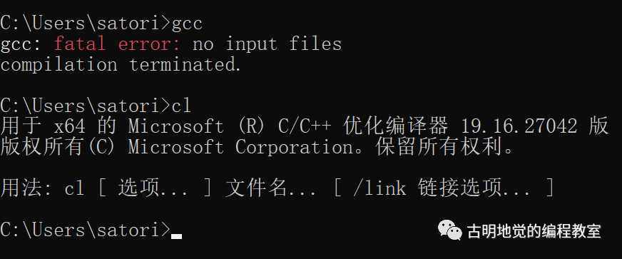
我这里已经配置好了，包括 MinGW 和 Visual Studio。
Cython 编译器
安装 Cython 编译器的话，直接 pip install Cython 即可。因此我们看到 Cython 编译器只是 Python 的一个第三方包，它的作用就是对 Cython 代码进行解析，然后生成 C 代码。因此 Cython 编译器想要运行，同样需要借助 CPython 解释器。
from Cython import __version__
print(__version__) # 0.29.14
如果能够正常执行，那么证明安装成功。
disutils
有了 Cython 编译器，我们就可以生成 C 代码了；有了 C 编译器，我们就能基于 C 代码生成扩展模块了。但是第二步比较麻烦，因为要输入的命令参数非常多，而 Python 有一个标准库 disutils，专门用来构建、打包、分发 Python 工程，可以方便我们编译。
disutils 有一个对我们非常有用的特性，就是它可以借助 C 编译器将 C 源码编译成扩展模块，并且 disutils 是自带的，考虑了平台、架构、Python 版本等因素，因此我们在任意地方使用 disutils 都可以得到扩展模块。
那么废话不多说，下面就来看看如何编译。
3.3 手动编译 Cython 代码
先来编写 Cython 源文件，还以斐波那契数列为例，文件就叫 fib.pyx。Cython 源文件的后缀，以 .pyx 结尾。
def fib(n):
"""这是一个扩展模块"""
cdef int i
cdef double a=0.0, b=1.0
for i in range(n):
a, b = a + b, a
return a
然后我们对其进行编译，首先在当前目录中再创建一个 setup.py，里面写上编译相关的代码：
from distutils.core import setup
from Cython.Build import cythonize
# 我们说构建扩展模块的过程分为两步:
# 1）将 Cython 代码翻译成 C 代码;
# 2）根据 C 代码生成扩展模块
# 第一步要由 Cython 编译器完成, 通过 cythonize;
# 第二步要由 distutils 完成, 通过 distutils.core 下的 setup
setup(ext_modules=cythonize("fib.pyx", language_level=3))
# 里面还有一个参数 language_level=3
# 表示只需要兼容 Python3 即可，而默认是 2 和 3 都兼容
# 如果你是 Python3 环境，那么建议加上这个参数
# cythonize 负责将 Cython 代码转成 C 代码
# 然后 setup 根据 C 代码生成扩展模块
下面就可以进行编译了，通过 python setup.py build 即可完成编译。

执行完命令之后，当前目录会多出一个 build 目录，里面的结构如图所示。重点是那个 fib.cp38-win_amd64.pyd 文件，该文件就是根据 fib.pyx 生成的扩展模块，至于其它的可以直接删掉了。我们把这个文件单独拿出来测试一下：
import fib
# 我们看到该 pyd 文件直接就被导入了
# 至于中间的 cp38-win_amd64 指的是解释器版本、操作系统等信息
print(fib)
"""
<module 'fib' from 'D:\\satori\\fib.cp38-win_amd64.pyd'>
"""
# 我们在里面定义了一个 fib 函数
# fib.pyx 里面定义的函数在编译成扩展模块之后可以直接用
print(fib.fib(20))
"""
6765.0
"""
# doc string
print(fib.fib.__doc__)
"""
这是一个扩展模块
"""
我们在 Linux 上再测试一下，代码以及编译方式都不需要改变，并且生成的扩展模块的位置也不变。
>>> import fib
>>> fib
<module 'fib' from '/root/fib.cpython-36m-x86_64-linux-gnu.so'>
>>> exit()
我们看到依旧是可以导入的，只不过扩展模块在 Linux 上是 .so 的形式，Windows 上是 .pyd。因此我们可以看出，所谓 Python 的扩展模块，本质上就是当前操作系统上一个动态库。只不过生成该动态库的 C 源文件遵循标准的 Python/C API，所以它是可以被解释器识别、直接通过 import 语句导入的，就像导入普通的 py 文件一样。
而对于其它的动态库，比如 Linux 中存在大量的动态库（.so文件），而它们则不是由遵循标准 Python/C API 的 C 文件生成的，所以此时再通过 import 导入，解释器就无法识别了。如果 Python 真的想调用这样的动态库，则需要使用 ctypes、cffi 等模块。
另外在 Windows 环境，编译器可以使用 gcc 或者 vs，那么问题来了，在生成扩展时，要如何指定编译器种类呢？非常简单，可以在标准库 distutils 的目录下新建一个 distutils.cfg 文件，里面写入如下内容：
[build]
compiler=mingw32 或者 msvc
mingw32 代表 gcc，msvc 代表 vs。
然后 Cython 还可以引入 C 源文件，因为 Cython 同时理解 C 和 Python。如果已经有现成的 C 库，那么 Cython 可以直接拿来用。
// 文件名：cfib.h
// 定义一个函数声明
double cfib(int n);
// 文件名：cfib.c
// 函数体的实现
double cfib(int n) {
int i;
double a=0.0, b=1.0, tmp;
for (i=0; i<n; ++i) {
tmp = a; a = a + b; b = tmp;
}
return a;
}
目前已经有 C 实现好的斐波那契函数了，那么在 Cython 里面要如何使用呢？我们来编写 Cython 文件，文件名还是 fib.pyx。
# 通过 cdef extern from 导入头文件
# 写上要用的函数
cdef extern from "cfib.h":
double cfib(int n)
# 然后 Cython 可以直接调用
def fib_with_c(n):
"""调用 C 编写的斐波那契数列"""
return cfib(n)
然后是编译：
from distutils.core import setup, Extension
from Cython.Build import cythonize
"""
之前是直接往 cythonize 里面传入一个文件名即可
但是现在我们传入了一个 Extension 对象
通过 Extension 对象的方式可以实现更多功能
这里指定的 name 表示编译之后的文件名
显然编译之后会得到 wrapper_cfib.cp38-win_amd64.pyd
如果是之前的方式, 那么得到的就是 fib.cp38-win_amd64.pyd
默认会和 .pyx 文件名保持一致, 这里我们可以自己指定
sources 则是代表源文件，需要指定 .pyx 以及使用的 c 源文件
"""
ext = Extension(name="wrapper_cfib",
sources=["fib.pyx", "cfib.c"])
setup(ext_modules=cythonize(ext, language_level=3))
编译之后，进行调用：
import wrapper_cfib
print(wrapper_cfib.fib_with_c(20))
"""
6765.0
"""
print(wrapper_cfib.fib_with_c.__doc__)
"""
调用 C 编写的斐波那契数列
"""
成功调用了 C 编写的斐波那契数列函数，这里我们使用了一种新的创建扩展模块的方法，来总结一下。
- 1）如果是单个 pyx 文件的话，那么直接通过 cythonize("xxx.pyx") 即可。
- 2）如果 pyx 文件还引入了 C 文件，那么 cythonize 里面需要指定一个 Extension 对象。参数 name 是编译之后的扩展模块的名字，参数 sources 是编译的源文件，并且不光要指定 .pyx 文件，依赖的 C 文件同样要指定。
建议后续都使用第二种方式，可定制性更强。
而且我们之前使用的 cythonize("fib.pyx") 完全可以用 cythonize(Extension("fib", ["fib.pyx"])) 进行替代。
关于使用 Cython 包装 C、C++ 代码的更多细节，我们会在后续详细介绍，总之编译的时候相应的源文件是不能少的。
3.4 通过 IPython 动态交互 Cython
使用 distutils 编译 Cython 可以让我们控制每一步的执行过程，但也意味着我们在使用之前必须要先经过独立的编译，不涉及到交互式。而 Python 的一大特性就是交互式，比如 IPython，所以需要想个法子让 Cython 也支持交互式，而实现的办法就是魔法命令。
我们打开 IPython，在上面演示一下。
# 我们在 IPython 上运行
# 执行 %load_ext cython 便会加载 Cython 的一些魔法函数
In [1]: %load_ext cython
# 然后神奇的一幕出现了
# 加上一个魔法命令，就可以直接写Cython代码
In [2]: %%cython
...: def fib(int n):
...: """这是一个 Cython 函数，在 IPython 上编写"""
...: cdef int i
...: cdef double a = 0.0, b = 1.0
...: for i in range(n):
...: a, b = a + b, a
...: return a
# 测试用时，平均花费82.6ns
In [6]: %timeit fib(50)
82.6 ns ± 0.677 ns per loop (mean ± std. dev. of 7 runs, 10000000 loops each)
注意：以上同样涉及到编译成扩展模块的过程。

首先 IPython 中存在一些魔法命令，这些命令以一个或两个百分号开头，它们提供了普通 Python 解释器所不提供的功能。%load_ext cython 会加载 Cython 的一些魔法函数，如果执行成功将不会有任何的输出。
然后重点来了，%%cython 允许我们在 IPython 解释器中直接编写 Cython 代码，当我们按下两次回车时，显然这个代码块就结束了。但是里面的 Cython 代码会被 copy 到名字唯一的 .pyx 文件中，并将其编译成扩展模块，编译成功之后 IPython 会再将该模块里的所有内容都导入到当前环境中，以便我们使用。
因此上述的编译过程、编译完成之后的导入过程，都是我们在按下两次回车键之后自动发生的。但是不管怎么样，它都涉及到编译成扩展模块的过程，包括后面要说的即时编译也是如此，只不过这一步不需要手动做了。
当然相比 IPython，我们更常用 jupyter notbook，既然 Cython 在前者中可以使用，那么后者肯定也是可以的。

jupyter notebook 底层也是使用了 IPython，所以它的原理和 IPython 是等价的，会先将代码块 copy 到名字唯一的 .pyx 文件中，然后进行编译。编译完毕之后再将里面的内容导入进来，而第二次编译的时候由于单元格里面的内容没有变化，所以不再进行编译了。
另外在编译的时候如果指定了 --annotate 选项，那么还可以看到对应的代码分析。
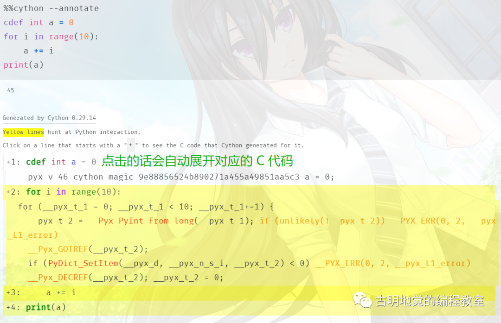
可以看到还是非常强大的，尤其是在和 jupyter 结合之后，真的非常方便。
3.5 使用 pyximport 即时编译
因为 Cython 是以 Python 为中心的，所以我们希望 Python 解释器在导包的时候能够自动识别 Cython 文件，导入 Cython 就像导入常规、动态的 Python 文件一样。但是不好意思，Python 在导包的时候并不会自动识别以 .pyx 结尾的文件，但是我们可以通过 pyximport 来改变这一点。
pyximport 也是一个第三方模块，安装 Cython 的时候会自动安装。
def fib(int n):
cdef int i
cdef double a = 0.0, b = 1.0
for i in range(n):
a, b = a + b, a
return a
文件名仍叫 fib.pyx，下面来导入它。
import pyximport
# 这里同样指定 language_level=3
# 表示针对的是 py3
pyximport.install(language_level=3)
# 执行完之后, 解释器在导包的时候就会识别 Cython 文件了
# 当然这个过程也是需要先编译的
import fib
print(fib.fib(20)) # 6765.0
正如我们上面演示的那样，使用 pyximport 可以让我们省去 cythonize 和 distutils 这两个步骤（注意：这两个步骤还是存在的，只是不用我们做了）。
另外 Cython 源文件不会立刻编译，只有当被导入的时候才会编译。即便后续 Cython 源文件被修改了，pyximport 也会自动检测，当重新导入的时候也会再度重新编译，机制就和 Python 的 pyc 文件是一个道理。
自动编译之后的 pyd 文件位于 ~/.pyxbld/lib.xxx 中。
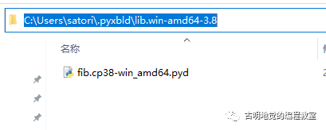
但是这样有一个弊端，我们说 pyx 文件并不是直接导入的，而是在导入之前先有一个编译成扩展模块的步骤，然后导入的是这个扩展模块，只不过这一步骤不需要我们手动来做了。
所以它要求你的当前环境中有一个 Cython 编译器以及合适的 C 编译器，而这些环境是不受控制的，没准哪天就编译失败了。因此最保险的方式还是使用我们之前说的 distutils，先编译成扩展模块（.pyd 或者 .so），然后再放在生产模式中使用。
但是问题来了，如果 Cython 文件中还引入了其它的 C 文件该怎么办呢？还以我们之前的斐波那契数列为例：
// 文件名：cfib.h
// 定义一个函数声明
double cfib(int n);
// 文件名：cfib.c
// 函数体的实现
double cfib(int n) {
int i;
double a=0.0, b=1.0, tmp;
for (i=0; i<n; ++i) {
tmp = a; a = a + b; b = tmp;
}
return a;
}
然后是 fib.pyx 文件。
cdef extern from "cfib.h":
double cfib(int n)
def fib_with_c(n):
return cfib(n)
那么问题来了，如果这个时候通过 pyximport 来导入 fib 会发生什么后果呢？答案是报错，因为它不知道该去哪里寻找这些外部文件，而显然这些文件应该是要链接在一起的。那么要如何做呢？就是我们下面要说的问题了。
3.6 控制 pyximport 并管理依赖
我们说手动编译的时候，需要指定依赖的 C 文件的位置，但是直接导入 .pyx 文件的时候就不知道这些依赖在哪里了。所以我们应该还要定义一个 .pyxbld 文件，.pyxbld 文件要和 .pyx 文件具有相同的基名称，比如我们是为了指定 fib.pyx 文件的依赖，那么 .pyxbld 文件就应该叫做 fib.pyxbld，并且它们要位于同一目录中。
那么这个 fib.pyxbld 文件里面应该写什么内容呢？
# fib.pyxbld
from distutils.extension import Extension
def make_ext(modname, pyxfilename):
"""
如果 .pyxbld 文件中定义了这个函数
那么在编译之前会进行调用，并自动往进行传参
modname 是编译之后的扩展模块名，显然这里就是 fib
pyxfilename 是编译的 .pyx 文件，显然是 fib.pyx
注意: .pyx 和 .pyxbld 要具有相同的基名称
然后它要返回一个我们之前说的 Extension 对象
:param modname:
:param pyxfilename:
:return:
"""
return Extension(modname,
sources=[pyxfilename, "cfib.c"],
# include_dir 表示在当前目录中寻找头文件
include_dirs=["."])
# 我们看到整体还是类似的逻辑，因为编译这一步是怎么也绕不过去的
# 区别就是手动编译还是自动编译，如果是自动编译，显然限制会比较多
# 想解除限制，则需要定义 .pyxbld 文件
# 但很明显，这和手动编译没啥区别了
此时我们再来直接导入看看，会不会得到正确的结果。
import pyximport
pyximport.install(language_level=3)
import fib
print(fib.fib_with_c(50))
"""
12586269025.0
"""
一切正常。
.pyxbld 文件中除了通过定义 make_ext 函数之外，还可以定义 make_setup_args 函数。对于 make_ext 函数，在编译的时候会自动传递两个参数：modname 和 pyxfilename。但如果定义的是 make_setup_args 函数，那么在编译时不会传递任何参数，一些都由你自己决定。
但这里还有一个问题，首先 Cython 源文件一旦改变了，那么再导入的时候就会重新编译；但如果 Cython 源文件（.pyx）依赖的 C 文件改变了呢？这个时候导入的话还会自动重新编译吗？答案是会的，Cython 编译器不仅会检测 Cython 文件的变化，还会检测它依赖的 C 文件的变化。
我们将 fib.c 中的函数 cfib 的返回值加上 1.1，然后其它条件不变，看看结果如何。
import pyximport
pyximport.install(language_level=3)
import fib
print(fib.fib_with_c(50))
"""
12586269026.1
"""
可以看到结果变了，之前的话还需要定义一个具有相同基名的 .pyxdeps 文件，来指定 .pyx 文件具有哪些依赖，但是目前不需要了，会自动检测依赖文件的变化。
但是说实话，像这种依赖 C 文件的情况，建议还是事先编译好，这样才能百分百稳定运行。当然如果你部署服务的环境具备编译条件，那么也可以不用提前编译。
3.7 小结
目前我们介绍了如何将 pyx 文件编译成扩展模块，对于一个简单的 pyx 文件来说，方法如下：
from distutils.core import setup, Extension
from Cython.Build import cythonize
# 推荐以后就使用这种方法
ext = Extension(
# 生成的扩展模块的名字
name="wrapper_fib",
# 源文件
sources=["fib.pyx", "cfib.c"],
)
setup(ext_modules=cythonize(ext, language_level=3))
如果还依赖 C 文件，那么就在 sources 参数里面把依赖的 C 文件写上即可。另外，如果你在编译时发现报错，找不到相应的头文件、C 源文件，那么说明你的查找目录没有指定正确，而关于这一方面我们后续再聊。
此外还可以通过 pyximport 自动编译，我们后面在学习 Cython 语法的时候，就采用这种自动编译的方式了。因为方便，不需要我们每次都来手动编译，但如果要将服务放在生产环境中，建议还是提前编译好。
4. 探究 Cython 和 Python 的本质差异
作者：古明地觉
公众号：古明地觉的编程教室
公众号二维码：
前面我们说了 Cython 是什么，为什么我们要用它，以及如何编译和运行 Cython 代码。有了这些知识，那么是时候进入 Cython 的深度探索之路了。不过在此之前，我们还是要深入分析一下 Python 和 Cython 的区别。
Python 和 Cython 的差别从大方向上来说无非有两个，一个是：运行时解释和预先编译；另一个是：动态类型和静态类型。
4.1 解释执行和编译执行
为了更好地理解为什么 Cython 可以提高 Python 代码的执行性能，有必要对比一下虚拟机执行 Python 代码和操作系统执行已经编译好的 C 代码之间的差别。
Python 代码在运行之前，会先被编译成 pyc 文件（里面存储的是 PyCodeObject 对象），然后读取里面的 PyCodeObject 对象，创建栈帧，执行内部的字节码。而字节码是能够被 Python 虚拟机解释或者执行的基础指令集，并且虚拟机独立于平台，因此在一个平台生成的字节码可以在任意平台运行。
虚拟机将一个高级字节码翻译成一个或者多个可以被操作系统调度 CPU 执行的低级操作（指令）。这种虚拟化很常见并且十分灵活，可以带来很多好处：其中一个好处就是不会被挑剔的操作系统嫌弃（相较于编译型语言，你在一个平台编译的可执行文件在其它平台上就用不了了），而缺点是运行速度比本地编译好的机器码慢。
站在 C 的角度，由于不存在虚拟机，因此也就不存在所谓的高级字节码。C 代码会被直接编译成机器码，以一个可执行文件或者动态库（.dll 或 .so）的形式存在。但是注意：它依赖于当前的操作系统，是为当前平台和架构量身打造的，可以直接被 CPU 执行，而且级别非常低（伴随着速度快），所以它与所在的操作系统是有关系的。
那么有没有一种办法可以弥补虚拟机的字节码和 CPU 的机器码之间的宏观差异呢？答案是有的，那就是 C 代码可以被编译成一种名为扩展模块的特定类型的动态库，并且这些库可以作为成熟的 Python 模块，但是里面的内容已经是由标准 C 编译器编译成的机器码。Python 虚拟机在导入扩展模块执行的时候，不会再解释高级字节码，而是直接运行机器代码，这样就能移除性能开销。
这里再提一下扩展模块，我们说 Windows 中存在 .dll（动态链接库）、Linux 中存在 .so（共享文件）。如果只是 C 或者 C++、甚至是 Go 等等编写的普通源文件，然后编译成 .dll 或者 .so，那么这两者可以通过 ctypes 调用，但是无法通过 import 导入。如果你强行导入，那么会报错：
ImportError: dynamic module does not define module export function
但如果是遵循 Python/C API 编写，尽管编译出的扩展模块在 Linux 上也是 .so、Windows 上是 .pyd（.pyd 也是个 .dll），但它们是可以直接被解释器识别被导入的。
将一个普通的 Python 代码编译成扩展模块的话（Cython 是 Python 的超集，即使是纯 Python 也可以编译成扩展模块），效率上可以有多大的提升呢？根据 Python 代码所做的事情，这个差异会非常广泛，但是通常将 Python 代码转换成等效的扩展模块的话，效率大概有 10% 到 30% 的提升。因为一般情况下，代码既有 IO 密集也会有 CPU 密集。
所以即便没有任何的 Cython 代码，纯 Python 在编译成扩展模块之后也会有性能的提升。并且如果代码是计算密集型，那么效率会更高。
Cython 给了我们免费加速的便利，让我们在不写 Cython、也就是只写纯 Python 的情况下，还能得到优化。但这种只针对纯 Python 进行的优化显然只是扩展模块的冰山一角，真正的性能改进是使用 Cython 的静态类型来替换 Python 的动态解析。因为 Python 不会进行基于类型的优化，所以即使编译成扩展模块，但如果类型不确定，还是没有办法达到高效率的。
就拿两个变量相加举例：由于 Python 不会做基于类型方面的优化，所以这一行代码对应的机器码的数量显然会很多，即使编译成了扩展模块，其对应的机器码数量也是类似的（内部会有优化，因此机器码数量可能会少一些，但不会少太多）。
这两者区别就是：普通的模块有一个翻译的过程，将字节码翻译成机器码；而扩展模块是事先就已经全部翻译成机器码了。但是 CPU 执行的时候，由于机器码数量是差不多的，因此执行时间也是差不多的，区别就是少了一个翻译的过程。但是很明显，Python 将字节码翻译成机器码花费的时间几乎是不需要考虑的，重点是 CPU 在执行机器码所花费的时间。
因此将纯 Python 代码编译成扩展模块，速度不会提升太明显，提升的 10~30% 也是 Cython 编译器内部的优化，比如发现函数中某个对象在函数结束后就不再使用了，所以将其分配的栈上等等。但如果使用 Cython 时指定了类型，那么由于类型确定，机器码的数量就会大幅度减少。CPU 执行 10 条机器码花的时间和执行 1 条机器码花的时间哪个长，不言而喻。
因此使用 Cython，重点是规定好类型，一旦类型确定，那么速度会快很多。
4.2 动态类型和静态类型
Python 语言和 C、C++ 之间的另一个重要的差异就是：前者是动态语言，后者是静态语言。静态语言要求在编译的时候就必须确定变量的类型，一般通过显式的声明来完成这一点。另一方面，如果一旦声明某个变量，那么之后此作用域中该变量的类型就不可以再改变了。
看起来限制还蛮多的，那么静态类型可以带来什么好处呢？除了编译时的类型检测，编译器也可以根据静态类型生成适应当前平台的高性能机器码。
动态语言（针对于 Python）则不一样，对于动态语言来说，类型不是和变量绑定的，而是和对象绑定的，变量只是一个指向对象的指针罢了。因此 Python 中如果想创建一个变量，那么必须在创建的同时赋上值，不然解释器不知道这个变量到底指向哪一个对象。而像 C 这种静态语言，可以创建一个变量的同时不赋上初始值，比如：int n，因为已经知道 n 是一个 int 类型了，所以分配的空间大小也就确定了。
并且对于动态语言来说，变量即使在同一个作用域中，也可以指向任意的对象，因为变量只是一个指针罢了。举个栗子：
var = 666
var = "古明地觉"
首先是 var = 666，相当于创建了一个整数 666，然后让 var 这个变量指向它；再来一个 var = "古明地觉"，那么会创建一个字符串，然后让 var 指向这个字符串。或者说 var 不再存储整数 666 的地址，而是存储新创建的字符串的地址。
所以在运行 Python 程序时，解释器要花费很多时间来确认执行的低阶操作，并抽取相应的数据。不仅如此，考虑到 Python 设计的灵活性，解释器还要以一种非常通用的方式来执行相应的低阶操作，因为 Python 的变量在任意时刻可以指向任意类型的数据。以上便是所谓的动态解析，而 Python 的通用动态解析是缓慢的，还是以 a + b 为栗：
- 1）解释器要检测 a 指向的对象的类型，这在 C 一级至少需要一次指针查找；
- 2）解释器从对应的类型对象中寻找加法的实现，这可能又需要一个或者多个额外的指针查找和内部函数调用；
- 3）如果解释器找到了相应的实现，那么解释器就要发起一个函数调用；
- 4）解释器会调用这个加法函数，并将 a 和 b 作为参数传递进去；
- 5）Python 的对象在 C 中都是一个结构体，比如：整数在 C 中是 PyLongObject，内部有引用计数、类型、ob_size、ob_digit，这些成员是什么不必关心，总之其中一个成员肯定是存放具体的值的，其它成员则是存储额外的属性的。而加法函数显然要从这两个结构体中抽出实际的数据，这需要指针查找以及将数据从 Python 类型转换到 C 类型。如果成功，那么会执行加法操作；如果不成功，比如类型不对，发现 a 是整数但 b 是个字符串，就会报错；
- 6）执行完加法操作之后，必须将结果再转回 Python 对象，因此获取它的指针、转成 PyObject * 之后再返回；
以上就是 Python 执行 a + b 的流程，而 C 语言面对 a + b 这种情况，表现则是不同的。因为 C 是静态编译型语言，C 编译器在编译的时候就决定了执行的低阶操作和要传递的参数数据。
在运行时，一个编译好的 C 程序几乎跳过了 Python 解释器要必须执行的所有步骤。对于 a + b，编译器提前就确定好了类型，比如整型，那么编译器生成的机器码指令是寥寥可数的：将数据加载至寄存器进行相加，然后存储结果。
所以我们看到编译后的 C 程序几乎将时间都只花在了调用快速的 C 函数以及执行等基本操作上，没有 Python 那些花里胡哨的动作。并且由于静态语言对变量类型的限制，编译器会生成更快速、更专业的指令，这些指令是为其数据以及所在平台量身打造的。因此 C 语言比 Python 快上几十倍甚至上百倍，这简直再正常不过了。
而 Cython 在性能上可以带来如此巨大提升的原因就在于，它将 C 的静态类型引入到 Python 中，而静态类型会将运行时的动态解析转化成基于类型优化的机器码。
在 Cython 诞生之前，我们只能通过 C 来实现 Python 代码，然后从静态类型中获益，也就是用 C 编写所谓的扩展模块。但 Cython 的出现则简化了这一点，可以让我们在写类似于 Python 代码的同时，还能使用 C 的静态类型系统。
那么下面我们就来学习 Cython 的第一个、也是最重要的关键字：cdef，它是我们通往 C 性能的大门。
5. 通过 cdef 进行静态类型声明
作者：古明地觉
公众号：古明地觉的编程教室
公众号二维码：
首先 Python 中声明变量的方式在 Cython 里面也是可以使用的，因为 Python 代码也是合法的 Cython 代码。
a = [x for x in range(12)]
b = a
a[3] = 42.0
assert b[3] == 42.0
a = "xxx"
assert isinstance(b, list)
在 Cython 中，没有类型化的动态变量的行为和 Python 完全相同，通过赋值语句 b = a 让 b 和 a 都指向同一个列表。在 a[3] = 42.0 之后，b[3] == 42.0 也是成立的，因此断言成立。
即便后面将 a 修改了，也只是让 a 指向了新的对象，调整相应的引用计数。而对 b 而言则没有受到丝毫影响，因此 b 指向的依旧是一个列表。这是完全合法、并且有效的 Python 代码。
而对于静态类型变量，我们在 Cython 中需要通过 cdef 关键字进行声明，比如：
cdef int i
cdef int j
cdef float k
# 我们看到就像使用 Python 和 C 的混合体一样
j = 0
i = j
k = 12.0
j = 2 * i
assert i != j
上面除了变量的声明之外，其它的使用方式和 Python 并无二致，当然简单的赋值的话，基本上所有语言都是类似的。但是 Python 的一些内置函数、类、关键字等等都是可以直接使用的，因为我们在 Cython 中可以直接写 Python 代码，它是 Python 的超集。
但是有一点需要注意：我们上面创建的变量 i、j、k 是 C 中的类型（int、float 比较特殊，后面会解释），其意义最终要遵循 C 的标准。
不仅如此，就连使用 cdef 声明变量的方式也遵循 C 的标准。
cdef int i, j, k
cdef float x, y
# 声明的同时并赋值
cdef int a = 1, b = 2
cdef float c = 3.0, b = 4.1
而在函数内部，cdef 也是要进行缩进的，它们声明的变量也是一个局部变量。
def foo():
# 这里的 cdef 缩进在函数内部
cdef int i
cdef int N = 2000
# a 没有初始值，默认是零值，即 0.0
cdef float a, b = 2.1
并且 cdef 还可以使用类似于 Python 上下文管理器的方式。
def foo():
# 这种声明方式也是可以的
# 和上面的方式完全等价
cdef:
int i
int N = 2000
float a, b = 2.1
# 但是声明变量时，要注意缩进
# Python 对缩进是有讲究的, 它规定了作用域
# 所以 Cython 在语法方面还是保留了 Python 的风格
所以使用 cdef 声明变量非常简单，格式：cdef 类型 变量名。当然啦，同时也可以赋上初始值。然而一旦使用 cdef 静态声明，那么后续再给变量赋值的时候，就不能那么随心所欲了，举个例子：
# 如果是动态声明，以下都是合法的
# a 可以指向任意的对像，没有限制
a = 123
a = []
# 但如果是静态声明
# 那么 b 的类型必须是整型
cdef int b = 123
# 将一个列表赋值给 a 会出现编译错误
b = [] # compile error
也正是因为在编译阶段就能检测出类型，并分配好内存，所以在执行的时候速度才会快。
5.1 static 和 const
如果你了解 C 的话，那么思考一下：假设要在函数中返回一个局部变量的指针、并且外部在接收这个指针之后，还能访问指针指向的值，这个时候该怎么办呢？我们知道 C 函数中的变量是分配在栈上的（不使用 malloc 函数，而是直接创建一个变量），函数结束之后变量对应的值就被销毁了，所以这个时候即使返回一个指针也是无意义的。
尽管有些时候，在返回指针之后还是能够访问指向的内存，但这只是当前使用的编译器比较笨，在编译时没有检测出来。如果是高级一点的编译器，那么在访问的时候会报出段错误或者打印一个错误的值；而更高级的编译器甚至连指针都不让返回了，因为指针指向的内存已经被回收了，那还要这个指针做什么？因此指针都不让返回了。
而如果想返回指针，那么只需要在声明变量的同时在前面加上 static 关键字，比如 static int i，这样的话 i 这个变量就不会被分配到栈区，而是会被分配到数据区。数据区里变量的生命周期不会随着函数的结束而结束，而是伴随着整个程序。
但可惜的是，static 不是一个有效的 Cython 关键字，因此我们无法在 Cython 中声明一个 C 的 static 变量。
除了 static，在 C 中还有一个 const，用来声明常量。一旦使用 const 声明，比如 const int i = 3，那么这个 i 在后续就不可以被修改了。而在 Cython 中，const 是支持的。
cdef int a = 11
a = 22
print(a)
cdef const int b = 11
b = 22 # 编译错误
print(b)
总之 C 的 static 和 const 目前在 Cython 中无需太关注。
5.2 C 类型
我们上面声明变量的时候，指定的类型是 int 和 float，而在 Python 和 C 里面都有 int 和 float，那么用的到底是谁的呢？其实上面已经说了，用的是 C 的 int 和 float，至于原因，我们后面再聊。
而 Cython 可以使用的 C 类型不仅有 int 和 float，像 short, int, long, unsigned short, long long, size_t, ssize_t, float, double 等基础类型都是支持的，声明变量的方式均为 cdef 类型 变量名。声明的时候可以赋初始值，也可以不赋初始值。
而除了基础类型，还有指针、数组、定义类型别名、结构体、共同体、函数指针等等也是支持的，我们后面细说。
5.3 Cython 的自动类型推断
Cython 还会对函数体中没有进行类型声明的变量自动执行类型推断，比如：for 循环里面全部都是浮点数相加，没有涉及到其它类型的变量，那么 Cython 在自动对变量进行推断的时候会发现这个变量可以被优化为静态类型的 double。
但程序显然无法对动态类型的语言进行非常智能的全方位优化，默认情况下，Cython 只有在确认这么做不会改变代码块的语义之后才会进行类型推断。
看一个简单的函数：
def automatic_inference():
i = 1
d = 2.0
c = 3 + 4j
r = i * d + c
return r
在这个例子中，Cython 会将赋给变量 i、c、r 的值标记为通用的 Python 对象。尽管这些对象的类型和 C 的类型具有高度的相似性，但 Cython 会保守地推断 i 可能无法用 C 的整数表示（C 的整数有范围，而 Python 没有、可以无限大），因此会将其作为符合 Python 代码语义的 Python 对象。
而对于 d = 2.0，则可以自动推断为 C 的 double，因为 Python 的浮点数对应的值在底层就是使用一个 double 来存储的。所以最终对于开发者来讲，变量 d 看似是一个 Python 的对象，但 Cython 在执行的时候会将其视为 C 的 double 以提高性能。
这就是即使我们写纯 Python 代码，Cython 编译器也能进行优化的原因，因为会进行推断。但是很明显，我们不应该让 Cython 编译器去推断，而是明确指定变量的类型。
当然如果非要 Cython 编译器去猜，也是可以的，而且还可以通过 infer_types 编译器指令，在一些可能会改变 Python 代码语义的情况下给 Cython 留有更多的余地来推断一个变量的类型。
cimport cython
@cython.infer_types(True)
def more_inference():
i = 1
d = 2.0
c = 3 + 4j
r = i * d + c
return r
这里出现了一个新的关键字 cimport，它的含义我们以后会说，目前只需要知道它和 import 关键字一样，是用来导入模块的即可。然后我们通过装饰器 @cython.infer_types(True)，启动了相应的类型推断，也就是给 Cython 留有更多的猜测空间。
当 Cython 支持更多推断的时候，变量 i 会被类型化为 C 的整型；d 和之前一样是 double，而 c 和 r 都是复数变量，复数则依旧使用 Python 的复数类型。
但是注意：并不代表启用 infer_types 时，就万事大吉了。我们知道在不指定 infer_types 的时候，Cython 推断类型显然是采用最最保险的方法、在保证程序正确执行的情况下进行优化，不能为了优化而导致程序出现错误，显然正确性和效率之间，正确性是第一位的。
而 C 的整型由于存在溢出的问题，所以 Cython 不会擅自使用。但是我们通过 infer_types 启动了更多的类型推断，让 Cython 在不改变语义的情况下使用 C 的类型。但是溢出的问题它不知道，所以在这种情况下是需要我们来负责确保不会出现溢出。
对于一个函数来说，如果启动这样的类型推断的话，我们可以使用 infer_types 装饰器的方式。不过还是那句话，我们应该手动指定类型，而不是让 Cython 编译器去猜，因为我们是代码的编写者，类型什么的我们自己最清楚。因此 infer_types 这个装饰器，在工作中并不常用，而且想提高速度，就必须事先明确地规定好变量的类型是什么。
5.4 小结
以上就是在 Cython 中如何静态声明一个变量，方法是使用 cdef 关键字。事先规定好类型是非常重要的，一旦类型确定了，那么生成的机器码的数量会少很多，从而实现速度的提升。
而 C 类型的变量的运算速度比 Python 要快很多，这也是为什么 int 和 float 会选择 C 的类型。而除了 int 和 float，C 的其它类型在 Cython 中也是支持的，包括指针、结构体、共同体这样的复杂结构。
但 C 的整型有一个问题，就是它是有范围的，在使用的时候我们要确保不会溢出。所以 Cython 在自动进行类型推断的时候，只要有可能改变语义，就不会擅自使用 C 的整型，哪怕赋的整数非常小。这个时候可以通过 infer_types 装饰器，留给 Cython 更多的猜测空间。
不过还是那句话，我们不应该让 Cython 编译器去猜，是否溢出是由我们来确定的。如果能保证整数不会超过 int 所能表示的最大范围，那么就将变量声明为 int；如果 int 无法表示，那么就使用 long long；如果还无法表示，那就没办法了，只能使用 Python 的整型了。而使用 Python 整型（不光整型，所有类型都是如此）的方式就是不使用 cdef，直接动态声明即可。
所以如果要将变量声明为整型，可以直接使用 ssize_t，等价于 long long。而在工作中，能超过 ssize_t 最大表示范围的整数还是极少的。
# 需要确保赋给 a 的整数，不会超过 ssize_t 所能表示的最大范围
cdef ssize_t a
# b 可能会非常非常大，甚至连 ssize_t 都无法表示
# 此时就需要动态声明了，但很少会遇到这么大的整数
b = ...
另外 ssize_t 我们更喜欢写成 Py_ssize_t，后者是前者的别名。
再次强调，事先规定好类型对速度的提升起着非常重要的作用。因此在声明变量的时候，一定将类型指定好，特别是涉及到数值计算的时候。只不过此时使用的是 C 的类型，需要额外考虑整数溢出的情况，但如果将类型声明为 ssize_t 的话，还是很少会发生溢出的。
以上就是 cdef 的用法，但是还没有结束，我们接下来要介绍更多与类型相关的内容。
6. 支持静态声明的类型
作者：古明地觉
公众号：古明地觉的编程教室
公众号二维码：
上一节我们说了，C 的类型在 Cython 里面都是支持的，下面我们来看一下指针。
cdef double a
cdef double *b = NULL
# 和 C 一样, * 要放在类型或者变量的附近
# 但如果在一行中声明多个指针变量
# 那么每一个变量都要带上 *
cdef double *c, *d
# 如果是下面这样的话
# 则表示声明一个指针变量和一个整型变量
cdef int *e, f
既然可以声明指针变量，那么也能够取得某个变量的地址才对。是的，在 Cython 中通过 & 获取一个变量的地址。
cdef double a = 3.14
cdef double *b = &a
问题来了，既然可以获取指针，那么能不能通过 * 来获取指针指向的值呢？答案是可以获取值，但方式不是通过 * 来实现。Python 的 * 有特殊含义，没错，就是 *args 和 **kwargs，它们允许一个函数接收任意个数的参数，并且通过 * 还可以对一个序列进行解包。
因此对于 Cython 来讲，无法通过 *p 来获取 p 指向的内存。在 Cython 中获取指针指向的内存，可以通过类似于 p[0] 这种方式，p 是一个指针变量，那么 p[0] 就是 p 指向的内存。
cdef double a = 3.14
cdef double *b = &a
print(f"a = {a}")
# 修改 b 指向的内存
b[0] = 6.28
# 再次打印 a
print(f"a = {a}")
该文件叫做 cython_test.pyx，我们在另一个 py 文件中导入它。
import pyximport
pyximport.install(language_level=3)
import cython_test
"""
a = 3.14
a = 6.28
"""
.pyx 文件里面有 print 语句，导入的时候自动打印，而打印结果显示 a 确实被修改了。因此我们在 Cython 中可以通过 & 来获取指针，也可以通过指针[0]的方式获取指针指向的内存。唯一的区别就是 C 里面使用 * 来解引用，而 Cython 里面如果也使用 *，比如 *b = 6.28，那么在语法上是不被允许的。
C 和 Cython 中关于指针还有一个区别，就是指针在指向一个结构体的时候。假设有一个结构体指针叫做 s，里面有两个成员 a 和 b，都是整型。那么对于 C 而言，可以通过 s -> a + s -> b 的方式将两个成员相加；但对于 Cython 来说，则是 s.a + s.b。我们看到这个和 Rust 是类似的，无论是结构体指针还是结构体本身，都是使用 . 的方式访问结构体内部的成员。
6.1 静态类型变量和动态类型变量的混合
Cython 允许静态类型变量和动态类型变量之间进行赋值，这是一个非常强大的特性。它允许我们使用动态的 Python 对象，并且在决定性能的地方能很轻松地将其转化为快速的静态对象。
假设我们有几个静态的 C 整数要组合成一个 Python 的元组，如果使用 Python/C API 创建和初始化的话，会很乏味，需要几十行代码以及大量的错误检查；而在Cython中，只需要像 Python 一样做即可：
cdef int a, b, c
t = (a, b, c)
然后我们来导入一下：
import pyximport
pyximport.install(language_level=3)
import cython_test
# 静态声明的变量如果没有指定初始值
# 那么默认为零值
print(cython_test.t) # (0, 0, 0)
print(type(cython_test.t)) # <class 'tuple'>
print(type(cython_test.t[0])) # <class 'int'>
# 虽然 t 可以访问，但 a、b、c 是无法访问的，因为它们是 C 中的变量
# 使用 cdef 定义的变量都会被屏蔽掉，在 Python 中是无法使用的
try:
print(cython_test.a)
except Exception as e:
print(e) # module 'cython_test' has no attribute 'a'
执行的过程很顺畅，这里要说的是：a、b、c 都是使用 cdef 静态声明的变量，Cython 允许使用它们创建动态类型的 Python 元组，然后将该元组分配给 t。所以这个例子便体现了 Cython 的美丽和强大之处，可以用一种显而易见的方式创建一个元组，而无需考虑其它情况。因为 Cython 的目的就在于此，希望概念上简单的事情在实际操作上也很简单。
想象一下使用 Python/C API 的场景，如果要创建一个元组该怎么办？首先要使用 PyTuple_New 申请指定元素个数的空间，还要考虑申请失败的情况；然后调用 PyTuple_SetItem 将元素一个一个的设置进去，并维护引用计数，这显然是非常麻烦的，肯定没有 t = (a, b, c) 来的直接。
不过话虽如此，但并不是所有东西都可以这么做的。上面的例子之所以有效，是因为 Python 的 int 和 C 的 int（还有 short、long 等等）有明显的对应关系。但如果是指针呢？我们知道 Python 里面没有指针这个概念，或者说指针被隐藏了，只有解释器才能操作指针。因此在 Cython 中，我们不可以在 def 定义的函数里面返回和接收指针，以及打印指针、指针作为 Python 的动态数据结构（如：元组、列表、字典等等）中的某个元素，这些都是不可以的。
回到元组的那个例子，如果 a、b、c 是一个指针，那么必须要在放入元组之前解引用，或者说放入元组中的只能是它们指向的值。因为 Python 在语法层面没有指针的概念，所以不能将指针放在元组里面。
同理：假设 cdef int a = 3，那么可以是 cdef int *b = &a，但绝不能是 b = &a。因为直接 b = ... 的话，那么 b 是 Python 的变量，其类型则需要根据值来推断，然而值是一个指针，所以这是不允许的。
但 cdef int b = a 和 b = a 则都是合法的，因为 a 是一个整数，C 的整数可以转化成 Python 的整数，所以编译的时候会自动转化。只不过前者相当于创建了一个 C 的变量 b，Python 导入的时候无法访问；而后者相当于创建一个 Python 变量 b，Python 导入的时候可以访问。
举个例子：
cdef int a
b = &a
"""
cdef int a
b = &a
^
------------------------------------------------------------
cython_test.pyx:5:4: Cannot convert 'int *' to Python object
Traceback (most recent call last):
"""
我们看到在导入的时候，编译失败了。因为 b 是 Python 的变量，而 &a 是一个 int *，所以无法将 int * 转化成 Python 对象。
再看个例子：
cdef int a = 3
cdef int b = a
c = a
然后导入变量 c 是没问题的，而 a 和 b 则无法导入。
import pyximport
pyximport.install(language_level=3)
import cython_test
try:
print(cython_test.a)
except Exception as e:
print(e) # module 'cython_test' has no attribute 'a'
try:
print(cython_test.b)
except Exception as e:
print(e) # module 'cython_test' has no attribute 'b'
print(cython_test.c) # 3
整数显然是可以赋值的，因为 C 和 Python 都有整数，只不过静态声明的 C 变量，无法被外界访问。
6.2 变量的重名问题
看一下下面的几种情况。
1）先定义一个 C 的变量，然后给这个变量重新赋值：
cdef int a = 3
a = 4
Python 在导入的时候能否访问到 a 呢？答案是访问不到的，虽说是 a = 4 像是创建一个 Python 的变量，但是不好意思，上面已经创建了 C 的变量 a。因此下面再操作 a，都是操作 C 的变量 a，如果来一个 a = "xxx"，那么是不合法的。因为 a 已经是整数了，再将一个字符串赋值给 a 显然会报错。
2）先定义一个 Python 变量，再定义一个同名的 C 变量：
b = 3
cdef int b = 4
"""
b = 3
^
------------------------------------------------------------
cython_test.pyx:4:0: Previous declaration is here
"""
即使一个是 Python 的变量，一个是 C 的变量，也依旧不可以重名。不然在 Cython 内部访问 b 的话，究竟访问哪一个变量呢？
所以 b = 3 的时候，变量就已经被定义了，而 cdef int b = 4 又定义了一遍，显然是不合法的。
不光如此，cdef int c = 4 之后再写上 cdef int c = 5 仍然属于重复定义，不合法。但 cdef int c = 4 之后，写上 c = 5 是合法的，因为这相当于改变 c 的值，并没有重复定义。
3）先定义一个 Python 变量，再定义一个同名的 Python 变量：
cdef int a = 666
v = a
print(v)
cdef double b = 3.14
v = b
print(v)
这么做是合法的，其实从 Cython 是 Python 的超集这一点就能理解。主要是：Python 中变量的创建方式和 C 中变量的创建方式是不一样的，Python 的变量只是一个指向某个值的指针，而 C 的变量就是代表值本身。
cdef int a = 5 相当于创建了一个变量 a，这个变量 a 代表的就是 5 本身，只不过这个 5 是 C 的整数 5。而 v = a 相当于先根据 a 的值、也就是 C 的整数 5 创建一个 Python 的整数 5， 然后再让 v 指向它。
那么 v = b 也是同理，因为 v 是 Python 的变量，它想指向谁就指向谁。而 b 是一个 C 的 double，可以转成 Python 的 float。但如果将一个指针赋值给 v 就不可以了，因为 Python 没有任何一个数据类型可以和 C 的指针相对应。
再来看一个栗子：
num = 666
a = num
b = num
print(id(a) == id(b)) # True
首先这个栗子很简单，因为 a 和 b 指向了同一个对象，但如果是下面这种情况呢？
# 这里声明的变量 num 的类型是 long long
# 像 int、long、long long、unsigned int、ssize_t 等等
# 这些类型都表示整型，无非是能表达的整数的范围不同
# 对于 666 这个整数来说，以下的声明方式都行
"""
cdef int num = 666
cdef unsigned long long num = 666
cdef ssize_t num = 666
cdef short num = 666
"""
cdef long long num = 666
a = num
b = num
print(id(a) == id(b))
但当你导入的时候，你会发现打印的是 False，因为此时这个 num 是 C 的变量，然后 a = num 会先根据 num 的值创建一个 Python 的整数，再让 a 指向它；同理 b 也是如此，而显然这会创建两个不同的 666，虽然值一样，但是地址不一样。
如果将 666 改成 123，会发现打印的是 True，原因是 Python 内部存在小整数对象池，池子里面的整数只会创建一次。
所以这就是 Cython 的方便之处，不需要我们自己转化，而是在编译的时候自动转化。当然还是按照我们之前说的，自动转化的前提是可以转化，也就是两者之间要互相对应，比如整数、浮点数。
那么 C 类型和 Python 类型之间的对应关系都有哪些呢？我们总结一下：

注意：C 的布尔类型在 Cython 里面叫做 bint，0 为假，非 0 为真。
这里再多说一句整数溢出的情况，举个例子：
# 显然 C 的 int 是存不下的
i = 2 << 81
# 此处会溢出
cdef int j = i
执行一下看看：
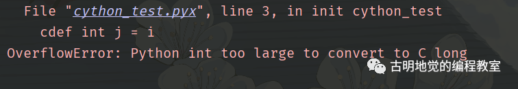
我们看到转成 C 的 int 时，如果存不下会自动尝试使用 long。若还存不下，则报错。
6.3 使用 Python 类型进行静态声明
使用 cdef 声明变量属于静态声明，这种方式声明的变量只能在 Cython 内部使用，Python 是无法访问的；而不使用 cdef、也就是直接创建一个变量，属于动态声明，这种方式声明的变量 Python 可以访问。
然后使用 cdef 声明变量的时候，我们给变量指定类型可以提升效率，但到目前为止我们用的都是 C 的类型，那么 Python 的类型可不可以呢？显然是可以的。
只要是在 CPython 中实现了，并且 Cython 有权限访问的话，都可以用来进行静态声明，而 Python 的内建类型都是满足要求的。换句话说，只要在 Python 中可以直接拿来用的，都可以直接当成 C 的类型来进行声明（bool 类型除外，bool 的话使用 bint）。
# 声明的时候直接初始化
cdef tuple b = tuple("123")
cdef list c = list("123")
cdef dict d = {"name": "古明地觉"}
cdef set e = {"古明地觉", "古明地恋"}
cdef frozenset f = frozenset(["古明地觉", "古明地恋"])
A = a
B = b
C = c
D = d
E = e
F = f
我们测试一下：
import pyximport
pyximport.install(language_level=3)
from cython_test import *
print(A) # 古明地觉
print(B) # ('1', '2', '3')
print(C) # ['1', '2', '3']
print(D) # {'name': '古明地觉'}
print(E) # {'古明地恋', '古明地觉'}
print(F) # frozenset({'古明地恋', '古明地觉'})
得到的结果是正确的，完全可以使用 Python 的类型静态声明。并且声明的时候，我们都赋上了一个初始值，但如果只是声明没有赋上初始值，那么默认为 None。
注意：只要是用 Python 的类型进行静态声明且不赋初始值，那么结果都是 None。比如：cdef tuple b; B = b，那么 Python 在打印 B 的时候显示的就是 None，而不是一个空元组。不过整型是个例外，因为 int 我们实际上用的是 C 里面 int，会得到一个 0，当然还有 float。
问题来了，为什么 Cython 可以做到这一点呢？实际上这些结构在 CPython 中都是已经实现好了的，Cython 只需将变量设置为指向底层某个数据结构的 C 指针。比如 cdef tuple a，那么 a 就是一个 PyTupleObject *，它们可以像普通变量一样使用。
6.4 用于加速的静态类型
我们上面介绍了在 Cython 中使用 Python 的类型进行静态声明，这咋一看有点古怪，为什么不直接使用 Python 的方式创建变量呢？
比如 a = [1, 2, 3] 不香么？为什么非要使用 cdef list a = [1, 2, 3] 这种形式呢？答案是为了遵循一个通用的 Cython 原则：我们提供的静态信息越多，Cython 就越能优化结果。
因为 a = [1, 2, 3]，这个 a 可以指向任意的对象，但是 cdef list a = [1, 2, 3] 的话，这个 a 只能指向列表。
cdef list a = [1, 2, 3]
# 合法
a = [2, 3, 4]
# 不合法，因为 a 只能指向列表
a = (2, 3, 4)
在使用 cdef 声明时，如果变量的类型是 C 的类型，那么变量代表值；如果变量的类型是 Python 的类型，那么变量仍是指向值的指针，只不过指针的类型确定了。
比如通过 cdef list a 声明的变量 a 仍是一个指针，但它不再是泛型指针 PyObject *，而是 PyListObject *，在明确了类型的时候，执行的速度会更快。我们举个例子：
a = []
a.append(1)
我们只看 a.append(1) 这一行，显然它再简单不过了，但你知道解释器是怎么操作的吗？
- 1）检测类型，Python 的变量是一个 PyObject *，因为任何对象在底层都嵌套了 PyObject 这个结构体，但具体是什么类型则需要进一步检索才知道。通过 ob_type 成员，拿到其类型。
- 2）判断类型对象内部是否有 append 方法，有的话则获取，这又需要一次查找。
- 3）进行调用。
因此我们看到一个简单的 append，Python 内部是需要执行以上几个步骤的，但如果我们事先规定好了类型呢？
cdef list a = []
a.append(1)
对于动态变量而言，解释器事先并不知道它指向哪种类型的对象，只能运行时动态转化。但如果创建的时候指定了类型为 list，那么此时的 a 不再是 PyObject *，而是 PyListObject *，解释器知道 a 指向了一个列表。
而我们对列表进行 append 的时候，底层会调用的 C 一级的函数 PyList_Append，索引赋值调用的是 PyList_SetItem，索引取值调用的是 PyList_GetItem，等等等等。每一个操作在 C 一级都指向了一个具体的函数，如果提前知道了类型，那么 Cython 生成的代码可以将上面的三步变成一步。
没错，既然知道指向的是列表了，那么 a.append(1) 会直接调用 PyList_Append 这个 C 一级的函数，这样省去了类型检测、属性查找等步骤，直接调用即可。
所以列表解析比普通的 for 循环快也是如此，因为 Python 对内置结构非常熟悉，当我们使用的是列表解析式，那么解释器就知道要创建一个列表了，因此同样会直接使用 PyList_Append 这个 C 一级的函数。而如果是普通的 for 循环加上 append，那么解释器就要花费很多时间在类型转化和属性查找上面，需要先兜兜转转经过几次查找，然后才能找到 PyList_Append。
但需要注意的是，上面的变量 a 虽然是 list 类型，但它是使用 cdef 静态声明的变量，所以依旧不能被 Python 访问，只能在 Cython 内部使用。可能有人好奇这是为什么，下面来解释一下。
我们知道 Python 的变量存储在名字空间里面，名字空间是一个字典，但字典在底层是用 C 的数组实现的。而 C 的数组要求里面的元素类型必须一致，所以这也是为什么 Python 的变量都是泛型指针 PyObject *。因为指向不同对象的指针，类型是不同的，但指针可以互相转化，因此它们都要转成同一种类型的指针之后，才能放到名字空间里面，而这个指针就是泛型指针 PyObject *。
PyObject 是对象的基石，它里面保存了对象的引用计数（ob_refcnt）和类型（ob_type），任何一个对象，内部都嵌套了 PyObject。所以无论什么对象，它的指针都必须转成 PyObject * 之后才能交给变量保存，然后通过变量操作的时候，也要先根据 ob_type 判断对象的类型，然后再去寻找相关操作。
但我们上面的是静态列表，使用 cdef 声明变量 a 的时候指定了 list，那么 a 就是PyListObject *。所以解释器在操作变量 a 的时候，知道它指向一个列表，因此就省去了类型判断相关的步骤，得到性能的提升。但与此相对的，由于它不是 PyObject *，所以无法放在名字空间中，自然也无法被 Python 访问了。
如果是动态声明的列表，那么 PyListObject * 会转成 PyObject *，然后交给变量保存，此时会放到名字空间中，让 Python 能够访问。但很明显，在具体操作的时候，速度就不那么快了。
同理我们在 Cython 中使用 for 循环的时候，也是如此。如果我们循环一个可迭代对象，而这个可迭代对象内部的元素都是同一种类型（假设是 dict 对象），那么在循环之前可以先声明循环变量的类型。比如：cdef dict item，然后再 for item in iterator，这样也能提高效率。
总之 Python 慢的原因就是无法基于类型进行优化， 以及对象都申请在堆区。所以我们使用 Cython 的时候，一定要规定好类型，通过 cdef 引入静态类型系统，来保证执行的效率。但这么做的缺点就是一旦规定好类型（无论是 C 的类型还是 Python 的类型），后续就不能再改变了，不过动态性和程序的运行效率本身就是无法兼得的。
而提升效率的另一个手段就是不要把对象放在堆区申请，换句话说如果能用 C 的类型，就不要用 Python 的类型。但很明显，我们不可能不用 Python 的类型，像整型、浮点型还好，而其它复杂的 Python 类型该用还是要用的。
总之，使用 Cython 的重点是做好类型标注。
6.5 Python 类型不可以使用指针
这里还需要强调一下，使用 Python 的类型声明变量的时候不可以使用指针的形式，比如：cdef tuple *t，这么做是不合法的，会报错：
Pointer base type cannot be a Python object
此外，我们使用 cdef 的时候指定了类型，那么赋值的时候就不可以那么无拘无束了。比如：cdef tuple a = list("123") 就是不合法的，因为声明了 a 指向一个元组，但是我们给了一个列表，那么编译扩展模块的时候就会报错：TypeError: Expected tuple, got list。
这里再思考一个问题，我们说 Cython 中使用 cdef 创建的变量无法被直接访问，需要将其赋值给 Python 中的变量才可以使用。那么，在赋完值的时候，这两个变量指向的是同一个对象吗？
cdef list a = list("123")
# a 是一个 PyListObject *, 但 b 是一个 PyObject *
# 那么这两位老铁是不是指向同一个 PyListObject 对象呢？
b = a
# 打印一下 a is b
print(a is b)
# 修改 a 的第一个元素之后，再次打印b
a[0] = "xxx"
print(b)
我们测试一下：
import pyximport
pyximport.install(language_level=3)
import cython_test
"""
True
['xxx', '2', '3']
"""
我们看到 a 和 b 确实指向同一个对象，并且 a 在本地修改了之后，会影响到 b。因为 b = a 本质上就是将 PyListObject * 转成了 PyObject *，然后交给变量 b。很明显，虽然指针类型不一样，但存储的地址是一样的。
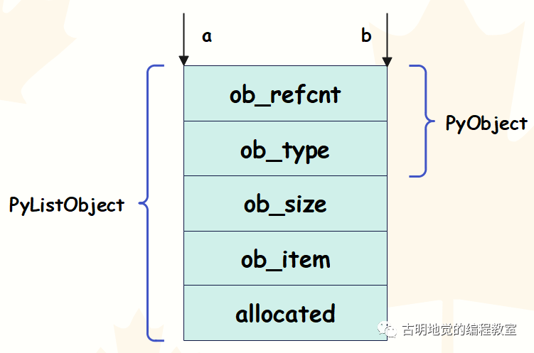
两个变量指向的是同一个列表、或者 PyListObject 结构体实例，所以操作任何一个变量都会影响另一个。只不过变量 a 操作的时候会快一些，而变量 b 操作的时候会做一些额外的工作。
6.6 小结
Cython 将 C 的类型引入到了 Python 中，通过 cdef 声明变量时规定好类型，可以极大地减少 CPU 执行的机器码数量。并且 C 的数据默认是分配在栈上面的，执行的时候会更快。当然啦，Cython 同时理解 C 和 Python，所以 Cython 里面不仅可以使用 C 的类型，还可以使用 Python 的内置类型。
如果使用 Python 的类型静态声明，那么对象仍会分配在堆上，只是返回的指针不再是泛型指针，而是某个具体对象的指针。这样可以避免类型检测等开销，依旧能实现效率的提升。
要是你觉得效率提升的还不够，那么在 Cython 里面还可以将列表替换成 C 数组，将字典替换成 C 结构体，进一步实现效率的提升。但很明显，此时就不像是写 Python 了。当用到 C 数组、结构体等复杂结构时，一般都是为了调用已存在的 C 库函数，比如某个 C 库函数需要接收一个结构体。
所以在不涉及已有的 C 库时，C 的数据结构我们只使用整数、浮点数即可（默认行为）。如果列表、集合、字典之类的复杂数据结构也想办法用 C 的数据结构代替的话，那我觉得还不如直接用 C++ 或者 Rust。
关于 C 数组、结构体相关的内容后面会介绍，而要不要在你的项目中使用它们就看你自己了。总之使用 Python 开发程序，能够轻松地获得开发效率，因为 Python 灵活且动态，但与此同时也要忍受运行时的低效率。
虽然通过引入 Cython，可以轻松地将程序的性能从 60 分提高到 90 分。但 Cython 毕竟是为 Python 服务的，所以想从 90 分再往上提高就非常困难了，代码也会变得更加复杂。如果真的追求极致的性能，那么最佳做法是换一门更有效率的静态语言，因为 Python 程序不管怎么优化，也不可能真的媲美 C++ 和 Rust 之类的静态语言。
7. 静态整型和静态字符串类型
作者：古明地觉
公众号：古明地觉的编程教室
公众号二维码：
7.1 静态整型
Cython 的变量和 Python 的变量是等价的，只不过前者是静态的，后者是动态的，而动态变量可以使用的 API，静态变量都可以使用。只不过对于 int 和 float 来说，C 里面也存在同名的类型，而且会默认使用 C 的类型，这也是我们期望的结果。
而一旦使用的是 C 里面的 int 和 float，比如 cdef int a = 1, cdef float b = 22.33，那么 a 和 b 就不再是指针了，它们代表的就是 C 的整数和浮点数。
那为什么在使用 int 和 float 的时候，要选择 C 的 int 和 float 呢？答案很好理解，因为 Cython 本身就是用来加速计算的，而提到计算，显然避不开整数和浮点数，因此 int 和 float 默认使用 C 里面的类型。
事实上单就 Python 的整数和浮点数来说，在运算时底层也是先转化成 C 的类型，然后再操作，最后将操作完的结果再转回 Python 的类型。而如果默认使用 C 的类型，就少了转换这一步，可以极大地提高效率。但我们要知道 C 的整型是有范围的，我们在使用的时候要确保数值的大小不会溢出，这一点前面已经说过了。但是除此之外，还有一个重要的区别，就是除法和取模，在除法和取模上，C 的整型使用的却不是 C 的标准。
当使用有符号整数计算模的时候，C 和 Python 有着明显不同的行为：比如 -7 % 5，如果是 Python 的话那么结果为 3，C 的话结果为 -2。显然 C 的结果是符合我们正常人思维的，但是为什么 Python 得到的结果这么怪异呢？
事实上不光是 C，Go、Js 也是如此，计算 -7 % 5 的结果都是 -2，但 Python 得到 3，原因就是因为其内部的机制不同。我们知道 a % b，等于 a - (a / b) * b，其中 a / b 表示两者的商。比如 7 % 2，等于 7 - (7 / 2) * 2 = 7 - 3 * 2 = 1，对于正数，显然以上所有语言计算的结果都是一样的。
而负数出现差异的原因就在于：C 在计算 a / b 的时候是截断小数点，而 Python 是向下取整。比如上面的 -7 % 5，等于 -7 - (-7 / 5) * 5。-7 / 5 得到的结果是负的一点多，C 的话直接截断得到 -1，因此结果是 -7 - (-1) * 5 = -2；但 Python 是向下取整，负的一点多变成 -2，因此结果变成了 -7 - (-2) * 5 = 3。
# Python 的 / 默认是得到浮点数
# 整除的话使用 //
# 我们看到得到的是 -2
print(-7 // 5) # -2
因此在除法和取模方面，尤其需要注意。另外即使在 Cython 中，也是一样的。
cdef int a = -7
cdef int b = 5
cdef int c1 = a / b
cdef int c2 = a // b
print(c1) # -2
print(c2) # -2
print(-7 // 5) # -2
以上打印的结果都是 -2，说明 Cython 默认使用 Python 的语义执行除法操作，当然还有取模，即使操作的对象是静态类型的 C 标量。这么做的原因就在于为了在最大程度上和 Python 保持一致，如果想要启动 C 语义都需要显式地进行开启。
然后我们看到 a 和 b 是静态类型的 C 变量，它们也是可以使用 // 的，因为 Cython 的目的就像写 Python 一样。但无论是 c1 还是 c2，打印的结果都是 -2，这很好理解。
首先 c1 和 c2 都是静态的 int，在赋值的时候会将浮点数变成整数，至于是直接截断还是向下取整则是和 Python 保持一致，是按照 Python 的标准来的。而 a / b 得到的是 -1.4，在赋值给 int 类型的 c1 时会向下取整。至于 a // b 就更不用说了，a // b 本身就表示整除，因此 c2 也是 -2。然后我们再来举个浮点数的例子。
cdef float a = -7.
cdef float b = 5.
cdef float c1 = a / b
cdef float c2 = a // b
print(c1) # -1.399999976158142
print(c2) # -2.0
a / b 是 -1.4，但此时的 c1 是浮点数，所以没有必要取整了，小数位会保留；而 a // b虽然得到的也是浮点（只要 a 和 b 中有一个是浮点，那么 a / b 和 a // b 得到的也是浮点），但它依旧具备整除的意义，所以 a // b 得到结果是 -2.0，然后赋值给一个 float 变量，还是 -2.0。
关于 Python 中 / 和 // 在不同操作数之间的差异，我们再举个栗子看一下：
# 3.5, 很好理解
7 / 2 == 3.5
# // 表示整除，因此 3.5 会向下取整, 得到 3
7 // 2 == 3
# -3.5，很好理解
-7 / 2 == -3.5
# // 表示取整，因此 -3.5 会向下取整，得到 -4
-7 // 2 == -4
# 3.5, 依旧没问题
7.0 / 2 == 3.5
# // 两边出现了浮点，结果也是浮点，但 // 又代表整除
# 所以你可以简单认为是先取整(得到 3), 然后变成浮点(得到3.0)
7.0 // 2 == 3.0
# -3.5，依旧很简单
-7.0 / 2 == -3.5
# -3.5 和 -3.9 都会向下取整，然后得到-4
# 但结果是浮点，所以是-4.0
-7.0 // 2 == -7.8 // 2 == -4.0
# 3.5，没问题
-7.0 / -2 == 3.5
# 3.5 向下取整，得到3
-7.0 // -2 == 3
所以 Python 的整除或者说地板除还是比较奇葩的，主要原因就在于其它语言是截断（小数点后面直接不要了），而 Python 是向下取整。如果结果为正数的话，截断和向下取整是等价的，所以此时基本所有语言都是一样的。
而结果为负数的话，那么截断和向下取整就不同了，因为 -3.14 截断得到的是 -3、但向下取整得到的是 -4。因此这一点务必要记住，算是 Python 的一个坑吧。话说如果没记错的话，好像只有 Python 采用了向下取整这种方式，别的语言（至少 C、JS、Go）都是截断的方式。
还有一个问题，那就是整数和浮点数之间可不可以相互赋值呢？先说结论：
- 整数赋值给浮点数是可以的；
- 浮点数赋值给整数不行；
# 7 是一个纯数字，那么它既可以在赋值给 int 类型的变量时表示整数 7
# 也可以在赋值给 float 类型的变量时表示 7.0
cdef int a = 7
cdef float b = 7
# 但如果是下面这种形式，虽然也是可以的，但是会弹出警告
cdef float c = a
# 提示: '=': conversion from 'int' to 'float', possible loss of data
# 因为 a 的值虽然也是 7，但它已经具有相应的类型了
# a 是一个 int，将 int 赋值给 float 会警告
# 而将浮点数赋值给整数则不行
# 这行代码在编译的时候会报错：Cannot assign type 'double' to 'int'
cdef int d = 7.0
前面说了，使用 cdef int、cdef float 声明的变量不再是指向 Python 整数对象和浮点数对象的指针，而是 C 在栈上分配的整数和浮点数。尽管 C 整数没有考虑溢出，但是它在做运算的时候是遵循 Python 的规则（主要是除法），那么可不可以让其强制遵循 C 的规则呢？答案是可以的。
cimport cython
# 使用@cython.cdivision(True)装饰器
@cython.cdivision(True)
def divides(int a, int b):
return a / b
文件名还是叫 cython_test.pyx，我们来测试一下。
import cython_test
print(-7 // 2) # -4
# 函数参数 a 和 b 都是整型，相除得到还是整型
# 如果是 Python 语义，那么在转化的时候会向下取整得到 -4
# 但这里是 C 语义，所以是截断得到 -3
print(cython_test.divides(-7, 2)) # -3
除了装饰器的方式，还可以用下面两种方式来指定。
1）通过上下文管理器的方式
cimport cython
def divides(int a, int b):
with cython.cdivision(True):
return a / b
2）通过注释的方式进行全局声明
# cython: cdivision=True
def divides(int a, int b):
return a / b
通过这三种方式，在 Cython 中可以让 C 整型变量的除法遵循 C 的语义。
然后再选择不使用 cython.cdivision，测试一下看看。
def divides(int a, int b):
return a / b
导入执行：
import cython_test
print(-7 // 2) # -4
print(cython_test.divides(-7, 2)) # -4
a 和 b 都是 C 的 int，相除得到的还是 int，而我们没有使用 cython.cdivision，那么默认使用 Python 的语义。相除之后的 -3.5 会向下取整，所以结果不是 -3，而是 -4。
总结
- 使用 cdef int、cdef float 声明的变量的类型不再是 Python 的 int、float，也不再表示 CPython 的 PyLongObject * 和 PyFloatObject *，而就是 C 的整数和浮点数；
- 虽然是 C 的 int 和 float，但在进行运算的时候是遵循 Python 语义的。因为 Cython 就是为了优化 Python 而生的，因此在各个方面都要和 Python 保持一致；
- 但是也提供了一些方式去禁用掉 Python 的语义，而采用 C 的语义。方式就是上面说的那三种，它们专门针对于整除和取模，因为加减乘都是一样的，只有除和取模会有歧义；
另外 Cython 中还有一个 @cdivision_warnings，使用方式和 @cdivision 完全一样，表示：当取模的时候如果两个操作数中有一个是负数，那么会抛出警告。
cimport cython
@cython.cdivision_warnings(True)
def mod(int a, int b):
return a % b
测试一下：
import cython_test
# -7 - (2 * -4) == 1
print(cython_test.mod(-7, 2))
# 提示我们取整操作在 C 和 Python 中有着不同的语义
# 同理 cython_test.mod(7, -2) 也会警告
"""
RuntimeWarning: division with oppositely signed operands, C and Python semantics differ
return a % b
1
"""
# -7 - (-2 * 3) = -1
print(cython_test.mod(-7, -2)) # -1
# 但是这里的 cython_test.mod(-7, -2) 却没有弹出警告，这是为什么呢？
# 很好理解，我们说只有商是负数的时候才会存在歧义
# 但是 -7 除以 -2 得到的商是 3.5，是个正数
# 而正数的表现形式对于截断和向下取整都是一致的，所以不会警告
# 同理 cython_test.mod(7, 2) 一样不会警告
另外这里的警告同时针对 Python 和 C，即使我们事先使用 @cython.cdivision(True) 装饰、将其改变为 C 的语义，也一样会弹出警告。个人觉得 cdivision_warnings 意义不是很大，了解一下即可。
7.2 引用计数和静态字符串类型
我们知道解释器会自动管理内存，方法是通过引用计数来判断一个对象是否应该被回收，引入计数为 0 则对象回收，否则不回收。但是引用计数无法解决循环引用，于是又引入了垃圾回收来弥补引用计数的缺陷。
而 Cython 也会为我们处理所有的引用计数问题，确保 Python 对象（无论是静态声明、还是动态声明）在引用计数为 0 时被销毁。
很好理解，就是说内存管理的问题 Cython 也会负责的。其实不用想也大概能猜到 Cython 会这么做，毕竟 cdef tuple a = (1, 2, 3) 和 a = (1, 2, 3) 底层都指向 PyTupleObject，只不过后者在操作的时候需要先通过 PyObject * 获取类型然后再转化，而前者则省略了这一步。但它们底层都是 CPython 中的结构体，所以内存都由解释器管理。还是那句话，Cython 代码是要被翻译成 C 代码的，在翻译的时候会自动处理内存的问题，当然这点和 Python 也是一样的。
不过当 Cython 中动态变量和静态变量混合时，那么内存管理就会有微妙的影响。我们举个栗子：
# char * 表示 C 的字符串
# 它对应 Python 的 bytes 对象
# 但下面这行代码是编译不过去的
cdef char *name = "古明地觉".encode("utf-8")
编译的时候会失败，咦，不是说后面可以跟一个 bytes 对象吗？话是没错，但问题是这个 bytes 对象是一个临时对象，什么是临时对象呢？就是创建完了却没有变量指向它，准确的说是没有 Python 类型的变量指向它。
因为这里的 name 使用的是 C 的类型，所以它不会增加这个 bytes 对象的引用计数，因此这个 bytes 对象创建出来之后就会被销毁。编译时会抛出：Storing unsafe C derivative of temporary Python reference，告诉我们创建出来的 Python 对象是临时的。
那么如何解决这一点呢？答案是使用变量保存起来就可以了。
# 这种做法是完全合法的
# 因为这个 bytes 对象是被 Python 类型的变量指向了
cdef bytes name_py = "古明地觉".encode("utf-8")
# 或者动态声明也可以：name_py = "古明地觉".encode("utf-8")
cdef char *name = name_py
所以 char * 比较特殊，它底层是使用一个指针来表示字符串。和整型和浮点型不同，cdef long a = 123，这个 123 直接就是 C 中的 long，可以直接使用。
但将 Python 的 bytes 对象赋值给 char *，在 C 的级别 char * 所引用的数据还是由 CPython 进行管理的，因为 bytes 对象内部有一个缓冲区，负责存储具体的数据，而 char * 会直接指向这个缓冲区。但它无法告诉解释器还有一个变量（非 Python 类型的变量）引用它，这就导致了 bytes 对象的引用计数不会加1，而是创建完之后就会被销毁。而 bytes 对象都销毁了，char * 类型的变量也就拿不到内部的数据了。
所以我们需要提前使用 Python 类型的变量（不管是静态声明还是动态声明）将其保存起来，让其引用计数加 1，这样就不会删除了。
那么下面的代码有没有问题呢？如果有问题该怎么改呢？
word1 = "hello".encode("utf-8")
word2 = "satori".encode("utf-8")
cdef char *word = word1 + word2
会不会出问题呢？显然会有大问题，尽管 word1 和 word2 指向了相应的 bytes 对象，但是 word1 + word2 则是会创建一个新的 bytes 对象，这个新的 bytes 对象可没有变量指向。所以这个新创建的 bytes 对象注定是昙花一现，创建完之后会被立刻销毁，因此无法赋值给 char * 变量。
另外创建 char * 还有一种方式：
cdef char *name = "satori"
此时的 "satori" 会被当成是 C 的字符串来解析，所以这种做法也是可以的，不过很明显，它只能是 ascii 字符串。
但下面这种做法不行：
name_py = "satori"
cdef char *name = name_py
char * 需要接收 C 的字符串，但我们赋值给了一个变量，那么它就是 Python 类型了，而 Python 的 str 和 C 的 char * 无法直接转化，两者没有对应关系。于是报错：TypeError: expected bytes, str found。
而 char * 和 Python 的 bytes 是对应的，每个元素都是 0 到 255 的整数。
cdef bytes var_py = b"abc"
# 等价于 C 的 char *var = {'a', 'b', 'c', '\0'};
# 或者 char *var = {97, 98, 99, '\0'};
cdef char *var = var_py
同理 char * 在赋值给 Python 类型的变量时，也会自动转成 bytes 对象，因为这两者是对应的。
# char *name = {'s', 'a', 't', 'o', 'r', 'i', '\0'}
cdef char *name = "satori"
# 赋值给 Python 类型的变量
name_py = name
print(name) # b'satori'
以上就是 char * 相关的内容，它表示 C 的字符串类型，对应 Python 的 bytes。显然它在操作的时候，速度要比 bytes 对象快很多，如果你希望程序运行的更快一些，那么不妨将 bytes 类型替换成 char * 类型。
因此关于 char * 来总结一下：

当然啦，char * 是 C 的字符串类型，Python 也有自己的字符串类型，也就是 str。
cdef str name_py = "satori"
# 通过字面量的方式，"satori" 会被当成 C 字符串来解析
cdef char *name_c = "satori"
print(name_py) # satori
print(name_c) # b'satori'
比较简单，没什么可说的。然后 Cython 还提供了一个 Py_UCS4，它表示只有一个字符的字符串。
def foo(Py_UCS4 single_char):
print(single_char)
# 合法
foo("你")
# 不合法，长度不为 1
foo("你好")
"""
ValueError: only single character unicode strings
can be converted to Py_UCS4, got length 2
"""
以上代码会编译失败，另外 Py_UCS4 表示一个 UNICODE，所以这个 Py_UCS4 还可以换成 Py_UNICODE，效果是一样的，都表示长度为 1 的 Python 字符串。
以上就是字符串相关的内容，str 表示 Python 的字符串类型，char * 表示 C 的字符串类型，对应 Python 的 bytes 类型。使用 char * 的速度会更快，asyncpg 这个数据库驱动在解析数据时就将 bytes 换成了 char *，速度从而得到了很大的提升。
但我们说，C 的类型虽然速度快，可是不够灵活，它使用起来肯定没有 bytes 对象方便。如果你的程序没有到达性能瓶颈，可以考虑不使用 char *，直接使用 bytes 和 str 就行。通过 cdef bytes 和 cdef str 静态声明，速度依旧可以提升，至于要不要使用 char * 就看你自己的需求了。
以上就是静态字符串类型相关的内容，在使用的时候会有一些意想不到的小陷阱，所以需要注意。
8. 使用 def、cdef、cpdef 创建函数
作者：古明地觉
公众号：古明地觉的编程教室
公众号二维码：
我们前面所学的关于动态变量和静态变量的内容也适用于函数，Python 的函数和 C 的函数都有一些共同的属性：函数名称、接收参数、返回值，但是 Python 中的函数更加的灵活和强大。因为 Python 中一切皆对象，所以函数也是一等公民，可以随意赋值、并具有相应的状态和行为，这种抽象是非常有用的。
一个 Python 函数可以：
- 在运行时动态创建；
- 使用 lambda 关键字匿名创建；
- 在另一个函数（或其它嵌套范围）中定义；
- 从其它函数中返回；
- 作为一个参数传递给其它函数；
- 使用位置参数和关键字参数调用；
- 函数参数可以使用默认值；
C 函数调用开销最小，比 Python 函数快几个数量级。一个 C 函数可以：
- 作为一个参数传递给其它函数，但这样做比 Python 麻烦的多；
- 不能在其它函数内部定义，但这在 Python 中不仅可以、而且还非常常见，毕竟 Python 的装饰器就是通过高阶函数加上闭包实现的；
- 具有不可修改的静态分配名称；
- 只能接受位置参数；
- 函数参数不支持默认值；
正所谓鱼和熊掌不可兼得，Python 的函数调用虽然慢几个数量级（即使没有参数），但是它的灵活性和可扩展性都比 C 强大很多，这是以效率为代价换来的。而 C 的效率虽然高，但是灵活性没有 Python 好，这便是各自的优缺点。
那么说完 Python 函数和 C 函数各自的优缺点之后该说啥啦，对啦，肯定是 Cython 如何将它们组合起来、吸取精华剔除糟粕的啦。
8.1 使用 def 关键字定义 Python 函数
Cython 支持使用 def 关键字定义一个通用的 Python 函数，并且还可以按照我们预期的那样工作。比如：
def rec(n):
if n == 1:
return 1
return n * rec(n - 1)
文件名为 cython_test.pyx，我们来导入它。
import pyximport
pyximport.install(language_level=3)
import cython_test
print(cython_test.rec(10))
"""
3628800
"""
显然这是一个 Python 语法的函数，参数 n 接收一个动态的 Python 变量，但它在 Cython 中也是合法的，并且表现形式是一样的。
我们知道即使是普通的 Python 函数，也可以通过 Cython 进行编译，但是就调用而言，这两者是没有任何区别的。不过执行扩展里面的代码时，已经绕过了解释器解释字节码这一过程；但 Python 代码则不一样，它是需要被解释执行的，因此在运行期间可以随便动态修改内部的属性。我们举个栗子就很清晰了：
Python 版本
# 文件名：a.py
def foo():
return 123
# 另一个文件
from a import foo
print(foo()) # 123
print(foo.__name__) # foo
foo.__name__ = "哈哈"
print(foo.__name__) # 哈哈
Cython 版本
# 文件名：cython_test.pyx
def foo():
return 123
导入测试：
import pyximport
pyximport.install(language_level=3)
from cython_test import foo
print(foo()) # 123
print(foo.__name__) # foo
try:
foo.__name__ = "哈哈"
except AttributeError as e:
print(e)
"""
attribute '__name__' of 'builtin_function_or_method' objects is not writable
"""
我们看到报错了，报错信息告诉我们 builtin_function_or_method 的属性 __name__ 不可写。Python 的函数是一个动态类型函数，所以它可以修改自身的一些属性。
但是 Cython 代码在编译之后，函数变成了 builtin_function_or_method，绕过了解释这一步，因为不能对它自身的属性进行修改。事实上，Python 的内置函数也是不能修改的。
try:
getattr.__name__ = "xxx"
except Exception as e:
print(e)
"""
attribute '__name__' of 'builtin_function_or_method' objects is not writable
"""
内置函数和扩展模块里的函数都是直接指向了底层 C 一级的结构，因此它们的属性是不能够被修改的。
Python 的动态性是解释器将字节码翻译成 C 代码的时候动态赋予的，而 Cython 代码在被编译成扩展模块时，内部已经是机器码了，所以解释器无法再对其动手脚，或者说失去了相应的动态性，但换来的是速度的提升。但很明显，当前速度的提升是不大的，因为我们没有做类型标注，也就是没有基于类型进行优化。
回到上面用递归计算阶乘的例子上来，显然 rec 函数里面的 n 是一个动态变量，如果想要加快速度，就要使用静态变量，也就是规定好类型。
def rec(int n):
if n == 1:
return 1
return n * rec(n - 1)
此时当我们传递的时候，会将值转成 C 中的 int，如果无法转换则会抛出异常。
另外在 Cython 中定义任何函数，我们都可以将动态类型的参数和静态类型的参数混合使用。Cython 还允许静态参数具有默认值，并且可以按照位置参数或者关键字参数的方式传递。
# 这样的话就可以不传参了，默认 n 是 10
def rec(int n=10):
if n == 1:
return 1
return n * rec(n - 1)
这么做虽然可以提升效率，但提升幅度有限。因为这里的 rec 还是一个 Python 函数，它的返回值也是一个 Python 的整数，而不是静态的 C int。
因此在计算 n * rec(n - 1) 的时候，Cython 必须生成大量代码，将返回的 Python 整型转成 C int，然后乘上静态类型的变量 n。最后再将结果得到的 C int 打包成 Python 的整型，所以整个过程还是存在可以优化的地方。
那么如何才能提升性能呢？显然可以不使用递归、而是使用循环的方式，当然这个我们不谈，因为这个 Cython 没啥关系。我们想做的是告诉 Cython："函数返回的是一个 C int，你在计算的时候不要有 Python 的整型参与。"
那么要如何完成呢？往下看。
8.2 使用 cdef 关键字定义 C 函数
cdef 关键字除了创建变量之外，还可以创建具有 C 语义的函数。cdef 定义的函数，其参数和返回值通常都是静态类型的，它们可以处理 C 指针、结构体、以及其它一些无法自动转换为 Python 类型的 C 类型。
所以把 cdef 定义的函数看成是长得像 Python 函数的 C 函数即可。
cdef int rec(int n):
if n == 1:
return 1
return n * rec(n - 1)
我们之前的例子就可以改写成上面这种形式，我们看到结构非常相似，主要区别就是指定了返回值的类型。
因为指定了返回值的类型，此时的函数是没有任何 Python 对象参与的，因此不需要从 Python 类型转化成 C 类型。该函数和纯 C 函数一样有效，调用函数的开销最小。
所以在使用 cdef 定义函数时，格式为：cdef 类型 函数名。并且 cdef 函数返回的类型可以是任何的静态类型（如：指针、结构体、C数组、静态 Python 类型），如果不指定类型，也就是 cdef 函数名 的格式，那么返回值类型默认为 object。
另外，即便是 cdef 定义的函数，我们依旧可以创建 Python 对象和动态变量，或者接收它们作为参数也是可以的。
# 合法，返回的是一个 list 对象
cdef list f1():
return []
# 等价于 cdef object f2()
# 而 Python 中任何对象都是 object 类型
cdef f2():
pass
# 虽然要求返回列表
# 但是返回 None 也是可以的（None 特殊，后面会说）
cdef list f3():
pass
# 同样道理
cdef list f4():
return None
# 这里是会报错的
# TypeError: Expected list, got tuple
cdef list f5():
return 1, 2, 3
使用 cdef 定义的函数，可以被其它的函数（cdef 和 def 都行）调用，但是 Cython 不允许从外部的 Python 代码来调用 cdef 函数，我们之前使用 cdef 定义的变量也是如此。因为 cdef 定义的函数相当于是 C 函数，可以返回任意的 C 类型，而某些 C 类型在 Python 中无法与之对应。
所以我们通常会定义一个 Python 函数，然后让 Python 函数来调用 cdef 定义的函数，所以此时的 Python 函数就类似于一个包装器，用于向外界提供一个访问的接口。
cdef int _rec(int n):
if n == 1:
return 1
return n * rec(n - 1)
def rec(n):
return _rec(n)
def 函数效率不高，但它可以被 Python 代码访问；cdef 函数效率虽然高，但是无法被 Python 代码访问。于是我们可以定义一个 cdef 函数，用来执行具体的代码逻辑，然后再定义一个 def 函数，负责调用 C 函数，也就是给外部的 Python 代码提供一个接口。
通过 cdef 和 def 结合，从而实现最优的效果。因为计算逻辑都发生在 C 函数中，Python 函数只是提供一个包装而已，不负责实际代码的执行。这样就既保证了效率，又保证了外部的 Python 代码可以访问。
可能有人觉得，调用一个 Python 函数的开销会比调用 C 函数要大吧。这里的开销不包括函数体内部代码的执行时间，而是指调用函数本身的开销，也就是从调用函数、到开始执行函数内部代码之间的这段开销。很明显，调用 def 函数的开销是要比 cdef 函数大的。
可能有小伙伴觉得能不能把函数调用本身的开销也给优化一下，答案是不能，因为 cdef 定义的函数无法被外部的 Python 访问。如果你希望 Cython 里面的函数能够被外部的 Python 调用，要么将逻辑使用 def 函数实现，要么交给 cdef 函数实现、然后再定义一个 def 函数作为包装器。
总之我们可以对函数体内部的代码逻辑进行优化，但函数调用本身的开销是无法避免的。正如之前说的，Python 程序再怎么优化，在极限上也不可能和静态语言相媲美。而且 Cython 是为 Python 服务的，在函数调用时，Python 数据要转成 C 数据、在函数返回时，C 数据还要再转成 Python 数据，这些也是有开销的。
因此即便引入了 Cython，在极限上，Python 还是无法与 C++、Rust 之类的静态语言相抗衡。
当然啦，相比函数调用本身和返回时的数据类型转换，这些开销实际上微不足道，重点是函数体内部代码的执行逻辑，它们才是需要优化的地方。如果函数体内部的代码已经优化到极致了，还达不到内心的预期，甚至连函数调用本身的开销都需要成为优化的地方（比如一个 Python 函数需要调用一百万次），那最好的方式就是换一门静态语言，比如 Rust。
8.3 使用 cpdef 结合 def、cdef
我们在 Cython 中定义一个函数可以使用 def 和 cdef，但还有第三种定义函数的方式，也就是使用 cpdef 关键字声明。cpdef 是 def 和 cdef 的混合体，结合了这两种函数的特性，并解决了局限性。
我们之前使用 cdef 定义了一个函数 _rec，但是它无法被外部访问，因此又定义了一个 Python 函数 rec 供外部调用，相当于提供了一个接口。所以我们需要定义两个函数，一个是用来执行逻辑的（C 版本），另一个是让外部访问的（Python版本），一般这种函数我们称之为 Python 包装器。很形象，C 版本不能被外部访问，因此定义一个 Python 函数将其包起来。
但是 cpdef 定义的函数会同时具备这两种身份，也就是说，一个 cpdef 定义的函数会自动为我们提供上面那两种函数的功能，怎么理解呢？从 Cython 中调用函数时，会调用 C 的版本，在外部的 Python 中导入并访问时，会调用包装器。这样的话，cpdef 函数就可以将 cdef 函数的性能和 def 函数的可访问性结合起来了。
因此上面那个例子，我们就可以改写成如下：
cpdef int rec(int n):
if n == 1:
return 1
return n * rec(n - 1)
如果是之前的方式，则需要两个函数，这两个函数还不能重名，但是使用 cpdef 就不需要关心了，使用起来会更方便。
需要注意，cpdef 和 cdef 一样，支持定义函数的时候指定返回值类型，从而实现基于类型的优化（def 函数不可以指定返回值类型，但参数类型可以指定）。但 cpdef 函数毕竟是可以被外部的 Python 访问的，因此在指定返回值类型的时候就会受到限制，cpdef 函数指定的返回值类型要和 Python 的某个类型能够对应。举个例子：
cdef int* test1():
pass
cpdef int* test2():
pass
这段代码编译的时候会报错，原因在于 test2 函数的返回值类型声明有问题。首先 test1 是一个 cdef 函数，它的返回值类型不受限制，因为外部的 Python 代码无法访问。但 test2 不行，它支持外部的 Python 代码访问，所以返回值类型要能和 Python 的某个类型相对应，但很明显，Python 里面没有哪个类型可以和 C 的指针相对应，于是编译错误。
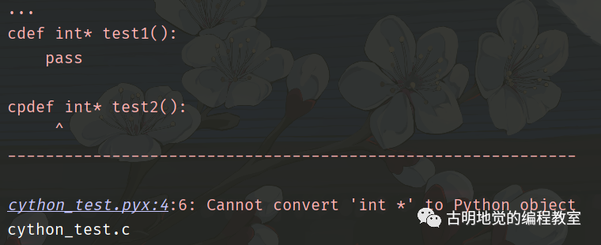
所以使用 cpdef 定义函数的时候，返回值类型有一些限制，当然还有参数类型。因为 cpdef 函数要同时兼容 Python 和 C，这意味着它的参数和返回值类型必须同时兼容 Python 类型和 C 类型。但我们知道，并非所有的 C 类型都可以用 Python 类型表示，比如：C 指针、C 数组等等，所以它们不可以作为 cpdef 函数的参数类型和返回值类型。
除此之外，cpdef 函数还有一个局限性，就是它的内部不可以出现闭包。
# 不指定返回值类型，默认为 object
cpdef func():
lam = lambda x: x
显然上述逻辑在 def 定义的函数中再正常不过了，但如果是 cpdef 的话，那么编译的时候会报错。

报错信息很直观，在 cpdef 函数内部定义闭包还不支持，说白了就是我们不可以在 cpdef 函数里面再定义函数，包括匿名函数。所以如果需要使用闭包，那么还是建议通过 cdef 函数加上 def 函数作为包装器的方式，def 和 cdef 都是支持闭包的。另外，使用闭包时，内层函数必须是 Python 的 def 函数或者匿名函数。
cdef deco():
cdef inner():
pass
上面的代码会报错，虽然 cdef 支持闭包，但是内层函数必须是 def 函数或者匿名函数。我们不能在一个函数里面去定义一个 cdef 函数，也就是说，cdef 函数在定义的时候，位置是有讲究的。

报错信息也很明显，cdef 定义的 C 函数不可以出现在当前的位置，cpdef 也是同理。当然不光是函数，像 if, for, while 等语句的内部也不可以。
if 2 > 1:
cdef f1():
pass
while 1:
cdef f2():
pass
for i in range(10):
cdef f3():
pass
上面三个 cdef 函数的出现位置都是不允许的，在编译的时候就会报错：cdef statement not allowed here，cpdef 函数也是同理。
所以 cdef 定义的 C 函数应该出现在最外层，或者说没有缩进的地方。如果有缩进，那么应该是在类里面，作为类的成员函数，关于类我们后面会说。
总结一下：
1）cdef 和 def 一样，不会受到闭包的限制，但 def 起不到加速效果，cdef 无法被外界访问；
2）cpdef 是两者的结合体，既能享受加速带来的收益，又能自动提供包装器给外界；
3）但 cpdef 在闭包语法上会受到限制，内部无法定义函数，因此最完美的做法是使用 cdef 定义函数之后再手动提供包装器。但是当不涉及到闭包的时候，还是推荐使用 cpdef 定义的；
8.4 内联函数
在 C 和 C++ 中，定义函数时还可以使用一个可选的关键字 inline，这个 inline 是做什么的呢？我们知道 C 和 C++ 的函数调用也是有开销的（即使很微小），因为要涉及到跳转、压栈、创建栈帧等一般性操作。而定义函数时使用 inline 关键字，那么代码会被放在符号表中，在使用时直接进行替换（像宏一样展开），这样就没有了调用的开销，提高效率。
Cython 同样支持 inline（但在 Cython 中不是关键字），使用时只需要将 inline 放在 cdef 或者 cpdef 后面即可，但是不能放在 def 后面。

当调用 get_square 函数的时候，会将函数内部的代码直接贴过来，此时不涉及函数的调用，从而减少开销。
inline 如果使用得当，可以提高性能，特别是在深度嵌套循环中调用的小型内联函数。因为它们会被多次调用，这个时候通过 inline 可以省去函数调用的开销。
可能有人觉得，既然 inline 可以省去函数调用时的开销，并且使用上还能像函数一样，那能不能每次声明函数的时候都加上 inline 呢？显然这种做法不可取，因为内联函数是以代码膨胀为代价的，你在任何地方调用内联函数都会把函数内的代码拷贝一份，这样会消耗很多的内存空间。如果函数体内的代码执行时间比较长，那么节省下来的函数调用的开销，与之相比意义不是很大。
因为函数调用本身的开销非常微小，所以只有当函数体逻辑简单、并且还要在深度嵌套循环中反复调用的情况下，才会使用内联函数。
另外 inline 只是一个对编译器的建议，至于最后到底是否内联，还要看编译器的意思。如果编译器认为函数不复杂、以及不涉及递归，可以在调用点展开，就会真正内联。所以并不是使用了 inline 就会内联，使用 inline 只是给编译器一个建议。
以上就是如何在 Cython 中定义函数，总共提供了三种方式，都各有优缺点，需要在工作中搭配结合使用。
9. Cython 的异常处理
作者：古明地觉
公众号：古明地觉的编程教室
公众号二维码：
def 定义的函数在 C 的级别总是会返回一个 PyObject *，这个是恒定的，不会改变，因为 Python 的变量本质上就是一个 PyObject *。因此正常调用一个函数时，它的返回值一定指向了一个合法的 Python 对象。
但如果报错了，在 C 的层面返回的就不再是 PyObject *，而是一个 NULL。解释器在返回 NULL 之前，会将异常信息写入到 stderr（标准错误输出）里面。对于 Python 使用者而言，表现就是：先输出一堆错误信息，然后解释器中止运行。
cpdef test():
lst = [0]
# 显然会索引越界
lst[3]
return None
文件名仍叫 cython_test.pyx，我们测试一下。
import pyximport
pyximport.install(language_level=3)
import cython_test
print(cython_test.test())
"""
Traceback (most recent call last):
File "...", line 5, in <module>
print(cython_test.test())
File "cython_test.pyx", line 1, in cython_test.test
cpdef test():
File "cython_test.pyx", line 4, in cython_test.test
lst[3]
IndexError: list index out of range
"""
如果程序正常执行完毕，返回的状态码为 0；执行的时候报错了，返回的状态码为 1；如果返回的状态码很古怪，是一个乱七八糟的数字，那么说明解释器内部出现了异常，这种情况基本只有在写 C 扩展的时候才会发生。
总之，解释器抛出异常的本质就是，发现程序出错了，然后将错误信息写入到标准错误输出当中，然后 return NULL 并停止运行。
所以异常输出在 Cython 中的表现也是一样的，它允许 Cython 正确地从函数中抛出异常。但这有一个前提，那就是函数的返回值必须是 Python 类型，显然对于 def 函数是没有问题的。而 cdef 和 cpdef 可能会返回一个非 Python 类型，那么此时则需要一些其它的异常提示机制。
我们举个例子：
cpdef long test():
lst = [0]
# 显然会索引越界
lst[3]
return 123
此时 test1 的返回值类型是 C 的类型，并且里面的代码会报错，那么 Python 在调用的时候会不会将异常抛出来呢？
import pyximport
pyximport.install(language_level=3)
import cython_test
print(cython_test.test())
"""
IndexError: list index out of range
Exception ignored in: 'cython_test.test'
Traceback (most recent call last):
File "...", line 5, in <module>
print(cython_test.test())
IndexError: list index out of range
0
"""
print("我会执行吗？")
"""
我会执行吗？
"""
我们看到了神奇的一幕，程序报错了，但是没有停止运行，而是将异常忽略掉了。并且当函数内部出异常的时候，自动返回零值。
CPython 在判断是否出现异常的时候，首先会根据返回值来判断。如果返回值的类型是 PyObject *，那么正常执行一定会返回一个非 NULL 指针，因为要指向一个合法的 Python 对象；可要是出现异常，那么就会返回一个空指针 NULL，代表函数执行失败，应该将异常抛出来。
因此在调用一个返回值为 Python 类型的函数时，根据返回值是否为 NULL 可以很轻松地判断调用是否出异常。所以当异常发生在 def 函数、或者返回值为 Python 类型的 cdef、cpdef 函数中，那么表现和 Python 代码是一致的。
但如果返回值是一个 C 的类型（针对 cdef 和 cpdef 函数），比如这里返回的是 long 类型，那么执行出错时会设置异常、并返回 0，也就是对应类型的零值。但问题是解释器不知道此时的 0，是因为调用出错返回的 0，还是正常执行完毕后返回的 0，因为返回值也可能是 0。
所以当返回值是 C 的类型时，如果函数调用出错，那么异常没有办法传递给它的调用方。换句话说就是异常没有办法向上抛，最终的结果就是将异常输出到 stderr 当中，但是却无法停止运行。
而为了正确传递异常，Cython 提供了一个 except 字句，允许 cdef、cpdef 函数和调用方通信，如果函数在执行过程中发生了 Python 异常，要将它抛出来。
cpdef long test() except -1:
lst = [0]
# 显然会索引越界
lst[3]
return 123
此时再调用的话，会有什么结果呢？异常能正常抛出来吗？
import pyximport
pyximport.install(language_level=3)
import cython_test
print(cython_test.test())
print("我会执行吗？")
"""
Traceback (most recent call last):
File "...", line 5, in <module>
print(cython_test.test())
File "cython_test.pyx", line 1, in cython_test.test
cpdef long test() except -1:
File "cython_test.pyx", line 4, in cython_test.test
lst[3]
IndexError: list index out of range
"""
我们看到此时异常就正确地传递给调用方了，当出现异常时，将异常信息打印出来，然后中止运行。
所以 except -1 相当于充当异常发生时的哨兵，当然啦不仅是 -1，任何整数都是可以的。但是还有一个问题，如果返回值恰好也是 -1 怎么办？我们举个例子：
cpdef int test(int i, int j) except -1:
return i // j
这里需要写成 i // j，不能写 i / j，因为返回值是 int 类型，而 i / j 得到的是浮点数。虽然在变量赋值的时候，表达式计算得到的浮点数会自动向下取整，但此处不行，我们必须显式地返回一个整数。
然后测试一下：
import pyximport
pyximport.install(language_level=3)
import cython_test
try:
cython_test.test(3, 0)
except ZeroDivisionError as e:
print(e)
"""
integer division or modulo by zero
"""
print(ext.test(3, -3))
"""
Traceback (most recent call last):
File "...", line 14, in <module>
print(cython_test.test(3, -3))
SystemError: <built-in function test> returned NULL without setting an error
"""
神奇的地方出现了，虽然异常依旧能够正常抛出来，但是当返回值为 -1 时居然又抛出了一个 SystemError。
如果你使用 C 编写过扩展模块的话，应该会遇见过这个问题。前面说了，Python 的函数一定会返回一个 PyObject *，但如果函数执行出错了，那么在 C 一级就会返回一个 NULL，并且将发生的异常设置进去。
如果返回了 NULL 但是没有设置异常的话，就会抛出上面的那个错误。因为解释器发现函数返回了 NULL，所以知道出现异常了，于是会将回溯栈里设置好的异常信息打印出来，告诉开发者出现异常的具体原因，到底是哪部分代码出错了。但问题是解释器发现异常回溯栈是空的，所以会抛出一个 SystemError，表示函数返回了 NULL，但却没有设置异常。
而出现上述结果的原因就是我们这里的 except -1，它允许 -1 充当异常发生时的哨兵。但如果函数正常执行、只是返回的恰好是 -1，那么也表示发生异常了，于是底层会返回NULL。然而实际上异常并没有发生，所以没有设置异常，而解释器又发现返回值为 NULL，所以提示我们 returned NULL without setting an error。
一个比较笨的解决办法是将 except -1 换成 except -2，显然这是治标不治本，因为当返回值为 -2 的时候还是可能会出现上面的结果。所以能不能有这样一种机制，就是当返回值恰好和哨兵相等时，让解释器去看一眼异常回溯栈。如果回溯栈为空，证明没有执行出错，而是返回值和哨兵恰好相等，那么此时就不要返回 NULL 了，因为没有报错，所以应该将返回值正常返回。
cpdef int test(int i, int j) except ? -1:
return i // j
我们在 except 后面加上了一个问号，来看看执行结果。
import pyximport
pyximport.install(language_level=3)
import cython_test
print(cython_test.test(3, -3)) # -1
此时就没有问题了。
总结一下，except ? -1 只是单纯为了在发生异常的时候能够往上抛，这里可以是 -1、也可以是其它的什么值。而函数如果也返回了相同的值，那么就会检测异常回溯栈，如果为空（表示没有报错）就会正常返回。而触发检测的条件就是中间的那个 ?，如果不指定 ?，那么当函数返回了和哨兵相同的值，也是会报错的，因此这个时候你应该确保函数不可能返回 except 后面指定的值（哨兵）。
但很明显，这样的逻辑不具备可靠性，还是在 except 后面加上 ? 要更保险一些。
事实上，在 CPython 源码内部也有大量相似的判断逻辑。
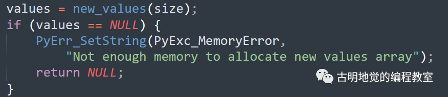
调用 new_values 如果成功，那么 values 一定指向一个合法的 Python 对象，但如果调用失败，values 则为 NULL。所以下一步就要判断 values 是不是等于 NULL，如果等于 NULL，证明执行失败了，应该设置异常、然后返回 NULL。而解释器发现为 NULL 了，证明执行出现异常了，于是会将回溯栈里的异常信息打印出来，然后中止运行。
所以当返回值是 PyObject * 时，根据返回值是否为 NULL 即可判断执行是否出现了异常。但如果返回值不是 PyObject *、或者说不是 Python 类型呢？比如是 C 的整型。

我们看到 CPython 内部也是使用 -1 充当的哨兵，如果返回值不是 -1，证明正常执行。如果返回值是 -1，则说明有可能出异常了，此时需要调用 PyErr_Occurred 检测回溯栈是否为空，如果不为空，证明确实出现异常了；如果为空则证明没有出现异常，只是返回值恰好是 -1。
另外哨兵的值要和返回值类型相匹配，返回值类型为整型，那么哨兵可以是任意的整数；返回值类型是浮点型，那么哨兵可以是任意的浮点数。如果我们将 -1 改成 -1.0 的话：

编译的时候报错了，因为哨兵的值的类型和返回值类型不兼容。
所以工作中建议加上 except ? val 作为异常传递的哨兵，val 的值任意，只要和返回值类型匹配即可。但只有当返回值是 C 的类型时，才需要这么做。如果返回值是 Python 类型，那么使用 except 子句会报错，比如下面的代码就是不合法的。
cpdef tuple test(long i, long j) except ? ():
pass
我们的本意是使用空元组作为异常传递的哨兵，但当返回值为 Python 类型时，异常是可以正常抛的，它的表现和 Python 是一致的。只有当返回值是 C 的类型，才需要哨兵，所以上面的代码属于画蛇添足，反而会编译错误。
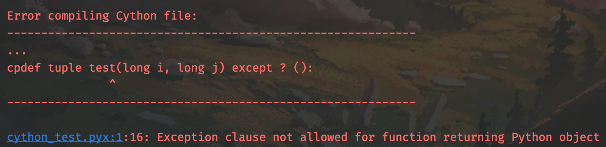
报错信息很明显，当返回值是 Python 类型时，不允许使用 except 子句。
以上就是 Cython 中的异常处理，准确来说是异常在 Cython 中的一个坑，因为当返回值是 C 的类型时，异常无法正常抛给调用方，需要使用哨兵。至于异常处理本身（try except），在 Cython 和 Python 中的表现都是一致的。
10. Cython 中的类型转换
作者：古明地觉
公众号：古明地觉的编程教室
公众号二维码：
C 和 Python 在数据类型上都有各自的成熟特性，比如支持数据在不同类型之间进行转换。
# Py_ssize_t 是 ssize_t 的别名
cdef Py_ssize_t num = 123
# 声明一个指针类型的变量
cdef Py_ssize_t *p = &num
# 转成浮点型指针
cdef double *p2 = <double *> p
指针类型可以任意转换，这里我们将整型指针转成了浮点型指针，显然这是合法的。在 C 里面类型转换使用的是小括号，这里使用的是尖括号。
由于指针类型的转换不受限制，所以我们可以手动实现内置函数 id 的功能。

我们来测试一下：
import pyximport
pyximport.install(language_level=3)
import cython_test
num = 123
print(cython_test.my_id(num))
print(id(num))
"""
140706631063024
140706631063024
"""
s = "古明地觉"
print(cython_test.my_id(s))
print(id(s))
"""
2125601466576
2125601466576
"""
print(cython_test.my_id(object))
print(id(object))
"""
140706630839120
140706630839120
"""
我们实现的函数 my_id 和内置函数 id 打印的结果是一样的，所以 Python 虽然一切皆对象，但我们操作的都是指向对象的指针，也就是通过指针来间接操作对象。所以 id(obj) 表示的不是获取 obj 的地址，而是 obj 指向对象的地址，如果站在 C 的角度，那么就是 obj 存储的值本身。
所以 id 函数所做的事情就是把变量存储的地址转成 10 进制整数返回，我们如果想实现 id 函数的功能，只需要将变量（PyObject *）转成 void *，因为不同类型的指针可以相互转换，虽然转换之后指针的含义变了，但存储的地址不变。然后再将 void * 转成 Py_ssize_t，即可拿到存储的地址。
可能有人好奇，为什么先要转成 void * 之后，才能转成整型呢？直接转成整型不行吗？我们来测试一下，这两者的区别。
def my_id1(obj):
# 先转成 void *，再转成 Py_ssize_t
return <Py_ssize_t> <void *> obj
def my_id2(obj):
# 直接转成 Py_ssize_t
return <Py_ssize_t> obj
num = 666
print(my_id1(num))
print(my_id2(num))
"""
1617542740432
666
"""
区别很明显了，因为 Python 的变量是一个指向值的指针。如果转换之后的类型是指针类型，那么转换的是变量；如果转换之后的类型不是指针类型，那么转换的是对象。
所以 my_id2 返回的是 666，由于转换之后的类型不是指针类型，因此参与转换的是对象，相当于将 Python 整数转成了静态的 C 整数。并且 num 必须指向一个整数，否则它无法和 C 的 Py_ssize_t 类型相对应。
而对于 my_id1 函数，转换之后的类型是指针类型，所以参与转换的是变量、即 PyObject *。任何指针都可以和 void * 转换，因此先将变量转成 void *，然后再由 void * 转成整型，而此时打印的是对象的地址。
另外再补充一点，我们前面说指针的转换不受限制，针对的是纯 C 代码。但现在不是纯 C，而是 Cython，所以指针转换还是有限制的，这个限制主要针对 PyObject *，它只能转成 void *。
<int *> obj
像上面的代码是有问题的，Python 类型的变量在指针转换的时候，只能转成 void *。当然啦，char * 是个例外。
name = b"satori"
print(<char *> name) # b'satori'
char * 表示 C 的字符串类型，上述代码做的事情就是将 Python 字节串转成 C 字符串，当然打印的时候还是以 Python 字节串的形式打印的。所以 char * 算是一个例外吧，在 Cython 里面是把 char * 整体作为一个基础类型来看的，并且在转换的时候 name 必须指向一个 bytes 对象，否则会转换失败，因为 char * 和 Python 里面的 bytes 是相对应的。
但是我们发现，无论是指针类型、还是常规类型，这里都是 C 的类型。那么可不可以转成 Python 类型呢？答案是可以的，来看个例子。
def func(a):
cdef list lst1 = list(a)
print(lst1)
print(type(lst1))
cdef list lst2 = <list> a
print(lst2)
print(type(lst2))
func([1, 2, 3])
"""
[1, 2, 3]
<class 'list'>
[1, 2, 3]
<class 'list'>
"""
func((1, 2, 3))
"""
[1, 2, 3]
<class 'list'>
(1, 2, 3)
<class 'tuple'>
"""
打印的结果很明显，如果是 list(a)，那么会根据 a 指向的对象创建一个新的列表，所以 lst1 一定指向一个列表。但 <list> a 则是将变量 a、也就是 PyObject * 拷贝一份，然后转成 PyListObject *，相当于将动态变量转成静态变量。
第一次调用 func，参数 a 指向了一个列表，但它是泛型指针。于是通过 <list> a 将它转成静态的，在操作的时候可以避免一些额外开销，当然不管是动态还是静态，指向的都是列表。另外这个例子有点刻意了，其实直接 cdef list lst2 = a 就可以了，因为做好了类型标注，那么会自动转换。
然后第二次调用 func，参数 a 指向了一个元组，显然对于 list(a) 是没有影响的，因为它会创建新列表。但 <list> a 就有问题了，因为 a 实际指向的是元组，应该是 <tuple> a，所以转换失败。在早期的 Cython 中会引发一个SystemError，但目前不会了，如果转换失败还保留原来的类型。
可如果我们希望在无法转换的时候报错，这个时候要怎么做呢？
def func(a):
# 将 <list> 换成 <list?> 即可
cdef list lst2 = <list?> a
print(lst2)
print(type(lst2))
此时传递其它对象就会报错了，比如我们传递了一个元组，会报出 TypeError: Expected list, got tuple。其实，如果类型不对希望报错的话，还有一个最简单的做法， 直接 cdef list lst2 = a 即可。
尖括号里面的类型可以任意，包括 C 类型以及 Python 内置类型。但说实话，使用尖括号做类型转换的场景不是很多，我们通过 cdef 指定类型时，会自动转换，但转化失败则会报错（相当于 <...?>）。当然后续，我们也会给出使用尖括号做类型转换的一些最佳实践。
11. 在 Cython 中声明结构体、共同体、枚举
作者：古明地觉
公众号：古明地觉的编程教室
公众号二维码：
C 语言里面存在结构体、共同体、枚举，而这些在 Cython 里面也是支持的，只不过声明的方式不太一样，下面来看一看。
11.1 结构体
在 C 里面定义一个结构体，一般有两种方式。
#include <stdio.h>
// 直接定义，此时 struct Girl 整体是一个类型
struct Girl {
char *name;
int age;
};
// 使用 typedef 起一个别名
// 此时 Boy 是一个类型
typedef struct {
char *name;
int age;
} Boy;
int main() {
// 声明一个 struct Girl 类型的实例
struct Girl g;
g.name = "mercy";
g.age = 37;
// 声明一个 Body 类型的实例
Boy b;
b.name = "hanzo";
b.age = 38;
printf("name = %s, age = %d\n", g.name, g.age);
printf("name = %s, age = %d\n", b.name, b.age);
/*
name = mercy, age = 37
name = hanzo, age = 38
*/
}
以上是 C 的结构体，在 Cython 里面要如何定义呢？
# 相当于 C 的 struct Girl{...};
cdef struct Girl:
char *name
int age
# 相当于 C 的 typedef struct {...} Boy;
ctypedef struct Boy:
char *name
int age
# 创建结构体实例，无论结构体使用哪一种方式定义
# 在创建实例的时候，格式都是一样的
cdef Girl g1
cdef Boy b1
# 创建的时候也可以直接赋值，支持位置参数和关键字参数
# 但是使用关键字参数要注意顺序
# 结构体字段出现的顺序，就是参数的顺序
cdef Girl g2 = Girl("mercy", 37)
cdef Boy b2 = Boy("hanzo", age=38)
# 打印的时候会以字典的形式打印
print(g2)
print(b2)
"""
{'name': b'mercy', 'age': 37}
{'name': b'hanzo', 'age': 38}
"""
# 当然啦，也可以先声明，然后单独赋值
# 我们上面创建了 g1 和 b1，下面赋值
g1.name, g1.age = "mercy", 37
b1.name, b1.age = "hanzo", 38
print(g1)
print(b1)
"""
{'name': b'mercy', 'age': 37}
{'name': b'hanzo', 'age': 38}
"""
# 通过 Python 的字典赋值
# 显然它涉及数据转换，会有额外开销
# 不建议使用此方式
cdef Girl g3 = {"name": "mercy", "age": 37}
cdef Boy b3 = {"name": "hanzo", "age": 38}
print(g3)
print(b3)
"""
{'name': b'mercy', 'age': 37}
{'name': b'hanzo', 'age': 38}
"""
在 C 里面还存在结构体的嵌套：
struct Girl {
struct {
char *name;
int age;
} Person;
int length;
};
Cython 也是允许结构体嵌套的，但是定义必须要单独拿出来，什么意思呢？看个例子就明白了。
cdef struct Person:
char *name
int age
# Person 的定义必须要单独拿出来定义
# 不可以嵌套定义
cdef struct Girl:
Person person
int length
cdef Girl g = Girl(person=Person("mercy", 37), length=167)
print(g)
"""
{'person': {'name': b'mercy', 'age': 37}, 'length': 167}
"""
另外，当定义结构体的时候，字段的类型必须都是 C 的类型。
11.2 共同体
共同体的声明在 C 和 Cython 里面都和结构体类似，我们来看一下。
cdef union U1:
short n1
int n2
ctypedef union U2:
short n1
int n2
cdef U1 u1
u1.n2 = 0X1234_4321
print(u1.n1 == 0X4321) # True
cdef U2 u2
u2.n2 = 0X4321_1234
print(u2.n1 == 0X1234) # True
使用方法和结构体类似，关于共同体的具体知识这里就不多说了，可以查询 C 语言共同体相关的内容。总之它的目的是为了节省内存，一个结构体实例所占的内存，等于内部所有字段所占内存之和（当然还要考虑内存对齐）；而一个共同体实例所占的内存，等于内部占用内存最大的字段。
cdef struct S:
short field1 # 2 字节
int field2 # 4 字节
ssize_t field3 # 8 字节
cdef union U:
short field1
int field2
ssize_t field3
cdef S s
cdef U u
# 等于所有字段所占内存之和
# 2 + 4 + 8 = 14，但由于存在内存对齐
# 所以是 16
print(sizeof(s)) # 16
# 最长字段所占的内存
# 因此是 8
print(sizeof(u)) # 8
因此共同体明显要省内存，但是修改某一个字段，会影响其它字段，因为字段之间共用一组内存。而结构体则不会，字段之间互不影响，因为它们使用的是不同的内存。
11.3 枚举
定义枚举也很简单，我们可以在多行中定义，也可以在单行中定义然后用逗号隔开。
# 相当于 C 的 enum COLOR1 {};
cdef enum COLOR1:
RED = 1
YELLOW = 3
GREEN = 5
# 相当于 C 的 typedef enum {} COLOR2;
ctypedef enum COLOR2:
PURPLE, BROWN
# 在 C 里面声明一个枚举变量
# 可以是 enum COLOR1，整体是一个类型
# 也可以直接使用 COLOR2
# 但在 Cython 里面声明方式是一样的
# 一律是 cdef COLOR1、cdef COLOR2
cdef COLOR1 c1 = YELLOW
cdef COLOR2 c2 = BROWN
print(YELLOW)
print(BROWN)
"""
3
1
"""
枚举比较简单。
以上就是结构体、共同体和枚举在 Cython 中的使用方式，但说实话，如果只是写 Cython，那么我们很少会用到这些 C 级结构。因为像结构体、共同体、枚举这些结构，一般都是在和外部的 C 代码交互的时候才会用到，比如我们要调用一个现有的 C 库函数，但这个函数接收一个结构体，那么这个时候我们会构造一个结构体实例然后传过去。
11.4 使用 ctypedef 给类型起别名
在 C 语言中有一个 typedef 关键字，可以用来给类型起别名，就像我们上面演示的那样。如果是使用 struct S {}; 这种方式定义结构体，那么 struct S 整体是一个类型。但我们可以通过 typedef 起一个别名，比如 typedef struct S{} S2; 那么声明的时候既可以使用 struct S，也可以直接使用 S2，因为 typedef 给 struct S 起了一个别名叫 S2。
注意：typedef 并不是定义了一个新的类型，它只是给一个已经存在的类型起了一个别名而已，像 CPython 里面有一个 Py_ssize_t，它就是 ssize_t 的别名，而 ssize_t 又是 long long 的别名。所以这个关键字的名字起的不好，会让人以为使用 typedef 是定义一个新类型一样。
#include <stdio.h>
typedef int MY_INT;
int main() {
MY_INT age = 17;
printf("%d\n", age); // 17
}
我们上面给 int 起了一个别名叫 MY_INT，而在 Cython 里面也是支持的，只不过关键字不叫 typedef，而是叫 ctypedef。
ctypedef list MY_LIST
def foo(MY_LIST lst):
pass
文件名叫 cython_test.pyx，我们调用一下看看。
import pyximport
pyximport.install(language_level=3)
import cython_test
try:
cython_test.foo(123)
except TypeError as e:
print(e)
"""
Argument 'lst' has incorrect type (expected list, got int)
"""
参数接收的是 list 类型，因为 MY_LIST 是 list 的别名，但是我们传了一个整数进去，所以报错了。当然不管什么 Python 类型，None 都是满足的。
ctypedef 可以作用于 C 的类型也可以作用于 Python 类型，起别名之后，这个别名可以像上面那样应用在函数参数身上，也可以用于声明一个变量，比如 cdef MY_LIST lst。
但是不可以像这样：MY_LIST("123")，或者 isinstance(xxx, MY_LIST)。起的别名只能用在 C 语义当中，比如类型声明、或者 <MY_LIST?> 将变量静态化。但是不能用在 Python 语义当中，比如调用之类的，否则会报错：'MY_LIST' is not a constant, variable or function identifier。
ctypedef 一般也是用在和外部 C 代码交互上面，如果是纯 Cython，那么很少使用 ctypedef 起别名。但是对于 C++ 来说起别名则很常见，因为使用 typedef 可以显著的缩短长模板类型。
另外 ctypedef 对出现的位置也是有要求的，如果不和外部 C 代码交互的话，它应该出现在全局作用域中，不可以出现在函数等局部作用域里，也不可以出现在 if, for, while 语句块内。
12. Cython 的融合类型
作者：古明地觉
公众号：古明地觉的编程教室
公众号二维码：
Cython 将静态类型系统引入到了 Python 中，实现了基于类型的优化。但问题来了， 如果一个变量可能是不同的类型，该怎么办呢？比如一个变量既可能是整型，也可能是浮点型。
而 Cython 也考虑到了这一点，就是下面要介绍的融合类型。说融合类型可能让人感到陌生，但如果说泛型是不是就很熟悉了。
Cython 目前提供了三种我们可以直接使用的融合类型，integral、floating、numeric，含义如下：
- integral：等价于 C 的 short, int, long；
- floating：等价于 C 的 float, double；
- numeric：最通用的类型，包含上面的 integral、floating 以及复数；
当然这三个融合类型无法直接用，需要通过 cimport 导入。

上面这段代码，Cython 将会创建三个版本的函数：1）参数 a 和 b 都是 short 类型；2）参数 a 和 b 都是 int 类型；3）参数 a 和 b 都是 long 类型。
在调用的时候可以显式指定类型，否则会选择范围最大的类型，举个例子：
print(integral_max(<short> 1, <short> 2))
print(integral_max(<int> 1, <int> 2))
print(integral_max(<long> 1, <long> 2))
如果一个融合类型声明了多个参数，那么这些参数的类型必须是融合类型中的同一种，所以下面的调用都是不合法的。
print(integral_max(<short> 1, <int> 2))
print(integral_max(<int> 1, <long> 2))
print(integral_max(<long> 1, <short> 2))
融合类型相当于多个类型的组合，比如 integral 是 short, int, long 的组合，至于 integral 最终会表现出哪一种，则取决于传递的参数。但融合类型在同一时刻，只能表示一种类型，什么意思呢？比如我们上面的参数 a 和 b 的类型是相同的，都是 integral 类型，那么最终 a 和 b 要么都是 short、要么都是 int、要么都是 long，不存在 a 是 int、b 是 short 这种情况。
当然这背后的原理我们也说了，如果出现了融合类型，那么 Cython 会根据融合类型里面的每一个类型都单独创建一个函数。在调用时，根据传递的参数类型，来判断调用哪一个版本的函数。
到目前为止，总共出现了三个融合类型，都需要从 cython 这个名字空间里面 cimport 之后才能使用。那么问题来了，我们能不能自己创建融合类型呢？答案是可以的。
# 通过 ctypedef fused 定义融合类型
ctypedef fused list_tuple:
list
tuple
# a 和 b 要么都为列表、要么都为元组
# 但不可以一个是列表、一个是元组
cpdef list_tuple func(list_tuple a, list_tuple b):
return a + b
# Cython 会根据我们传递的参数来判断，调用哪一种函数
print(
func([1, 2], [3, 4])
) # [1, 2, 3, 4]
# 我们也可以显式指定要调用的函数版本
print(
func[list]([11, 22], [33, 44])
) # [11, 22, 33, 44]
print(
func[tuple]((111, 222), (333, 444))
) # (111, 222, 333, 444)
还是挺简单的，并且组成融合类型的多个类型，可以是 C 的类型，也可是 Python 的类型。
另外再次强调，list_tuple 虽然既可以是 list，也可以是 tuple，但是在同一个函数中只能表现出一种类型。如果我们给 a 传递 list、给 b 传递 tuple，看看会有什么结果。
import pyximport
pyximport.install(language_level=3)
import cython_test
try:
cython_test.func([], ())
except TypeError as e:
print(e)
"""
Argument 'b' has incorrect type (expected list, got tuple)
"""
# 当 a 接收的是一个列表时
# 那么就可以将 list_tuple 看成是 list 了
# 因此 b 也必须接收一个列表
try:
cython_test.func((), [])
except TypeError as e:
print(e)
"""
Argument 'b' has incorrect type (expected tuple, got list)
"""
# 当 a 接收的是一个元组时
# 那么就可以将 list_tuple 看成是 tuple 了
# 因此 b 也必须接收一个元组
另外上面只出现了一种融合类型，我们还可以定义多种。
ctypedef fused list_tuple:
list
tuple
ctypedef fused dict_set:
dict
set
# 会生成如下四种版本的函数：
# 1) 参数 a、c 为列表，b、d 为字典
# 2) 参数 a、c 为列表，b、d 为集合
# 3) 参数 a、c 为元组，b、d 为字典
# 4) 参数 a、c 为元组，b、d 为集合
cdef func(list_tuple a,
dict_set b,
list_tuple c,
dict_set d):
print(a, b, c, d)
# 会根据我们传递的参数来判断选择哪一个版本的函数
func([1], {"x": ""}, [], {})
"""
[1] {'x': ''} [] {}
"""
# 依旧可以显式指定类型，不让 Cython 帮我们判断
# 但由于存在多种混合类型，因此一旦指定、那么每一个混合类型都要指定
func[list, dict]([1], {"x": ""}, [], {})
"""
[1] {'x': ''} [] {}
"""
此外，我们必须写成 func[list, dict] 这种形式，不可以是 func[dict, list]。因为类型为 list_tuple 的参数先出现，类型为 dict_set 的参数后出现。所以中括号里面第一个出现的类型一定是 list_tuple 里面的类型（list 或 tuple），第二个才是 dict_set 里面的类型（dict 或 set）。
因此一旦指定版本，那么只能是以下四种之一：
func[list, dict](...)func[list, set](...)func[tuple, dict](...)func[tuple, set](...)
当然啦，别忘记在传参的时候务必保证参数类型正确。
多说一句题外话，如果你用过 Go 的话，你会发现 Go 的泛型和 Cython 的融合类型非常相似，我们举个栗子。
Go 泛型

Cython 融合类型：

对比一下之后，是不是发现两者非常像呢？但很明显，Cython 的融合类型、或者也叫泛型，在设计上要更优秀一些。比如定义完 T 之后，直接使用 T 即可；而 Go 里面在定义完 T 之后还不能直接用，必须要再起一个名字（T1），然后用这个新起的名字。
好了，言归正传，在定义函数时，不仅仅只有融合类型，还可以有具体的类型，举个例子：

最后，上面的 func 函数还有一种调用方式，我们来看一下：
cdef func(list_tuple a,
dict_set b,
int xxx,
list_tuple c,
dict_set d):
print(a, b, c, d, xxx)
# 声明一个函数指针，指向的函数接收五个参数
# 类型分别是 list, set, int, list, set，返回 object
# 此时必须将所有参数的类型全部指定，不能只指定融合类型
# 并且声明为同一种融合类型的参数的具体类型仍然要一致
cdef object (*func_with_list_set)(list, set, int, list, set)
# 赋值
func_with_list_set = func
func([], {1}, 123, [], {2})
"""
[] {1} [] {2} 123
"""
# 或者这种方式也是可以的
# 将 func 转成 <object (*)(list, set, int, list, set)>
# 相当于将函数指针转成了接收五个参数、返回一个 object 的指针
(<object (*)(list, set, int, list, set)> func)([], {1}, 123, [], {2})
"""
[] {1} [] {2} 123
"""
# 还有就是之前的方式，只不过可以拆开使用
# [] 里面只需要指定融合类型
cdef func_with_tuple_dict = func[tuple, dict]
func_with_tuple_dict((1, 2), {"a": "b"}, 456, (11, 22), {"b": "a"})
"""
(1, 2) {'a': 'b'} (11, 22) {'b': 'a'} 456
"""
到此，关于融合类型的创建和用法我们就说完了，总之融合类型不仅可以用在函数的参数和返回值中，也可以用于普通的变量声明。
但变量到底是融合类型的哪一种，还需要我们动态判断。
ctypedef fused list_tuple_dict:
list
tuple
dict
# 在判断的时候，可以对 val 进行判断
# 比如使用 type 或者 isinstance
# 但是我们还可以对融合类型本身进行判断
cpdef func(list_tuple_dict val):
"""
Cython 会生成以下三个版本的函数
cdef func(list val)
cdef func(tuple val)
cdef func(dict val)
根据 val 类型的不同，调用不同版本的函数
所以不管最终调用的是哪一个版本的函数
类型都是确定的
"""
# 因此在编写代码的时候
# 根据融合类型本身就可以判断
if list_tuple_dict is list:
print("val 是 list 类型")
elif list_tuple_dict is tuple:
print("val 是 tuple 类型")
else:
print("val 是 dict 类型")
然后我们调用一下试试：
import pyximport
pyximport.install(language_level=3)
import cython_test
cython_test.func([])
cython_test.func(())
cython_test.func({})
"""
val 是 list 类型
val 是 tuple 类型
val 是 dict 类型
"""
# 如果类型不是融合类型中的任意一种
# 那么就会报错
try:
cython_test.func(123)
except TypeError as e:
print(e)
"""
No matching signature found
"""
融合类型具体会是哪一种类型，在参数传递的时候便可得到确定。
因此 Cython 的泛型编程还是很强大的，但在工作中的使用频率其实并不是那么频繁。
13. 让 for 和 while 循环具有 C 级别的性能
作者：古明地觉
公众号：古明地觉的编程教室
公众号二维码：
Python 的 for 和 while 循环是灵活并且高级的，语法自然、读起来像伪代码。而 Cython 也支持 for 和 while，无需修改。但由于循环通常占据程序运行时的大部分时间，因此我们可以通过一些优化，确保 Cython 能够将 Python 循环转换为高效的 C 循环。
n = 100
for i in range(n):
...
上面是一个标准的 Python for 循环，如果这个 i 和 n 是静态类型，那么 Cython 就能生成更快的 C 代码。
cdef int i, n = 100
for i in range(n):
...
# 这段代码和下面的 C 代码是等效的
"""
int i, n = 100;
for (i=0; i<n; ++i) {
/* ... */
}
"""
所以当通过 range 进行循环时，我们应该将 range 里面的参数以及循环变量换成 C 的整型。如果不显式地进行静态声明的话，Cython 就会采用最保守的策略：
cdef ssize_t n = 100
for i in range(n):
print(i + 2 ** 30)
在循环的时候，如果我们使用了变量 i，那么在和一个数字相加的时候，由于 Cython 无法确定是否会发生溢出，因此会保守地选择 Python 的整型。如果我们能保证表达式的结果一定不会发生溢出，那么可以显式地将 i 也声明为 C 的整型，比如 int。如果你觉得 int 表示的范围可能不够，那么就换成 ssize_t。
当然不光是整型，其它的 Python 类型也可以提前声明，举个例子：
cdef list lst = [
{"name": "satori", "age": 17},
{"name": "koishi", "age": 16},
{"name": "marisa", "age": 15},
]
# lst 里面都是字典，在遍历之前可以提前声明好
cdef dict item
for item in lst:
print(f"{item['name']}, {item['age']}")
"""
satori, 17
koishi, 16
marisa, 15
"""
# 通过 cdef dict item 提前声明循环变量的类型
# 然后遍历以及操作的时候，速度会快很多
# 因为我们实现了基于类型的优化
以上是 for 循环，至于 while 循环也是同理，说白了还是规定好类型，实现基于类型的优化。
当然目前的优化还只是一部分，我们在后续将会了解优化循环体的更多信息，包括 Numpy 在 Cython 中的使用以及类型化内存视图。
13.1 循环的另一种方式
对于 Cython 而言，循环还有另一种方式，不过已经过时了，不建议使用，了解一下即可：
cdef int i
# 等价于 for i in range(0, 5)
# 不可以写成 for i from i >=0 and i < 5
for i from 0<= i < 5:
print(i)
"""
0
1
2
3
4
"""
# for i in range(0, 5, 2)
for i from 0 <= i < 5 by 2:
print(i)
"""
0
2
4
"""
这种循环在语法上看起来很酷，但是已经过时了，因此直接使用 range 即可。
14. Cython 的宏定义
作者：古明地觉
公众号：古明地觉的编程教室
公众号二维码：
我们知道在 C 里面可以使用 #define 定义一个宏，这在 Cython 里面也是可以的，不过使用的是 DEF 关键字。
DEF NUMBER = 123
DEF NAME = "古明地觉"
print(NUMBER)
print(NAME)
"""
123
古明地觉
"""
DEF 定义的宏在编译的时候会被替换成我们指定的值，但是需要注意：宏对应的值必须在编译的时候就能确定，我们不能给宏赋一个运行时才能构建的值。举个例子：
DEF ARRAY = [1, 2, 3, 4]
print(ARRAY)
这行代码编译时会报错，因为列表需要运行时动态构建.

但元组是可以的，因为元组在编译的时候会作为一个常量加载进来（前提是元组里面的元素都能在编译时确定）。
DEF ARRAY = (1, 2, 3, 4)
print(ARRAY) # (1, 2, 3, 4)
另外我们知道 C 里面的宏是可以带参数的，但在 Cython 里面不支持。所以在 Cython 里面使用宏的话，替换的一般都是数值、字符串之类的。
在 C 里面还可以使用 IF ELIF ELSE 进行条件编译，Cython 也是支持的。
DEF SYSNAME = "Windows"
IF SYSNAME == "Windows":
print("这是 Windows")
ELIF SYSNAME == "Darwin":
print("这是 Mac OS")
ELIF SYSNAME == "Linux":
print("这是 Liunx")
ELSE:
print("其它类型的系统")
该文件在编译之后实际上只有两行：
DEF SYSNAME = "Windows"
print("这是 Windows")
当不同的系统，需要执行不同的逻辑时，IF ELIF ELSE 就很有用。为此，Cython 提供了几个预定义的宏，专门用于判断操作系统类型。
- UNAME_SYSNAME：操作系统的名称；
- UNAME_RELEASE：操作系统的发行版；
- UNAME_VERSION：操作系统的版本；
- UNAME_MACHINE：操作系统的机型、或者硬件名称；
- UNAME_NODENAME：网络名称；
IF UNAME_SYSNAME == "Windows":
print("这是 Windows")
ELIF UNAME_SYSNAME == "Darwin":
print("这是 Mac OS")
ELIF UNAME_SYSNAME == "Linux":
print("这是 Liunx")
ELSE:
print("其它类型的系统")
"""
这是 Windows
"""
这些宏都是预定义好的，但必须搭配 IF ELIF ELSE 使用，否则报错。
阶段性小结
到目前为止，我们深入介绍了 Cython 的语言特性，并且为了更好地理解，我们使用了很多 CPython 解释器里面才出现的术语，比如：PyObject、PyFunctionObject 等等。在学习 Cython 的某些知识时相当于站在了解释器的角度上，当然也介绍了 CPython 解释器的一些知识。
我们后续将会以这些特性为基础，进行深入地使用。
Cython 是一个辅助语言，它是建立在 Python 之上的，为 Python 提供扩展模块。但程序的性能瓶颈，一般是由百分之二十的代码决定的，所以很少有项目会完全使用 Cython 编写（uvloop 例外）。但它确实是一个成熟的语言，有自己的语法（个人非常喜欢，觉得设计的真酷），在 GitHub 上搜索，会发现大量的 Cython 源文件分布在众多的存储库中。
考虑到 numpy, pandas, scipy, sklearn 等知名模块内部都在使用，所以 Cython 也算是被数百万的开发人员、分析师、工程师和科学家直接或者间接使用。
如果 Pareto 原理是可信的，程序中百分之 80 的运行时开销是由百分之 20 的代码引起的，那么对于一个 Python 项目来说，只需要将少部分 Python 代码转换成 Cython 代码即可。
另外我们发现，用到 Cython 的顶尖项目都与数据分析和科学计算有关，这并非偶然。Cython 之所以会在这些领域大放异彩，有以下几个原因：
-
1）Cython 可以高效且简便地封装现有的 C, C++, FORTRAN 库，从而对那些已经优化并调试过的功能进行访问。这里多提一句，FORTRAN 算是一个上古的语言了，它的历史比 C 还要早，不过别看它出现的早、但速度是真的快，尤其是在数值计算方面甚至比 C 还要快。
包括 numpy 使用的 blas 内部也用到了 FORTRAN，虽然 FORTRAN 编写代码异常的痛苦，但是它在一些学术界和工业界还是具有一席之地的。原因就是它内部的一些算法，都是经过大量的优化、并且久经考验的，直接拿来用就可以。而 Cython 也提供了相应的姿势来调用 FORTRAN 已经编写好的功能。
-
2）当转化为静态类型时，内存和 CPU 密集的 Python 计算会有更好的执行性能。
-
3）在处理大型的数据集时，与 Python 内置的数据结构相比，在低级别控制精确的数据类型和数据结构可以让存储更高效、执行性能更优秀。
-
4）Cython 可以和 C, C++, FORTRAN 库共享同类型的连续数组，并通过 numpy 的数组直接暴露给 Python。
虽说用到 Cython 的一些顶尖项目都是和数据科学相关的，但即便不是在数据分析和科学计算领域，Cython 也可以大放异彩，因为它还能加速一般的 Python 代码，包括数据结构密集型算法。例如：lxml 这个高性能的 xml 解析器内部就大量使用了 Cython。因此即使它不在科学计算和数据分析的保护伞下，也依旧有很大的用途。
15. Cython 的扩展类
作者：古明地觉
公众号：古明地觉的编程教室
公众号二维码：
前面我们介绍了 Cython 的语法，主要是一些基本的数据结构和函数，通过将静态类型引入到 Python 中，提升 Python 的执行效率。但 Cython 能做的事情还不仅如此，它还可以增强 Python 的类。
不过在了解细节之前，我们必须先了解动态类和静态类之间的区别，这样我们才能明白 Cython 增强 Python 类的做法是什么，以及它为什么要这么做。
15.1 动态类和静态类
我们知道 Python 一切皆对象，怎么理解呢？首先在最基本的层次上，一个对象有三样东西：地址、值、类型，通过 id 函数可以获取地址并将每一个对象都区分开来，通过 type 获取类型。至于对象的属性则放在自身的属性字典里面，这个字典可以通过 __dict__ 获取。而获取对象的某一个属性的时候，既可以通过 . 的方式来获取，也可以直接操作属性字典。
每一个对象都由一个类实例化得到，Python 也允许我们使用 class 关键字自定义一个类。使用 class 关键字定义的类，就叫做动态类。
class A:
pass
print(A.__name__) # A
A.__name__ = "B"
print(A.__name__) # B
动态类的属性可以被动态修改，解释器允许我们这么做，但是内置的类、和扩展类不行。
try:
int.__name__ = "INT"
except Exception as e:
# 内置类型 和 扩展类型 不允许修改属性
print(e)
"""
can't set attributes of built-in/extension type 'int'
"""
内置类和扩展类，统称为静态类，当然这两者本质上一样的，它们都是用 Python/C API 实现的。只不过前者已经由官方实现好了，内嵌在解释器里，比如 int, str, dict 等等，所以称之为内置类；而后者是我们根据业务逻辑，编写 C 扩展时手动实现的，所以叫扩展类，但它们没有什么本质上的区别，所以后面就用扩展类来描述了。
当操作扩展类的时候，操作的是编译好的静态代码，因此在访问内部属性的时候，可以实现快速的 C 一级的访问，这种访问可以显著的提高性能，这就是 Cython 要增强 Python 类的原因。
因为扩展类必须使用 Python/C API 在 C 的级别进行定义，但在 C 里面实现一个类、以及相关方法等等，这个过程很复杂，需要有专业的 Python/C API 知识。但麻烦的好处就是，扩展类的操作要比动态类高效很多。
而 Cython 则允许我们像实现动态类一样，去实现扩展类，这样既能拥有动态类的开发效率，又能有扩展类的运行效率。当然我们心里很清楚，用 Cython 实现的扩展类，和在 C 里面手动使用 Python/C API 实现的扩展类，效果上是一样的，因为 Cython 代码也是要被翻译成使用标准 Python/C API 的 C 代码，只不过这一步不需要我们手动做了。
下面来看看如何在 Cython 里面定义一个扩展类。
15.2 扩展类的定义
在 Cython 中定义一个扩展类通过 cdef class 的形式，和 Python 的动态类保持了高度的相似性。
尽管在语法上有着相似之处，但 cdef class 定义的扩展类对所有方法和数据都有快速的 C 级别的访问，这也是和扩展类和动态类之间的一个最显著的区别。而且扩展类和 int, str, list 等内置类都属于静态类，它们的属性默认不可修改。
我们先来写一个 Python 的类（动态类）：
class Rectangle:
def __init__(self, width, height):
self.width = width
self.height = height
def get_area(self):
return self.width * self.height
如果我们是对这个动态类编译的话，那么得到的类依旧是一个动态类，而不是扩展类。所有的操作，仍然是通过动态调度通用的 Python 对象来实现的。只不过由于编译的开销省去了，因此效率上会提升一点点，但是它无法从静态类型上获益，因为此时的 Python 代码仍然需要在运行时动态调度来解析类型。
改成扩展类的话，我们需要这么做。
cdef class Rectangle:
cdef long width, height
def __init__(self, w, h):
self.width = w
self.height = h
def get_area(self):
return self.width * self.height
此时的关键字我们使用的是 cdef class，表示这个类不是一个普通的 Python 动态类，而是一个扩展类。并且在内部，我们还多了一个 cdef long width, height，它负责指定实例 self 所拥有的属性，因为扩展类实例不像动态类实例一样可以自由添加属性，静态类实例有哪些属性需要在类中使用 cdef 事先指定好。
这里的 cdef long width, height 就表示 Rectangle 实例只能有 width 和 height 两个属性、并且类型是 long，因此我们在实例化的时候，参数 w、h 只能传递整数。另外对于 cdef 来说，定义的类是可以被外部访问的，虽然函数不行、但类可以。
文件名叫 cython_test.pyx，我们编译测试一下：
import pyximport
pyximport.install(language_level=3)
import cython_test
rect = cython_test.Rectangle(3, 4)
print(rect.get_area()) # 12
try:
rect = cython_test.Rectangle("3", "4")
except TypeError as e:
print(e) # an integer is required
注意：我们在 __init__ 中给实例绑定的属性，都必须在类中使用 cdef 声明，举个例子。
cdef class Rectangle:
# 这里我们只声明了 width, 没有声明 height
# 那么是不是意味着这个 height 可以接收任意类型的对象呢？
cdef long width
def __init__(self, w, h):
self.width = w
self.height = h
def get_area(self):
return self.width * self.height
导入该文件，然后实例化的时候会报错：AttributeError: 'cython_test.Rectangle' object has no attribute 'height'。
凡是没有在类里面使用 cdef 声明的属性，都不可以访问，即使是赋值操作。也就是说，无论是获取还是赋值，self 的属性必须使用 cdef 在类里面声明。我们举一个Python 内置类型的例子：
a = 1
try:
a.xx = 123
except Exception as e:
print(e)
"""
'int' object has no attribute 'xx'
"""
扩展类和内置类是同级别的，无论是获取属性还是绑定属性，如果想通过 self. 的方式访问，那么一定要在类里面使用 cdef 声明。
所以扩展类无法动态绑定属性，扩展类有哪些属性在定义的时候就已经确定了。因为动态修改、添加属性，都是解释器在解释执行的时候动态操作的。而扩展类直接指向了 C 一级的结构，不需要解释器解释这一步，因此也失去了动态修改的能力。也正因为如此，才能提高效率，毕竟很多时候我们不需要动态修改。
另外当一个类实例化后，会给实例对象一个属性字典，通过 __dict__ 获取，它的所有属性以及相关的值都会存储在这里。其实获取一个实例对象的属性，本质上也是从属性字典里面获取，instance.attr 等价于 instance.__dict__["attr"]，同理修改、创建也是。但是注意：这只是针对动态类而言，扩展类的实例对象是没有属性字典的。
class A:
pass
cdef class B:
pass
print(
hasattr(A(), "__dict__"),
hasattr(B(), "__dict__")
) # True False
原因很好想，因为动态类的实例可以自由添加属性，最合适的办法就是使用一个字典来存储。而扩展类的实例有哪些属性都是写死的，所以内部会使用数组保存，每个属性一个萝卜一个坑，按照顺序排好，在访问的时候是基于索引访问的，因此效率会更高，也更节省空间。
print(A().__sizeof__()) # 32
print(B().__sizeof__()) # 16
还是那句话，动态添加、删除属性，这些都是解释器在解释字节码的时候动态操作的，在解释的时候允许开发者做一些动态操作。但扩展类不需要解释这一步，它是彪悍的人生，编译之后直接指向了 C 一级的数据结构，因此也就丧失了这种动态的能力。
所以扩展类的实例没有属性字典，无法动态添加和删除属性。当然啦，虽然扩展类的实例没有属性字典，但扩展类本身是有属性字典的，这一点和动态类一样。只是这个字典不允许修改，因为虽然叫属性字典，但它的类型实际上一个 mappingproxy。
mappingproxy 对象在底层就是对字典进行了一层封装，在字典的基础上移除了增删改操作，只保留了查询，查询 mappingproxy 对象本质上也是在查询内部的字典。
此外，默认情况下，扩展类实例的已有属性，外界也是不可访问的。
cdef class Rectangle:
cdef long width, height
def __init__(self, w, h):
self.width = w
self.height = h
def get_area(self):
return self.width * self.height
和之前的逻辑一样，我们测试一下。
import pyximport
pyximport.install(language_level=3)
import cython_test
rect = cython_test.Rectangle(3, 4)
try:
rect.width
except AttributeError as e:
print(e)
"""
'cython_test.Rectangle' object has no attribute 'width'
"""
我们看到没有 width 属性，height 也是同理，默认情况下，已有属性也不可被外界访问。但如果我们就是想修改 self 的已有属性呢？答案是将其暴露给外界即可。
cdef class Rectangle:
# 通过 cdef public 的方式进行声明
# 这样的话就会暴露给外界了
cdef public long width, height
def __init__(self, w, h):
self.width = w
self.height = h
def get_area(self):
return self.width * self.height
import pyximport
pyximport.install(language_level=3)
import cython_test
rect = cython_test.Rectangle(3, 4)
print(rect.get_area()) # 12
rect.width = 10
print(rect.get_area()) # 40
通过 cdef public 声明的属性，是可以被外界获取并修改的，但是实例依旧没有属性字典，此时修改属性等价于修改数组元素。因为扩展类的实例有哪些属性是确定的，是通过数组静态存储的。
另外除了 cdef public 之外还有 cdef readonly，同样会将属性暴露给外界，但是只能访问不能修改。我们将代码中的 public 改成 readonly，然后再测试一下。
import pyximport
pyximport.install(language_level=3)
import cython_test
rect = cython_test.Rectangle(3, 4)
# 可以访问属性
print(rect.width * rect.height) # 12
try:
rect.width = 10
except AttributeError as e:
print(e)
"""
attribute 'width' of 'cython_test.Rectangle' objects is not writable
"""
我们看到修改属性的时候报错了，告诉我们属性不可写。
所以扩展类的实例有哪些属性，需要在扩展类里面使用 cdef 提前声明好，实例对象在创建之后，这些属性就会顺序存储在数组中，不可以动态添加和删除。另外，即便是已有属性，根据声明方式的不同，也会有不同的表现。
- cdef readonly 类型 变量名：实例属性可以被外界访问，但是不可以被修改；
- cdef public 类型 变量名：实例属性既可以被外界访问，也可以被修改；
- cdef 类型 变量名：实例属性既不可以被外界访问，更不可以被修改；
当然实例属性无论是使用 cdef public 还是 cdef readonly，如果是在类里面通过 self. 的方式的话，那么实例属性在任何情况下都是可以自由访问和修改的。因为扩展类的内部会屏蔽 readonly 和 public 声明，它们存在的目的只是为了控制来自外界的访问。
这里还有一点需要注意，当在类里面使用 cdef 声明变量的时候，其属性就已经绑定在 self 中了。我们举个栗子：
cdef class Rectangle:
cdef public long width, height
cdef public float area
cdef public list lst
cdef public tuple tpl
cdef public dict d
测试一下：
import pyximport
pyximport.install(language_level=3)
import cython_test
rect = cython_test.Rectangle()
print(rect.width) # 0
print(rect.height) # 0
print(rect.area) # 0.0
print(rect.lst) # None
print(rect.tpl) # None
print(rect.d) # None
即便我们没有定义初始化函数，这些属性也是可以访问的，因为在使用 cdef 声明的时候，它们就已经绑定在上面了，只不过这些属性对应的值都是零值。
所以 self.xxx = ... 相当于是为绑定在 self 上的属性重新赋值，但赋值的前提是 xxx 必须已经是 self 的一个属性，否则是没办法赋值的。而 xxx 如果想成为 self 的一个属性，那么就必须在类里面使用 cdef 进行声明。
但是问题来了，这毕竟是在类里面声明的，那么类是否可以访问呢？
import pyximport
pyximport.install(language_level=3)
import cython_test
print(cython_test.Rectangle.width)
"""
<attribute 'width' of 'cython_test.Rectangle' objects>
"""
# 内置的类也是如此
print(int.numerator)
"""
<attribute 'numerator' of 'int' objects>
"""
答案是可以访问，不过类访问没有太大意义，打印的结果只是告诉你这是实例的一个属性。
如果想设置类属性，那么不需要使用 cdef，直接像动态类一样去定义类属性即可。
在类里面使用 cdef 声明属性的时候不可以赋初始值（会有一个零值），否则编译时会报错，赋值这一步应该在初始化函数中完成。但不使用 cdef、而是像动态类一样定义常规类属性的话，是需要赋初始值的（这是显然的，否则就出现 NameError了）。
16. C 一级的构造函数和析构函数
作者：古明地觉
公众号：古明地觉的编程教室
公众号二维码：
每一个实例对象都对应了一个 C 结构体，其指针就是类型对象里面的 self，我们以 __init__ 为例。当 __init__ 被调用时，会对 self 进行属性的初始化，而且 __init__ 是自动调用的。
但是我们知道在 __init__ 调用之前，会先调用 __new__， __new__ 的作用就是为创建的实例对象开辟一份内存，然后返回其指针并交给 self。在 C 层面就是，调用 __init__ 之前，实例对象对应的结构体必须已经分配好内存，并且结构体的所有字段都处于可以接收初始值的有效状态。
Cython 扩充了一个名为 __cinit__ 的特殊方法，用于执行 C 级别的内存分配和初始化。如果不涉及 C 级别的内存分配，那么只需要使用 __init__。但如果涉及 C 级别的内存分配，那么就不可以使用 __init__ 了，而是需要使用 __cinit__。
"""
我们说过 Cython 同时理解 C 和 Python
所以 C 的一些标准库在 Cython 里面也可以用
比如 stdio.h、stdlib.h 等等
在 Cython 里面直接通过 libc 导入即可
比如 from libc cimport stdlib, stdio
然后通过 stdlib.malloc、stdlib.free 调用
"""
# 当然也可以导入具体的函数
from libc.stdlib cimport malloc, free
cdef class A:
cdef:
Py_ssize_t n
# 一个指针，指向了 double 类型的数组
double *array
def __cinit__(self, n):
self.n = n
# 在 C 一级进行动态分配内存
self.array = <double *>malloc(n * sizeof(double))
if self.array == NULL:
raise MemoryError()
def __dealloc__(self):
"""
如果进行了动态内存分配，也就是定义了 __cinit__
那么必须要定义 __dealloc__，否则在编译的时候会抛出异常
Storing unsafe C derivative of temporary Python reference
"""
# 在 __dealloc__ 里面用于释放堆内存
if self.array != NULL:
free(self.array)
def set_value(self):
cdef Py_ssize_t i
for i in range(self.n):
self.array[i] = (i + 1) * 2
def get_value(self):
cdef Py_ssize_t i
for i in range(self.n):
print(self.array[i])
编译测试，文件名叫 cython_test.pyx：
import pyximport
pyximport.install(language_level=3)
import cython_test
a = cython_test.A(5)
a.set_value()
a.get_value()
"""
2.0
4.0
6.0
8.0
10.0
"""
所以 __cinit__ 用来进行 C 一级的内存动态分配，另外我们说如果在 __cinit__ 里面使用 malloc 进行了内存分配，那么必须要定义 __dealloc__ 函数将指针指向的内存释放掉。当然即使不释放也不会报错，只不过可能发生内存泄露，但是 __dealloc__ 这个函数必须要定义，它会在实例对象回收时被调用。
__cinit__ 和 __dealloc__ 是成对出现的，即使在 __cinit__ 里面没有 C 一级的内存分配，也必须要定义 __dealloc__。但如果不涉及 C 一级的内存分配，我们也没必要定义 __cinit__。
这个时候可能有人好奇了，__cinit__ 和 __init__ 函数有什么区别呢？区别还是蛮多的，我们细细道来。
首先它们只能通过 def 来定义，另外在不涉及 malloc 动态分配内存的时候， __cinit__ 和 __init__ 是等价的。然而一旦涉及到 malloc，那么动态分配内存只能在 __cinit__ 中进行。如果这个过程写在了 __init__ 中，比如将我们上面例子的 __cinit__ 改为 __init__，你会发现 self 的所有属性都没有设置进去、或者说设置失败，并且其它的方法若是访问了 self.array，还会导致丑陋的段错误。
还有一点就是，__cinit__ 会在 __init__ 之前调用，我们实例化一个扩展类的时候，参数会先传递给 __cinit__，然后 __cinit__ 再将接收到的参数原封不动的传递给 __init__。
cdef class A:
cdef public:
Py_ssize_t a, b
def __cinit__(self, a, b):
print("__cinit__")
print(a, b)
def __init__(self, c, d):
"""
__cinit__ 中接收两个参数
然后会将参数原封不动的传递到这里
所以这里也要接收两个参数
参数名可以不一致，但是个数和类型要匹配
"""
print("__init__")
print(c, d)
A(33, 44)
"""
__cinit__
33 44
__init__
33 44
"""
所以当涉及 C 级别的内存分配时使用 __cinit__，并且建议 __cinit__ 只负责内存的动态分配，由 __init__ 负责其它属性的初始化。而如果没有涉及那么使用 __init__ 就可以，虽然在不涉及 malloc 的时候这两者是等价的，但是 __cinit__ 会比 __init__ 的开销要大一些
from libc.stdlib cimport malloc, free
cdef class A:
cdef public:
Py_ssize_t a, b, c
# 这里的 array 不可以使用 public 或者 readonly
# 原因很简单，因为一旦指定了 public 或 readonly
# 就意味着这些属性是可以被 Python 访问的
# 所以需要能够转化为 Python 中的对象
# 而 C 的指针除了 char *， 都是不能转化为 Python 对象的
# 因此这里的 array 一定不能暴露给外界
# 否则编译出错，提示我们：double * 无法转为 Python 对象
cdef double *array
def __cinit__(self, *args, **kwargs):
# 这里面只做内存分配
# 其它的属性设置交给 __init__
self.array = <double *>malloc(3 * sizeof(double))
def __init__(self, a, b, c):
self.a = a
self.b = b
self.c = c
def __dealloc__(self):
free(self.array)
还是很简单的，并且我们上面使用了 malloc 函数进行内存申请、free 函数进行内存释放。但是相比 malloc, free 这种 C 级别的函数，Python 提供了更受欢迎的用于内存管理的函数，这些函数对较小的内存块进行了优化，通过避免昂贵的系统调用来加快分配速度。
from cpython.mem cimport (
PyMem_Malloc,
PyMem_Realloc,
PyMem_Free
)
cdef class AllocMemory:
cdef double *data
def __cinit__(self, Py_ssize_t number):
# 等价于 C 的 malloc
self.data = <double *> PyMem_Malloc(sizeof(double) * number)
if self.data == NULL:
raise MemoryError("内存不足，分配失败")
print(f"分配了 {sizeof(double) * number} 字节的内存")
def resize(self, Py_ssize_t new_number):
# 等价于 C 的 realloc，一般是容量不够了才会使用
# 相当于是申请一份更大的内存
# 然后将原来的 self.data 里面的内容拷过去
# 如果申请的内存比之前还小，那么内容会发生截断
mem = <double *> PyMem_Realloc(self.data, sizeof(double) * new_number)
if mem == NULL:
raise MemoryError("内存不足，分配失败")
self.data = mem
print(f"重新分配了 {sizeof(double) * new_number} 字节的内存")
def __dealloc__(self):
"""
定义了 __cinit__
那么必须定义 __dealloc__
"""
if self.data != NULL:
PyMem_Free(self.data)
print("内存被释放")
Python 提供的这些内存分配、释放的函数和 C 提供的原生函数，两者的使用方式是一致的，事实上 PyMem_* 系列函数只是在 C 的 malloc, realloc, free 的基础上做了一些简单的封装。但不管是哪种，一旦分配了，那么就必须要释放，否则只有等到 Python 进程退出之后它们才会被释放，这种情况便称之为内存泄漏。
import pyximport
pyximport.install(language_level=3)
import cython_test
alloc_memory = cython_test.AllocMemory(50)
alloc_memory.resize(60)
del alloc_memory
print("--------------------")
"""
分配了 400 字节的内存
重新分配了 480 字节的内存
内存被释放
--------------------
"""
我们看到是没有任何问题的，因此以后在涉及动态内存分配的时候，建议使用 PyMem_* 系列函数。当然后面为了演示方便，我们还是使用 malloc 和 free。
17. 扩展类的成员函数
作者：古明地觉
公众号：古明地觉的编程教室
公众号二维码：
我们之前介绍了定义函数的三个关键字，分别是 def, cdef 和 cpdef。def 定义的是纯 Python 函数，可以被外界访问，但性能不足；cdef 定义的是高性能的 C 函数，但是无法被外界访问。
而 cpdef 定义的函数既可以在 Cython 内部访问，也可以被外界访问，因为它相当于定义了两个版本的函数：一个是高性能的纯 C 版本，另一个是 Python 包装器（相当于我们手动定义的 Python 函数）。所以这就要求使用 cpdef 定义的函数的参数和返回值类型必须是 Python 可以表示的，像 char * 之外的指针就不行。
同理，def, cdef 和 cpdef 也可以定义扩展类的成员函数，其表现和定义普通函数是一样的。但是注意：cdef 和 cpdef 修饰的成员函数必须位于 cdef class 定义的扩展类里面，如果是 class 定义的动态类，那么成员函数只能用 def 定义。
cdef class A:
cdef public:
Py_ssize_t a, b
def __init__(self, a, b):
self.a = a
self.b = b
# cdef 修饰
cdef Py_ssize_t f1(self):
return self.a * self.b
# cpdef 修饰
cpdef Py_ssize_t f2(self):
return self.a * self.b
文件名为 cython_test.pyx，我们编译测试一下：
import pyximport
pyximport.install(language_level=3)
import cython_test
a = cython_test.A(3, 5)
print(a.f2())
"""
15
"""
try:
a.f1()
except AttributeError as e:
print(e)
"""
'cython_test.A' object has no attribute 'f1'
"""
f1 是 cdef 定义的，所以它无法被外界访问，cdef 和 cpdef 之间在函数上的差异，在方法中得到了同样的体现。
此外，这个类的实例也可以作为函数的参数，这是肯定的。
cdef class A:
cdef public:
Py_ssize_t a, b
def __init__(self, a, b):
self.a = a
self.b = b
cpdef Py_ssize_t f2(self):
return self.a * self.b
def traverse(ins_lst):
s = 0
for ins in ins_lst:
s += ins.f2()
return s
测试一下：
import pyximport
pyximport.install(language_level=3)
import cython_test
a1 = cython_test.A(1, 2)
a2 = cython_test.A(2, 4)
a3 = cython_test.A(2, 3)
print(
cython_test.traverse([a1, a2, a3])
) # 16
这就是 Python 的特性，一切都是对象，尽管没有指明 ins_lst 是什么类型，但只要它可以被 for 循环即可。尽管没有指明 ins_lst 里面的元素是什么类型，只要它有 f2 方法即可。
并且这里的 traverse 函数可以在 Cython 中定义，同样也可以在 Python 中定义，这两者是没有差别的，因为都是 Python 函数。另外在遍历的时候仍然需要确定 ins_lst 里面的元素，意味着里面的元素仍然是 PyObject *，它需要获取类型、转化、属性查找，因为 Cython 不知道类型是什么、导致其无法优化。但如果我们规定了类型，那么调用 f2 的时候，会直接指向 C 一级的数据结构，因此不需要那些无用的检测。
# 规定接收一个 list，返回一个 Py_ssize_t
# 它们都是静态的，总之静态类型越多，速度会越快
cpdef Py_ssize_t traverse(list ins_lst):
# 声明 Py_ssize_t 类型的 s，A 类型的 ins
cdef Py_ssize_t s = 0
cdef A ins
for ins in ins_lst:
s += ins.f2()
return s
调用得到的结果是一样的，可以自己尝试一下。这样的话速度会变快很多，因为我们在循环的时候，规定了变量类型，并且求和也是一个只使用 C 的操作，因为 s 是一个 Py_ssize_t。
这个版本的速度比之前快了 10 倍，这表明类型化比非类型化要快了 10 倍。如果我们删除了 cdef A ins，也就是不规定类型，而还是按照 Python 的语义来调用，那么速度仍然和之前一样，即便使用 cpdef 定义。
所以重点在于指定类型为静态类型，只要规定好类型，让变量指向具体的 C 一级数据结构，那么就可以提升速度。如果是 int 和 float，那么 Cython 会自动采用 C 的 int 和 float，这样速度能进一步提升，当然怕溢出的话就使用 size_t, Py_ssize_t, double 等类型。
因此重点是一定要静态定义类型，只要类型明确，那么就能进行大量的优化。
前面说过 Python 慢主要有两个原因，一个是它无法对类型进行优化，另一个是对象分配在堆上。
- 1）无法基于类型进行优化，就意味着每次都要进行大量的检测，如果规定好类型，那么就不用兜那么大圈子了；
- 2）对象分配在堆上这是无法避免的，只要你用 Python 的对象，都是分配在堆上。当然你可以用 C/C++ 中的结构进行替换，但这会增加代码的复杂度，而且也不像是写 Python 了。但是对于整型和浮点型，我们可以通过 cdef 将其声明为 C 的类型，使对象分配在栈上，进一步提升效率。
总之记住一句话：Cython 加速的关键就在于，类型的静态声明，以及将整型和浮点型换成 C 的类型。
17.1 成员函数中的参数类型
无论 def、cdef、cpdef 定义的是普通函数，还是类的成员函数，它们的表现都是一致的，都是函数。所以在定义的时候，都可以给参数规定类型，如果类型传递的不对就会报错。
比如上面的 traverse 函数，如果不规定参数类型，那么参数只要能够被 for 循环即可，所以它可以是列表、元组、集合。但我们上面规定了是 list 类型，那么参数只能传递 list 对象或者其子类的实例对象，如果传递 tuple 对象就会报错。
然后再来看一下 __init__。
cdef class A:
cdef public:
Py_ssize_t a, b
def __init__(self, float a, float b):
self.a = a
self.b = b
这里我们规定了类型，但是有没有发现什么问题呢？这里的参数 a 和 b 必须是一个 float，如果传递的是其它类型会报错，但是赋值的时候 self.a 和 self.b 又需要接收一个 Py_ssize_t，所以这是一个自相矛盾的死结，在编译的时候就会报错。因此给 __init__ 参数传递的值的类型，要和类中使用 cdef 声明的类型保持一致。
即使在类里面，cpdef 仍然不支持闭包。
以上就是类的成员函数，和普通函数的表现是一致的。但是扩展类的内容还没有结束，为了更好地解释 Cython 带来的性能改进，下面我们将了解关于继承、子类化、和扩展类型的多态性。
18. 扩展类的继承与私有属性
作者：古明地觉
公众号：古明地觉的编程教室
公众号二维码：
18.1 扩展类的继承
扩展类和动态类不同，扩展类只能继承单个基类，并且继承的基类必须也是扩展类（或者内置类，扩展类和内置类等价，都是静态类）。如果扩展类继承的基类是常规的动态类，或者继承了多个基类，那么编译时会报错。
cdef class Person:
cdef public:
str name
int age
def __init__(self, str name, int age):
self.name = name
self.age = age
cpdef str get_info(self):
return f"name: {self.name}, " \
f"age: {self.age}, where: {self.where}"
cdef class CGirl(Person):
cdef public str where
def __init__(self,
str name,
int age,
str where):
self.where = where
super().__init__(name, age)
class PyGirl(Person):
def __init__(self,
str name,
int age,
str where):
self.where = where
super().__init__(name, age)
文件名为 cython_test.pyx，下面来测试一下：
import pyximport
pyximport.install(language_level=3)
import cython_test
c_girl = cython_test.CGirl("古明地觉", 17, "东方地灵殿")
py_girl = cython_test.PyGirl("古明地觉", 17, "东方地灵殿")
print(c_girl.get_info())
print(py_girl .get_info())
"""
name: 古明地觉, age: 17, where: 东方地灵殿
name: 古明地觉, age: 17, where: 东方地灵殿
"""
print(c_girl.name, c_girl.age, c_girl.where)
print(py_girl.name, py_girl.age, py_girl.where)
"""
古明地觉 17 东方地灵殿
古明地觉 17 东方地灵殿
"""
我们看一下扩展类 Person 里面的 get_info，返回值获取了 self.where，但 self 明明没有绑定 where 属性，居然不会报错。原因很简单，我们是通过子类调用的 get_info，所以 self 是子类的 self，而子类的 self 是有 where 属性的。
另外我们看到，虽然扩展类不可以继承动态类，但动态类可以继承扩展类。根据我们使用 Python 的经验也能得出结论，我们定义动态类的时候可以继承内置类，而内置类和扩展类是等价的。
因此在继承方面，扩展类和动态类的用法类似，但扩展类对继承有要求，就是它继承的必须也是扩展类，而且只能继承一个。
18.2 私有属性（方法）
继承的时候，子类是否可以访问父类所有的属性呢？我们说 cdef 定义的成员函数，无法被外部的 Python 代码访问，那么内部的 Python 类在继承的时候可不可以访问呢？以及私有属性（方法）的访问又是什么情况呢？
我们先来看看 Python 里面关于私有属性的例子。
class A:
def __init__(self):
self.__name = "xxx"
def __foo(self):
return self.__name
try:
A().__name
except Exception as e:
print(e)
"""
'A' object has no attribute '__name'
"""
try:
A().__foo()
except Exception as e:
print(e)
"""
'A' object has no attribute '__foo'
"""
print(A()._A__name) # xxx
print(A()._A__foo()) # xxx
私有属性只能在当前类里面使用，一旦出去了就不能再访问了。其实私有属性本质上只是解释器给你改了个名字，在原来的名字前面加上一个 _类名，所以 __name 和 __foo 其实相当于是 _A__name 和 _A__foo。
但是当我们在外部用实例去获取 __name 和 __foo 的时候，获取的就是 __name 和 __foo，而显然 A 里面没有这两个属性或方法，因此报错。解决的办法就是使用 _A__name 和 _A__foo，但是不建议这么做，因为这是私有变量，如果非要访问的话，那就不要定义成私有的。
但如果是在 A 这个类里面获取的话，那么解释器会自动为我们加上 _类名 这个前缀，所以是没问题的。比如我们在类里面获取 self.__name 的时候，实际上获取的也是 self._A__name，但是在类的外面就不会了。
另外再补充一下，我们说私有属性只是解释器给改了个名字，但不光是私有属性，只要类里面是以双下划线开头（不以双下划线结尾）的变量，名字都会被解释器给改掉，举个例子：
_A__name = "古明地觉"
class A:
name = __name
def __init__(self):
self.name = __name
print(A.name)
print(A().name)
"""
古明地觉
古明地觉
"""
在 A 这个类里面，__name 实际上就是 _A__name。凡是以双下划线开头（不以双下划线结尾）的变量，解释器都会将它的名字给改掉，在原有的名字的前面加上 _类名，而这样的变量如果绑定在 self 上面，我们就称它为私有属性。
这里如果我们再将类的名字改成 B，那么会有什么结果呢？显然是报错，因为找不到 _B__name。
所以在类里面操作的私有属性，其实早已被解释器改了个名字，但是在类里面使用的时候是无感知的。然而一旦在类的外部使用就不行了，我们需要手动的加上 _类名，但是不建议在类的外部访问私有属性。
如果是继承的话，会有什么结果呢？
class A:
def __init__(self):
self.__name = "xxx"
def __foo(self):
return self.__name
class B(A):
def test(self):
try:
self.__name
except Exception as e:
print(e)
try:
self.__foo()
except Exception as e:
print(e)
B().test()
"""
'B' object has no attribute '_B__name'
'B' object has no attribute '_B__foo'
"""
通过报错信息我们可以得知原因，B 也是一个类，那么在 B 里面获取私有属性，同样会加上 _类名 这个前缀。但这个类名显然是 B 的类名，不是 A 的类名，因此找不到 _B__name 和 _B__foo，当然我们强制通过 _A__name 和 _A__foo 也是可以访问的，只是不建议这么做。
因此动态类里面不存在绝对的私有，只不过是解释器内部偷梁换柱将私有属性换了个名字罢了，但我们可以认为它是私有的，因为在类的外面按照原本的逻辑没有办法访问了。同理继承的子类，也没有办法使用在父类里面绑定的私有属性。
以上就是 Python 的私有，但在 Cython 里面是否也是这样呢？
cdef class Person:
cdef public:
long __age
str __name
long length
def __init__(self, name, age, length):
self.__age = age
self.__name = name
self.length = length
cdef str __get_info(self):
return f"name: {self.__name}, " \
f"age: {self.__age}, length: {self.length}"
cdef str get_info(self):
return f"name: {self.__name}, " \
f"age: {self.__age}, length: {self.length}"
cdef class CGirl(Person):
cpdef test1(self):
return self.__name, self.__age, self.length
cpdef test2(self):
return self.__get_info()
cpdef test3(self):
return self.get_info()
静态类 CGirl 继承静态类 Person，那么 CGirl 对象能否使用 Person 里面的私有属性或方法呢？
import pyximport
pyximport.install(language_level=3)
import cython_test
c_g = cython_test.CGirl("古明地觉", 17, 156)
print(c_g.__name, c_g.__age, c_g.length)
"""
古明地觉 17 156
"""
print(c_g.test1())
print(c_g.test2())
print(c_g.test3())
"""
('古明地觉', 17, 156)
name: 古明地觉, age: 17, length: 156
name: 古明地觉, age: 17, length: 156
"""
我们看到没有任何问题，对于扩展类而言，子类的实例对象可以使用父类中 cdef 定义的方法。除此之外，私有属性（方法）也是可以使用的，就仿佛这些属性定义在自身内部一样。
其实根本原因就在于，对于扩展类而言，里面的所有属性名称、方法名称都是所见即所得。比如我们设置了 self.__name，那么它的属性名就叫做 __name，不会在属性名的前面加上 _类名，获取的时候也是一样。所以对于扩展类而言，属性（方法）名称是否以双下划线开头根本无关紧要。
然后我们再来看看动态类继承扩展类之后会有什么表现。
cdef class Person:
cdef public:
long __age
str __name
long length
def __init__(self, name, age, length):
self.__age = age
self.__name = name
self.length = length
cdef str __get_info(self):
return f"name: {self.__name}, " \
f"age: {self.__age}, length: {self.length}"
cdef str get_info(self):
return f"name: {self.__name}, " \
f"age: {self.__age}, length: {self.length}"
class PyGirl(Person):
def __init__(self, name, age,
length, where):
self.__where = where
super().__init__(name, age, length)
def test1(self):
return self.__name, self.__age, self.length
def test2(self):
return self.__get_info()
def test3(self):
return self.get_info()
我们来测试一下：
import pyximport
pyximport.install(language_level=3)
import cython_test
py_g = cython_test.PyGirl("古明地觉", 17,
156, "东方地灵殿")
# 首先 __name、__age、length 这三个属性
# 都是在 Person 里面设置的，Person 是一个静态类
# 而我们说静态类里面没有那么多花里胡哨的
# 不会在以双下划线开头的成员变量前面加上 "_类名"
# 所以直接获取是没有问题的
print(py_g.__name) # 古明地觉
print(py_g.__age) # 17
print(py_g.length) # 156
# 但是 __where 不一样，它不是在静态类中设置的
# 所以它会加上 "_类名"
try:
py_g.__where
except AttributeError as e:
print(e)
"""
'PyGirl' object has no attribute '__where'
"""
print(py_g._PyGirl__where) # 东方地灵殿
try:
py_g.test1()
except AttributeError as e:
print(e)
"""
'PyGirl' object has no attribute '_PyGirl__name'
"""
# 我们看到调用 test1 的时候报错了
# 原因就在于对于动态类而言，在类里面调用以双下划线开头的属性
# 会自动加上 "_类名"，所以此时反而不正确了
try:
py_g.test2()
except AttributeError as e:
print(e)
"""
'PyGirl' object has no attribute '_PyGirl__get_info'
"""
# 对于调用方法也是如此
# 因为解释器 "自作聪明" 的加上了 "_类名"，导致方法名错了
try:
py_g.test3()
except AttributeError as e:
print(e)
"""
'PyGirl' object has no attribute 'get_info'
"""
# 无法调用 cdef 定义的方法
因此结论很清晰了，静态类非常单纯，里面的属性（方法）名称所见即所得，双下划线开头的属性（方法）对于静态类而言并没有什么特殊含义，动态类之所以不能访问是因为"多此一举"地在前面加上了 "_类名"，导致名字指定错了。
然后是 cdef 定义的方法，即使在 Cython 中，动态类也是不可以调用的。因为我们说 cdef 定义的是 C 一级的方法，它既不是 Python 的方法、也不像 cpdef 定义的时候自带 Python 包装器，因此它无法被 Python 的动态 class 继承，因此也就没有跨语言的边界。
如果将 cdef 改成 def 或者 cpdef，那么动态类就可以调用了。
18.3 真正的私有
双下划线开头、非双下划线结尾的属性，在动态类里面叫私有属性，但在静态类里面则没有任何特殊的含义。因为私有不是通过名称前面是否有双下划线决定的，而是通过是否在类里面使用 cdef public 或者 cdef readonly 进行了声明所决定的。并且通过这种方式定义的私有，是真正意义上的私有，如果不想让外界访问，那么外界是无论如何都访问不到的。
cdef class Person:
cdef public:
str where
def __init__(self, where):
self.where = where
cdef class CGirl(Person):
cdef:
str name
int age
int length
def __init__(self, name, age, length, where):
self.name = name
self.age = age
self.length = length
super(CGirl, self).__init__(where)
注意：对于 CGirl 而言，我们不需要声明 where，因为继承的 Person 类里面有 where，如果 CGirl 中也声明了 where 那么反而会报错。
import pyximport
pyximport.install(language_level=3)
import cython_test
c_g = cython_test.CGirl("古明地觉", 16,
157, "东方地灵殿")
# where 是使用 cdef public 声明的，所以不是私有的
# name、age、length 是使用 cdef 声明的，所以是私有的
print(c_g.where) # 东方地灵殿
print(hasattr(c_g, "where")) # True
print(hasattr(c_g, "name")) # False
print(hasattr(c_g, "age")) # False
print(hasattr(c_g, "length")) # False
此时实现的私有，是真正意义上的私有。
但如果私有的同时仍希望外界能够访问该怎么办？比如我们允许修改年龄，但是不能小于 18、大于 100，那么这个时候就可以单独定义一个方法，给外界提供一个接口用于修改，举个例子。
cdef class CGirl(Person):
cdef:
str name
int age
int length
def __init__(self, name, age, length, where):
self.name = name
self.age = age
self.length = length
super(CGirl, self).__init__(where)
def set_age(self, int age):
# 单独提供一个方法用于修改 age，但是会对 age 进行限制
if age < 18 or age > 100:
raise ValueError("age 必须为 18 ~ 100")
self.age = age
这里为了避免外界随意修改数据，我们将属性设置成了私有，但提供一个单独的接口用于修改。这里可能有人好奇了，属性不是私有的吗？为啥还能修改呢。
还是之前说的，如果是在类里面操作，那么任何属性都是可以自由访问并且修改的，比如代码中的 self.age = age。至于 cdef 在声明实例属性的时候，是否指定 readonly 和 public 根本无影响，因为它们会被忽略掉，readonly 和 public 存在的目的是为了控制来自外界的访问。
另外，如果属性绑定发生在父类中，那么在子类里面也是可以修改的。比如这里的 where，即使不用 public 声明，在子类中依旧可以修改，但外界就无法修改了。
19. 扩展类的附加特性
作者：古明地觉
公众号：古明地觉的编程教室
公众号二维码：
扩展类还提供了很多动态类不具备的特性，可以让我们对类进行更细粒度的控制。而这些特性是动态类所不具备的，或者说解释器没有将这些特性的修改权暴露给动态类。
那么下面就来看一看这些特性。
19.1 创建不可被继承的类
我们创建扩展类的时候，可以让该类不能被其它类继承。
cimport cython
# 通过 cython.final 进行装饰
# 那么这个类就不可被继承了
@cython.final
cdef class NotInheritable:
pass
通过 cython.final，那么被装饰的类就是一个不可继承类，不光是外界普通的 Python 类，内部的扩展类也是不可继承的。
文件名为 cython_test.pyx，我们导入测试一下：
import pyximport
pyximport.install(language_level=3)
import cython_test
class A(cython_test.NotInheritable):
pass
"""
TypeError: type 'cython_test.NotInheritable' is not an acceptable base type
"""
告诉我们 NotInheritable 不是一个可以被继承的基类。
另外，动态类其实也可以实现这一点，但它需要实现一个魔法函数。
class NotInheritable:
def __init_subclass__(cls, **kwargs):
raise TypeError("NotInheritable 不可被继承")
class A(NotInheritable):
pass
"""
Traceback (most recent call last):
File "...", line 6, in <module>
class A(NotInheritable):
File "...", line 4, in __init_subclass__
raise TypeError("NotInheritable 不可被继承")
TypeError: NotInheritable 不可被继承
"""
__init_subclass__ 是一个钩子函数，如果所在的类被继承时，就会触发该函数的调用，然后我们在内部手动 raise 一个异常。这种做法也能实现不可被继承的类，只不过此时的逻辑是我们手动实现的。
其实 __init_subclass__ 最大的用处还是元编程，因为在一些简单的场景下，它可以替代元类，举个例子：
class Base:
def __init_subclass__(cls, **kwargs):
print(cls)
print(kwargs)
for k, v in kwargs.items():
type.__setattr__(cls, k, v)
class A(Base, a=1, b=2):
pass
"""
<class '__main__.A'>
{'a': 1, 'b': 2}
"""
# A 继承了 Base，所以会立即触发 __init_subclass__
# 参数 cls 就是继承 Base 的类，这里是 A
# 然后 **kwargs，就是继承时指定的关键字参数
print(A.a)
print(A.b)
"""
1
2
"""
# 在 __init_subclass__ 里面
# 我们将相关属性绑定在了类 A 上面
# 当然也可以绑定其它属性
所以当元编程的场景不复杂时，我们可以使用 __init_subclass__ 来代替元类。
19.2 让扩展类的实例可以被弱引用
Python 的每一个对象都有一个引用计数，当一个变量引用它时，引用计数会增加一。但我们可以对一个对象进行弱引用，弱引用的特点就是不会使对象的引用计数增加，举个例子：
import sys
import weakref
class Girl:
def __init__(self):
self.name = "古明地觉"
g = Girl()
# 因为 g 作为 sys.getrefcount 的参数
# 所以引用计数会多 1
print(sys.getrefcount(g)) # 2
g2 = g
# 又有一个变量引用
# 所以引用计数增加 1，结果是 3
print(sys.getrefcount(g)) # 3
# 注意：这里是一个弱引用，不会增加引用计数
g3 = weakref.ref(g)
print(sys.getrefcount(g)) # 3
print(g3) # <weakref at 0x00...; to 'Girl' at 0x000...>
# 删除 g、g2，对象的引用计数会变为 0
# 此时再打印 g3，会发现引用的对象已经被销毁了
del g, g2
print(g3) # <weakref at 0x00000222F0ED13B0; dead>
默认情况下，动态类的实例对象都是可以被弱引用的。
那么问题来了，扩展类的实例对象可不可以被弱引用呢？我们拿内置类型来试试吧，因为 Cython 中定义的扩展类和内置类是等价的，它们同属于静态类。如果内置类的实例对象不可以被弱引用的话，那么 Cython 中定义的扩展类也是一样的结果。
import weakref
try:
weakref.ref(123)
except TypeError as e:
print(e)
"""
cannot create weak reference to 'int' object
"""
try:
weakref.ref("")
except TypeError as e:
print(e)
"""
cannot create weak reference to 'str' object
"""
try:
weakref.ref(())
except TypeError as e:
print(e)
"""
cannot create weak reference to 'tuple' object
"""
我们看到内置类的实例是不可以被弱引用的，那么扩展类必然也是如此。其实也很好理解，因为要保证速度，自然会丧失一些 "花里胡哨" 的功能。但是问题来了，扩展类是我们自己实现的，我们就是要让其实例可以被弱引用该怎么办呢？
cdef class A:
# 类似于动态类中的 __slots__
# 只需要声明一个 __weakref__ 即可
cdef object __weakref__
cdef class B:
pass
测试一下：
import weakref
import pyximport
pyximport.install(language_level=3)
import cython_test
# A 实例是可以被弱引用的
# 因为声明了 __weakref__
print(weakref.ref(cython_test.A()))
"""
<weakref at 0x0000016E962D2220; dead>
"""
# 但 B 实例则是不允许的
# 因为它没有声明 __weakref__
try:
print(weakref.ref(cython_test.B()))
except TypeError as e:
print(e)
"""
cannot create weak reference to 'cython_test.B' object
"""
以上就是让扩展类实例支持弱引用的方式。
19.3 扩展类实例对象的销毁以及垃圾回收
当对象的引用计数为 0 时会被销毁，这个销毁可以是放入缓存池中、也可以是交还给系统堆，当然不管哪一种，我们的程序都不能再用了。
name = "古明地觉 o(￣ヘ￣o＃)"
name = "古明地恋 o(￣ヘ￣o＃)"
在执行完第二行的时候，由于 name 指向了别的字符串，因此第一个字符串对象的引用计数为 0、会被销毁。而这个过程在底层会调用 tp_dealloc，Python 的类对象在底层对应的都是一个 PyTypeObject 结构体实例，其内部有一个 tp_dealloc 成员专门负责其实例对象的销毁。
因此判断一个 Python 对象是否会被销毁非常简单，就看它的引用计数，只要引用计数为 0，就会被销毁，不为 0，就不会被销毁，就这么简单。但引用计数最大的硬伤就是它解决不了循环引用，所以 Python 才会有垃圾回收机制，专门负责解决循环引用。
class Object:
pass
def make_cycle_ref():
x = Object()
y = [x]
x.attr = y
当我们调用 make_cycle_ref 函数时，就会出现循环引用，y 内部引用了 x 指向的对象、x 内部又引用了 y 指向的对象。如果我们将垃圾回收机制关闭的话，即使函数退出，对象也不会被回收。
而如果想解决这一点，那么就必须在销毁对象之前，先将对象内部引用的其它对象的引用计数减一，也就是打破循环引用，这便是 Python 底层的垃圾回收器所做的事情。也就是说，对于出现循环引用的对象，垃圾回收器会再次将它们的引用计数减一。
而如果想做到这一点，那么就必须在 tp_traverse 中指定垃圾回收器要跟踪的属性。PyTypeObject 内部有一个 tp_traverse 成员，它接收一个函数，在内部指定要跟踪的属性（x 的话就是 attr，y 由于是列表，解释器会自动跟踪）。
垃圾回收器根据 tp_traverse 指定的要跟踪的属性，找到这些属性引用的其它对象（循环引用）；然后 PyTypeObject 内部还有一个 tp_clear，在这里面会将循环引用的其它对象的引用计数减 1，所以寻找（tp_traverse）和清除（tp_clear）是在两个函数中实现的。
而当引用计数为 0 了，那么再由引用计数机制负责销毁。所以引用计数是判断对象是否被销毁的唯一准则，为 0 则调用 tp_dealloc 销毁掉，不为 0 则保留。至于垃圾回收只是为了弥补引用计数机制的不足而引入的，负责将循环引用带来的影响给规避掉，而对象的回收还是由引用计数机制负责的。
- tp_traverse：指定垃圾回收器要跟踪的属性，垃圾回收器会找到这些属性引用的对象；
- tp_clear：将 tp_traverse 中指定属性引用的对象的引用计数减 1；
- tp_dealloc：负责对象本身被销毁时的工作，在扩展类中可以用 __dealloc__ 实现；
禁用 tp_clear
对于扩展类而言，默认是支持垃圾回收的，底层会自动生成 tp_traverse 和 tp_clear，显然这也是我们期待的结果。但在某些场景下，就不一定是我们期待的了，比如你需要在 __dealloc__ 中清理某些外部资源，但是你的对象又恰好在循环引用当中，举个例子：
cdef class DBCursor:
cdef DBConnection conn
cdef DBAPI_Cursor *raw_cursor
# ...
def __dealloc__(self):
DBAPI_close_cursor(self.conn.raw_conn, self.raw_cursor)
当我们在销毁对象时，想要通过数据库连接来关闭游标，但如果游标碰巧处于循环引用当中，那么垃圾回收器可能会删除数据库连接，从而无法对游标进行清理。所以解决办法就是禁用该扩展类的 tp_clear，而实现方式可以通过 no_gc_clear 装饰器。
cimport cython
@cython.no_gc_clear
cdef class DBCursor:
cdef DBConnection conn
cdef DBAPI_Cursor *raw_cursor
# ...
def __dealloc__(self):
DBAPI_close_cursor(self.conn.raw_conn, self.raw_cursor)
如果使用 no_gc_clear，那么多个引用当中至少有一个没有 no_gc_clear 的对象，否则循环引用无法被打破，从而引发内存泄露。但是说实话，这种情况很少见，因此 no_gc_clear 这个装饰器不常用。
禁用垃圾回收
垃圾回收是为了解决循环引用而存在的，解释器会将那些可以产生循环引用的对象放在可收集对象链表（零代、一代、二代）上，然后从根节点出发进行遍历，而显然链表上的对象越少，垃圾回收的耗时就越短。
默认情况下，对于解释器而言，只要一个对象可以发生循环引用、或者说有能力发生循环引用，都会被挂到可收集对象链表上。至于实际到底有没有发生，需要检测的时候才知道。
而如果一个对象虽然可以发生循环引用，但是我们能保证实际情况中它不会发生，那么就可以让这个对象不参与垃圾回收（减少链表上的对象个数），从而减少垃圾回收的开销，特别是程序中存在大量这种对象时。
比如我们定义一个不可能发生循环引用的扩展类：
cdef class Girl:
cdef readonly str name
cdef readonly int age
扩展类的实例也是可以发生循环引用的，所以它默认会被挂到链表上，但是很明显，对于我们当前这个扩展类而言，它的实例对象不会发生循环引用。因为内部只有两个属性，分别是字符串和整数，都是不可变对象，再加上扩展类无法动态添加属性，所以实际情况下 Girl 的实例不可能产生循环引用。
但是解释器不会做这种假设，只要有能力产生循环引用，都会将它挂到链表上，因此我们可以使用 no_gc 装饰器来阻止解释器这么做。
cimport cython
@cython.no_gc
cdef class Girl:
cdef public str name
cdef public int age
def __init__(self, name, age):
self.name = name
self.age = age
此时 Girl 的实例对象就不会参与垃圾回收了，特别当程序中要创建大量的 Girl 的实例对象，程序的运行效率也会得到提升。但是注意：使用 no_gc 一定要确保不会发生循环引用，如果给上面的类再添加一个声明。
cimport cython
@cython.no_gc
cdef class Girl:
cdef public str name
cdef public int age
cdef public list hobby
def __init__(self, name, age, hobby):
self.name = name
self.age = age
self.hobby = hobby
这个时候就必须要小心了，因为实例对象的 hobby 属性是列表、也就是可变对象，而列表是可以发生循环引用的。虽然我们很少会写出产生循环引用的代码，但是为了保险起见，如果出现了可变对象的属性，那么还是建议将 no_gc 这个装饰器给去掉。
19.4 启用 trashcan
在 Python 中，我们可以创建具有深度递归的对象，比如：
L = None
for i in range(2 ** 20):
L = [L]
del L
此时的 L 就是一个嵌套了 2 ** 20 层的列表，当我们删除 L 的时候，会先销毁 L[0]、然后销毁 L[0][0]、L[0][0][0]，以此类推，直到递归深度达到 2 ** 20。
而这样的深度毫无疑问会溢出 C 的调用栈，导致解释器崩溃。但事实上我们在 del L 的时候解释器并没有崩溃，原因就是 CPython 发明了一种名为 trashcan 的机制，它通过延迟销毁的方式来限制销毁的递归深度。
比如我们可以通过 CPython 源代码查看列表销毁时的动作，由 Object/listobject.c 的 list_dealloc 函数负责。

但是对于早期的 Cython 而言，扩展类默认是没有开启 trashcan 机制的：
cdef class A:
def __init__(self):
cdef list L = None
cdef Py_ssize_t i
for i in range(2 ** 20):
L = [L]
del L
如果你导入 A 这个类并实例化，那么你的内存占用率会越来越高，最终程序崩溃。如果希望扩展类的实例对象也能开启 trashcan 机制，同样可以使用装饰器：
cimport cython
@cython.trashcan(True)
cdef class A:
def __init__(self):
cdef list L = None
cdef Py_ssize_t i
for i in range(2 ** 20):
L = [L]
del L
如果一个类开启了 trashcan 机制，那么继承它的子类也会开启，如果不想开启，则需要通过 trashcan(False) 显式关闭。
但这是对早期的 Cython 而言，目前的话，Cython 的扩展类会自动开启 trashcan 机制。所以这个特性我们了解一下就好，在工作中不需要使用它。
19.5 扩展类实例的 freelist
有些时候我们需要多次对某个类执行实例化和销毁操作，这也意味着会有多次内存的创建和销毁。那么为了减少开销，我们能不能像解释器底层采用的缓存池策略一样，每次销毁的时候不释放内存，而是放入一个链表（freelist）中呢，这样申请的时候直接从链表中获取即可。
cimport cython
# 声明一个可以容纳 8 个实例的链表
# 每当销毁的时候就会放入到链表中，最多可以放 8 个
# 如果销毁第 9 个实例，那么就不会再放到 freelist 里了
@cython.freelist(8)
cdef class Girl:
cdef str name
cdef int age
def __init__(self, name, age):
self.name = name
self.age = age
girl1 = Girl("satori", 17)
girl2 = Girl("koishi", 16)
girl3 = Girl("marisa", 15)
# 查看地址
print(<Py_ssize_t> <void *> girl1)
print(<Py_ssize_t> <void *> girl2)
print(<Py_ssize_t> <void *> girl3)
"""
3000841100144
3000841099952
3000841100048
"""
# 会放入到 freelist 中
del girl1, girl2, girl3
# 从 freelist 中获取，此时无需重新申请内存
girl1 = Girl("satori", 17)
girl2 = Girl("koishi", 16)
girl3 = Girl("marisa", 15)
print(<Py_ssize_t> <void *> girl1)
print(<Py_ssize_t> <void *> girl2)
print(<Py_ssize_t> <void *> girl3)
"""
3000841100048
3000841099952
3000841100144
"""
# freelist 放入元素和获取元素的顺序是相反的
# 因此两次打印的地址正好也是相反的
所以对于那些数量不多，但需要频繁创建和销毁的实例对象，可以使用 freelist 保存起来。
关于扩展类的一些附加特性，我们就暂时说到这里。
20. 扩展类实例的类型转换，和关键字 None
作者：古明地觉
公众号：古明地觉的编程教室
公众号二维码：
20.1 类型转换
前面说了，动态类在继承扩展类、或者说静态类的时候，无法继承父类使用 cdef 定义的成员函数。因为动态类是 Python 一级的，而 cdef 定义的成员函数是 C 一级的，所以动态类的实例无法调用，因此也就没有跨语言的边界。
但我们可以通过类型转换实现这一点。
cdef class A:
cdef funcA(self):
return 123
class B(A):
# B 是动态类，它的实例无法访问 C 一级的 cdef 方法
# 显然 func1 内部无法访问扩展类 A 的 funcA
def func1(self):
return self.funcA()
# 但是我们在使用的时候将其类型转化一下
def func2(self):
return (<A> self).funcA()
文件名叫 cython_test.pyx，编译测试一下：
import pyximport
pyximport.install(language_level=3)
import cython_test
b = cython_test.B()
try:
b.func1()
except Exception as e:
print(e)
"""
'B' object has no attribute 'funcA'
"""
# 动态类的实例, 无法调用父类的 cdef 方法
# 但 b.func2() 没有报错
# 因为内部在调用 funcA() 的时候进行了类型转换
print(b.func2()) # 123
在 func2 的内部我们将 self 转成了 A 的类型，所以它可以调用 funcA。
但我们知道对于 Python 类型而言，即便使用 <> 这种方式转化不成功，也不会有任何影响，会保留原来的值。而这可能有点危险，因此我们可以通过 (<A?> self) 进行转换，这样 self 必须是 A 或者其子类的实例对象，否则报错。
另外，如果使用 <> 进行转化的话，那么即使调用的是以双下划线开头的方法也是可行的。
cdef class A:
cdef __funcA(self):
return 123
class B(A):
def func1(self):
return self.__funcA()
def func2(self):
return (<A> self).__funcA()
这里的 func1 内部无法访问 __funcA，虽然我们知道动态类实例不能访问扩展类中使用 cdef 定义的方法，但真正的原因却不是这个。真正的原因是对于动态类实例而言，self.__funcA() 实际上会执行 self._B__funcA()，而这个方法没有。
但对于 func2 是可以的，我们在使用的时候将其类型转化一下，此时调用的就是 __funcA()，即便此时的名称以双下划线开头。
我们在前面说过，扩展类内部设置和获取属性（方法）时，不会在双下划线开头的名称前面加上 "_类名"，其实说的还不够完善。如果一个对象是扩展类的实例对象，那么即使不在扩展类的内部，其设置和获取属性（方法）时也不会在双下划线开头的名称前面加上 "_类名"。
比如这里的 func2，虽然是在动态类内部，但我们将 self 转成了扩展类型，所以在调用双下划线开头的方法时，是不会自动加上 "_类名" 的，所以此时仍然可以调用。
测试一下：
import pyximport
pyximport.install(language_level=3)
import cython_test
b = cython_test.B()
try:
b.func1()
except Exception as e:
print(e)
"""
'B' object has no attribute '_B__funcA'
"""
print(b.func2()) # 123
然后再介绍一个比较神奇的地方，我们来看一下：
cdef class Person:
cdef str name
cdef int age
def __init__(self):
self.name = "古明地觉"
self.age = 16
cdef str get_info(self):
# 注意: Person 的实例并没有 gender 属性
return f"name: {self.name}, " \
f"age: {self.age}, " \
f"gender: {self.gender}"
class Girl(Person):
def __init__(self):
self.name = "satori"
self.gender = "female"
super().__init__()
g = Girl()
# g.get_info() 会报错
# 因为 get_info 是 cdef 定义的
# 这里将 g 的类型转化为 Person
print((<Person?> g).get_info())
"""
name: 古明地觉, age: 16, gender: female
"""
我们将 g 转成了 Person 类型之后，查找属性优先从 Person 实例里面查找，所以 self.name 得到的是 "古明地觉"。而如果某个属性 Person 的实例没有，那么再回到 Girl 的实例里面去找，比如 gender 属性。
所以这一点比较神奇，而方法也是同理。
cdef class A:
cdef func3(self):
return "A_func3"
cdef __funcA(self):
return self.func3(), self.func4()
class B(A):
def func2(self):
return (<A> self).__funcA()
def func3(self):
return "B_func3"
def func4(self):
return "B_func4"
b = B()
print(
b.func2()
) # ('A_func3', 'B_func4')
在调用 b.func2() 的时候，内部又调用了 __funcA()，但由于它是静态方法，所以需要类型转换，转换之后就是 A 的类型。然后 __funcA() 里面调用了 func3()，而 A 里面有 func3，所以直接调用；但是 func4 没有，于是再到 B 里面去找。因此最终返回 ('A_func3', 'B_func4')。
所以这一点可能有些绕，可以多理解一会儿。然后我们上面说 <A> self 会将 self 转成 A 的类型，这种说法其实不太准确，举个例子：
b = B()
print((<A ?> b).__class__)
"""
<class 'cython_test.B'>
"""
我们将 b 转成 A 类型之后再查看类型，发现显示的还是 B 的类型。但转化之后，之所以能够调用 A 的静态方法，原因就是 B 是 A 的子类，这里相当于将变量静态化了。类型转换之后，优先查找 A 的属性，但实际类型仍然是 B，所以 A 里面找不到会去 B 里面找。
子类如果是扩展类，也是一样的结果。
20.2 特殊的 None
看一段简单的代码。
cdef class Girl:
cdef:
str name
int age
def __init__(self, name, age):
self.name = name
self.age = age
# 补充一点：Girl 里面的 name 和 age 虽然没有用 public 或 readonly 修饰
# 但实例对象如果是静态声明的，那么在类的外部仍然可以获取，比如：
"""
cdef Girl g = Girl("satori", 17)，可以访问并修改 name 和 age 属性
g = Girl("satori", 17)，由于是动态声明，因此不能访问，不管这行代码是在 Cython 里面，还是 Python 里面
所以至少对于 Python 代码而言，要是没有 public 或 readonly
那么是绝对访问不到的，因为 Python 里面只能动态声明，没有静态声明这么一说
"""
def dispatch(Girl g):
# 这里的 g 是静态类型，因此可以访问并修改内部的属性
return g.name, g.age
代码里面扯的有点远，主要是顺便回顾一下之前的内容。但代码本身很简单，就是定义一个类 Girl 和一个函数 dispatch，而 dispatch 的参数类型是 Girl。
编译测试一下：
import pyximport
pyximport.install(language_level=3)
from cython_test import Girl, dispatch
print(dispatch(Girl("古明地觉", 16)))
print(dispatch(Girl("古明地恋", 15)))
"""
('古明地觉', 16)
('古明地恋', 15)
"""
class _Girl(Girl):
pass
print(dispatch(_Girl("雾雨魔理沙", 17)))
"""
('雾雨魔理沙', 17)
"""
try:
dispatch(object())
except TypeError as e:
print(e)
"""
Argument 'g' has incorrect type (expected cython_test.Girl, got object)
"""
我们传递一个 Girl 或者其子类的实例对象的话是没有问题的，但传递一个其它的则不行。
不过在 Cython 中 None 是一个例外，即使它不是 Girl 的实例对象，也是可以传递的。除了 C 规定的类型之外，只要是 Python 的类型，不管什么，传递一个 None 都是可以的。这就类似于 C 的空指针，任何的指针类型，都可以接收空指针，只是没办法做什么操作。
所以这里可以传递一个 None，但是执行逻辑的时候显然会报错。
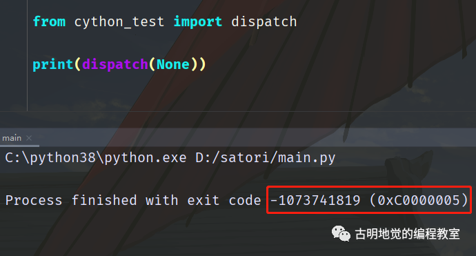
然而报错还是轻的，上面代码执行的时候会发生段错误，解释器直接异常退出了，而这里返回的状态码也很有意思。
首先每个进程退出的时候都有一个状态码，对于解释器而言，正常结束返回 0，出现异常返回 1。但如果出现上述这种很奇怪的状态码，则说明是解释器内部出问题了，一般这种情况都是在和 C 交互的时候才有可能发生。
对于当前这个例子来说，原因就在于不安全地访问了 Girl 实例对象的成员属性，属性和方法都是 C 接口的一部分，而 Python 的 None 没有相应的 C 接口，因此访问属性或者调用方法都是无效的。为了确保这些操作的安全，最好加上一层检测。
def dispatch(Girl g):
if g is None:
raise TypeError("g 不可以为 None")
return g.name, g.age
但是除了上面那种做法，Cython 还提供了一种特殊的语法。
def dispatch(Girl g not None):
return g.name, g.age
此时如果我们传递了 None，那么就会报错。不过这个版本由于要预先进行类型检查，判断是否为 None，从而会牺牲一些效率。不过虽说如此，但由于传递 None 所造成的段错误是非常致命的，因此我们非常有必要防范这一点。
当然还是那句话，虽然效率会牺牲一点点，但与 Cython 带来的效率提升相比，这点牺牲是非常小的，况且这也是必要的。另外注意：not None 只能出现在 def 定义的函数中，cdef 和 cpdef 是不合法的。
我们执行一下，看看效果：

此时对 None 也一视同仁，传递一个 None 也是不符合类型的。另外这里我们设置的是 not None，但是除了 None 还能设置别的吗？答案是不行，只能设置 None，因为 Cython 只有对 None 不会进行检测。
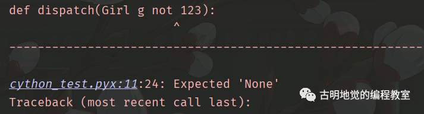
许多人认为 not None 字句的意义不大，这个特性经常被争论，但幸运的是，在函数的参数声明中使用 not None 是非常方便的。
个人觉得 Cython 的语法设计的真酷，笔者本人非常喜欢。
21. 扩展类实例的序列化和反序列化
作者：古明地觉
公众号：古明地觉的编程教室
公众号二维码：
本次来聊一聊序列化和反序列化，像内置的 pickle, json 库都可以将对象序列化和反序列化，但这里我们要说的是 pickle。
pickle 和 json 不同，json 序列化之后的结果是人类可阅读的，但是能序列化的对象有限，因为序列化的结果可以在不同语言之间传递；而 pickle 序列化之后是二进制格式，只有 Python 才认识，因此它可以序列化 Python 的绝大部分对象。
import pickle
class Girl:
def __init__(self, name, age):
self.name = name
self.age = age
girl = Girl("古明地觉", 16)
# 这便是序列化的结果
dumps_obj = pickle.dumps(girl)
# 显然这是什么东西我们不认识, 但解释器认识
print(dumps_obj[: 20])
"""
b'\x80\x04\x95;\x00\x00\x00\x00\x00\x00\x00\x8c\x08__main_'
"""
# 我们可以再进行反序列化
loads_obj = pickle.loads(dumps_obj)
print(loads_obj.name) # 古明地觉
print(loads_obj.age) # 16
这里我们不探究 pickle 的实现原理，我们来说一下如何自定制序列化和反序列化的过程。如果想自定制的话，需要实现 __getstate__ 和 __setstate__ 两个魔法方法：
import pickle
class Girl:
def __init__(self, name, age):
self.name = name
self.age = age
def __getstate__(self):
"""序列化的时候会调用"""
# 对 Girl 的实例对象进行序列化的时候
# 默认会返回其属性字典
# 这里我们多添加一个属性
print("被序列化了")
return {**self.__dict__, "gender": "female"}
def __setstate__(self, state):
"""反序列化时会调用"""
# 对 Girl 的实例对象进行反序列化的时候
# 会将 __getstate__ 返回的字典传递给这里的 state 参数
# 我们再设置到 self 当中
# 如果不设置，那么反序列化之后是无法获取属性的
print("被反序列化了")
self.__dict__.update(**state)
girl = Girl("古明地觉", 16)
dumps_obj = pickle.dumps(girl)
"""
被序列化了
"""
loads_obj = pickle.loads(dumps_obj)
"""
被反序列化了
"""
print(loads_obj.name)
print(loads_obj.age)
print(loads_obj.gender)
"""
古明地觉
16
female
"""
虽然反序列化的时候会调用 __setstate__，但实际上会先调用 __reduce__，__reduce__ 必须返回一个字符串或元组。
我们先来看看返回字符串是什么结果。
import pickle
class Girl:
def __init__(self, name, age):
self.name = name
self.age = age
def __reduce__(self):
print("__recude__")
# 当返回字符串时，这里是 "girl"
# 那么在反序列化之后就会返回 eval("girl")
return "girl"
girl = Girl("古明地觉", 16)
dumps_obj = pickle.dumps(girl)
# 反序列化
loads_obj = pickle.loads(dumps_obj)
print(loads_obj.name)
print(loads_obj.age)
"""
__recude__
古明地觉
16
"""
如果我们返回一个别的字符串是会报错的，假设返回的是 "xxx"，那么反序列化的时候会提示找不到变量 xxx。那如果我们在外面再定义一个变量 xxx 呢？比如 xxx = 123。这样做也是不可以的，因为 pickle 要求序列化的对象和反序列化得到的对象必须是同一个对象。
因此 __reduce__ 很少会返回一个字符串，更常用的是返回一个元组，并且元组里面的元素个数为 2 到 6 个，每个含义都不同，我们分别举例说明。
21.1 返回的元组包含两个元素
当只有两个元素时，第一个元素必须是可调用对象，第二个元素表示可调用对象的参数（必须也是一个元组），相信你已经猜到会返回什么了。
import pickle
class Girl:
def __init__(self, name, age):
self.name = name
self.age = age
def __reduce__(self):
# 反序列化时会返回 range(*(1, 10, 2))
return range, (1, 10, 2)
# 如果是 return int, ("123",)
# 那么反序列化时会返回 int("123")
# 所以此时返回的可以是任意的对象
girl = Girl("古明地觉", 16)
dumps_obj = pickle.dumps(girl)
loads_obj = pickle.loads(dumps_obj)
print(loads_obj) # range(1, 10, 2)
print(list(loads_obj)) # [1, 3, 5, 7, 9]
21.2 返回的元组包含三个元素
当包含三个元素时，那么第三个元素是一个字典，会将该字典设置到返回对象的属性字典中。
import pickle
class A: pass
class Girl:
def __init__(self, name, age):
self.name = name
self.age = age
def __reduce__(self):
# 当然返回 Girl 的实例也是可以的
# 只要保证对象有属性字典即可
return A, (), {"a": 1, "b": 2}
girl = Girl("古明地觉", 16)
dumps_obj = pickle.dumps(girl)
loads_obj = pickle.loads(dumps_obj)
print(loads_obj.__class__)
print(loads_obj.__dict__)
"""
<class '__main__.A'>
{'a': 1, 'b': 2}
"""
如果定义了 __reduce__ 的同时还定义了 __setstate__，那么第三个元素就不会设置到返回对象的属性字典中了，而是会作为参数传递到 __setstate__ 中进行调用：
import pickle
class Girl:
def __init__(self, name, age):
self.name = name
self.age = age
def __setstate__(self, state):
# state 就是 __reduce__ 返回的元组里的第三个元素
# 注意这个 self 也是 __reduce__ 的返回对象，当前就是 Girl("古明地恋", 15)
print(state)
def __reduce__(self):
# 此时的第三个元素可以任意
return Girl, ("古明地恋", 15), ("ping", "pong")
girl = Girl("古明地觉", 16)
dumps_obj = pickle.dumps(girl)
loads_obj = pickle.loads(dumps_obj)
"""
('ping', 'pong')
"""
print(loads_obj.__dict__)
"""
{'name': '古明地恋', 'age': 15}
"""
所以当定义了 __reduce__ 的同时还定义了 __setstate__，那么第三个元素就可以不是字典了。如果没有 __setstate__，那么第三个元素必须是一个字典（或者指定为 None 相当于没指定）。
21.3 返回的元组包含四个元素
当包含四个元素时，那么第四个元素必须是一个迭代器，然后返回的对象内部必须有 append 方法。反序列化的时候会遍历迭代器的每一个元素，并作为参数传递到 append 中进行调用。
import pickle
class Girl:
def __init__(self, name, age):
self.name = name
self.age = age
self.where = []
def append(self, item):
self.where.append(item)
def __reduce__(self):
"""
从第三个元素开始，如果指定为 None，那么相当于什么也不做
比如这里第三个元素我们指定为 None
那么是不会有 "往属性字典添加属性" 这一步的
即使定义了 __setstate__，该方法也不会调用
但是前两个元素必须指定、且不可以为 None
"""
return Girl, ("雾雨魔理沙", 17), None, \
iter(["雾雨魔理沙", "雾雨魔法店", "魔法森林"])
girl = Girl("古明地觉", 16)
dumps_obj = pickle.dumps(girl)
loads_obj = pickle.loads(dumps_obj)
print(
loads_obj.where
) # ['雾雨魔理沙', '雾雨魔法店', '魔法森林']
注意 append 方法里面的 self，这个 self 指的是 __reduce__ 的返回对象。因此这种方式非常适合列表，因为列表本身就有 append 方法。
import pickle
class Girl:
def __init__(self, name, age):
self.name = name
self.age = age
def __reduce__(self):
return list, (), None, \
iter(["雾雨魔理沙", "雾雨魔法店", "魔法森林"])
girl = Girl("古明地觉", 16)
dumps_obj = pickle.dumps(girl)
loads_obj = pickle.loads(dumps_obj)
print(
loads_obj
) # ['雾雨魔理沙', '雾雨魔法店', '魔法森林']
所以还是有点神奇的，我们明明是对 Girl 的实例对象序列化之后的结果进行反序列化，理论上也应该得到 Girl 的实例才对，现在却得到了一个列表，原因就是里面指定了 __reduce__。
并且此时第三个元素就不能指定了，如果指定为字典，那么会加入到返回对象的属性字典中。但我们的返回对象是一个列表，列表没有自己的属性字典，并且它也没有 __setstate__。
21.4 返回的元组包含五个元素
当包含五个元素时，那么第五个元素必须也是一个迭代器，并且内部的每个元素都是一个 2-tuple，反序列化的时候会进行遍历。同时要求返回的对象内部必须有 __setitem__ 方法，举个栗子：
import pickle
class Girl:
def __init__(self, name, age):
self.name = name
self.age = age
def __reduce__(self):
# 依旧会遍历可迭代对象, 得到的是一个 2-tuple
# 然后传递到 __setitem__ 中
return Girl, ("古明地觉", 16), None, None, \
iter([("name", "雾雨魔理沙"), ("age", "17")])
def __setitem__(self, key, value):
print(f"key = {key!r}, value = {value!r}")
self.__dict__[key] = value
girl = Girl("古明地觉", 16)
dumps_obj = pickle.dumps(girl)
loads_obj = pickle.loads(dumps_obj)
"""
key = 'name', value = '雾雨魔理沙'
key = 'age', value = '17'
"""
# 在 __setitem__ 中我们将 name 和 age 属性给换掉了
print(
loads_obj.__dict__
) # {'name': '雾雨魔理沙', 'age': '17'}
21.5 返回的元组包含六个元素
当包含六个元素时，那么第六个元素必须是一个可调用对象，但是在测试的时候发现这个可调用对象始终没被调用。由于 pickle 底层实际上是 C 写的，位于 Modules/_pickle.c 中，所以试着查看了一下，没想到发现了玄机。
我们说在没有定义 __setstate__ 的时候，__reduce__ 返回的元组的第三个元素应该是一个字典（或者 None），会将字典加入到返回对象的属性字典中；但如果定义了，那么就不会加入到返回对象的属性字典中了，而是会作为参数传递给 __setstate__（此时第三个元素就可以不是字典了）。而第六个元素和 __setstate__ 的作用是相似的，举个栗子。
import pickle
class Girl:
def __init__(self, name, age):
self.name = name
self.age = age
def __setstate__(self, state):
print("__setstate__ 被调用了")
def sixth_element(self, ins, val):
print(f"sixth_element 被调用了")
print(ins.__dict__, val)
self.__dict__["name"] = val
def __reduce__(self):
# 我们指定的第六个元素需要是一个可调用对象
# 如果指定了，那么此时 __setstate__ 会无效化
return Girl, ("古明地觉", 16), "古明地恋", \
None, None, self.sixth_element
girl = Girl("古明地觉", 16)
dumps_obj = pickle.dumps(girl)
# 反序列化的时候，会将返回对象和第三个元素作为参数
# 传递给 self.sixth_element 进行调用
loads_obj = pickle.loads(dumps_obj)
"""
sixth_element 被调用了
{'name': '古明地觉', 'age': 16} 古明地恋
"""
# 这里我们将 name 属性的值给换掉了
print(
loads_obj.__dict__
) # {'name': '古明地恋', 'age': 16}
我们看到当指定了第六个元素的时候，__setstate__ 就不会被调用了，但需要注意的是：self.sixth_element 里面的 self 指的是元组的前两个元素组成的返回对象。
假设返回的不是 Girl 实例，而是一个列表，那么就会报错，因为列表没有 sixth_element 方法。当然第六个元素比较特殊，我们也可以不指定为方法，指定为普通的函数也是可以的，只要它是一个接收两个参数的可调用对象即可。
以上就是 __reduce__ 的相关内容，除了 __reduce__ 之外还有一个 __reduce_ex__，用法类似，只不过在调用的时候会传递协议的版本。
关于 pickle 底层的原理其实也蛮有意思，但这里就不展开了，有兴趣可以自己了解一下。总之 pickle 是不安全的，它在反序列化的时候不会对数据进行检测。这个特点可以被坏蛋们用来攻击别人，因此建议在反序列化的时候，只对那些受信任的数据进行反序列化。
21.6 扩展类实例的序列化和反序列化
最后是扩展类实例的序列化和反序列化，终于到我们的主角了。默认情况下 Cython 编译器也会为扩展类生成 __reduce__，和动态类一样，扩展类实例在反序列化之后和序列化之前的表现也是一致的，但是仅当所有成员都可以转成 Python 对象并且没有 __cinit__ 方法时才可以序列化。
cdef class Girl:
cdef int *p
如果是这样的一个扩展类，那么在对它的实例序列化时就会报错：self.p cannot be converted to a Python object for pickling。
如果我们想禁止扩展类的实例被 pickle 的话，可以通过装饰器 @cython.auto_pickle(False) 来实现，此时 Cython 编译器不会再为该扩展类生成 __reduce__ 方法。
cimport cython
@cython.auto_pickle(False)
cdef class Girl1:
cdef readonly str name
cdef int age
def __init__(self):
self.name = "古明地觉"
self.age = 16
cdef class Girl2:
cdef readonly str name
cdef int age
def __init__(self):
self.name = "古明地觉"
self.age = 16
文件名为 cython_test.pyx，下面编译测试一下：
import pyximport
pyximport.install(language_level=3)
import pickle
import cython_test
girl1 = cython_test.Girl1()
try:
pickle.dumps(girl1)
except Exception as e:
print(e)
"""
cannot pickle 'cython_test.Girl1' object
"""
girl2 = cython_test.Girl2()
loads_obj = pickle.loads(pickle.dumps(girl2))
print(loads_obj.name) # 古明地觉
try:
loads_obj.age
except AttributeError as e:
print(e)
"""
'cython_test.Girl2' object has no attribute 'age'
"""
# 因为 age 没有对外暴露，所以访问不到
# 因此序列化之前的 girl2 和反序列化之后的 loads_obj 是一致的
以上就是自定义序列化和反序列化操作，说实话一般用 __getstate__ 和 __setstate__ 就足够了。
22. 扩展类的 property
作者：古明地觉
公众号：古明地觉的编程教室
公众号二维码：
Python 的 property 非常的易用且强大，可以让我们精确地控制某个属性的访问和修改，而 Cython 也是支持 property 的，但是方式有些不一样。不过在介绍 Cython 的 property 之前，我们先来看看 Python 的 property。
class Girl:
def __init__(self):
self.name = None
@property
def x(self):
# 不需要我们对 x 进行调用
# 直接通过 self.x 即可获取返回值
# 让函数像属性一样直接获取
return self.name
@x.setter
def x(self, value):
# 当执行 self.x = "古明地觉" 的时候，会调用这个函数
# "古明地觉" 就会传递给这里的 value
self.name = value
@x.deleter
def x(self):
# 执行 del self.x 的时候，就会调用这个函数
print("被调用了")
del self.name
girl = Girl()
print(girl.x) # None
girl.x = "古明地觉"
print(girl.x) # 古明地觉
del girl.x # 被调用了
这里是通过装饰器的方式实现的，三个函数都是一样的名字，除了使用装饰器，我们还可以这么做。
class Girl:
def __init__(self):
self.name = None
def fget(self):
return self.name
def fset(self, value):
self.name = value
def fdel(self):
print("被调用了")
del self.name
# 传递三个函数即可，除此之外还有一个 doc 属性
x = property(fget, fset, fdel,
doc="这是property")
girl = Girl()
print(girl.x) # None
girl.x = "古明地觉"
print(girl.x) # 古明地觉
del girl.x # 被调用了
所以 property 就是让我们像访问属性一样访问函数，那么它内部是怎么做到的呢？不用想，肯定是通过描述符。
下面我们来手动模拟一下。
# 模仿类 property，实现与其一样的功能
class MyProperty:
def __init__(self, fget=None, fset=None,
fdel=None, doc=None):
self.fget = fget
self.fset = fset
self.fdel = fdel
self.doc = doc
def __get__(self, instance, owner):
return self.fget(instance)
def __set__(self, instance, value):
return self.fset(instance, value)
def __delete__(self, instance):
return self.fdel(instance)
def setter(self, func):
return type(self)(self.fget, func,
self.fdel, self.doc)
def deleter(self, func):
return type(self)(self.fget, self.fset,
func, self.doc)
class Girl1:
def __init__(self):
self.name = None
@MyProperty
def x(self):
return self.name
@x.setter
def x(self, value):
self.name = value
@x.deleter
def x(self):
print("被调用了")
del self.name
class Girl2:
def __init__(self):
self.name = None
def fget(self):
return self.name
def fset(self, value):
self.name = value
def fdel(self):
print("被调用了")
del self.name
x = MyProperty(fget, fset, fdel)
girl1 = Girl1()
print(girl1.x) # None
girl1.x = "古明地觉"
print(girl1.x) # 古明地觉
del girl1.x # 被调用了
girl2 = Girl2()
print(girl2.x) # None
girl2.x = "古明地觉"
print(girl2.x) # 古明地觉
del girl2.x # 被调用了
我们通过描述符的方式手动实现了 property 的功能，描述符事实上在 Python 解释器的层面也用的非常多。当一个类定义了 __get__ 时，它的实例对象被称为非数据描述符；如果又实现了 __set__，那么它的实例对象被称为数据描述符。
而函数就是一个非数据描述符，我们看一下函数的类型对象在底层的定义：

我们看到函数的类型对象实现了 __get__，那么函数显然就是一个描述符。当我们在调用类的成员函数时，底层就会执行 func_descr_get。

在里面会进行检测，如果 obj 为空，说明是类获取的成员函数，那么直接将 func 返回。所以此时得到的 func 就是函数本身，和定义在全局的普通函数并无二致。
但如果 obj 不为空，说明是实例获取的成员函数，那么会调用 PyMethod_New 将成员函数和实例绑定在一起，封装成一个方法并返回。后续解释器发现调用的不是函数，而是方法时，会将方法内部的实例和我们传递的参数组合起来，一起传给方法内部的成员函数进行调用。
所以都说实例在调用的时候会将自身作为第一个参数自动传给 self，相信这背后的原理你已经了解了，我们用代码验证一下：
class A:
def __init__(self):
self.a = 1
self.b = 2
def foo(self):
pass
# 类来获取，拿到的就是函数本身
print(A.foo.__class__)
"""
<class 'function'>
"""
a = A()
# 实例获取，会将函数和自身绑定在一起
# 封装成一个方法
print(a.foo.__class__)
"""
<class 'method'>
"""
# 我们通过方法也可以拿到对应的实例和成员函数
m = a.foo
print(m.__self__ is a) # True
print(m.__self__.a, m.__self__.b) # 1 2
print(m.__func__ is A.foo) # True
好了，到目前为止算是跑题了，不过也无所谓，想到啥说啥，而且探寻一下 Python 背后的秘密也是很有趣的。
下面来看一看 Cython 中的 property，针对扩展类的 property，Cython 有着不同的语法，但是实现了相同的结果。
cdef class Girl:
cdef str name
def __init__(self):
self.name = None
property x:
def __get__(self):
return self.name
def __set__(self, value):
self.name = value
# __del__ 在 Cython 中不表示析构，析构是 __dealloc__
# 但是在 __del__ 里面我们并没有 del self.name
# 原因就是扩展类的属性不可以删除，删除的话会报出以下错误
# Cannot delete C attribute of extension type
# 因此 __del__ 很少使用，一般都是 __get__ 和 __set__
def __del__(self):
print("__del___")
下面我们来测试一下：
import pyximport
pyximport.install(language_level=3)
import cython_test
g = cython_test.Girl()
print(g.x) # None
g.x = "古明地觉"
print(g.x) # 古明地觉
del g.x # __del___
所以 Cython 将 property 和描述符结合在一起了，但是实现起来感觉更方便了。
下一章来介绍魔法方法，魔法方法算是 Python 中非常强大的一个特性， Python 将每一个操作符都抽象成了对应的魔法方法，也正因为如此 numpy 才得以很好地实现。那么在 Cython 中，魔法方法是如何体现的呢？
23. 魔法方法在 Cython 中更加魔法
作者：古明地觉
公众号：古明地觉的编程教室
公众号二维码：
通过魔法方法可以对运算符进行重载，魔法方法的特点就是它的名称以双下划线开头、并以双下划线结尾。我们之前讨论了 __cinit__, __init__, __dealloc__，并了解了它们分别用于 C 一级的初始化、Python 一级的初始化、对象的释放（特指 C 中的指针）。
除了那三个，Cython 也支持其它的魔法方法，但是注意：Cython 的析构不是 __del__，它用于描述符。至于析构函数则由 __dealloc__ 负责实现，所以 __dealloc__ 不仅用于 C 指针指向内存的释放，还负责 Python 对象的析构。
23.1 算术魔法方法
假设在 Python 中定义了一个类 class A，如果希望 A 的实例对象可以进行加法运算，那么内部需要定义 __add__ 或 __radd__。关于 __add__ 和 __radd__ 的区别就在于该实例对象是在加号的左边还是右边。我们以 A() + B() 为例，A 和 B 是我们自定义的类：
首先尝试寻找 A 的 __add__, 如果有直接调用；如果 A 中不存在 __add__, 那么会去寻找 B 的 __radd__；
但如果是内置对象（比如整数）和我们自定义类的实例对象相加呢？
123 + A(): 先寻找 A 的 __radd__；A() + 123: 先寻找 A 的 __add__；
代码演示一下：
class A:
def __add__(self, other):
return "A add"
def __radd__(self, other):
return "A radd"
class B:
def __add__(self, other):
return "B add"
def __radd__(self, other):
return "B radd"
print(A() + B()) # A add
print(B() + A()) # B add
print(123 + B()) # B radd
print(A() + 123) # A add
除了类似于 __add__ 这种实例对象放在左边、__radd__ 这种实例对象放在右边，还有 __iadd__，它用于 += 这种形式。
class A:
def __iadd__(self, other):
print("__iadd__ is called")
return 1 + other
a = A()
a += 123
print(a)
"""
__iadd__ is called
124
"""
如果没定义__iadd__，也可以使用 += 这种形式，会退化成 a = a + 123，所以会调用__add__方法。
当然这都比较简单，其它的算数魔法方法也是类似的，并且里面的 self 就是对应类的实例对象。有人会觉得这不是废话吗？之所以要提这一点，是为了给下面的 Cython 做铺垫。
对于 Cython 的扩展类来说，不使用类似于 __radd__ 这种实现方式，我们只需要定义一个 __add__ 即可同时实现 __add__ 和 __radd__。
比如有一个扩展类型 A，a 是 A 的实例对象，如果是 a + 123，那么会调用 __add__ 方法，然后第一个参数是 a、第二个参数是123；但如果是 123 + a，那么依旧会调用 __add__，不过此时 __add__ 的第一个参数是 123、第二个参数才是 a。
所以不像动态类的魔法方法，第一个参数 self 永远是实例本身，对于静态类来说，第一个参数是谁取决于谁在运算符的左边。所以将第一个参数叫做 self 容易产生误解，官方也不建议将第一个参数使用 self 作为参数名。
但是说实话，用了 Python 这么些年，第一个参数不写成 self 感觉有点别扭。
cdef class Girl:
def __add__(x, y):
return x, y
def __repr__(self):
return "Girl 实例"
编译测试一下：
import pyximport
pyximport.install(language_level=3)
from cython_test import Girl
print(Girl() + 123)
print(123 + Girl())
"""
(Girl 实例, 123)
(123, Girl 实例)
"""
我们看到，__add__ 中的参数确实是由位置决定的，那么再来看一个例子。
cdef class Girl:
cdef long a
def __init__(self, a):
self.a = a
def __add__(x, y):
# 这里必须要通过 <Girl> 转化一下
# 因为 x 和 y 都是外界传来的动态变量
# 而属性 a 不是一个 public 或者 readonly
# 所以动态变量无法访问，真正的私有对动态变量是屏蔽的
# 但静态变量可以自由访问，所以我们需要转成静态变量
if isinstance(x, Girl):
return (<Girl> x).a + y
# 或者使用 cdef 重新静态声明一个静态变量
# 比如 cdef Girl y1 = y，然后 y1.a + x 也可以
return (<Girl> y).a + x
编译测试一下：
import pyximport
pyximport.install(language_level=3)
import cython_test
g = cython_test.Girl(3)
print(g + 2) # 5
print(2 + g) # 5
# 和浮点数运算也是可以的
print(g + 2.1) # 5.1
print(2.1 + g) # 5.1
g += 4
print(g) # 7
除了 __add__，Cython 也支持 __iadd__，此时的第一个参数是 self，因为 += 这种形式，第一个参数永远是实例对象。另外这里说的 __add__ 和 __iadd__ 只是举例，其它的算术操作也是可以的。
23.2 富比较
Cython 的扩展类也可以使用 __eq, __ne__ 等等和 Python 一致的富比较魔法方法。
cdef class A:
# 比较操作，Cython 和 Python 类似
# 第一个参数永远是 self
# 调用谁的 __eq__，第一个参数就是谁
def __eq__(self, y):
return self, y
def __repr__(self):
return "A 实例"
print(A() == 123)
print(123 == A())
"""
(A 实例, 123)
(A 实例, 123)
"""
其它的操作符也类似，可以自己试一下。
23.3 小结
Python 里面的魔法方法有很多，像迭代器协议、上下文管理、反射等等，Cython 都支持，并且用法一致，这里就不多说了。
注意：魔法方法只能用 def 定义，不可以使用 cdef 或者 cpdef。
关于扩展类的内容就说到这里，总之扩展类和内置类是等价的，都是直接指向了 C 一级的数据结构，不需要字节码的翻译过程。也正因为如此，它会失去一些动态特性，但同时也获得了效率，因为这两者本来就是不可兼得的。
Cython 的类有点复杂，还是需要多使用，不过它毕竟在各方面都和 Python 保持接近，因此学习来也不是那么费劲。虽然创建扩展类最简单的方式是通过 Cython，但是通过 Python/C API 直接在 C 中实现的话，则是最有用的练习。
但还是那句话，这需要我们对 Python/C API 有一个很深的了解，而这是一件非常难得的事情，因此使用 Cython 就变成了我们最佳的选择。
24. 通过对象的地址获取对象
作者：古明地觉
公众号：古明地觉的编程教室
公众号二维码：
像 C, Go, Rust 这样的静态语言都有指针的概念，通过对指针解引用即可拿到指针指向的内存。而指针在 Cython 里面也是支持的，但前提指针指向的必须是 C 类型的变量。
cdef int n = 123
# 拿到 n 的地址
cdef int *p = &n
# Cython 里面不能使用 *p 来解引用
# 因为 * 有着其它的含义
# 我们需要使用 p[0] 来解引用
p[0] += 1
# 打印 n, 会发现被修改了
# 因为 p 指向的内存中保存的就是 n
print(n) # 124
当对象是 C 类型的变量时，那么可以获取指针，因为对于 C 而言，变量就是内存的别名。但是 Python 不行，因为 Python 的变量存储的是对象的地址，我们可以通过 id 函数查看。
cdef list names = ["satori", "koishi", "marisa"]
# 我们不能使用 &names 获取列表对象的指针
# 因为 names 保存的本身就是列表对象的地址
print(id(names)) # 1918122496768
# 只不过 Python 在语言层面上摒弃了指针
# 所以我们叫它地址，但它不具备指针的含义
# 虽然以前一直说 Python 的变量本质上是 PyObject *
# 但那是站在 C 的角度上来说的，而 Python 没有指针
# 因此 id(names) 返回的就是一串数字
# 不过这里是 Cython，Cython 同时理解 C 和 Python
# 所以我们可以把 Python 的变量当成指针来用
print(
<Py_ssize_t><void *>names
) # 1918122496768
# 打印的结果仍然是一串数字
那么问题来了，我们能不能根据这一串数字，再反推出 Python 对象呢？
比如外部的 Python 代码将对象的地址传过来，我们根据地址来反推出这个对象是什么，你觉得可以办到吗？如果是纯 Python 的话，应该是办不到的，但有了 Cython 一切都有可能。
# 一个纯 Python 类型的变量，指向一个列表
names = ["satori", "koishi", "marisa"]
# 拿到它的地址
# 此时的 address 就是一串数字
address = id(names)
# 下面我们要进行反推了
print(
<object><void *><Py_ssize_t>address
) # ['satori', 'koishi', 'marisa']
怎么样，是不是很神奇呢？首先 void * 可以转成整数，那么整数也可以变成 void *，只不过这个整数需要是 C 的整数。转成 void * 之后，再转成 object 类型即可。
为了更直观地看到现象，我们封装一个函数：
def infer_object(Py_ssize_t address):
return <object> <void *> address
文件名为 cython_test.pyx，我们测试一下：
import pyximport
pyximport.install(language_level=3)
from cython_test import infer_object
number = 666
print(
infer_object(id(number))
) # 666
name = "古明地觉"
print(
infer_object(id(name))
) # 古明地觉
class Girl:
name = "古明地恋"
age = 15
print(
infer_object(id(Girl)).name,
infer_object(id(Girl)).age
) # 古明地恋 15
还是很有趣的，我们后续会介绍如何在 Cython 中引入 C，即便是 C 函数返回一个地址，我们也是可以拿到相应的值的。
25. Cython 模块之间的相互导入，组织你的 Cython 代码
作者：古明地觉
公众号：古明地觉的编程教室
公众号二维码：
前面介绍 Cython 语法的时候，一直都是一个 pyx 文件，而且文件名也一直叫 cython_test.pyx 就没变过，但如果是多个 pyx 文件该怎么办？怎么像 Python 那样进行导入呢？
Python 提供了模块和包来帮助我们组织项目，这允许我们将函数、类、变量等等，按照各自的功能或者实现的业务，分组到各自的逻辑单元中，从而使项目更容易理解和定位。并且模块和包也使得代码重用变得容易，如果需要访问彼此之间的功能，直接通过 import 语句导入即可。
而 Cython 也支持我们将项目分成多个模块，首先它完全支持 import 语句，并且含义与 Python 完全相同。这就允许我们在运行时访问已经写好的模块中定义的 Python 对象，这个模块也可以是编译好的扩展模块。
但故事显然没有到此为止，因为只有 import 的话，Cython 是不允许两个 pyx 文件访问彼此的静态数据的。比如：cython_test1.pyx 和 cython_test2.pyx ，这两个文件之间无法通过 import 互相访问。而为了解决这一问题，Cython 提供了相应类型的文件来组织 Cython 文件以及 C 文件。到目前为止，我们一直使用扩展名为 .pyx 的 Cython 源文件，它是包含代码逻辑的实现文件，但除了它还有扩展名为 .pxd 的文件。
pxd 文件你可以想象成类似于 C 中的头文件，用于存放一些声明之类的，而 Cython 的 cimport 就是从 .pxd 文件中进行属性导入。
本篇文章就来介绍 cimport 语句的详细信息，以及 .pyx、.pxd 文件之间的相互联系，我们如何使用它们来构建更大的 Cython 项目。有了 cimport 和这两种类型的文件，我们就可以有效地组织 Cython 项目，而不会影响性能。
25.1 .pyx 文件和 .pxd 文件
我们目前一直在处理 .pyx 文件，它是我们编写具体 Cython 代码的文件。如果 Cython 项目非常小，那么一个 .pyx 文件足够了。但如果功能变得繁杂，需要进行文件上的划分、并且还能相互导入，那么就需要 .pxd 文件了。
举个例子，我们的文件还叫 cython_test.pyx。
from libc.stdlib cimport malloc, free
# 给 double 起一个别名
ctypedef double real
cdef class Girl:
cdef public :
str name # 姓名
long age # 年龄
str gender # 性别
cdef real *scores # 分数
def __cinit__(self, *args, **kwargs):
self.scores = <real *> malloc(3 * sizeof(real))
def __init__(self, name, age, gender):
self.name = name
self.age = age
self.gender = gender
def __dealloc__(self):
if self.scores != NULL:
free(self.scores)
cpdef str get_info(self):
return f"name: {self.name}, age: {self.age}," \
f" gender: {self.gender}"
cpdef set_score(self, list scores):
# 虽然 not None 也可以写在参数后面
# 但是它只适用于 Python 函数, 也就是 def 定义的函数
assert scores is not None and len(scores) == 3
cdef real score
cdef Py_ssize_t idx
# 遍历 scores，设置在 self.scores 里面
for idx, score in enumerate(scores):
self.scores[idx] = score
cpdef list get_score(self):
# 获取 self.scores，但它是一个 real *
# 我们需要转成列表之后返回
cdef list res = [self.scores[0],
self.scores[1],
self.scores[2]]
return res
目前来讲，由于所有内容都在一个 pyx 文件里面，因此任何 C 级属性都可以自由访问。
import pyximport
pyximport.install(language_level=3)
import cython_test
g = cython_test.Girl('古明地觉', 16, 'female')
print(g.get_info())
"""
name: 古明地觉, age: 16, gender: female
"""
g.set_score([90.4, 97.3, 97.6])
print(g.get_score())
"""
[90.4, 97.3, 97.6]
"""
访问非常的自由，没有任何限制，但是随着我们 Girl 这个类的功能越来越多的话，该怎么办呢？
所以我们需要创建一个 cython_test.pxd 文件，然后把希望暴露给外界访问的结构放在里面。
# cython_test.pxd
ctypedef double real
cdef class Girl:
cdef public :
str name
long age
str gender
cdef real *scores
cpdef str get_info(self)
# 如果参数有默认值，那么在声明的时候让其等于 * 即可
# 比如：arg=*，表示该函数的 arg 参数有默认值
cpdef set_score(self, list scores)
cpdef list get_score(self)
我们看到在 pxd 文件中只存放了结构的声明，像 ctypedef, cdef, cpdef 等等，并且函数的话我们只是存放了定义，函数体并没有写在里面，同理后面也不可以有冒号。另外，pxd 文件是在编译时访问的，我们不可以在里面放类似于 def 这样的纯 Python 声明，否则会发生编译错误，因为纯 Python 的数据结构直接定义就好，不需要什么声明。
所以 pxd 文件只放相应的声明，而它们的具体实现是在 pyx 文件中，因此有人发现了，这个 pxd 文件不就是 C 中的头文件吗？答案确实如此。
然后我们的 cython_test.pyx 文件也需要修改，cython_test.pyx 和 cython_test.pxd 具有相同的基名称，Cython 会将它们视为一个命名空间。另外，如果我们在 pxd 文件中声明了一个函数或者变量，那么在 pyx 文件中不可以再次声明，否则会发生编译错误。怎么理解呢？
类似于 cpdef func(): pass 这种形式，它是一个函数（有定义）；但是 cpdef func() 这种形式，它只是一个函数声明。所以 Cython 的函数声明和 C 的函数声明也是类似的，如果函数在 Cython 中没有冒号、以及函数体的话，那么就是函数声明。
而在 Cython 的 pyx 文件中也可以进行函数声明，就像 C 源文件中也可以声明函数一样，但是一般都会把声明写在 h 头文件中。在 Cython 里面也是如此，会把 C 级结构、一些声明写在 pxd 文件中。
而一旦声明了，就不可再次声明。比如 cdef public 那些成员变量，它们在 pxd 文件中已经声明了，那么 pyx 中就不可以再有了，否则就会出现变量的重复声明。
重新修改我们的 pyx 文件：
from libc.stdlib cimport malloc, free
cdef class Girl:
def __cinit__(self, *args, **kwargs):
self.scores = <real *> malloc(3 * sizeof(real))
def __init__(self, name, age, gender):
self.name = name
self.age = age
self.gender = gender
def __dealloc__(self):
if self.scores != NULL:
free(self.scores)
cpdef str get_info(self):
return f"name: {self.name}, age: {self.age}," \
f" gender: {self.gender}"
cpdef set_score(self, list scores):
assert scores is not None and len(scores) == 3
cdef real score
cdef Py_ssize_t idx
# 遍历 scores，设置在 self.scores 里面
for idx, score in enumerate(scores):
self.scores[idx] = score
cpdef list get_score(self):
cdef list res = [self.scores[0],
self.scores[1],
self.scores[2]]
return res
虽然结构没有什么变化，但是我们把一些声明拿到 pxd 文件中了，所以 pyx 文件中的声明可以直接删掉了，会自动到对应的 pxd 文件里面找，因为它们有相同的基名称，Cython 会将其整体看成一个命名空间。所以：这里的 pyx 文件和 pxd 文件一定要有相同的基名称，只有这样才能够找得到，否则你会发现代码中的 real 是没有被定义的，当然还有 self 的一些属性，因为它们必须要使用 cdef 在类里面进行声明。
然后调用方式还是和之前一样，也是没有任何问题的。
但是哪些东西我们才应该写在 pxd 文件中呢？本质上讲，任何在 C 级别上，需要对其它模块（pyx）公开的，我们才需要写在 pxd 文件中，比如：
- C 类型声明，比如 ctypedef、结构体、共同体、枚举；
- 外部的 C、C++ 库的声明(后续系列中介绍)；
- cdef、cpdef 模块级函数的声明；
- cdef class 扩展类的声明；
- 扩展类实例的 cdef 属性；
- 使用 cdef、cpdef 方法的声明；
- C 级内联函数或者方法的实现；
但是，一个 pxd 文件不可以包含如下内容：
- Python 函数；
- Python 类；
- 外部的 Python 可执行代码；
当然这些东西也没有必要刻意去记，总之 pyx 文件负责功能的具体实现，但有些时候，我们希望某个 pyx 文件里的功能，可以被其它的 pyx 文件访问。比如我想在 b.pyx 里面访问 a.pyx 里面的某个函数、扩展类等等，那么就再定义一个 a.pxd，将 a.pyx 里面需要被 b.pyx 或其它文件导入的内容，在对应的 a.pxd 文件中进行声明即可。
然后在导入的时候会去找 pxd 文件，根据里面的声明去（和当前 pxd 文件具有相同基名称的 pyx 文件中）寻找对应的实现逻辑，而导入方式是使用 cimport。
cimport 和 import 语法一致，只不过前者多了一个 c，但是 cimport 是用来导入 pxd 文件中声明的静态数据。
有了 pxd 文件，pyx 文件就可以被其它的 pyx 文件导入了，这几个 pyx 文件作为一个整体为 Python 提供更强大的功能，否则的话 pyx 文件之间是无法相互导入的。
最后再说一句，具有相同基名称的 pxd 和 pyx 文件是一个整体，pxd 文件里面的声明，对应的 pyx 文件可以直接用。虽然编写代码的时候 IDE 会提示，但是编译时 Cython 编译器会将它们当成一个整体，但前提是它们的基名称相同。
25.2 多文件相互导入
那么下面就来测试一下多文件之间的相互导入吧，假设再定义一个 caller.pyx，在里面导入 cython_test.pyx。当然导入的话其实寻找的是 cython_test.pxd，然后调用的是 cython_test.pyx 里面的具体实现。
from cython_test cimport Girl
# cython_test.pyx 里面定义了一个扩展类 Girl
# 我们导入它，当然啦，如果想要导入
# 那么 Girl 必须在 cython_test.pxd 中声明
cdef class NewGirl(Girl):
pass
这里由于涉及到了多个 pyx 文件，所以我们需要手动编译，建立一个 setup.py。
from distutils.core import Extension, setup
from Cython.Build import cythonize
# 不用管 pxd, 会自动包含, 因为它们具有相同的基名称
# cython 在编译的时候会自动寻找
ext = [Extension("caller", ["caller.pyx"]),
Extension("cython_test", ["cython_test.pyx"])]
setup(ext_modules=cythonize(ext, language_level=3))
执行 python setup.py build 进行编译，编译之后会发现 build 目录中有两个 pyd 文件了。

cython_test.c 和 caller.c 是 Cython 编译器生成的 C 文件，然后基于 C 文件生成扩展模块。我们将这两个扩展模块移动到当前的主目录下，然后在 main.py 里面导入测试。
import caller
print(caller)
"""
<module 'caller' from 'D:\\satori\\caller.cp38-win_amd64.pyd'>
"""
g = caller.NewGirl("古明地觉", 17, "female")
print(g.get_info()) # name: 古明地觉, age: 17, gender: female
g.set_score([99.9, 90.4, 97.6])
print(g.get_score()) # [99.9, 90.4, 97.6]
我们看到结果没有任何问题，在编译的时候，caller.pyx 会从 cython_test.pxd 里面导入变量 Girl，如果里面找不到，就会报出编译错误。如果找到了，那么就去对应的 cython_test.pyx 里面寻找具体实现。
所以光在 pyx 文件里面实现还不够，如果希望被别的 pyx 访问，那么还要在对应的 pxd 里面进行声明。
我们还可以将 caller.pyx 写更复杂一些。
from cython_test cimport Girl
cdef class NewGirl(Girl):
cdef public str where
def __init__(self, name, age, gender, where):
self.where = where
super().__init__(name, age, gender)
def new_get_info(self):
cdef str info = super(NewGirl, self).get_info()
return info + f", where: {self.where}"
重新编译之后，再次导入。
import caller
# 自己定义了 __init__
# 接收 4 个参数, 前面 3 个会交给父类处理
g = caller.NewGirl("古明地觉", 17, "female", "地灵殿")
print(g.get_info())
"""
name: 古明地觉, age: 17, gender: female
"""
print(g.new_get_info())
"""
name: 古明地觉, age: 17, gender: female, where: 东方地灵殿
"""
因此我们看到使用起来基本上和 Python 没有区别，主要就是如果涉及到多个 pyx，那么这些 pyx 都要进行编译。并且要想被其它 pyx 文件导入，那么该 pyx 文件一定要有相同基名称的 pxd 文件。导入的时候使用 cimport，会去 pxd 文件中寻找相关声明，然后具体实现则是去 pyx 文件中找。
当然啦，如果某个 pyx 文件不需要被别的 pyx 文件访问，那么就不需要 pxd 文件了。比如这里的 caller.pyx，它不需要被其它的 pyx 文件访问，所以我们没有定义 caller.pxd。但如果 caller.pyx 功能变得复杂的话，从 C 语言工程的角度来说，我们还是倾向于定义一个 caller.pxd，然后将声明写在里面。
另外可能有人发现了，我们这里是绝对导入。但实际上，一些 pyd 文件会放在单独的工程目录中，这时候应该采用相对导入，况且它无法作为启动文件，只能被导入。所以我们可以在 pyx 文件中进行相对导入，因为编译之后的 pyd 文件和之前的 pyx 文件之间的关系是对应的。
然后我们将之前的 cython_test.pxd, cython_test.pyx, caller.pyx 放在一个单独的目录中。
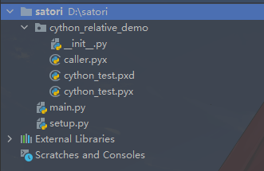
此时里面的 caller.pyx 就应该采用相对导入，我们修改 caller.pyx。
from .cython_test cimport Girl
只需要改动这一行代码即可，然后编译扩展模块。但是有些细节需要注意，首先当出现相对导入的时候，它们一定在一个单独的目录中，而这个目录里面要存在一个 _init_.py。然后编译脚本，也需要变化。
from distutils.core import Extension, setup
from Cython.Build import cythonize
# 需要注意 Extension 的第一个参数
# 首先我们这个文件叫做 setup.py
# 当前的目录层级如下
"""
D:\satori:
cython_relative_demo:
__init__.py
caller.pyx
cython_test.pxd
cython_test.pyx
main.py
setup.py
"""
# 我们的 setup.py 和 cython_relative_demo 是同级的
# 然后 Extension 的第一个参数不可以指定为 caller、cython_test
# 如果这么做的话, 当代码中涉及到相对导入的时候
# 在编译时就会报错: relative cimport beyond main package is not allowed
# Cython 编译器要求在编译 pyx 文件、指定模块名的时候
# 还要把该 pyx 文件所在的目录也带上
ext = [Extension("cython_relative_demo.caller",
["cython_relative_demo/caller.pyx"]),
Extension("cython_relative_demo.cython_test",
["cython_relative_demo/cython_test.pyx"])]
setup(ext_modules=cythonize(ext, language_level=3))
这样编译就没有问题了，然后我们来看一下编译之后的目录：
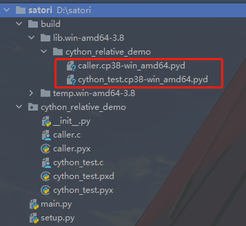
我们看到多了之前指定的目录，然后将这两个文件移动到下面的 cython_relative_demo 目录中，因为我们的 pyx 文件就是在那里定义的，所以编译之后也应该放在原来的位置。
# 这里不需要 pyximport 了
# 因为导入的是已经编译好的 pyd 文件
# 当然即使有 pyximport, 也会优先导入 pyd 文件
from cython_relative_demo import caller
g = caller.NewGirl("古明地觉", 17, "female", "地灵殿")
print(g.get_info())
"""
name: 古明地觉, age: 17, gender: female
"""
print(g.new_get_info())
"""
name: 古明地觉, age: 17, gender: female, where: 东方地灵殿
"""
结果是一样的。
但是问题来了，如果这两个 pyx 文件的路径更复杂呢？

我们将其移动到了各自的目录中，那么这个时候要如何编译呢？不过编译之前，我们首先要修改一下 caller.pyx。
# 应该将导入改成这样才行
from ..cython_test_dir.cython_test cimport Girl
然后修改编译脚本：
from distutils.core import Extension, setup
from Cython.Build import cythonize
# 当前的程序主目录层级如下
"""
D:\satori 目录:
cython_relative_demo:
caller_dir:
__init__.py
caller.pyx
cython_test_dir:
__init__.py
cython_test.pxd
cython_test.pyx
__init__.py
main.py
setup.py
"""
ext = [Extension("cython_relative_demo.caller_dir.caller",
["cython_relative_demo/caller_dir/caller.pyx"]),
Extension("cython_relative_demo.cython_test_dir.cython_test",
["cython_relative_demo/cython_test_dir/cython_test.pyx"])]
setup(ext_modules=cythonize(ext, language_level=3))
最后再来重新编译，看看目录的结构如何：

我们看到目录变成了这样，接着将 pyd 文件移动到对应 pyx 文件所在的目录中即可，然后导入测试一下。
# 这里导入的位置也要变
from cython_relative_demo.caller_dir import caller
g = caller.NewGirl("古明地觉", 17, "female", "东方地灵殿")
print(g.get_info())
"""
name: 古明地觉, age: 17, gender: female
"""
print(g.new_get_info())
"""
name: 古明地觉, age: 17, gender: female, where: 东方地灵殿
"""
依旧可以执行成功，因此以上我们便介绍了当出现相对导入时 pyx 文件的编译方式，并且此时需要手动编译。如果是 pyximport 自动编译的话，需要通过我们之前介绍的定义 .pyxbld 文件的方式，指定编译过程。否则的话，也会出现编译失败的情况。
其实通过定义 .pyxbld 文件的方式要更简单一些，因为所有的 .pyxbld 文件都是一样的，比如 caller.pyxbld 和 cython_test.pyxbld 的内容都长下面这样：
from distutils.core import Extension, setup
from Cython.Build import cythonize
def make_ext(modname, pyxfilename):
# 可以直接返回一个 ext
# 但生成的 C 文件会以 Python2 的语法为主
# 所以通过 pyxbld 文件手动指定依赖的时候
# pyximport.install 里面的 language_level 无效
ext = Extension(modname,
sources=[pyxfilename])
# 因此还可以提前编译好，然后在这里指定 language_level=3
# 但 cythonize 可以对多个 Extension 对象编译
# 返回的是列表，因此我们选择第一个元素
return cythonize(ext, language_level=3)[0]
好了，编写完成，还是很简单的，我们看一下当前目录结构。

里面的 setup.py 文件可以无视掉，然后我们使用 pyximport 自动编译并导入。
import pyximport
pyximport.install(language_level=3)
from cython_relative_demo.caller_dir import caller
g = caller.NewGirl("古明地觉", 17, "female", "地灵殿")
print(g.get_info())
"""
name: 古明地觉, age: 17, gender: female
"""
print(g.new_get_info())
"""
name: 古明地觉, age: 17, gender: female, where: 东方地灵殿
"""
还是很简单的，如果你的线上机器能够保证环境稳定，那么也可以通过定义 .pyxbld 的方式，导入起来更方便。
再次强调：在相对导入 pyx 文件时，要确保 pyx 文件所在的目录里有 _init_.py。
以上我们便将多个 Cython 源代码组织起来了，但是除了这种方式之外，我们还可以使用 include 的方式。
# 文件名：cython_test1.pyx
cdef a = 123
# 文件名：cython_test2.pyx
include "./cython_test1.pyx"
cdef b = 234
print(a + b)
这里的两个 pyx 文件都定义在当前目录，然后我们看到可以像 C 一样使用 include 将别的 pyx 文件包含进来，就像在当前文件中定义的一样。
import pyximport
pyximport.install(language_level=3)
import cython_test2
"""
357
"""
如果我们要手动编译的话也是可以的，但只需要对 cython_test2 编译即可，include 的内容会自动加进来。
25.3 小结
pyx 文件、pxd 文件，再加上 cimport 和 include，可以让我们将 Cython 代码组织到单独的模块和包中，而不牺牲性能。这使得 Cython 可以进行扩展，而不仅仅用来加速，它完全可以作为主力语言开发一个成熟的项目。
26. 预定义的 .pxd 文件
作者：古明地觉
公众号：古明地觉的编程教室
公众号二维码：
之前我们使用了这样一条导入语句：from libc.stdlib cimport malloc，显然这是 Cython 提供的预定义 .pxd 文件，位于 Cython 主目录的 Includes 目录中。
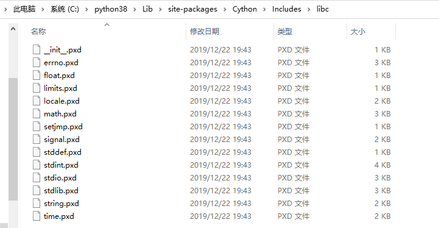
C 的头文件在 Cython 里面是以 .pxd 文件的形式存在的，所以这个目录相当于包含了常用的 C 头文件。当然这些都只是声明，至于具体实现则隐藏在编译器当中，我们看不到罢了。
from libc cimport stdio
stdio.printf(<char *>"name = %s, age = %d\n",
<char *>"satori", <int> 16)
"""
name = satori, age = 16
"""
在 C 里面 #include <stdio.h> 之后，可以直接使用 printf，但是在 Cython 里面则需要通过 stdio.printf 的形式。这是由 Python 的命名空间决定的，因为 printf 位于 stdio 里面，在属性查找时必须先找到 stdio，然后才能找到 printf。
或者使用 from libc.stdio cimport printf 直接将某个具体的函数导入进来也行，这样就能直接使用 printf 了。当然啦，我们也可以 cimport *，这样就和 C 的 #include 一致了。
另外在导入的时候，记得名字不要冲突：
from libc.math cimport sin
from math import sin
"""
from libc.math cimport sin
from math import sin
^
------------------------------------------------------------
cython_test.pyx:2:17: Assignment to non-lvalue 'sin'
"""
显然导入的两个函数重名了，因此 Cython 引发了一个编译错误。而为了修复这一点，我们只需要这么做。
from libc.math cimport sin as c_sin
from math import sin as py_sin
print(c_sin(3.1415926 / 2))
print(py_sin(3.1415926 / 2))
"""
0.9999999999999997
0.9999999999999997
"""
此时就没有任何问题了。
另外导入函数的时候不可以重名，但如果我们导入的是模块的话，那么是可以重名的。
from libc cimport math
import math
print(math.sin(math.pi / 2))
"""
1.0
"""
尽管 import math 是在下面，但调用的时候会从 C 标准库中进行调用。不过这种做法总归是不好的，我们应该修改一下：
from libc cimport math as c_math
import math as py_math
所以这些预定义的 .pxd 文件就类似于 C 的头文件：
- 它们都声明了 C 一级的数据结构供外界调用；
- 它们都允许开发者对功能进行拆分，分别通过不同的模块实现；
- 它们都实现了公共的 C 级接口；
至于每个文件里面都可以使用哪些函数，可以点进源码中查看：

关于这部分语法下一节会说，总之可以看到和 C 的标准库是一致的，只不过声明的方式不同，一个是 C 的语法，一个是 Cython 的语法。但我们知道 Cython 代码也是要翻译成 C 代码的，所以 from libc cimport stdlib 最终也会被翻译成 #include <stdlib.h>。
并且 Includes 目录下除了 libc 之外，还有其它的包：

其中 libcpp 里面包含了 C++ 标准模板库（STL）容器的声明，如：string, vector, list, map, pair, set 等等。而 cpython 则可以让我们访问 Python/C API，当然还有一个重要的包就是 numpy，Cython 也是支持的。
26.1 访问 Python/C API
from cpython.list cimport (
PyList_SetItem,
PyList_GetItem
)
cdef list names = ["古明地觉"]
# names[0] = "古明地恋" 等价于如下
PyList_SetItem(names, 0, "古明地恋")
print(names)
"""
['古明地恋']
"""
# print(names[0]) 等价于如下
# 由于 PyList_GetItem 返回的是 PyObject *
# 我们需要转成 object
# PyObject * 是 C 层面的, object 是 Python 层面的
print(<object>PyList_GetItem(names, 0))
"""
古明地恋
"""
from cpython.object cimport (
PyObject_RichCompareBool,
Py_LT, Py_LE, Py_EQ,
Py_NE, Py_GT, Py_GE
)
# 2 < 1 等价于如下
print(
PyObject_RichCompareBool(2, 1, Py_LT)
) # False
# 2 > 1 等价于如下
print(
PyObject_RichCompareBool(2, 1, Py_GT)
) # True
from cpython.object cimport (
PyObject_IsInstance,
PyObject_IsSubclass
)
# isinstance(123, int) 等价于如下
print(
PyObject_IsInstance(123, int)
) # True
# issubclass(int, object) 等价于如下
print(
PyObject_IsSubclass(int, object)
) # True
Python 的操作都可以通过 Python/C API 来实现，并且这种方式的速度要稍微快那么一点点。但是很明显会比较麻烦，使用 names[0] 肯定比 PyList_GetItem 这种方式来的直接，如果你还对其它的 API 感兴趣，也可以进入源码中查看。

想查看哪个对象的 API，就直接去对应的文件里面找即可。然后在导入的时候，可以直接通过 cpython 来导入，因为其它 .pxd 文件的内容都被导入到 _init_.pxd 里面了。
这个 __init__.pxd 和 __init__.py 类似，import 一个包会自动查找内部的 __init__.py，而 cimport 一个包会自动查找内部的 __init__.pxd。
26.2 小结
C、C++ 头文件通过 #include 命令进行访问，该命令会对相应的头文件进行包含。而 Cython 的 cimport 更智能，也更不容易出错，我们可以把它看做是一个使用命名空间的编译时导入语句。
而早期的 Cython 没有 cimport 语句，只有一个在源码级对文件进行包含的 include 语句，但有了 cimport 之后就更加智能了。
27. 使用 Cython 包装外部的 C 代码
作者：古明地觉
公众号：古明地觉的编程教室
公众号二维码：
通过前面介绍的内容我们知道了 Cython 如何通过提前编译的方式来对 Python 代码进行加速，本次我们聚焦在另一个方向上：假设有一个现成的 C 源文件，那么如何才能让 Python 访问它呢？
事实上 Python 访问 C 源文件，可以将 C 源文件编译成动态库，然后通过 Python 自带的 ctypes 模块来调用它，当然除了 ctypes，还有 swig、cffi 等专门的工具。而 Cython 也是支持我们访问 C 源文件的，只不过它是通过包装的方式让我们访问。
因为 Cython 同时理解 C 和 Python，所以它可以在 Python 语言和 C 语言结合的时候控制所有的方方面面，在完成这一壮举的同时，不仅保持了 Python 的风格，还使得 Cython 代码更加容易定位和调试。
如果做得好的话，那么生成的扩展将具有 C 级的性能、最小的包装开销，和一个友好的 Python 接口，我们也不需要怀疑正在使用的是包装的 C 代码。那么下面就来看看 Cython 如何包装 C 源文件。
要用 Cython 包装 C 源文件，我们必须在 Cython 中声明要使用的 C 组件的接口。为此，Cython 提供了一个 extern 语句，它的目的就是告诉 Cython，我们希望从指定的 C 头文件中使用 C 结构。语法如下：
cdef extern from "header_name":
# 你希望使用哪些 C 结构, 那么就在这里声明
# 如果不需要的话可以写上一个pass
我们知道 C 头文件存放声明，C 源文件存放实现。而在 C 语言中，如果一个源文件想使用另一个源文件定义的函数，那么只需要导入相应的头文件即可，会自动去源文件中寻找对应的实现。
比如在 a.c 中想使用 b.c 里面的一个函数，那么我们需要在 a.c 中 #include "b.h"，然后就可以使用 b.c 里面的内容了。而对于当前的 Cython 也是同理，如果想要包装 C 源文件，那么也是要引入对应的头文件的，通过 cdef extern from 来引入。引入之后也可以在 Cython 里面直接使用，真的是非常方便，因为我们说 Cython 它同时理解 C 和 Python。此外 Cython 还会在编译时检查 C 的声明是否正确，如果不正确则出现编译错误。
下面我们就来详细介绍 cdef extern from 的用法。
27.1 声明外部的 C 函数以及给类型起别名
extern 块中最常见的声明是 C 函数和 typedef，这些声明几乎可以直接写在 Cython 中，只需要做一下修改。
1）将 typedef 变成 ctypedef；
2）删除类似于 restrict、volatile 等不必要、以及不支持的关键字；
3）确保函数的返回值类型和函数名在同一行；
// 在 C 中，可以这么写，但是 Cython 不行
// 因为 Cython 要求返回值类型和函数名在同一行
int
foo(){
return 123
}
4）删除行尾的分号；
下面我们定义一个 C 的头文件：header.h，写上一些简单的 C 声明和宏。
#define M_PI 3.1415926
#define MAX(a, b) ((a) >= (b) ? (a) : (b))
double hypot(double, double);
typedef int integral;
typedef double real;
void func(integral, integral, real);
real *func_arrays(integral[], integral[][10], real **);
如果你想在 Cython 中使用的话，那么就把那些想用的写在 Cython 中，当然我们说不能直接照搬，因为 C 和 Cython 的声明还是有些略微的差异的，而差异就是上面说的那些。
cdef extern from "header.h":
double M_PI
double MAX(double a, double b)
double hypot(double x, double y)
ctypedef int integral
ctypedef double real
void func(integral a, integral b, real c)
real *func_arrays(integral[] i, integral[][10] j, real **k)
注意：M_PI 这个宏，我们根据值将其声明为 double 类型的变量；同理对于 MAX 宏也是如此，把它当成接收两个 double、返回一个 double 的函数。
另外在 extern 块的声明中，我们为函数参数添加了一个名字。这是推荐的，但并不是强制的；如果有参数名的话，那么可以通过关键字参数调用，对于接口的使用会更加明确。
然后还有一点需要注意，我们上面声明变量和函数的时候，没有使用 cdef。这是因为在 cdef extern from 语句块里面，cdef 可以省略掉，但在外部则不可以省略。
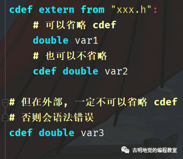
Cython 支持 C 中的所有声明，甚至复杂的函数指针也是可以的，比如：
cdef extern from "header2.h":
ctypedef void (*void_int_fptr)(int)
void_int_fptr signal(void_int_fptr)
# 上面两行等价于 void (*signal(void(*)(int)))(int)
所以我们可以进行非常复杂的声明，当然日常也很少会用到。由于简单的类型声明，像数值、字符串、数组、指针、void 等等已经构成了 C 声明的大多数，因此很多时候我们直接将 C 中的声明复制粘贴过来，然后去掉分号就可以了。
27.2 声明并包装 C 结构体、共同体、枚举
关于结构体、共同体和枚举，前面已经介绍过了，这里以结构体为例，再结合头文件说一遍。
// header.h
struct Girl1 {
char *name;
int age;
};
typedef struct {
char *name;
int age;
} Girl2;
以上是一个 C 的头文件，我们在 Cython 中导入之后要怎么使用呢？
# cython_test.pyx
cdef extern from "header.h":
# 定义结构体要和 C 保持一致
# C 使用 struct Girl1{...}，那么这里也是如此
# 这里依旧省略了 cdef，写成 cdef struct Girl1 也可以
struct Girl1:
char *name
int age
# C 使用 typedef struct {...} Girl2
# 这里也要使用 ctypedef
ctypedef struct Girl2:
char *name
int age
# 对于结构体而言, 里面的成员只能用 C 的类型
# 创建结构体实例都是使用 "cdef 结构体类型 变量名 = " 的方式
cdef Girl1 g1 = Girl1("komeiji satori", 16)
cdef Girl2 g2 = Girl2("komeiji koishi", age=16)
# 可以看到无论是 cdef struct 定义的
# 还是通过 ctypedef 起的类型别名, 使用方式没有任何区别
print(g1)
print(g2)
结构体的定义必须是完整的，里面的成员、类型都必须写清楚。所以结构体我们拿到 cdef extern from 外面定义也是可以的，只不过在外面定义的话，第一种定义方式前面的 cdef 关键字不可以省略。
然后我们来进行编译，当涉及到 C 文件时，需要采用手动编译的方式（或者定义 .pyxbld 文件指定编译过程）。
from distutils.core import setup, Extension
from Cython.Build import cythonize
# 我们只导入了一个头文件
ext = [Extension("cython_test",
sources=["cython_test.pyx"],
include_dirs=["."])]
setup(ext_modules=cythonize(ext, language_level=3))
里面的 include_dirs 表示头文件的搜索路径，header.h 位于当前目录。
导入测试：
import cython_test
"""
{'name': b'komeiji satori', 'age': 16}
{'name': b'komeiji koishi', 'age': 16}
"""
因为里面有 print 所以导入的时候自动打印了，我们看到 C 的结构体到 Python 中会变成字典。
注意：我们使用 cdef extern from 导入头文件的时候，代码块里的声明在 C 头文件中应该已经存在。假设我们还想通过 ctypedef 给 int 起一个别名，但这个逻辑在 C 的头文件中是不存在的，而是我们自己想这么做，那么这个逻辑就不应该放在 cdef extern from 块中，而是应该放在全局区域，否则是不起作用的。
cdef extern from 里面的类型别名、声明什么的，都是根据头文件来的，我们将头文件中想要使用的结构，放在 cdef extern from 中进行声明。而我们自己单独设置的声明（头文件中不存在的逻辑）应该放在外面。
27.3 包装 C 函数
在最开始介绍斐波那契数列的时候，我们已经演示过这种方式了，这里再来详细介绍一下。
// header.h
typedef struct {
char *name;
int age;
} Girl;
// 里面定义一个结构体类型 和 一个函数声明
char *return_info (Girl g);
// source.c
#include <stdio.h>
#include <stdlib.h>
#include "header.h"
char *return_info (Girl g) {
// 堆区申请一块内存
char *info = (char *)malloc(50);
// 拷贝一个字符串进去
sprintf(info, "name: %s, age: %d", g.name, g.age);
// 返回指针
return info;
}
然后在 Cython 里面调用：
from libc.stdlib cimport free
cdef extern from "header.h":
# C 里面使用 typedef sturct {...} Girl
# 那么这里也要使用 ctypedef
ctypedef struct Girl:
char *name
int age
# 声明函数时，可以省略 cdef
# 当然也可以不省略
char *return_info(Girl)
# cdef extern from 里面声明的是 C 函数
# 它类似于使用 cdef 关键字定义的函数，显然无法被外界访问
# 因此我们还需要定义一个包装器
cpdef bytes info(dict d):
cdef:
# 接收一个字典
str name = d["name"]
int age = d["age"]
# 根据对应的值创建结构体实例, 但 name 需要转成 bytes 对象
# 因为 char * 对应 Python 的 bytes 对象
cdef Girl g = Girl(name=bytes(name, encoding="utf-8"),
age=age)
# 构造出结构体实例之后, 传到 C 的函数中
# 得到返回值, 也就是字符串的首地址
cdef char *p = return_info(g)
# 这里需要先拷贝给 Python
# 会根据 char *p 创建一个 bytes 对象, 然后让变量 res 指向
# 至于为什么不直接返回 p, 是因为 p 是在堆区申请的, 我们需要将它释放掉
cdef bytes res = p
free(p)
# 返回 res
return res
然后来进行编译：
from distutils.core import setup, Extension
from Cython.Build import cythonize
ext = [Extension("cython_test",
sources=["cython_test.pyx", "source.c"],
include_dirs=["."])]
setup(ext_modules=cythonize(ext, language_level=3))
导入测试：
import cython_test
print(cython_test.info({"name": "satori", "age": 16}))
"""
b'name: satori, age: 16'
"""
我们看到整体没有任何问题，但很明显这个例子有点刻意了，故意兜这么一个圈子。但这么做主要是想介绍 C 和 Cython 之间的交互方式，以及 Cython 调用 C 库是有多么的方便。
当然我们还可以写一些更加复杂的逻辑，比如定义一个类，但这样也会带来一些方便之处，那就是 __dealloc__。我们把指向堆内存的指针的释放逻辑写在这里面，然后当对象被销毁时会自动调用。
另外 cdef extern from 除了可以引入 C 头文件之外，还可以引入 C 源文件：
// source.c
int func(int a, int b) {
return a + b;
}
以上是一个 C 源文件，我们也是可以通过 cdef extern from 来引入的：
cdef extern from "source.c":
# func 不能直接被 Python 调用，因为它是 C 的函数
# 我们需要手动创建包装器
int func(int a, int b)
def py_func(int a, int b):
return func(a, b)
下面进行编译，并且当涉及到 C 文件时，我们需要手动编译。
from distutils.core import setup, Extension
from Cython.Build import cythonize
ext = [Extension("cython_test",
sources=["cython_test.pyx"])]
setup(ext_modules=cythonize(ext, language_level=3))
在 sources 参数里面只写了 cython_test.pyx，并没有写 source.c。原因是它已经在 pyx 文件中通过 cdef extern from 的方式引入了，如果这里再将其指定在 sources 参数中的话，那么相当于将 source.c 里面的内容写入了两遍，在编译的时候就会出现符号多重定义的错误。
但如果导入的是只存放声明的头文件，那么为了在编译的时候能找到具体的实现，就必须要在 sources 参数中指定 C 源文件，否则编译时会出现符号找不到的错误。
编译成扩展模块之后导入一下：
import cython_test
print(cython_test.py_func(22, 33)) # 55
我们看到是没有问题的，但规范的做法是头文件存放声明，源文件存放具体实现，然后 cdef extern from 导入头文件，编译时在 sources 参数中指定源文件。
27.4 头文件的包含
如果一个头文件包含了另一个头文件，比如：在 a.h 里面引入了 b.h 和 c.h，那我们只需要 cdef extern from "a.h" 即可，然后可以同时使用 a.h、b.h、c.h 里面的内容。
// a.h
#include "b.h"
#include "c.h"
#define ADD(x, y) ((x) + (y))
// b.h
#define SUB(x, y) ((x) - (y))
// c.h
#define MUL(x, y) ((x) * (y))
在头文件中定义了一个宏，而在 Cython 里面我们可以看成是一个函数，函数参数的类型可以是整型、浮点型，只要在 C 里面合法即可。
cdef extern from "a.h":
int ADD(int a, int b)
int SUB(int a, int b)
int MUL(int a, int b)
def py_ADD(int a, int b):
return ADD(a, b)
def py_SUB(int a, int b):
return SUB(a, b)
def py_MUL(int a, int b):
return MUL(a, b)
注意：SUB 函数和 MUL 函数对应的宏分别定义在 b.h 和 c.h 里面，但是我们只引入了 a.h，原因就是 a.h 里面已经包含了 b.h 和 c.h。
当然下面这种做法也是可以的：
cdef extern from "a.h":
int ADD(int a, int b)
cdef extern from "b.h":
int SUB(int a, int b)
cdef extern from "c.h":
int MUL(int a, int b)
def py_ADD(int a, int b):
return ADD(a, b)
def py_SUB(int a, int b):
return SUB(a, b)
def py_MUL(int a, int b):
return MUL(a, b)
a.h 里面包含了 b.h 和 c.h，所以上面相当于将 b.h 和 c.h 引入了两遍，但 C 允许将一个头文件 include 多次，所以没问题。
可毕竟 a.h 里面已经包含了所有的内容，我们直接在 cdef extern from "a.h" 里面把想要使用的 C 结构写上即可，没有必要再引入 b.h 和 c.h。如果真的不想写在 cdef extern from "a.h" 里面的话，还可以这么做：
cdef extern from "a.h":
int ADD(int a, int b)
cdef extern from *:
int SUB(int a, int b)
cdef extern from *:
int MUL(int a, int b)
因为 SUB 和 MUL 在引入 a.h 的时候就已经在里面了，只不过我们需要显式地在 extern 块里面声明之后才能使用它。而 cdef extern from * 则表示里面的 C 结构在其它使用 cdef extern from 导入的头文件中已经存在了，因此会去别的已导入的头文件中查找，所以下面的做法也是可以的：
cdef extern from "a.h":
pass
cdef extern from *:
int ADD(int a, int b)
int SUB(int a, int b)
int MUL(int a, int b)
在 Cython 中导入了头文件，但是可以不使用里面的 C 结构，并且不用的话需要使用 pass 做一个占位符。而我们将使用的 C 结构写在了 cdef extern from * 下面，表示这些 C 结构在导入的头文件中已经存在了，而我们目前只导入了 a.h，那么 ADD、SUB、MUL 就都会去 a.h 当中找，所以此时也是可以的。
以上四种导入方式都是合法的，可以自己测试一下。
导入头文件的花样还是比较多的，但最好还是以直观、清晰为主，像最后两种导入方式就有点刻意了。
27.5 以注释的形式嵌入 C 代码
如果你用过 CGO 的话估计深有体会，Go 支持以注释的形式嵌入 C 代码，而 Cython 同样是支持的，并且这些 C 代码要写在 extern 块中。当然我们说是注释其实不太准确，应该是三引号括起来的字符串，或者说 docstring 也可以。
// header.h
int add(int a, int b);
以上是一个简单的头文件，里面只有一个 add 函数的声明，但是没有具体实现，因为实现我们放在了 pyx 文件中。
cdef extern from "header.h":
"""
int add(int a, int b) {
return a + b;
}
"""
int add(int a, int b)
def my_add(int a, int b):
return add(a, b)
然后我们来进行编译：
from distutils.core import setup, Extension
from Cython.Build import cythonize
ext = [Extension("cython_test",
sources=["cython_test.pyx"])]
setup(ext_modules=cythonize(ext, language_level=3))
最后导入一下进行测试：
import cython_test
print(cython_test.my_add(6, 5)) # 11
是不是很有趣呢？直接将 C 代码写在 docstring 里面，等同于写在源文件中。另外我们说 cdef extern from 除了可以导入头文件之外，还可以导入源文件，所以上面的代码还可以再改一下。当然，虽然 Cython 支持这么做，但还是不建议这么用。
cdef extern from *:
"""
int add(int a, int b) {
return a + b;
}
"""
int add(int a, int b)
def my_add(int a, int b):
return add(a, b)
此时没有涉及到任何的头文件、源文件，但确实是合法的 Cython 代码，因为我们将 C 代码写在了 docstring 中。不过显然这么做没什么意义，直接在里面通过 cdef 定义一个 C 级函数即可，没必要先用 C 定义、然后再使用 cdef extern from 引入，之所以这么做只是想表明 Cython 支持这种做法。
并且当涉及到 C 时，绝大部分都不是源文件的形式，而是动态库，至于如何引入动态库后面会说，总之通过 docstring 写入 C 代码这个功能了解一下即可。
27.6 小结
以上我们就了解了如何使用 Cython 包装外部的 C 代码，具体做法是通过 cdef extern from 引入头文件，在里面写上想要使用的 C 级结构。但头文件只存放声明，而负责具体实现的源文件，则在编译的时候通过 sources 参数指定。
并且 Cython 除了可以包装以源文件形式存在的 C 代码，还可以包装静态库和动态库。而本节介绍的包装方式，需要 C 代码以源文件（或者说文本文件）的形式存在，至于如何包装静态库和动态库，我们后续再聊。
28. 常量、修饰符，以及回调函数
作者：古明地觉
公众号：古明地觉的编程教室
公众号二维码：
28.1 常量
我们之前提到，Cython 理解 const 修饰符，可以用来定义一个常量。
cdef int age = 17
# 此时 *p 是不可变的
cdef const int *p = &age
print(age) # 17
print(p[0]) # 17
# age += 1 之后，p[0] 也会改变
# 但是不能 p[0] += 1，否则报错：Assignment to const dereference
age += 1
print(p[0]) # 18
不过在 cython 里面很少会单独使用 const 修饰符，它主要出现在 cdef extern from 语句块中，用来修饰一个 C 函数的参数或者返回值。
假设在 header.h 中有这样一段声明：
typedef const int *const_int_ptr;
const double *returns_ptr_to_const(const_int_ptr);
在 Cython 中就可以这么写：
cdef extern from "header.h":
ctypedef const int* const_int_ptr
const double *returns_ptr_to_const(const_int_ptr)
# 函数、变量、结构体等等，声明的时候可以加上 cdef，比如这里写成 cdef const double *... 也可以
# 但不加也是合法的，我个人一般习惯不加，可以和 C 的声明在最大程度上保持一致
可以看到声明真的非常类似，基本上没太大改动，只需要将 typedef 换成 ctypedef、并将结尾的分号去掉即可。但事实上即使分号不去掉在 Cython 中也是合法的，只不过这不是符合 Cython 风格的代码。
C 里面除了 const 还有 volatile 和 restrict，但这两个在 Cython 中是不合法的。
然后 const 除了可以在 cdef extern from 语句块里面，还可以出现在函数（方法）的参数和返回值类型声明当中：
cdef const int* func(const int* p):
pass
但说实话，const 对于 Cython 而言，意义不大。
如果你不修改值的话，那么有没有 const 效果都一样。
28.2 给 C 变量起别名
在 Cython 中，偶尔为 C 的变量起别名是很有用的，这允许我们可以在 Cython 中以不同的名称引用一个 C 级对象，怎么理解呢？举个例子：
// header.h
unsigned long __return_int(unsigned long);
// source.c
unsigned long __return_int(unsigned long n) {
return n + 1;
}
C 函数前面带了两个下划线，我们看着别扭，再或者它和 Python 的某个内置函数、关键字发生冲突等等，这个时候我们需要为其指定一个别名。
# cython_test.pyx
cdef extern from "header.h":
# 在 C 中定义的是 __return_int
# 但这里我们为其起了一个别名 return_int
unsigned long return_int "__return_int"(unsigned long)
# 然后直接通过别名进行调用
def py_return_int(n):
return return_int(n)
我们测试一下，编写编译脚本 setup.py：
from distutils.core import setup, Extension
from Cython.Build import cythonize
ext = [Extension("cython_test",
sources=["cython_test.pyx", "source.c"],
include_dirs=["."])]
setup(ext_modules=cythonize(ext, language_level=3))
编译之后导入测试一下：
import cython_test
print(cython_test.py_return_int(123)) # 124
我们看到没有任何问题，Cython 做的还是比较周密的，为我们考虑到了方方面面。并且这里起别名不仅仅可以用于函数，还可以是结构体、枚举、类型别名之类的。举个例子：
// header.h
typedef int class;
struct del {
int a;
float b;
};
enum yield {
ALOT, SOME, ALITTLE
};
我们给 int 起了一个别名叫 class，定义了一个结构体 del 和枚举 yield，这些都是 Python 的关键字，我们不能直接用，需要换一个名字。
cdef extern from "header.h":
# C 里面的是 class，这里起个别名叫 klass
ctypedef int klass "class"
# del 是 Python 的关键字，这里换成 _del
struct _del "del":
int a
float b
# yield 是 Python 的关键字，这里换成 _yield
enum _yield "yield":
ALOT
SOME
ALITTLE
cdef klass num = 123
cdef _del s = _del(a=1, b=3.14)
print(num)
print(s)
print(ALOT, SOME, ALITTLE)
"""
123
{'a': 1, 'b': 3.140000104904175}
0 1 2
"""
执行没有问题，Cython 考虑到了 Python 和 C 在关键字上会有冲突，因此设计了这一语法。冲突了没有关系，换一个名字就可以了，比如 del 是 Python 的关键字，那么就写成 struct _del。但是这么做还不够，因为头文件里面没有定义 _del 这个结构体，所以这么写会报错，我们需要写成 struct _del "del"，表示使用的是 C 中的 del，但我们在 Cython 中换了个名字叫 _del。
在任何情况下，引号里的字符串都是生成的 C 代码中的对象名，而 Cython 不会检查该字符串的内容，因此可以使用（滥用）这一特性来控制 C 一级的声明。
28.3 错误检测和引发异常
对于外部的 C 函数而言，如果出现了异常，那么一种常见的做法是返回一个错误的状态码或者错误标志。但这些异常是在 C 中出现的异常，不是 Cython 中的，因此为了正确地表示 C 中出现的异常，我们必须要对其进行包装。当在 C 中出现异常时，显式地将其引发出来。如果不这么做、而只是单纯的异常捕获的话，那么是无效的，因为 Cython 不会对 C 中出现的异常进行检测，所以在 Python 中也是无法进行异常捕获的。
而如果想做到这一点，需要将 except 字句和 cdef 回调一起绑定起来。
我们说过 Cython 支持 C 函数指针，通过这个特性，可以包装一个接收函数指针作为回调的 C 函数。回调函数可以是不调用 Python/C API 的纯 C 函数，也可以调用任意的 Python 代码，这取决于你要实现的功能逻辑，因此这个强大的特性允许我们在运行时通过 cdef 创建一个函数来控制底层 C 函数的行为。
下面举例说明，首先在 C 的标准库 stdlib 中有一个 qsort 函数，用于对数组排序，函数的原型如下：

我们看到里面接收四个参数，含义如下：
- array：数组指针；
- count：数组的元素个数，因为数组在传递的时候会退化为指针，所以无法通过 sizeof 计算元素个数，需要显式传递；
- size：数组元素的大小；
- compare：比较函数，a > b 返回正数、a < b 返回负数、a == b 返回 0；
下面我们就来测试一下，定义一个函数，接收一个列表，然后根据列表创建 C 数组，调用 qsort 对 C 数组排序。排完序之后，再将 C 数组的元素重新设置在列表中，所以整个过程相当于对列表进行排序。
# 因为 stdlib.h 位于标准库中，所以加上 <> 可以让编译器直接去标准库中找
# 另外也可以通过 libc.stdlib 进行导入
# from libc.stdlib cimport qsort, malloc, free
# 事实上在 stdlib.pxd 里面也是使用了 cdef extern from
# 既然 stdlib.pxd 里面已经声明了，那么直接导入也是可以的
cdef extern from "<stdlib.h>":
void qsort(
void *array,
size_t count,
size_t size,
int (*compare)(const void *, const void *)
)
void *malloc(size_t size)
void free(void *ptr)
# 定义排序函数
cdef int int_compare(const void *a,
const void *b):
cdef:
int ia = (<int *>a)[0]
int ib = (<int *>b)[0]
return ia - ib
# 因为列表支持倒序排序
# 所以我们需要再定义一个倒序排序函数
cdef int int_compare_reverse(const void *a,
const void *b):
# 直接在正序排序的基础上乘一个 -1 即可
return -int_compare(a, b)
# 给一个函数指针起的类型别名
ctypedef int(*qsort_cmp)(const void *, const void *)
# 一个包装器, 外界调用的是这个 pyqsort
# 在 pyqsort 内部会调用 qsort
cpdef pyqsort(list x, bint reverse=False):
"""
将 Python 中的列表转成 C 的数组, 用于排序
排序之后再将结果设置到列表中
:param x: 列表
:param reverse: 是否倒序排序
:return:
"""
cdef:
int *array
int i, N
# 计算列表长度, 并申请对应容量的内存
N = len(x)
array = <int *>malloc(sizeof(int) * N)
if array == NULL:
raise MemoryError("内存不足, 申请失败")
# 将列表中的元素拷贝到数组中
for i, val in enumerate(x):
array[i] = val
# 获取排序函数
cdef qsort_cmp cmp_callback
if reverse:
cmp_callback = int_compare_reverse
else:
cmp_callback = int_compare
# 调用 C 中的 qsort 函数进行排序
qsort(<void *> array, <size_t> N,
sizeof(int), cmp_callback)
# 调用 qsort 结束之后, array 就排序好了
# 然后再将排序好的结果设置在列表中
for i in range(N):
# 注意: 此时不能对 array 使用 enumerate
# 因为它是一个 int *
x[i] = array[i]
# 此时 Python 中的列表就已经排序好了
# 别忘记最后将 array 释放掉
free(array)
我们说当导入自定义的 C 文件时，应该通过手动编译的方式，否则会找不到相应的文件。但这里我们导入的是标准库中的头文件，具体实现也位于编译器当中，不是我们自己写的，因此可以不用手动编译，直接通过 pyximport 自动编译并导入即可。
import pyximport
pyximport.install(language_level=3)
import random
import cython_test
# 我们看到此时的 pyqsort 和 内置函数 一样
# 都属于 built-in function 级别, 是不是很有趣呢
print(cython_test.pyqsort)
print(max)
print(isinstance)
print(getattr)
"""
<built-in function pyqsort>
<built-in function max>
<built-in function isinstance>
<built-in function getattr>
"""
# 然后我们来看看结果如何吧, 是不是能起到排序的效果呢
lst = [random.randint(10, 100) for _ in range(10)]
print(lst)
"""
[47, 35, 82, 74, 76, 76, 46, 50, 27, 35]
"""
# 排序
cython_test.pyqsort(lst)
# 再次打印
print(lst)
"""
[27, 35, 35, 46, 47, 50, 74, 76, 76, 82]
"""
# 然后倒序排序
cython_test.pyqsort(lst, reverse=True)
print(lst)
"""
[82, 76, 76, 74, 50, 47, 46, 35, 35, 27]
"""
目前看起来一切顺利，没有任何障碍，而且我们在外部自己实现了一个内置函数，这是非常了不起的。
但如果出现了异常呢？我们目前还没有对异常进行处理，下面将逻辑改一下。
cdef int int_compare_reverse(const void *a,
const void *b):
# 在用于倒序排序的比较函数中加入一行 [][3],
# 故意引发一个索引越界，其它地方完全不变
[][3]
return -int_compare(a, b)
然后我们再调用它，看看会有什么现象：
import pyximport
pyximport.install(language_level=3)
import cython_test
lst = [1, 2, 3]
# 倒序排序
cython_test.pyqsort(lst, reverse=True)
print("正常执行")
输出如下：

我们看到，明明出现了索引越界错误，但是程序居然没有停下来，而是把异常忽略掉了。而每一次排序都需要调用这个函数，所以出现了多次 IndexError，并且最后的 print 还打印了。
显然这个问题我们在前面说过，当返回值是 C 的类型时，函数里面的错误会被忽略掉，因此需要使用 except ? -1 充当哨兵。
cdef extern from "<stdlib.h>":
void qsort(
void *array,
size_t count,
size_t size,
int (*compare)(const void *, const void *) except ? -1
)
void *malloc(size_t size)
void free(void *ptr)
# 定义排序函数
cdef int int_compare(const void *a,
const void *b) except ? -1:
cdef:
int ia = (<int *>a)[0]
int ib = (<int *>b)[0]
return ia - ib
cdef int int_compare_reverse(const void *a,
const void *b) except ? -1:
[][3]
return -int_compare(a, b)
# 给一个函数指针起的类型别名
ctypedef int(*qsort_cmp)(const void *, const void *) except ? -1
# pyqsort 函数的部分不变
# ......
由于 except ? -1 也是函数类型的一部分，所以必须都要声明，然后我们再调用试试。
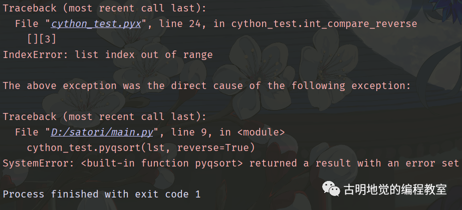
此时异常就正确地抛出来了，但是我们看到 Cython 在接收到 IndexError 之后，又抛出了一个 SystemError。原因就在于 int_compare_reverse 这个函数的返回值类型是 C 的类型，以及它不是在 Cython 中调用的，而是作为回调在 C 里面调用的。
所以异常传递真的是非常的不容易，主要是这个异常它不是在 Cython 里面发生的，而是在 C 函数内部执行回调时发生的，也就相当于是在 C 里面发生的。
在 Cython 中定义一个 C 函数的回调函数、并且在 C 函数里面因执行回调而出现了 Python 异常时，还能通过 except ? -1 将异常从 C 传递给 Cython，这个过程真的是走了很长的一段路。
注意：我们这里是 except ? -1，也就是采用 -1 充当的哨兵，但哨兵值的类型应该和返回值类型保持一致。如果返回值类型是 double，那么哨兵值就应该写成 -1.0。或者干脆直接点，写成 except * 也是可以的，无论返回值类型是什么，except * 都是满足的，但是会多一点点开销。
29. 用 Cython 包装静态库和动态库
作者：古明地觉
公众号：古明地觉的编程教室
公众号二维码：
引入 C 源文件我们已经知道该怎么做了，但如果引入的不是源文件，而是已经存在的静态库或者动态库该怎么办呢？C 语言发展到现在已经拥有非常多成熟的库了，我们可以直接拿来用，这些库可以是静态库、也可以是动态库，这个时候 Cython 要如何和它们勾搭在一起呢？
要搞清楚这一点，我们需要先了解静态库和动态库。并且 C 源文件可以被编译成可执行文件，那么我们还要搞清楚在将 C 源文件编译成可执行文件的时候，静态库和动态库是如何起作用的。所以暂时不提 Cython，先来说一下静态库和动态库。
29.1 C 的编译过程
假设有一个 C 源文件 main.c，只需要通过 gcc main.c -o main.exe 即可编译生成可执行文件（ 如果只写 gcc main.c，那么 Windows 上默认会生成 a.exe、Linux 上默认会生成 a.out ），但是这一步可以拆解成如下步骤：
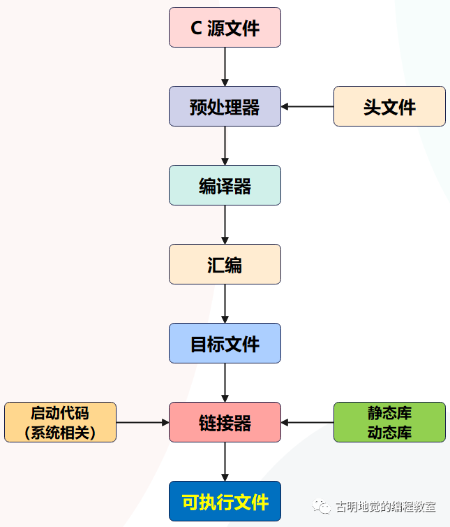
- 预处理：gcc -E main.c -o main.i，根据 C 源文件得到预处理之后的文件，这一步只是对 main.c 进行了预处理：比如宏定义展开、头文件展开、条件编译等等，同时将代码中的注释删除，注意：这里并不会检查语法；
- 编译：gcc -S main.i -o main.s，将预处理后的文件进行编译、生成汇编文件，这一步会进行语法检测、变量的内存分配等等；
- 汇编：gcc -c main.s -o main.o，根据汇编文件生成目标文件，当然我们也可以通过 gcc -c main.c -o main.o 直接通过 C 源文件得到目标文件；
- 链接：gcc main.o -o main.exe，程序是需要依赖各种库的，可以是静态库也可以是动态库，因此需要将目标文件和其引用的库链接在一起，最终才能构成可执行的二进制文件；
从 C 源文件到可执行文件会经历以上几步，不过我们一般都会将这几步组合起来，整体称之为编译。比如我们常说，将某个源文件编译成可执行文件。
而静态库和动态库是在链接这一步发生的，比如我们在 main.c 中引入了 stdio.h 这个头文件，里面的函数（ 比如 printf ）不是我们自己实现的，所以在编译成可执行文件的时候还需要将其链接进去。
所以静态库和动态库的作用都是一样的，都是和汇编生成的目标文件（ .o 文件）搅和在一起，共同组合生成可执行文件。那么它们之间有什么区别呢？下面就来介绍一下。
在 Windows 上静态库是以 .lib 结尾、动态库是以 .dll 结尾；在 Linux 上静态库则以 .a 结尾、动态库以 .so 结尾。而动态库的生成，两个系统没太大区别，但生成静态库，Windows 系统要麻烦一些。考虑到生产上大部分都是 Linux 系统，并且动态库的使用频率更高，所以这里只以 Linux 系统为例。
29.2 静态库
一个静态库可以简单看成是一组目标文件的集合，也就是多个目标文件经过压缩打包之后形成的文件。而静态库最大的特点就是一旦链接成功，那么就可以删掉了，因为它已经链接到生成的可执行文件中了。所以从侧面也可以看出使用静态库会比较浪费空间和资源，说白了就是生成的可执行文件会比较大，因为里面还包含了静态库。
而在 Linux 中静态库是有命名规范的，必须以 lib 开头、.a 结尾。假设你想生成一个名为 hello 的静态库，那么它的文件名就必须是 libhello.a，这是一个规范。
在 Linux 中生成静态库的方式如下：
- 先得到目标文件：
gcc -c 源文件 -o 目标文件，比如gcc -c test.c -o test.o。这里要指定 -c 参数，否则生成的就是可执行文件； - 通过 ar 工具基于目标文件构建静态库：ar rcs libtest.a test.o，此时就得到了静态库 。但我们说在 Linux 中静态库是有格式要求的，必须以 lib 开头、.a 结尾，所以是 libtest.a；
我们来做一个测试，首先是编写一个 C 文件 test.c，里面内容如下：
// 计算 start 到 end 之间所有整数的和
int sum(int start, int end) {
int res = 0;
for (; start <= end; start++) {
res += start;
}
return res;
}
执行命令：
[root@satori ~]# gcc -c test.c -o test.o
[root@satori ~]# ar rcs libtest.a test.o
[root@satori ~]# ls | grep test.
libtest.a
test.c
test.o
此时 libtest.a 就成功生成了，然后我们再来编写一个 main.c 直接调用：
#include <stdio.h>
int sum(int, int);
int main() {
printf("%d\n", sum(1, 100));
}
我们看到这里只是声明了 sum，但是具体实现则没有编写，因为它已经在 libtest.a 中实现了，我们只需要在 gcc 编译的时候指定即可。
[root@satori ~]# gcc main.c -L . -l test -o main
[root@satori ~]# ./main
5050
可以看到执行成功了，打印结果也是正确的，但这里需要解释一下里面的参数。首先 gcc main.c 无需解释，表示对 main.c 文件进行编译。而结尾的 -o main 也无需解释，表示生成的可执行文件的文件名叫 main。
中间的 -L . 表示追加库文件的搜索路径，因为 gcc 在寻找库的时候，只会从标准位置进行查找。因此需要通过 -L 参数将写好的静态库所在的路径追加进去，libtest.a 位于当前目录，所以是 -L .。
然后是 -l test，首先 -l 表示要链接的静态库（也可以是动态库，后面会说，目前就只看静态库即可），因为当前的静态库名字叫做 libtest.a，那么把开头的 lib 和结尾的 .a 去掉再和 -l 进行组合即可。
如果我们将静态库改名为 libxxx.a 的话，那么就需要指定 -l xxx；同理，要是我们指定的是 -l foo，那么在链接的时候会自动寻找 libfoo.a。所以从这里也能看出，在 Linux 中创建静态库的时候一定要遵循命名规范，以 lib 开头、.a 结尾，否则链接是会失败的。当然追加搜索路径、链接静态库的数量是没有限制的，比如除了 libtest.a 之外还想链接 libfoo.a，那么就指定 -l test -l foo 即可。
注：
-l test也可以写成-ltest，即中间没有空格，这种写法更为常见。但这里我为了清晰，之间加了一个空格，对于编译而言是没有影响的。
同理还有头文件，虽然这里没有涉及到，但还是需要说一说，因为导入头文件更常见。如果想导入的头文件不在搜索路径中，我们在编译的时候也是需要指定的。假设 main.c 还引入了一个自定义的头文件，其位于当前目录下的 header 目录里，那么编译的时候为了让编译器能够找得到，我们需要通过 -I 来追加相应的头文件的搜索路径：

对于头文件搜索路径、库文件搜索路径、引入的静态库的数量，都是没有限制的，可以指定任意个：-I、-L、-l。
29.3 动态库
通过静态库，我们算是实现了代码复用，而且静态库的使用也比较方便。那么问题来了，既然有了静态库，为什么我们还要使用动态库呢？
首先是资源浪费，假设有一个静态库大小是 1M，而它被 1000 个可执行程序依赖，那么这个静态库就相当于被拷贝了 1000 份，因为静态库是需要被链接到可执行文件当中的。然后是静态库的更新和部署会带来麻烦，假设静态库更新了，那么所有使用它的应用程序都必须重新编译、然后发布给用户。即使只改动了一小部分，也要重新编译生成可执行文件，因为要重新链接静态库。
而动态库则不同，动态库在链接的时候不会将自身的内容包含在可执行文件中，而是在程序运行的时候动态加载。相当于只是告诉可执行文件："你的内部会依赖我，但由于我是动态库，因此我不会像静态库一样被包含在你的内部，而是需要你运行的时候再去查找、加载"。所以多个可执行文件可以共享同一个动态库，因此也就避免了空间浪费的问题，并且动态库是程序运行时动态加载的，我们对动态库做一些更新之后可以不用重新编译生成可执行文件。
有优点就自然有缺点，相信都看出来了，既然是动态加载，就意味着即使在编译成可执行文件之后，依赖的动态库也不能丢。和静态库不同，静态库和最终的可执行文件是完全独立的，因为在编译成可执行文件的时候静态库的内容就已经被链接在里面了；而动态库是要被动态加载的，因此它是被可执行文件所依赖的，所以不能丢。
然后我们来生成一下动态库，生成动态库要比生成静态库简单许多：gcc 源文件 -shared -o 动态库文件，还是以之前的 test.c 为例：
gcc test.c -shared -o libtest.so
在 Linux 中，动态库也具有相同的命名规范，只不过它是以 .so 结尾。但是你真的不按照这个格式命名也是可以的，只不过在使用 gcc 的时候会找不到相应的库。因为编译的时候会按照指定格式去查找库文件，所以我们在生成库文件的时候也要按照相同的格式起名字。
Windows 上生成动态库的方式与 Linux 相同，只需把动态库的后缀 .so 换成 .dll 即可。
然后使用 gcc 对之前的 test.c 源文件进行编译：
[root@satori ~]# gcc test.c -shared -o libtest.so
[root@satori ~]# ls libtest.so
libtest.so
[root@satori ~]# gcc main.c -L . -l test -o main1
我们看到可执行文件成功生成了，这里起名为 main1。引入动态库和引入静态库的方式是一样的，因为 -l 既可以链接静态库、也可以链接动态库（要是静态库和动态库都有怎么办？别急，后面说，目前只考虑动态库）。
[root@satori ~]# ./main1
./main1: error while loading shared libraries: libtest.so:
cannot open shared object file: No such file or directory
但是问题来了，虽然编译成功了，但是执行的时候却报错了，说找不到这个 libtest.so，尽管它就在当前可执行文件所在的目录下。
原因是可执行文件在查找动态库的时候也是会从指定的位置进行查找的，而我们当前目录不在搜索范围内。这时候可能有人会好奇，我们不是在编译的时候通过 -L 参数将当前路径追加进去了吗？
答案是动态库和静态库不同，动态库在链接的时候自身不会被包含在可执行文件当中，我们指定的 -L . -l test 相当于只是在链接的时候告诉即将生成的可执行文件："在当前目录下有一个 libtest.so，它将来会是你的依赖，你赶紧记录一下"。我们可以通过 ldd 命令查看可执行文件依赖的动态库：
[root@satori ~]# ldd main1
linux-vdso.so.1 => (0x00007ffe67379000)
libtest.so => not found
libc.so.6 => /lib64/libc.so.6 (0x00007f8d89bf9000)
/lib64/ld-linux-x86-64.so.2 (0x00007f8d89fc6000)
[root@satori ~]#
我们看到 libtest.so 已经被记录下来了，所以链接动态库时只是记录了动态库的信息，当程序执行时再去动态加载，因此它们会有一个指向。但我们发现 libtest.so 指向的是 not found，这是因为动态库 libtest.so 不在动态库查找路径中，所以会指向 not found。
因此我们还需要将当前目录加入到动态库查找路径中，vim /etc/ld.so.conf，将当前目录（ 我这里是 /root ）追加在里面，或者直接 echo "/root" >> /etc/ld.so.conf，然后执行 /sbin/ldconfig 使得修改生效。
最后再来重新执行一下 main1，看看结果如何：
[root@satori ~]# echo "/root" >> /etc/ld.so.conf
[root@satori ~]# /sbin/ldconfig
[root@satori ~]#
[root@satori ~]# ./main1
5050
可以看到此时成功执行了，因此使用动态库实际上会比静态库要麻烦一些，因为静态库在编译的时候就通过 -L 和 -l 参数把自身链接到可执行文件中了。而动态库则不是这样，用大白话来说就是，它在链接的时候并没有把自身内容加入到可执行文件中，而是告诉可执行文件自己的信息、然后让其执行时再动态加载。但是加载的时候，为了让可执行文件能加载的到，我们还需要将动态库的路径配置到 /etc/ld.so.conf 中。
[root@satori ~]# ldd main1
linux-vdso.so.1 => (0x00007ffdbc324000)
libtest.so => /root/libtest.so (0x00007fccdf5db000)
libc.so.6 => /lib64/libc.so.6 (0x00007fccdf20e000)
/lib64/ld-linux-x86-64.so.2 (0x00007fccdf7dd000
此时 libtest.so 就指向 /root/libtest.so 了，而不是 not found。虽然麻烦，但是它更省空间，因为此时只需要有一份动态库，如果可执行文件想用的话直接动态加载即可。除此之外，我们说修改了动态库之后，原来的可执行文件不需要重新编译：
int sum(int start, int end) {
int res = 0;
for (; start <= end; start++) {
res += start;
}
return res + 1;
}
这里我们将返回的 res 加上一个 1，然后重新生成动态库：

结果变成了 5051，并且我们没有对可执行文件做修改，因为动态库的内容不是嵌入在可执行文件中的，而是可执行文件执行时动态加载的。如果是静态库的话，那么就需要重新编译生成可执行文件了。
29.4 同时指定静态库和动态库
无论是静态库 libtest.a 还是动态库 libtest.so，在编译时都是通过 -l test 进行链接的。那问题来了，如果内部同时存在 libtest.a 和 libtest.so，-l test 是会去链接 libtest.a 还是会去链接 libtest.so 呢？其实上面的内容已经告诉答案了，首先我们上面所有的操作都是在 /root 目录下进行的，而且文件都没有删除。
[root@satori ~]# ls | grep test.
libtest.a
libtest.so
test.c
test.o
我们介绍静态库的时候已经生成了 libtest.a，然后 -l test 找到了 libtest.a 这没有任何问题。然后介绍动态库的时候又生成了 libtest.so，但是并没有删除当前目录下的 libtest.a，而 -l test 依然会去找 libtest.so，说明了 -l 会优先链接动态库。如果当前目录不存在相应的动态库，才会去寻找静态库。
# 修改配置，将当前目录给去掉
[root@satori ~]# vim /etc/ld.so.conf
[root@satori ~]# /sbin/ldconfig
[root@satori ~]#
[root@satori ~]# gcc main.c -L . -l test -o main2
[root@satori ~]# ./main2
./main2: error while loading shared libraries: libtest.so:
cannot open shared object file: No such file or directory
我们在 /etc/ld.so.conf 中将当前目录给删掉了，所以编译成可执行文件之后再执行就报错了，因为找不到 libtest.so，证明默认加载的确实是动态库。
但是问题来了，如果同时存在静态库和动态库，而我就想链接静态库的话该怎么做呢？
[root@satori ~]# gcc main.c -L . -static -l test -o main2
[root@satori ~]# ./main2
5050
通过 -static，可以强制让 gcc 链接静态库。
另外，如果执行上面的命令报错了，提示 /usr/bin/ld: cannot find -lc，那么执行 yum install glibc-static 即可。因为高版本的 Linux 系统下安装 glibc-devel、glibc 和 gcc-c++ 时不会安装 libc.a，而是只安装libc.so。所以当使用 -static 时，libc.a 不能使用，因此报错 "找不到 lc"。
并且我们说生成可执行文件之后，将静态库删掉也是没关系的，来测试一下：
[root@satori ~]# gcc main.c -L . -static -l test -o main2
[root@satori ~]# ./main2
5050
# 删除静态库，依旧不影响执行
# 因为它已经链接在可执行文件中了
[root@satori ~]# rm -rf libtest.a
[root@satori ~]# ./main2
5050
这里再提一个问题：链接 libtest.a 生成的可执行文件 和 链接 libtest.so 生成的可执行文件，哪一个占用的空间更大呢？好吧，这个问题问的有点幼稚了，很明显前者更大，但是究竟大多少呢？我们来比较一下吧。

我们看到大小确实差的不是一点半点，再加上静态库是每一个可执行文件内部都要包含一份，可想而知空间占用量是多么恐怖😱，所以才要有动态库。因此静态库和动态库各有优缺点，具体使用哪一种完全由你自己决定，就我个人而言更喜欢静态库，因为生成可执行文件之后就不用再管了（尽管对空间占用有点不负责任）。
29.5 Cython 和静态库结合
然后回到我们的主题，我们的重点是 Cython 和它们的结合，当然先了解一下静态库和动态库是很有必要的。下面来看看 Cython 要如何引入静态库，这里我们编写斐波那契数列，然后生成静态库。当然为了追求刺激，这里采用 CGO 进行编写。
// 文件名：go_fib.go
package main
import "C"
import "fmt"
//export go_fib
func go_fib(n C.int) C.double {
var i C.int = 0
var a, b C.double = 0.0, 1.0
for ; i < n; i++ {
a, b = a + b, a
}
fmt.Println("斐波那契计算完毕，我是 Go 语言")
return a
}
func main() {}
关于 CGO 这里不做过多介绍，你也可以使用 C 来编写，效果是一样的。然后我们来使用 go build 根据 go 源文件生成静态库：
go build -buildmode=c-archive -o 静态库文件 go源文件
[root@satori ~]# go build -buildmode=c-archive -o libfib.a go_fib.go
然后还需要一个头文件，这里定义为 go_fib.h：
double go_fib(int);
里面只需要放入一个函数声明即可，具体实现在 libfib.a 中，然后编写 Cython 源文件，文件名为 wrapper_gofib.pyx：
cdef extern from "go_fib.h":
double go_fib(int)
def fib_with_go(n):
"""
调用 Go 编写的斐波那契数列
以静态库形式存在
"""
return go_fib(n)
函数的具体实现逻辑是以源文件形式存在、还是以静态库形式存在，实际上并不关心。然后是编译脚本 setup.py：
from distutils.core import setup, Extension
from Cython.Build import cythonize
# 我们不能在 sources 里面写上 ["wrapper_gofib.pyx", "libfib.a"]
# 这是不合法的，因为 sources 里面需要放入源文件
# 静态库和动态库需要通过其它参数指定
ext = Extension(name="wrapper_gofib",
sources=["wrapper_gofib.pyx"],
# 相当于 -L 参数，路径可以指定多个
library_dirs=["."],
# 相当于 -l 参数，链接的库可以指定多个
# 注意：不能写 libfib.a，直接写 fib 就行
# 所以命名还是需要遵循规范，要以 lib 开头、.a 结尾，
libraries=["fib"],
# 相当于 -I 参数
include_dirs=["."])
setup(ext_modules=cythonize(ext, language_level=3))
然后我们执行 python3 setup.py build，因为我现在使用的是 Linux，所以需要输入 python3，要是输入 python 的话会指向 python2。
执行成功之后，会生成一个 build 目录，我们将里面的扩展模块移动到当前目录，然后进入交互式 Python 中导入它，看看会有什么结果。
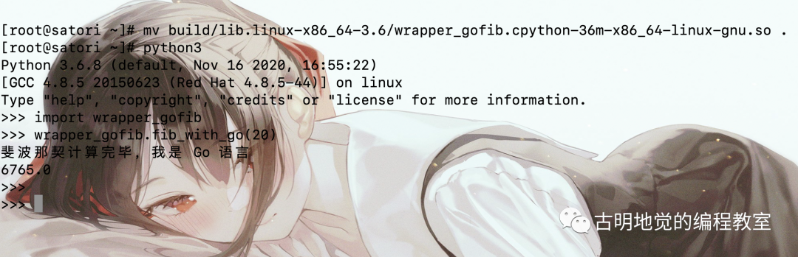
此时我们就将 Cython, Go, C, Python 结合在一起了，当然你还可以再加入 C 源文件、或者 C 生成的库文件，怎么样，是不是很好玩呢。如果用 Go 写了一个程序，那么就可以通过编译成静态库的方式，嵌入到 Cython 中，然后再生成扩展模块交给 Python 调用。之前我本人也将 Python 和 Go 结合起来使用过，只不过当时是编译成的动态库，然后通过 Python 的 ctypes 模块调用的。
注意：无论是这里的静态库还是一会要说的动态库，我们举的例子都会比较简单。但实际上我们使用 CGO 的话，内部是可以编写非常复杂的逻辑的，因此我们需要注意 Go 和 C 之间内存模型的差异。因为 Python 和 Go 之间是无法直接结合的，但是它们都可以和 C 勾搭上，所以需要 C 在这两者之间搭一座桥。
但不同语言的内存模型是不同的，因此当跨语言操作同一块内存时需要格外小心，比如 Go 的导出函数不能返回 Go 的指针等等。所以里面的细节还是比较多的，当然我们这里的主角是 Cython，因此 Go 就不做过多介绍了。
29.6 Cython 和动态库结合
然后是 Cython 和 动态库结合，我们还用刚才的 go_fib.go，而 Go 生成动态库的命令如下：
go build -buildmode=c-shared -o 动态库文件 go源文件
[root@satori ~]# go build -buildmode=c-shared -o libfib.so go_fib.go
动态库的话我们只需要生成 libfib.so 即可，然后其它地方不做任何改动，直接执行 python3 setup.py build 生成扩展模块，因为加载动态库和加载静态库的逻辑是一样的。而我们的动态库和刚才的静态库的名字也保持一致，所以整体不需要做任何改动。
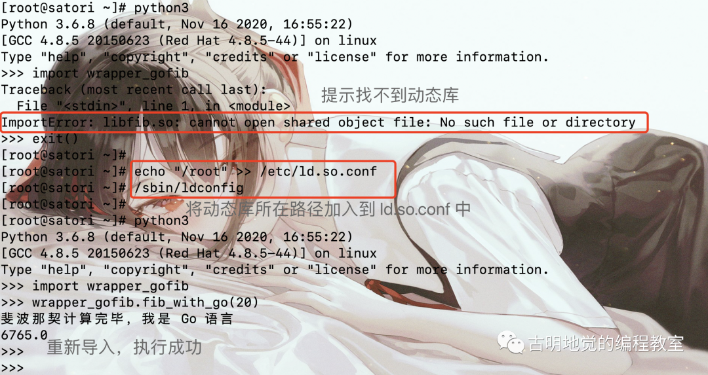
整体效果和 C 使用动态库的表现是一致的，仍然优先寻找动态库，并且还要将动态库所在路径加入到 ld.so.conf 中。如果在动态库和静态库同时存在的情况下，想使用静态库的话，那么可以这么做：
ext = Extension(
name="wrapper_gofib",
sources=["wrapper_gofib.pyx"],
# 库的搜索路径
library_dirs=["."],
# libraries 参数可以同时指定动态库和静态库
# 但优先寻找动态库，动态库不存在则找静态库
# 如果就想链接静态库，那么可以使用 extra_objects 参数
# 该参数可以链接任意的对象，我们只需要将路径写上去即可
# 注意：此时是文件路径，需要写 libfib.a，不能只写 fib
extra_objects=["./libfib.a"],
include_dirs=["."])
当然我们这里使用 Go 来生成库文件实际上有点刻意了，因为主要是想展现 Cython 的强大之处。但其实使用 C 来生成库文件也是一样的，只不过用 Go 写代码肯定比用 C 写代码舒服，毕竟 Go 是一门带垃圾回收的高级语言。
至于 Go 和 C 之间怎么转，那就不需要我们来操心了，Go 编译器会为我们处理好一切。正如我们此刻学习 Cython 一样，用 Cython 写扩展肯定比用 C 写扩展舒服，但 Cython 代码同样也要转成 C 的代码，至于怎么转，也不需要我们来操心，Cython 编译器会为我们处理好一切。
以上就是 Cython 和库文件（静态库、动态库）之间的结合，注：以上 Cython 引入库文件的相关操作都是基于 Linux，至于 Windows 如何引入库文件可以自己试一下。
29.7 小结
在最开始的时候我们就说过，其实可以将 Cython 当成两个身份来看待：如果编译成 C，那么可以看作是 Cython 的 '阴'；如果作为胶水连接 C 或者 C++，那么可以看作是 Cython 的 '阳'。
但其实两者之间并没有严格区分，一旦在 cdef extern from 块中声明了 C 函数，那么就可以像 Cython 本身定义的常规 cdef 函数一样使用。并且对外而言，在使用 Python 调用时，没有人知道里面的方法是我们自己辛辛苦苦编写的，还是调用了其它已经存在的。
这次我们介绍了 Cython 的一些接口特性和使用方法，感受一下它包装 C 库是多么的方便。而 C 已经存在很多年了，拥有大量经典的库，通过 Cython 我们可以很轻松地调用它们。
当然不只是 C，Cython 还可以调用同样被广泛使用的 C++ 中的库函数，有兴趣可以自己了解一下。
30. 解密缓冲区协议
作者：古明地觉
公众号：古明地觉的编程教室
公众号二维码：
Cython 的两个优秀的品质就是它的广度和成熟度，可以编译所有的 Python 代码，并且将 C 的速度引入到了 Python 中，此外还能轻松的和 C、C++ 集成。而本节的任务就是完善 Cython 的功能，并介绍 Cython 的阵列特性，比如：对 Numpy 数组的深入支持。
我们已经知道，Cython 可以很好地支持列表、元组、字典等内置容器，这些容器非常容易使用，可以包含指向任意 Python 对象的变量，并且对 Python 对象的查找、分配、检索都进行了高度的优化。
但对于同质容器（只包含一种固定的类型），可以在存储开销和性能方面做得更好，比如 Numpy 的数组。Numpy 的数组就有一个准确的类型，这样的话，在存储和计算的时候可以表现的更加优秀，我们举个例子：
import numpy as np
# 创建一个整型数组
# 可以指定 dtype 为: int, int8, int16, int32, int64
# 或者: uint, uint8, uint16, uint32, uint64
arr1 = np.zeros((3, 3), dtype="uint32")
print(arr1)
"""
[[0 0 0]
[0 0 0]
[0 0 0]]
"""
try:
arr1[0, 0] = "xx"
except Exception as e:
print(e)
"""
invalid literal for int() with base 10: 'xx'
"""
# 我们看到报错了，因为已经规定了 arr 是一个整型数组
# 那么存储和计算都是按照整型来处理的
# 既然是整型数组，那么赋值一个字符串是不允许的
arr1[0, 0] = -123
print(arr1)
"""
[[4294967173 0 0]
[ 0 0 0]
[ 0 0 0]]
"""
# 因为是 uint32, 只能存储正整数
# 所以结果是 2 ** 32 - 123
print((2 << 31) - 123) # 4294967173
# 创建一个浮点数组, 可以指定 dtype 为如下:
# float, float16, float32, float64
arr2 = np.zeros((3, 3), dtype="float")
print(arr2)
"""
[[0. 0. 0.]
[0. 0. 0.]
[0. 0. 0.]]
"""
# 创建一个字符串数组, dtype 可以为: U, str
# 如果是 U, 那么加上一个数值, 比如: U3, 表示最多存储 3 个字符。
# 并且还可以通过 <U 或者 >U 的方式来指定是小端存储还是大端存储
arr3 = np.zeros((3, 3), dtype="U3")
print(arr3)
"""
[['' '' '']
['' '' '']
['' '' '']]
"""
arr3[0, 0] = "古明地觉"
print(arr3)
"""
[['古明地' '' '']
['' '' '']
['' '' '']]
"""
# 我们看到被截断了，并且截断是按照字符来的，不是按照字节
# 创建一个元素指向 Python 对象的数组
# 注意：没有 tuple、list、dict 等类型
# 特定的类型只有整型、浮点型、字符串
# 至于其它的类型统统用 object 表示，可以指定 dtype="O"
arr4 = np.zeros((3, 3), dtype="O")
print(arr4)
"""
[[0 0 0]
[0 0 0]
[0 0 0]]
"""
# 虽然打印的也是 0，但它是一个 object 类型
print(arr4.dtype) # object
# 也可以使用 empty 创建
print(np.empty((3, 3), dtype="O"))
"""
[[None None None]
[None None None]
[None None None]]
"""
实现同质容器是通过缓冲区的方式，它允许我们将连续的简单数据使用单个数据类型表示，支持缓冲区协议的 Numpy 数组在 Python 中则是使用最广泛的数组，所以 Numpy 数组的高性能是有目共睹的。
有效地使用缓冲区通常是从 Cython 代码中获得 C 性能的关键，而幸运的是，Cython 使处理缓冲区变得非常容易，它对缓冲区协议和 Numpy 数组有着一流的支持。
30.1 什么是缓冲区协议？
下面来说一下缓冲区协议，缓冲区协议是一个 C 级协议，它定义了一个具有数据缓冲区和元数据的 C 级结构体，并用它来描述缓冲区的布局、数据类型和读写权限，并且还定义了支持协议的对象所必须实现的 API。
而实现了该协议的 Python 对象之间可以向彼此暴露自身的原始字节数组，这在科学计算中非常有用，因为在科学计算中我们经常会使用诸如 Numpy 之类的包来存储和操作大型数组，因为要对数据做各种各样的变换，所以难免要涉及到数组的拷贝。而使用缓冲区协议，那么数组之间就可以不用拷贝了，而是共享同一份数据缓冲区，这些数组都可以看成是该缓冲区的一个视图，那么也意味着操作任何一个数组都会影响其它数组。
那么都有哪些类型实现了缓冲区协议呢？
-
Numpy 中的 ndarray：Python 中最知名、使用最广泛的 Numpy 包里面有一个 ndarray 对象，它是一个支持缓冲区协议的有效 Python 缓冲区。
-
Python2 中的 str：Python2 中的 str 也实现了该协议，但是 Python3 的 str 则没有。
-
Python3 中的 bytes 和 bytearray：既然 Python2 中的 str 实现了该协议，那么代表 Python3 的 bytes 也实现了，当然还有 bytearray。
-
标准库 array 中的 array：Python 标准库中有一个 array 模块，里面的 array 也实现了该协议，但是我们用的不多。
-
标准库 ctypes 中的 array：这个我们用的也不多。
-
其它的第三方数据类型：比如第三方库 PIL，用于处理图片的，将图片读取进来得到的对象也实现了缓冲区协议。当然这个很好理解，因为它们读取进来可以直接转成 Numpy 的 ndarray。
缓冲区协议最重要的特性就是它能以不同的方式来表示相同的底层数组，它允许 Numpy 数组、几个 Python 的内置类型、标准库的数组之间共享相同的数据，而无需再拷贝。当然 Cython 级别的数组也是可以的，并且使用 Cython，我们还可以轻松地扩展缓冲区协议去处理来自外部库的数据（后面说）。
我们举个例子，看看不同类型的数据之间如何共享内存：
import array
import numpy as np
"""
'b' signed integer
'B' unsigned integer
'u' Unicode character
'h' signed short
'H' unsigned short
'i' signed int
'I' unsigned int
'l' signed long
'L' unsigned long
'q' signed long long
'Q' unsigned long long
'f' float
'd' double
"""
arr = array.array("i", range(6))
print(arr)
"""
array('i', [0, 1, 2, 3, 4, 5])
"""
# array（数组）是标准库 array 中提供的数据结构，它不是 Python 内置的
# 数组不同于列表，因为数组里面存储的都是连续的整数块
# 它的数据存储要比列表紧凑得多，因此一些操作也可以更快的执行
# 基于 arr 创建 Numpy 的数组
np_arr = np.asarray(arr)
print(np_arr)
"""
[0 1 2 3 4 5]
"""
# 修改 Numpy 数组
np_arr[0] = 123
# arr 也被改变了，因为它们共享内存
print(arr)
"""
array('i', [123, 1, 2, 3, 4, 5])
"""
Python 提供的数组使用的不是特别多，而 Numpy 的数组使用的则是非常广泛，并且支持的操作非常丰富。而这两种数组都实现了缓冲区协议，因此可以共享同一份数据缓冲区，它们在转化的时候是不用复制原始数据的。所以 np_arr 在将第一个元素修改之后，打印 arr 也发生了变化。
然后我们上面创建数组使用的是 np.asarray，它等价于不拷贝的 np.array：
import array
import numpy as np
arr = array.array("i", range(6))
# np.array 内部有一个 copy 参数，默认是 True
# 也就是会将原始数组拷贝一份
np_arr1 = np.array(arr)
np_arr1[0] = 123
# 此时 arr 是没有变化的，因为操作的不是同一个数组
print(arr) # array('i', [0, 1, 2, 3, 4, 5])
# 不进行拷贝，则共享缓冲区，等价于 asarray
np_arr2 = np.array(arr, copy=False)
np_arr2[0] = 123
# 因此结果变了
print(arr) # array('i', [123, 1, 2, 3, 4, 5])
问题来了，如果我们将 array 换成 list 的话会怎么样呢？
import numpy as np
s = [1, 2, 3]
np_arr = np.asarray(s)
np_arr[0] = 123
print(s) # [1, 2, 3]
因为列表不支持、或者说没有实现缓冲区协议，所以 Numpy 没办法与之共享数据缓冲区，因而只能将数据拷贝一份。
可能有人觉得以现如今的硬件来说，根本不需要考虑内存占用方面的问题，但即便如此，共享内存也是非常有必要的。因为在科学计算中，大部分的经典算法都是采用编译型语言实现的，像我们熟知的 scipy 本质上就是基于 NetLib 实现的一些包装器，NetLib 才是负责提供大量高效算法的工具箱，而这些高效算法几乎都是采用 Fortran 和 C 编写的。Python 能够和这些编译库（NetLib）共享本地数据对于科学计算而言非常重要，这也是 Numpy 被开发的一个重要原因，更是缓冲区协议被提出、并添加到 Python 中的原因。
在这里我们提一下 PyPy，我们知道它是用 CPython 编写的 Python 解释器，它的速度要比 Python 快很多，但是对于使用 Python 进行科学计算的人来说却反而没什么吸引力。原因是在科学计算时所使用的算法实际上都是采用 Fortran 和 C 等语言编写的、并被编译成库的形式，Python 只是负责对这些库进行包装、提供一个友好的接口，因此这意味着 Python 能够与之进行很好的交互。而 PyPy 还无法做到这一点，因此现在用的解释器基本都是 CPython，至于 PyPy 引入 JIT（即时编译）所带来的性能收益实际上用处不大。
Python 能成为有效的科学计算平台，主要得益于缓冲区协议的实现和 Numpy。
30.2 缓冲区协议长什么样子？
Python 的缓冲区协议本质上是一个结构体，它为多维数组定义了一个非常灵活的接口，我们看一下底层实现，源码位于 object.h 中。
typedef struct bufferinfo {
void *buf;
PyObject *obj;
Py_ssize_t len;
Py_ssize_t itemsize;
int readonly;
int ndim;
char *format;
Py_ssize_t *shape;
Py_ssize_t *strides;
Py_ssize_t *suboffsets;
void *internal;
} Py_buffer;
以上就是缓冲区协议的底层定义，我们来解释一下里面的成员都代表什么含义，至于如何实现一会再说。
void *buf
实现了缓冲区协议的对象的内部缓冲区（指针），数据都存储在缓冲区当中，可以被多个不同的对象共享，只要这些对象都实现了缓冲区协议。
PyObject *obj
实现了缓冲区协议的对象（指针），比如 ndarray 对象、bytes 对象等等。
Py_ssize_t len
不要被名字误导了，这里表示缓冲区的总大小。比如一个 shape 为 (3, 4, 5) 的数组，存储的元素是 8 字节的 int64，那么这个 len 就等于 3 * 4 * 5 * 8。
Py_ssize_t itemsize
缓冲区存储的元素都是同质的，每一个元素都占用相同的字节，而 itemsize 就表示每个元素所占的大小。比如缓冲区存储的元素是 int64，那么 itemsize 就是 8。
int readonly
缓冲区是否是只读的，为 0 表示可读写，为 1 表示只读。
int ndim
维度，比如 shape 为 (3, 4, 5) 的数组，那么 ndim 就是 3。注意：如果 ndim 为 0，表示 buf 指向的缓冲区代表的只是一个标量，这种情况下，字段 shape, strides, suboffsets 都必须为 NULL。
而且维度最大不超过 64，但在 Numpy 里面支持的最大维度是 32。
char *format
格式化字符，用于描述缓冲区元素的类型，和 Python 标准库 struct 使用的 format 是一致的。比如：i 表示 C 的 int，L 表示 C 的 unsigned long 等等。
Py_ssize_t *shape
这个很好理解，等同于 Numpy array 的 shape，只不过在 C 里面是一个数组。
Py_ssize_t *strides
维度为 ndim 的数组，里面的值表示在某个维度下，从一个元素到下一个元素所需要跳跃的字节数。举个栗子，假设有一个 shape 为 (10, 20, 30) 的数组，里面的元素是 int64，那么 strides 就是 (4800, 240, 8)。
因为有三个维度：对于第一个维度而言，每一个元素都是 (20, 30) 的二维数组，所以当前元素和下一个元素的地址差了 20 * 30 * 8 = 4800 个字节；对于第二个维度而言，每一个元素都是 (30,) 的一维数组，所以当前元素和下一个元素的地址差了 30 * 8 = 240 个字节；对于第三个维度而言，每一个元素都是一个标量，所以当前元素和下一个元素的地址差了 8 个字节。
根据 strides 我们可以引出一个概念：full strided array，直接解释的话比较费劲，我们用代码说明。
import numpy as np
arr1 = np.array(range(10), dtype="int64")
print(arr1.strides) # (8,)
arr2 = arr1[:: 2]
print(arr2.strides) # (16,)
显然 arr1 和 arr2 是共享缓冲区的，也就是说它们底层的 buf 指向的是同一块内存，但它们的 strides 不同。因此 arr1 从一个元素到下一个元素需要跳跃 8 字节，但是 arr2 则是跳跃 16 个字节，否则就无法实现步长为 2 了。
假设把步长从 2 改成 3，那么 arr2 的 strides 显然就变成了 (24,)，所以此刻你应该对 Numpy 数组有更深的认识了。使用切片，本质上是通过改变 strides 来实现跨步访问，但仍然共享同一个缓冲区。
但 arr2 只有一个维度，所以 strides 的元素个数为 1，里面的 16 表示数组 arr2 从一个元素到下一个元素所跳跃的字节数。但是问题来了，arr2 里面的元素大小只有 8 字节，所以像这种元素大小和对应的 strides 不相等的数组，我们称之为 full strided 数组。
对于多维数组也是一样，我们举个例子：
import numpy as np
arr = np.ones((10, 20, 30), dtype="int64")
print(arr.strides) # (4800, 240, 8)
arr2 = arr[:: 2]
# arr2 是 full strided，因为在第一个维度中
# 一个元素到下一个元素应该需要 4800 个字节
# 但是 arr2 的 strides 的第一个元素是 9600
# 因为不相等，所以是 full strided
print(arr2.strides) # (9600, 240, 8)
arr3 = arr[:, :: 2]
# arr3 是 full strided，因为在第二个维度中
# 一个元素到下一个元素应该需要 240 个字节
# 但是 arr3 的 strides 的第二个元素是 480，
# 因为不相等，所以是 full strided
print(arr3.strides) # (4800, 480, 8)
arr4 = arr[:, :, :: 2]
# arr4 是 full strided，因为在第三个维度中
# 一个元素到下一个元素应该需要 8 个字节
# 但是 arr4 的 strides 的第三个元素是 16
# 因为不相等，所以是 full strided
print(arr4.strides) # (4800, 240, 16)
说白了，只要任意维度出现了数组的跨步访问、且步长不为 1，那么这个数组就是 full strided 数组。之所以要说这个 full strided，是因为后面会用到。
30.3 代码演示缓冲区协议
再来看一下缓冲区协议长什么样子？
typedef struct bufferinfo {
void *buf;
PyObject *obj;
Py_ssize_t len;
Py_ssize_t itemsize;
int readonly;
int ndim;
char *format;
Py_ssize_t *shape;
Py_ssize_t *strides;
Py_ssize_t *suboffsets;
void *internal;
} Py_buffer;
Py_buffer 内部的 obj 指向了实现缓冲区协议的对象，内部的 buf 则指向了缓冲区本身。而缓冲区本质上就是一个一维数组，负责存储具体的数据，可以被任意多个对象共享。
像 Numpy 的数组，在拷贝的时候只会将 Py_buffer 拷贝一份，但是内部的 buf 成员指向的缓冲区则不会拷贝。
import numpy as np
# Py_buffer -> buf 指向了缓冲区
# Py_buffer -> shape 为 (6,)
arr1 = np.array([3, 9, 5, 7, 6, 8])
# 将 Py_buffer 拷贝一份
# 同时 Py_buffer -> shape 变成了 (2, 3)
# 但是 Py_buffer -> buf 指向的缓冲区没有拷贝
arr2 = arr1.reshape((2, 3))
# 然后在通过索引访问的时候
# 可以认为 Numpy 为其创建了虚拟的索引轴
# 由于 arr1 只有一个维度
# 那么 Numpy 会为其创建一个虚拟的索引轴
"""
arr1 = [3 9 5 7 6 8]:
index1: 0 1 2 3 4 5
buf: 3 9 5 7 6 8
"""
# arr2 有两个维度，shape 是 (2, 3)
# 那么 Numpy 会为其创建两个虚拟的索引轴
"""
arr2 = [[3 9 5]
[7 6 8]]:
index1: 0 0 0 1 1 1
index2: 0 1 2 0 1 2
buf: 3 9 5 7 6 8
"""
# 缓冲区中索引为 4 的元素被修改
arr2[1, 1] = 666
# 但由于 arr1 和 arr2 共享一个缓冲区
# 所以 print(arr1[4]) 也会打印 666
print(arr1[4]) # 666
所以缓冲区非常简单，它就是一个一维数组，由 buf 成员指向，而其它的成员则负责描述该如何使用这个缓冲区，可以理解为元信息。正如 Numpy 的数组，虽然多个数组底层共用一个缓冲区，数据也只有那一份，但是在 Numpy 的层面却可以表现出不同的维度，究其原因就是元信息不同。
Py_buffer 的实现，也是 Numpy 诞生的一个重要原因。另外，类型对象内部有一个 tp_as_buffer 成员，它是一个函数指针，在函数内部负责对 Py_buffer 进行初始化。如果实现了该成员，那么其实例对象便支持缓冲区协议。并且实现了缓冲区协议的对象，不会直接操作缓冲区，而是会借助于 Py_buffer。
相信你现在肯定明白 Py_buffer 存在的意义了，就是共享内存，实现了缓冲区协议的对象可以直接向彼此暴露对应的缓冲区，比如 bytes 对象和 ndarray 对象。
import numpy as np
# 缓冲区是 char 类型的一维数组:
# {'a', 'b', 'c', 'd', '\0'}
b = b"abcd"
# 直接共享底层的缓冲区
# 但是 Numpy 不知道如何使用这个缓冲区
# 所以我们必须显式地指定 dtype
# "S1" 表示按照单个字节来进行解析
arr1 = np.frombuffer(b, dtype="S1")
print(arr1) # [b'a' b'b' b'c' b'd']
# "S2" 表示按照两个字节来进行解析
arr2 = np.frombuffer(b, dtype="S2")
print(arr2) # [b'ab' b'cd']
# 那么问题来了，按照三个字节解析是否可行呢？
# 答案是不可行，因为缓冲区的大小不是 3 的整数倍
# 而 "S4" 显然是可以的
arr3 = np.frombuffer(b, dtype="S4")
print(arr3) # [b'abcd']
# 按照 int8 进行解析
arr4 = np.frombuffer(b, dtype="int8")
print(arr4) # [ 97 98 99 100]
# 按照 int16 进行解析
# 显然 97 98 会被解析成一个整数
# 99 100 会被解析成一个整数
"""
97 -> 01100001
98 -> 01100010
那么 97 98 组合起来就是 01100010_01100001
99 -> 01100011
100 -> 01100100
那么 99 100 组合起来就是 01100100_01100011
"""
print(0b01100010_01100001) # 25185
print(0b01100100_01100011) # 25699
print(
np.frombuffer(b, dtype="int16")
) # [25185 25699]
# 按照 int32 来解析，显然这 4 个 int8 表示一个 int32
print(
0b01100100_01100011_01100010_01100001
) #1684234849
print(
np.frombuffer(b, dtype="int32")
) # [1684234849]
怎么样，是不是有点神奇呢？相信你在使用 Numpy 的时候应该会有更加深刻的认识了，这就是缓冲区协议的威力。哪怕是不同的对象，只要都实现了缓冲区协议，那么彼此之间就可以暴露底层的缓冲区，从而实现共享内存。
所以 np.frombuffer 就是直接根据对象的缓冲区来创建数组，然后它底层的 buf 成员也指向这个缓冲区。但它不知道该如何解析这个缓冲区，所以我们需要显式地指定 dtype 来告诉它，相当于告诉它一些元信息。
那么问题来了，我们能不能修改缓冲区呢？
import numpy as np
b = b"abcd"
arr = np.frombuffer(b, dtype="S1")
try:
arr[0] = b'A'
except ValueError as e:
print(e)
"""
assignment destination is read-only
"""
答案是不可以的，因为原始的 bytes 对象不可修改，所以缓冲区是只读的。如果想修改的话，可以使用 bytearray。
import numpy as np
# 可以理解为可变的 bytes 对象
b = bytearray(b"abcd")
print(b) # bytearray(b'abcd')
# 修改 arr
arr = np.frombuffer(b, dtype="S1")
arr[0] = b'A'
# 再次打印
print(b) # bytearray(b'Abcd')
30.4 小结
到目前为止，我们就解释了什么是缓冲区协议，下面再来总结一下：
- 如果一个类型对象实现了 tp_as_buffer，那么它的实例对象便支持缓冲区协议；
- tp_as_buffer 是一个函数指针，指向的函数内部负责初始化 Py_buffer；
- Py_buffer 的 buf 成员指向的就是缓冲区，支持缓冲区协议的对象内部的数据都存在缓冲区里面，操作缓冲区数据都是通过 Py_buffer 操作的；
- 实现了缓冲区协议的多个对象可以共享同一个缓冲区，具体做法就是让内部的 buf 成员都指向同一个缓冲区。比如 Numpy 的数组进行切片的时候会得到新数组，而新数组和原数组是共享内存的，原因就是创建新数组的时候只是将 Py_buffer 拷贝了一份，但是 buf 成员指向的缓冲区却没有拷贝；
- 在共享缓冲区的时候，比如 np.frombuffer(obj)，会直接调用 obj 的类型对象的 tp_as_buffer 成员指向的函数，拿到 Py_buffer 实例的 buf 成员指向的缓冲区。但我们说 numpy 不知道该怎么解析这个缓冲区，所以还需要指定 dtype 参数；
- 缓冲区存在的最大意义就是共享内存，Numpy 的数组在切片的时候，只拷贝 Py_buffer 实例，至于 Py_buffer 里面的 buf 成员指向的缓冲区是不会拷贝的。比如数组有 100 万个元素，这些元素都存在缓冲区中，被 Py_buffer 里面的 buf 成员指向，拷贝的时候这 100 万个元素是不会拷贝的；
- Numpy 数组的维度、shape，是借助于 Py_buffer 中的元信息体现的，至于存储元素的缓冲区，永远是一个一维数组，由 buf 成员指向。只是维度、shape，以及 strides 不同，访问缓冲区元素的方式也不同。但还是那句话，缓冲区本身很单纯，就是一个一维数组。
31. 实现缓冲区协议
作者：古明地觉
公众号：古明地觉的编程教室
公众号二维码：
了解完缓冲区协议之后，我们就来手动实现一下。而实现方式可以使用原生的 Python/C API，也可以使用 Cython，但前者实现起来会非常麻烦，牵扯的知识也非常多，而 Cython 则简化了这一点。
我们来分别介绍一下这两种方式。
31.1 使用 Cython 实现缓冲区协议
Cython 对缓冲区协议也有着强大的支持，我们只需要定义一个魔法方法即可实现缓冲区协议。
from cpython cimport Py_buffer
from cpython.mem cimport PyMem_Malloc, PyMem_Free
cdef class Matrix:
cdef Py_ssize_t shape[2] # 数组的形状
cdef Py_ssize_t strides[2] # 数组的 stride
cdef float *array
def __cinit__(self, row, col):
self.shape[0] = <Py_ssize_t> row
self.shape[1] = <Py_ssize_t> col
self.strides[1] = sizeof(float)
self.strides[0] = self.strides[1] * self.shape[1]
self.array = <float *> PyMem_Malloc(
self.shape[0] * self.shape[1] * sizeof(float))
def set_item_by_index(self, int index, float value):
"""留一个接口，用来设置元素"""
if index >= self.shape[0] * self.shape[1] or index < 0:
raise ValueError("索引无效")
self.array[index] = value
def __getbuffer__(self, Py_buffer *buffer, int flags):
"""自定义缓冲区需要实现 __getbuffer__ 方法"""
cdef int i;
for i in range(self.shape[0] * self.shape[1]):
self.array[i] = float(i)
# 缓冲区，这里是就是 array 本身，但是需要转成 void *
buffer.buf = <void *> self.array
# 实现缓冲区协议的对象，显然是 selfself.shape[0] * self.shape[1]
buffer.obj = self
# 缓冲区的总大小
buffer.len = self.shape[0] * self.shape[1] * sizeof(float)
# 读写权限，这里让缓冲区可读写
buffer.readonly = 0
# 缓冲区每个元素的大小
buffer.itemsize = sizeof(float)
# 元素类型，"f" 表示 float
buffer.format = "f"
# 该对象的维度
buffer.ndim = 2
# shape
buffer.shape = self.shape
# strides
buffer.strides = self.strides
# 直接设置为 NULL 即可
buffer.suboffsets = NULL
def dealloc(self):
if self.array != NULL:
PyMem_Free(<void *> self.array)
在 Cython 中我们只需要实现一个相应的魔法方法即可，真的是非常方便，当然我们为了验证是否共享内存，专门定义了一个方法。
import pyximport
pyximport.install(language_level=3)
import cython_test
import numpy as np
m = cython_test.Matrix(5, 4)
# 基于 m 创建 Numpy 数组
np_m = np.asarray(m)
# m 和 np_m 是共享内存的
print(m)
"""
<cython_test.Matrix object at 0x7f96ba55a3f0>
"""
print(np_m)
"""
[[ 0. 1. 2. 3.]
[ 4. 5. 6. 7.]
[ 8. 9. 10. 11.]
[12. 13. 14. 15.]
[16. 17. 18. 19.]]
"""
# 通过 m 修改元素，然后打印 np_m
m.set_item_by_index(13, 666.666)
print(np_m)
"""
[[ 0. 1. 2. 3. ]
[ 4. 5. 6. 7. ]
[ 8. 9. 10. 11. ]
[ 12. 666.666 14. 15. ]
[ 16. 17. 18. 19. ]]
"""
结果没有任何问题，以上就是 Cython 实现缓冲区协议，其实在日常工作中我们不需要直接面对它，但了解一下总是好的。
31.2 使用 Python/C API 实现缓冲区协议
注：通过原生的 Python/C API 实现缓冲区协议，这个过程非常麻烦，因为这需要你熟悉解释器源代码，以及这些 API 本身。我们的重点是 Cython，只要知道 Cython 如何实现缓冲区协议即可。至于原生的 Python/C API，感兴趣的话可以看一看，不感兴趣的话跳过即可。
下面编写 C 源文件，文件名为 py_array.c。
#include <stdio.h>
#include <stdlib.h>
#include <Python.h>
// 定义一个一维的数组
typedef struct {
int *arr;
int length;
} Array;
// 初始化函数
void initial_Array(Array *array, int length) {
array->length = length;
if (length == 0) {
array->arr = NULL;
} else {
array->arr = (int *) malloc(sizeof(int) * length);
for (int i = 0; i < length; i++) {
array->arr[i] = i;
}
}
}
// 释放内存
void dealloc_Array(Array *array) {
if (array->arr != NULL) free(array->arr);
array->arr = NULL;
}
// Python 的对象在 C 中都嵌套了 PyObject
typedef struct {
PyObject_HEAD
Array array;
} PyArray;
// 初始化 __init__ 函数
static int
PyArray_init(PyArray *self, PyObject *args, PyObject *kwargs) {
if (self->array.arr != NULL) {
dealloc_Array(&self->array);
}
int length = 0;
static char *kwlist[] = {"length", NULL};
if (!PyArg_ParseTupleAndKeywords(args, kwargs, "|i", kwlist, &length)) {
return -1;
}
// 因为给 Python 调用，所以这里额外对 length 进行一下检测
if (length < 0) {
PyErr_SetString(PyExc_ValueError, "argument 'length' can not be negative");
return -1;
}
initial_Array(&self->array, length);
return 0;
}
// 析构函数
static void
PyArray_dealloc(PyArray *self) {
dealloc_Array(&self->array);
Py_TYPE(self)->tp_free((PyObject *) self);
}
static PyObject *
PyArray_repr(PyArray *self) {
//转成列表打印
PyObject *list = PyList_New(self->array.length);
Py_ssize_t i;
for (i=0; i<self->array.length; i++){
PyList_SetItem(list, i, PyLong_FromLong(*(self->array.arr + i)));
}
PyObject *ret = PyObject_Str(list);
Py_DECREF(list);
return ret;
}
// 实现缓冲区协议
static int
PyArray_getbuffer(PyObject *obj, Py_buffer *view, int flags) {
if (view == NULL) {
PyErr_SetString(PyExc_ValueError,
"NULL view in getbuffer");
return -1;
}
PyArray* self = (PyArray *)obj;
view->obj = (PyObject*)self;
view->buf = (void*)self->array.arr;
view->len = self->array.length * sizeof(int);
view->readonly = 0;
view->itemsize = sizeof(int);
view->format = "i";
view->ndim = 1;
view->shape = (Py_ssize_t *) &self->array.length;
view->strides = &view->itemsize;
view->suboffsets = NULL;
view->internal = NULL;
Py_INCREF(self);
return 0;
}
// 将上面的函数放入到 PyBufferProcs 结构体中
static PyBufferProcs PyArray_as_buffer = {
(getbufferproc)PyArray_getbuffer,
(releasebufferproc)0
};
static PyTypeObject PyArrayType = {
PyVarObject_HEAD_INIT(NULL, 0)
"py_array.PyArray",
sizeof(PyArray),
0,
(destructor) PyArray_dealloc,
0,
0, /* tp_getattr */
0, /* tp_setattr */
0, /* tp_reserved */
(reprfunc)PyArray_repr, /* tp_repr */
0, /* tp_as_number */
0, /* tp_as_sequence */
0, /* tp_as_mapping */
0, /* tp_hash */
0, /* tp_call */
0, /* tp_str */
0, /* tp_getattro */
0, /* tp_setattro */
// 指定 tp_as_buffer
&PyArray_as_buffer, /* tp_as_buffer */
Py_TPFLAGS_DEFAULT, /* tp_flags */
"PyArray object", /* tp_doc */
0, /* tp_traverse */
0, /* tp_clear */
0, /* tp_richcompare */
0, /* tp_weaklistoffset */
0, /* tp_iter */
0, /* tp_iternext */
0, /* tp_methods */
0, /* tp_members */
0, /* tp_getset */
0, /* tp_base */
0, /* tp_dict */
0, /* tp_descr_get */
0, /* tp_descr_set */
0, /* tp_dictoffset */
(initproc) PyArray_init, /* tp_init */
};
static PyModuleDef py_array_module = {
PyModuleDef_HEAD_INIT,
"py_array",
"this is a module named py_array",
-1,
0,
NULL,
NULL,
NULL,
NULL
};
PyMODINIT_FUNC
PyInit_py_array(void) {
PyObject *m;
PyArrayType.tp_new = PyType_GenericNew;
if (PyType_Ready(&PyArrayType) < 0) return NULL;
m = PyModule_Create(&py_array_module);
if (m == NULL) return NULL;
Py_XINCREF(&PyArrayType);
PyModule_AddObject(m, "PyArray",
(PyObject *) &PyArrayType);
return m;
}
现在相信你一定能体会到为什么要有 Cython 存在，因为写原生的 Python/C API 太痛苦了，而且为了简便我们这里使用的是一维数组，但即便如此，也已经很麻烦了。
我们编译成扩展，首先编写 setup.py：
from distutils.core import setup, Extension
from Cython.Build import cythonize
ext = [Extension("py_array",
sources=["py_array.c"])]
setup(ext_modules=cythonize(ext, language_level=3))
执行 python setup.py build 生成扩展模块，然后我们来导入它。
import numpy as np
import py_array
print(py_array)
"""
<module 'py_array' from ..\\py_array.cp38-win_amd64.pyd'>
"""
arr = py_array.PyArray(5)
print(arr)
"""
[0, 1, 2, 3, 4]
"""
np_arr = np.asarray(arr)
print(np_arr)
"""
[0 1 2 3 4]
"""
# 两者也是共享内存
np_arr[0] = 123
print(arr)
print(np_arr)
"""
[123, 1, 2, 3, 4]
[123 1 2 3 4]
"""
显然此时万事大吉了，因为实现了缓冲区协议，Numpy 知道了缓冲区数据，因此会在此基础之上建一个 view，并且 array 和 np_arr 是共享内存的。
因此核心就在于对缓冲区协议的理解，它本质上就是一个结构体，内部的成员描述了缓冲区数据的所有信息。而我们只需要定义一个函数，然后根据数组初始化这些信息即可，最后构建 PyBufferProcs 实例作为 tp_as_buffer 成员的值。
31.3 小结
以上我们就介绍了如何通过原生的 Python/C API 和 Cython 实现缓冲区协议，通过两个例子的对比，我们算是体会到了 Cython 的难能可贵，对于想写扩展的人来说，Cython 无疑是一大福音。即使是缓冲区协议，Cython 也有着超一流的支持。
但说实话，缓冲区协议我们在工作中几乎不用手动实现，因为它还是比较原始和底层的，我们知道就好。而 Cython 在缓冲区协议的基础上提供了一种新的数据结构：内存视图，它屏蔽了缓冲区协议的具体细节，可以让我们在不和缓冲区协议直接打交道的情况下，使用缓冲区协议。关于内存视图，我们马上介绍。
32. 基于缓冲区协议的类型化 memoryview
作者：古明地觉
公众号：古明地觉的编程教室
公众号二维码：
32.1 memoryview
Python 有一个内置类型叫 memoryview（内存视图），它存在的唯一目的就是在 Python 级别表示 C 级的缓冲区（避免数据的复制）。我们可以向 memoryview 传递一个实现了缓冲区协议的对象（比如：bytes对象），来创建一个 memoryview 对象。
b = b"komeiji satori"
m = memoryview(b)
# 此时 m 和 b 之间是共享内存的
print(m) # <memory at 0x000001C3A54EFA00>
# 通过索引访问，得到的是一个整数
print(m[0], m[-1]) # 107 105
print(f"{m[0]:c}", f"{m[-1]:c}") # k i
# 还可以通过切片访问
# 得到的仍是一个 memoryview 对象
print(m[0: 2]) # <memory at 0x00000229D637F880>
print(m[0: 2][1], f"{m[0: 2][1]:c}") # 111 o
可以通过索引来访问，也可以通过切片来对 memoryview 进行任意截取，使用这种方式，灵活性就变得非常高。
问题来了，memoryview 对象能不能修改呢？答案是不能，因为 bytes 对象不可以修改，所以 memoryview 对象也不可以修改，也就是只读的。
b = b"komeiji satori"
m = memoryview(b)
print(m.readonly) # True
try:
m[0] = "K"
except Exception as e:
print(e)
"""
cannot modify read-only memory
"""
bytes 对应的缓冲区是不可以修改的，如果想修改，我们应该使用 bytearray。
b = bytearray(b"my name is satori")
m = memoryview(b)
# 此时 m 和 b 共享内存
print(b) # bytearray(b'my name is satori')
m[0] = ord("M")
print(b) # bytearray(b'My name is satori')
b[1] = ord("Y")
print(chr(m[1])) # Y
当然我们还可以传一个 Numpy 的 ndarray，只要是实现了缓冲区协议的对象，都可以传递到 memoryview 中。
import numpy as np
array = np.ones((10, 20, 30))
mv = memoryview(array)
# 查看维度
print(mv.ndim) # 3
# 查看 shape
print(mv.shape) # (10, 20, 30)
# strides 属性表示某个维度中
# 一个元素和下一个元素之间差了多少个字节
print(mv.strides) # (4800, 240, 8)
# 查看缓冲区每个元素的大小
print(mv.itemsize) # 8
# 查看缓冲区占用的字节数
# 等于 itemsize * 元素的个数
print(mv.nbytes) # 48000
# 查看缓冲区的元素类型
print(mv.format) # d
# 缓冲区是否只读
print(mv.readonly) # False
# 实现了缓冲区协议的对象，显然这里就是 array 本身
print(mv.obj is array) # True
# 基于当前 memoryview 创建一个新的 memoryview
# 但缓冲区是只读的
print(mv.toreadonly().readonly) # True
# 将缓冲区转成列表
mv = memoryview(b"abc")
print(mv.tolist()) # [97, 98, 99]
# 将缓冲区的内容转成 bytes 对象
mv = memoryview(np.array([[1, 2], [3, 4]], dtype="int8"))
# 虽然这里的 array 是二维的，但缓冲区永远是一个一维数组
print(mv.tobytes()) # b'\x01\x02\x03\x04'
# 还能以16进制格式打印
print(mv.hex()) # 01020304
结构化数据也是支持的，首先我们来创建一个 Numpy 的 dtype，其中 name 和 age 的类型分别是 unicode 和 int8。
import numpy as np
dt = np.dtype([("name", "U"), ("age", "int8")])
print(dt)
"""
[('name', '<U'), ('age', 'i1')]
"""
print(np.empty(5, dtype=dt))
"""
[('', 0) ('', 0) ('', 0) ('', 0) ('', 0)]
"""
structured_mv = memoryview(np.empty(5, dtype=dt))
print(structured_mv.format)
"""
T{=0w:name:b:age:}
"""
# 这里的 format(格式化字符串) 来自标准库 struct 的规范
# 对于结构化类型来说是相当神秘的，读起来也让人头疼
# 所以我们将 memoryview 的格式化字符串的细节留给官方文档吧
# 我们不需要与它们直接打交道
以上就是 memoryview 的基本用法，那么问题来了，memoryview 对象和缓冲区如何转换到 Cython 中呢？考虑到 Cython 是专门用来连接 Python 和 C 的，所以它一定非常适合在 C 级别使用 memoryview 对象和缓冲区协议。
32.2 类型化 memoryview
Cython 有一个 C 级类型：类型化 memoryview，它在概念上和 Python 的 memoryview 重叠、并且在其基础上展开，用于查看（共享）来自缓冲区对象的数据。
并且类型化 memoryview 是在 C 级别操作，所以它有着最小的 Python 开销，因此非常高效，而且比直接使用 C 级缓冲区更方便。此外类型化 memoryview 是为了和缓冲区一起工作而被设计的，因此它可以有效支持任何来自缓冲区的对象，从而允许在不复制的情况下共享缓冲区数据。
假设我们想在 Cython 中有效地处理一维数据的缓冲区，而不关心如何在 Python 级别创建数据，我们只是想以一种有效的方式访问它。
# 文件名：cython_test.pyx
def summer(double[:] numbers):
cdef double res = 0
cdef double number
# memoryview 对象可以像迭代器一样进行遍历
for number in numbers:
res += number
return res
double[:] numbers 声明了 numbers 是一个类型化 memoryview 对象，而 double 指定了该 memoryview 对象的基本类型，[:] 则表明这是一个一维的 memoryview 对象。
当我们调用 summer 函数时，会传入一个 Python 对象，并将该对象隐式地分配给参数 numbers。我们可以提供一个 memoryview 对象，但如果提供的不是，那么看该对象是否支持缓冲区协议，如果支持缓冲区协议，那么根据内部的 C 级缓冲区构建 memoryview 对象；如果不支持缓冲区协议（没有提供相应的缓冲区），那么引发 ValueError。
import pyximport
pyximport.install(language_level=3)
import numpy as np
from cython_test import summer
# 必须传递支持缓冲区协议的对象
print(
summer(np.array([1.2, 2.3, 3.4, 4.5]))
) # 11.4
# 可以直接传入数组，也可以传入 memoryview 对象
print(
summer(memoryview(np.array([1.2, 2.3, 3.4, 4.5])))
) # 11.4
# 但传递列表是不行的，因为它不支持缓冲区协议
print(summer([1.2, 2.3, 3.4, 4.5]))
"""
def summer(double[:] numbers):
File "stringsource", line 658, in View.MemoryView.memoryview_cwrapper
File "stringsource", line 349, in View.MemoryView.memoryview.__cinit__
TypeError: a bytes-like object is required, not 'list'
"""
不过当我们在编译类型化 memoryview 对象时，Cython 本质上还是将它当成通用的迭代器来看待的，因为上面对 numbers 进行了遍历操作。所以还有优化空间，我们可以做得更好。
32.3 C 级访问类型化 memoryview 数据
类型化 memoryview 对象是为 C 风格的访问而设计的，没有开销，因此也可以用另一种方式去遍历 numbers。
def summer(double[:] numbers):
cdef double res = 0
cdef Py_ssize_t i, N
# 调用 shape 拿到其长度
N = numbers.shape[0]
for i in range(N):
res += numbers[i]
return res
这个版本会有更好的性能：对于百万元素的数组来说大约是 1 毫秒，因为我们用了一个有类型的整数去作为索引。而基于索引访问类型化 memoryview 时，Cython 会生成绕过 Python/C API 调用的代码，直接操作底层缓冲区，所以速度进一步提升。
但是还没有结束，我们还能继续优化。
32.4 用安全换取性能
每次访问 memoryview 对象时，Cython 都会检测索引是否越界。如果越界，那么 Cython 将引发一个 IndexError，而且 Cython 也允许我们像 Python 一样通过负数索引对 memoryview 对象进行访问。
对于上面的 summer 函数，我们在访问内部的 memoryview 对象之前就已经获取了它的元素个数，所以在遍历的时候永远不会越界。因此我们可以指示 Cython 关闭这些检查以获取更高的性能，而关闭检查可以使用上下文的方式：
from cython cimport boundscheck, wraparound
def summer(double[:] numbers):
cdef double res = 0
cdef int i, N
N = numbers.shape[0]
# 关闭检查
with boundscheck(False), wraparound(False):
for i in range(N):
res += numbers[i]
return res
基于索引访问时，解释器会判断索引是否越界，可以通过 boundscheck(False) 关闭检查；如果索引是负数，解释器会自动转成对应的正数索引，而 wraparound(False) 则表示禁用这一逻辑。
所以这两者组合起来就相当于告诉解释器：索引是合法的，不会越界、并且也不是负数，你不要再花时间去检查了，赶紧执行吧。
关闭检测之后，性能会有小幅度的提高（当然我们这里数据很少，看不出来）。但性能提升的后果就是我们必须确保索引不会越界、并且不可以使用负数索引，否则的话可能会导致段错误（非常危险，不仅程序崩溃，解释器也直接退出）。因此如果没有百分之百的把握，不要关闭检查。
当然我们上面是通过上下文管理的方式，关闭检查这一功能仅局限在 with 语句内部。我们还可以给函数打上装饰器，让整个函数内部关闭检查。
from cython cimport boundscheck, wraparound
@boundscheck(False)
@wraparound(False)
def summer(double[:] numbers):
cdef double res = 0
cdef int i, N
N = numbers.shape[0]
for i in range(N):
res += numbers[i]
return res
如果想关闭全局的边界检测，那么可以在文件开头使用注释的形式。
# cython: boundscheck=False
# cython: wraparound=False
所以关闭边界检测有多种方式，不同的方式对应不同的作用域。但是有了以上这些方法，我们的 summer 函数的性能，和 Numpy 中 sum 函数的性能便在一个数量级了。我们编译成扩展模块测试一下吧：

一个求和操作，Numpy 用时 203 微秒，Cython 用时 980 微秒，内置函数 sum 用时 82 毫秒。可以看到，我们自己实现的 summer 函数虽然没有 Numpy 的 sum 函数那么厉害，但至少在同一水平线上，反正都甩开内置函数 sum 一条街。
那么到目前为止，我们都了解到了什么呢？首先我们知道如何在 Cython 中声明一个简单的类型化 memoryview，以及对它进行索引、访问内部缓冲区的数据。并且还通过 boundscheck 和 wraparound 关闭边界检查，来生成更加高效的代码，但前提是我们能确保不会出现索引越界，否则还是不要关闭检查。因为为了安全，这些都是值得的。
32.5 类型化 memoryview 的声明
当我们声明一个类型化 memoryview 时，可以控制很多的属性。
1）元素类型
类型化 memoryview 的元素类型可以任意，在 Cython 中凡是能拿来做变量类型声明的都可以，因此也可以是 ctypedef 起的别名。
2）维度
类型化 memoryview 最多可以有 7 个维度，我们之前声明了一个一维的，使用的是 double[:] 这种形式，如果是 3 维，那么写成 double[:, :, :] 即可。当然类型不一定是 double，也可以是其它的。
3）C 和 Fortran 的连续性
通过指定数据打包约束的 C、Fortran 类型化内存视图是一个非常重要的特例，C 连续和 Fortran 连续都意味着缓冲区在内存中是连续的。但如果是多维度，那么 C 连续的 memoryview 的最后一个维度是连续的，而 Fortran 连续的 memoryview 的第一个维度是连续的。
如果可能的话，从性能的角度上来说，将数组声明为 C 或者 Fortran 连续是有利的，因为这使得 Cython 可以生成更快的代码。如果不是 C 连续，也不是 Fortran 连续，那么我们称之为 full strided。还记得这个 full strided 吗？我们在介绍缓冲区协议的时候说过的。
下面通过 Numpy 来对比一下 C 连续和 Fortran 连续的区别。
import numpy as np
arr = np.arange(16)
print(arr.reshape((4 , 4), order="C"))
# 默认是 C 连续, 即 order="C"
# 最后一个维度是连续的
"""
[[ 0 1 2 3]
[ 4 5 6 7]
[ 8 9 10 11]
[12 13 14 15]]
"""
print(arr.reshape((4, 4), order="F"))
# 如果 Fortran, 即 order="F"
# 那么第一个维度是连续的
"""
[[ 0 4 8 12]
[ 1 5 9 13]
[ 2 6 10 14]
[ 3 7 11 15]]
"""
# 所以 C 连续的数组在转置之后就会变成 Fortran 连续
4）直接或间接访问
直接访问是默认的，涵盖了几乎所有的情况，它指定对应的维度可以通过索引的方式直接访问底层数据。如果将某个维度指定为间接访问，那么底层缓冲区将存储一个指向数组剩余部分的指针，该指针必须在访问时解引用（因此是间接访问）。
而 Numpy 不支持间接访问，所以我们不使用这种访问规范，因此直接访问是默认的。事实上，官方一般设置为默认的都是最好的。
下面我们来举例说明：
import numpy as np
# 这是最灵活的声明方式
# 可以从任何一个元素类型为 int 的二维类型化 memoryview 对象中获取缓冲区
def func(int[:, :] ages):
# 直接打印是一个 memoryview 对象，这里转成 ndarray
# 这里说一句: Numpy 中数组的类型是 <class 'ndarray'>
# 但为了方便，有时会叫它 array
print(np.array(ages))
然后我们测试一下：
import pyximport
pyximport.install(language_level=3)
import numpy as np
import cython_test
# 这里类型要匹配，C 的 int 对应 numpy 的 int32
# 而 numpy 的整型默认是 int64，所以不指定 dtype 会类型不匹配
# 因为 memoryview 对类型的要求很严格
arr = np.random.randint(1, 10, (3, 3), dtype="int32")
cython_test.func(arr)
"""
[[7 9 2]
[9 6 9]
[9 9 1]]
"""
# 也可以对 arr 进行切片
cython_test.func(arr[1: 3, 0: 2])
"""
[[9 6]
[9 9]]
"""
所以当对数据进行索引的时候，Cython 生成的索引代码默认会兼容数据的跨步访问。什么意思呢？我们举个例子：
import numpy as np
import cython_test
arr = np.array([1, 2, 3, 4, 5, 6], dtype="int32")
arr2 = arr[:: 2]
print(arr) # [1 2 3 4 5 6]
print(arr2) # [1 3 5]
# arr 和 arr2 的元素类型都是 int32，占 4 字节
# 所以 arr[0] 和 arr[1] 之间差了 4 字节
# 但是 arr2[0] 和 arr2[1] 之间差了 8 字节
# 因为 arr2 是基于 arr[:: 2] 得到的，它们指向的是同一个缓冲区
# 数据存储在缓冲区中，只有一份
# 所以对于 arr2 而言，从当前元素到下一个元素要跨 8 字节
# 否则的话，arr2[1] 不可能访问到缓冲区里的第三个元素
# 而缓冲区每个元素占 4 字节，但 arr2 每次却要跨 8 字节
# 当两者不相等的时候，我们就说出现了跨步访问
# 而 arr2 也被称为 full strided 数组
# 至于 arr，它从当前元素到下一个元素需要跨 4 字节
# 和缓冲区的每个元素大小相等，所以 arr 被称为连续数组
# 注：为了解释方便，这里以一维数组为例，多维数组也是同理
不管是连续数组，还是 full strided 数组，Cython 的 memoryview 都是支持的（具备一定的灵活性）。但如果我们愿意用一些灵活性来换取速度的话，也就是强制数组必须是连续的，那么在交给类型化 memoryview 之后可以建立更有效的索引。
import numpy as np
def func(int[:, :: 1] ages):
print(np.array(ages))
声明一个 C 连续的类型化内存视图，需要对最后一个维度进行修改。前 n - 1 个维度不变，还是一个冒号，最后一个维度换成两个冒号并跟一个数字 1。
举个栗子：之前的声明是 double [:, :, :]，如果想要 C 连续，那么应该改成 double [:, :, :: 1] ，表示最后一个维度具有统一的步长。而 Numpy 的数组默认是 C 连续的。
import pyximport
pyximport.install(language_level=3)
import numpy as np
import cython_test
arr = np.random.randint(1, 10, (3, 3), dtype="int32")
cython_test.func(arr)
"""
[[5 2 2]
[8 8 4]
[2 3 2]]
"""
try:
cython_test.func(arr[1: 3, 0: 2])
except ValueError as e:
print(e)
"""
ndarray is not C-contiguous
"""
我们看到将 arr 传进去一切正常，但是将 arr 进行切片之后就不行了，因为切片之后得到数组不再连续，而是 full strided。
除了 C 连续之外，还有 Fortran 连续，如果声明 Fortran 连续的数组，那么第一个维度需要指定为 :: 1。
import numpy as np
def func(int[:: 1, :] ages):
print(np.array(ages))
测试一下：
import pyximport
pyximport.install(language_level=3)
import numpy as np
import cython_test
arr = np.random.randint(1, 10, (3, 3), dtype="int32")
try:
# 默认是 C 连续的
cython_test.func(arr)
except ValueError as e:
print(e)
"""
ndarray is not C-contiguous
"""
# 对 C 连续的数组进行转置，即可 Fortran 连续
cython_test.func(arr.T)
"""
[[2 5 7]
[2 3 2]
[3 3 5]]
"""
一个多维数组要么 C 连续，要么 Fortran 连续，但不可能同时既 C 连续又 Fortran 连续。不过一维数组特殊，一维数组可以同时保证 C 连续和 Fortran 连续。
import numpy as np
def func(int[::1] ages):
print(np.array(ages))
到目前为止，我们已经介绍了三种类型化内存视图，分别是：C 连续、Fortran 连续、full strided。常见的情况下，所有数组都是 C 连续的，这是最常见的内存布局。特别是在需要和外部的 C、C++ 库进行交互的时候，这种布局就显得尤为重要，可以提升速度。并且在传递了非 C 连续的数组时，比如：full strided 或者 Fortran 连续，将会引发一个 ValueError。
但如果你的程序是以 Fortran 为中心的，那么应该将数组声明为 Fortran 连续，这样会更好一些。
而 Numpy 也提供了两个转换函数，分别是 ascontiguousarray 和 asfortranarray，可以接收一个数组并返回一个 C 连续或者 Fortran 连续的数组。
import numpy as np
# Numpy 数组默认是 C 连续
arr = np.arange(16).reshape((4, 4))
print(arr.flags["C_CONTIGUOUS"]) # True
print(arr.flags["F_CONTIGUOUS"]) # False
# 转成 Fortran 连续
arr = np.asfortranarray(arr)
print(arr.flags["C_CONTIGUOUS"]) # False
print(arr.flags["F_CONTIGUOUS"]) # True
# 这两个函数底层都调用了 np.array
# 所以下面这种做法也是可以的
arr2 = np.arange(16).reshape((4, 4))
print(arr2.flags["F_CONTIGUOUS"]) # False
# 将 order 指定为 "F"，表示 Fortran 连续
# 并且里面还有一个 copy 参数, 默认为 True
# 表示拷贝数组的同时，还会拷贝底层的缓冲区
# 如果为 False，则表示不拷贝缓冲区
# 所以当指定 copy=True，新数组和老数组之间没有关系
# 指定 copy=False，由于两个数组共用一个缓冲区
# 那么任何一个进行了修改，都会影响另一个
arr2 = np.array(arr2, order="F", copy=False)
print(arr2.flags["F_CONTIGUOUS"]) # True
# 如果要将一个数组改成 C 连续或者 Fortran 连续, 推荐上面两种做法
# 另外, 我们说一维数组既是 C 连续又是 Fortran 连续
arr3 = np.arange(16)
print(arr3.flags["C_CONTIGUOUS"]) # True
print(arr3.flags["F_CONTIGUOUS"]) # True
注意：在 Cython 中声明 memoryview 为 C 连续或者 Fortran 连续时，虽然可以生成更快速的索引访问代码，但并不代表我们就一定要将其声明为 C 连续或者 Fortran 连续。因为这取决于接收的数组，如果接收的数组的连续性不确定时，应该采用 full strided 类型，也就是声明的时候不指定 :: 1。
因为一旦指定连续，不管是 C 连续、还是 Fortran 连续，那么你的数组必须要满足，否则就会报出我们之前出现的错误：ndarray is not C-contiguous 或者 ndarray is not Fortran contiguous。
这个时候就需要新创建一个 C 连续或者 Fortran 连续的数组，说白了就是将那些指定步长访问的数组对应的元素拷贝一份，建立一个新的连续数组。但这会带来额外的开销，甚至超过连续访问带来的性能收益。我们举个例子：
import numpy as np
arr = np.arange(16).reshape((4, 4))
arr2 = arr[:: 2]
arr2[0, 0] = 111
# arr 和 arr2 共享缓冲区，修改 arr2 会改变 arr
print(arr[0, 0]) # 111
# 但 arr2 不是 C 连续
# 因为它实现了跨步访问，所以不再具备连续性
print(arr2.flags["C_CONTIGUOUS"]) # False
# 还是以相同的方式创建，但是强行让 arr3 连续
# arr3 = np.ascontiguousarray(arr[:: 2])
# 或者使用 np.array 也行，两者等价
arr3 = np.array(arr[:: 2], order="C", copy=False)
print(arr3.flags["C_CONTIGUOUS"]) # True
arr3[0, 0] = 222
# 但是我们看到 arr 并没有被改变，还是之前的 111
# 原因就在于将一个不是连续的数组变成连续的数组
# 会将不是连续的数组中对应的元素拷贝一份，以此来构建一个连续的数组
print(arr[0, 0]) # 111
np.array 里面有个 copy 参数默认为 True，表示拷贝数组时会将缓冲区也拷贝一份；指定为 False，那么只拷贝数组结构本身，存储数据的缓冲区则不拷贝。
对数组进行切片操作，就不会拷贝缓冲区，所以上面的 arr2 修改之后会影响 arr，因为两者共享同一个缓冲区。
创建 arr3 的时候，我们指定了 copy=False，同样表示不拷贝缓冲区，但修改 arr3 的时候 arr 却并没有受到影响。原因就在于里面的 order 参数，我们强行让创建的数组是 C 连续的，但很明显 arr[:: 2] 实现了跨步访问，如果 arr3 还用 arr 的缓冲区，那么它就不可能 C 连续。于是 Numpy 只能将 arr[:: 2] 对应的元素全部拷贝出来，然后创建一个新的缓冲区，所以 copy 参数会无效化。
因此当 Cython 的类型化 memoryview 不要求连续性的时候，数组之间可以共享缓冲区。而如果要求连续性，那么虽然会失去灵活性，但却能获得连续访问带来的性能收益。不过这前提是数组应该已经是连续的，如果不连续，那么你必须基于不连续数组创建一个连续数组，而这会涉及缓冲区的拷贝，产生的消耗甚至会大于连续访问带来的收益。
对于类型化 memoryview，我们传递 None 也是合法的，因此需要有一步检测，或者使用 not None 子句声明。
32.6 混合类型
还记得我们之前提到的混合类型吗？假设我希望某一个参数既可以接收 list 对象，也可以接收 dict 对象，那么可以这么做。
cdef fused list_dict:
list
dict
cpdef func(list_dict var):
return var
而类型化 memoryview 的类型也可以是混合类型，这样可以保证更强的泛化能力和灵活性。但是很明显，所谓的混合类型无非就是创建了多个版本的函数。
from cython cimport floating
cpdef floating generic_summer(floating[:] m):
cdef floating f, s = 0.0
for f in m:
s += f
return s
编译测试一下：
import pyximport
pyximport.install(language_level=3)
import numpy as np
from cython_test import generic_summer
print(
generic_summer(np.array([1, 2, 3], dtype="float64"))
) # 6.0
print(
generic_summer(np.array([1, 2, 3], dtype="float32"))
) # 6.0
类型化 memoryview 对元素类型的要求是很严格的，float32 和 float 64 不可混用，因为占用的内存大小不同。但是我们通过混合类型的方式可以同时接收 float32 和 float64，也就是 C 中的 float 和 double。
32.7 使用类型化 memoryview
一旦声明了类型化 memoryview，就必须给它分配一个支持缓冲区协议的对象，然后两者共享底层缓冲区。那么问题来了，类型化 memoryview 都支持哪些操作呢？
首先我们可以像 Numpy 一样，对类型化 memoryview 进行访问和修改。
import numpy as np
cpdef array(int[:, :] numbers):
print("----------")
print(np.array(numbers))
numbers[0, 0] = 66666
print("----------")
print(np.array(numbers))
print("----------")
print(np.array(numbers[1: 3, : 2]))
编译测试一下：
import pyximport
pyximport.install(language_level=3)
import numpy as np
import cython_test
# 必须指定 dtype="int32"
# 因为 C 的 int 等价于 Numpy int32
arr = np.random.randint(1, 10, (3, 3), dtype="int32")
cython_test.array(arr)
"""
----------
[[4 3 1]
[5 6 3]
[4 6 1]]
----------
[[66666 3 1]
[ 5 6 3]
[ 4 6 1]]
----------
[[5 6]
[4 6]]
"""
正如之前说的，类型化内存视图可以建立高效的索引，特别是当我们通过 boundscheck 和 wraparound 关闭检查的时候。
from cython cimport boundscheck, wraparound
cpdef summer(int[:, :] numbers):
cdef int N, M, i, j
cdef long s=0
# 类型化 memoryview 的 shape 是一个含有 8 个元素的元组
# 但我们这里只有两个维度, 所以截取前两位, 至于后面的元素都是 0
N, M = numbers.shape[: 2]
with boundscheck(False), wraparound(False):
for i in range(N):
for j in range(M):
s += numbers[i, j]
return s
编译测试一下：
import pyximport
pyximport.install(language_level=3)
import numpy as np
import cython_test
# 必须指定 dtype="int32"
# 因为 C 的 int 等价于 Numpy int32
arr = np.random.randint(1, 10, (300, 300), dtype="int32")
print(np.sum(arr))
print(cython_test.summer(arr))
"""
449467
449467
"""
另外类型化 memoryview 和 Numpy 中的 array 一样，也支持 ... 语法糖，表示某个维度上、或者整体的全部筛选。
import numpy as np
cdef int[:, :] m = np.zeros((2, 2), dtype="int32")
# 直接打印会显示一个 memoryview 对象
# 需要转成 array 再进行打印
print(np.array(m))
"""
[[0 0]
[0 0]]
"""
# 通过 ... 表示全局筛选
# 因此 m[...] 等价于 m[:]
m[...] = 123
print(np.array(m))
"""
[[123 123]
[123 123]]
"""
# 在某一个维度上使用 ..., 可以实现某个维度上的全局修改
# 等价于 m[0, :] = 456
m[0, ...] = 456
print(np.array(m))
"""
[[456 456]
[123 123]]
"""
因此在用法上，类型化 memoryview 和 Numpy 的 array 是一致的，当然我们也可以指定步长等等。
但在功能上其实还是有些差别的，类型化 memoryview 没有Numpy array 那么多的通用方法，并且在赋值的时候也只能赋一个简单的标量。
import numpy as np
arr = np.arange(9).reshape((3, 3))
print(arr)
"""
[[0 1 2]
[3 4 5]
[6 7 8]]
"""
# 会将所有元素都赋值为 123, 因为是标量赋值
# 所以类型化 memoryview 也是支持该操作的
arr[:] = 123
print(arr)
"""
[[123 123 123]
[123 123 123]
[123 123 123]]
"""
# 这里就涉及到了广播, 因为 (3, 3) 和 (3,) 两个维度明显不一致
# 所以会将 arr 的每一行都替换成 [11 22 33]
# 但这个是 Numpy 的 array 的功能, 类型化 memoryview 是不支持的
# 因为它在广播的时候右边只能跟标量
arr[:] = [11, 22, 33]
print(arr)
"""
[[11 22 33]
[11 22 33]
[11 22 33]]
"""
所以在操作上面，类型化 memoryview 有很多都是不支持的。不过办法总比困难多，我们可以根据类型化 memoryview 拿到对应的 Numpy array，然后对这个 array 进行操作不就行了。
但问题是这么做的效率会不会低呢？答案是不会的，因为类型化 memoryview 和 array 之间是共享内存的，这么做不会有什么性能损失。正如 torch 里面的 tensor 一样，它和 Numpy 的 array 之间也是共享内存的。由于 Numpy 的 API 用起来非常方便，已经习惯了，加上个人也懒得使用 tensor 的一些操作，所以我都会先将 tensor 转成 array，对 array 操作之后再转回 tensor。虽然多了两次转化，但还是那句话，它们是共享内存的，所以完全没问题。
from cython cimport boundscheck, wraparound
import numpy as np
cdef long[:, :] m = np.arange(9).reshape((3, 3))
# 这里一定要指定 copy=False
# 否则在创建数组时，还会将缓冲区拷贝一份
# 而这么做的话, 就会有性能损失了, 因为两者本来就是共享内存的
# 直接操作就可以了, 为什么要再创建一个缓冲区呢
np.array(m, copy=False)[:] = [1, 2, 3]
# 以上我们就实现了修改, 这里再来打印一下看看
print(np.array(m))
"""
[[1 2 3]
[1 2 3]
[1 2 3]]
"""
因此我们可以把类型化 memoryview 看成是非常灵活的 Cython 空间，可以有效地共享、索引定位、以及修改同质数据。它具有很多 Numpy array 的特性，特别是通过索引定位数据。至于那些没有的特性，也很容易被两者之间转换的高效性所掩盖。
所以类型化 memoryview 构建在 memoryview 之上，并提供了很多新的功能。但实际上类型化 memoryview 也超越了缓冲区协议，因此它还有额外的特性，那就是对 C 一级的数组进行 view，我们下一节再聊。
33. 基于类型化 memoryview 让 Numpy 数组和 C 数组共享内存
作者：古明地觉
公众号：古明地觉的编程教室
公众号二维码：
33.1 view C 级数组
Cython 的类型化 memoryview 还可以 view 一个 C 级数组，并且数组可以是在堆上分配的，也可以是在栈上分配的。如果要 view 一个栈上分配的 C 数组，那么直接将该数组赋值即可，因为数组的大小是固定的（或完整的），Cython 有足够的信息来跟踪这个 C 数组。
import numpy as np
# 声明一个 C 数组
cdef int a[3][5][7]
# 类型化 memoryview 是 C 连续的
# 因为 C 里面的数组是 C 连续的
cdef int[:, :, :: 1] m = a
# 然后将其赋值为 123
m[...] = 123
# 转成 Numpy 中的数组
arr = np.array(m, copy=False)
print(np.sum(arr), 3 * 5 * 7 * 123)
"""
12915 12915
"""
print(arr[:, 1: 3])
"""
[[[123 123 123 123 123 123 123]
[123 123 123 123 123 123 123]]
[[123 123 123 123 123 123 123]
[123 123 123 123 123 123 123]]
[[123 123 123 123 123 123 123]
[123 123 123 123 123 123 123]]]
"""
上面的 C 数组是在栈区分配的，在赋值给类型化 memoryview 的时候，等号右边写一个数组名即可，因为 Cython 清楚 C 数组的形状。当然我们也可以改为堆区分配：
from libc.stdlib cimport malloc, free
import numpy as np
cdef int *a = <int *>malloc(3 * 5 * 7 * sizeof(int))
# 很明显, 改成堆区分配的话, 形状的信息就丢失了
# Cython 只知道这个一个 int *，如果将 a 赋值给类型化 memoryview
# 编译时会出现 "Cannot convert long * to memoryviewslice"
# 因此我们在赋值给类型化 memoryview 的时候, 必须给 Cython 提供更多的信息
# 而 <int[:3, :5, :7]> a 会告诉 Cython 这是一个三维数组, 维度分别是 3 5 7
# 当然我们这里变成 7 5 3 也是可以的, 因为形状是由我们决定的
cdef int[:, :, :: 1] m = <int[:3, :5, :7]> a
m[...] = 123
# 转成 Numpy 中的数组
arr = np.array(m, copy=False)
print(np.sum(arr), 3 * 5 * 7 * 123)
"""
12915 12915
"""
print(arr[:, 1: 3])
"""
[[[123 123 123 123 123 123 123]
[123 123 123 123 123 123 123]]
[[123 123 123 123 123 123 123]
[123 123 123 123 123 123 123]]
[[123 123 123 123 123 123 123]
[123 123 123 123 123 123 123]]]
"""
在 C 级别，光靠一个头指针没有办法确定动态分配的 C 数组的形状，而这一点则需要由我们来确定。因此将一个 C 数组赋值给类型化 memoryview 时，如果数据不正确，那么可能会导致缓冲区溢出、段错误，或者数据损坏等等。
到此我们就算介绍完了类型化 memoryview 的特性，并展示了如何在支持缓冲区协议的 Python 对象和 C 级数组中使用它。如果 Cython 函数中有一个类型化 memoryview 参数，那么可以传递一个支持缓冲区协议的 Python 对象或者 C 数组作为参数进行调用。
然后是返回值，Python 中有一个 memoryview，而 Cython 在 memoryview 的基础上构建了类型化 memoryview。当在函数中想返回一个类型化 memoryview 时，Cython 会根据缓冲区内容（没有拷贝）构建一个 Python 的 memoryview 返回。
但这会有一些问题，假设在函数中返回一个由 C 数组构建的类型化 memoryview，如果这个 C 数组是在堆区通过 malloc 动态分配的，那么返回没有任何问题（表面上）；但如果它是在栈区分配的，在函数结束后就会被销毁，而我们说 Cython 又不会对缓冲区内容进行拷贝，因此会出现错误。
所以如果想返回 C 数组给其它函数使用，那么需要在堆区分配。但即便 C 数组在堆区分配，也是存在问题的。那就是当我们不再使用 memoryview 的时候，谁来释放这个在堆上申请的数组呢？如何正确地管理它的内存呢？不过在探讨这个问题之前，我们需要先来说一下另一种 Numpy。
33.2 另一种 Numpy
为啥会有另一种 Numpy 呢？因为我们在 Cython 中除了 import numpy 之外，还可以 cimport numpy。
在类型化 memoryview 出现之前，Cython 也可以使用不同的语法来很好地处理 Numpy 数组，这便是原始缓冲区语法。尽管它已经被类型化 memoryview 所取代，但我们依旧可以正常使用它。
# 文件名：cython_test.pyx
# 这里一定要使用 cimport numpy
# 或者 from numpy cimport ndarray
cimport numpy as np
# 如果是 import numpy as np
# 那么不好意思, np.ndarray 是无法作为参数类型和返回值类型的
# 编译时会报错: 'np' is not a cimported module
# 如果是 from numpy import ndarray
# 编译时同样报错: 'ndarray' is not a type identifier
cpdef np.ndarray func(np.ndarray array):
return array
但是注意：此时不能自动编译，因为它依赖 numpy 的一个头文件，所以我们需要通过手动编译的方式。
from pathlib import Path
import numpy as np
from distutils.core import Extension, setup
from Cython.Build import cythonize
ext = Extension(
"cython_test",
["cython_test.pyx"],
# cimport numpy 时会使用 Numpy 提供的一个头文件：arrayobject.h
# 但是很明显, 我们并没有指定它的位置
# 因此需要通过 include_dirs 告诉 Cython 编译器去哪里找这个头文件
# 如果没有这个参数, 那么编译时会报错：
# fatal error: numpy/arrayobject.h: No such file or directory
include_dirs=[str(Path(np.__file__).parent / "core" / "include")])
# 当然 numpy 也为我们封装了一个函数, 直接通过 np.get_include() 即可获取该路径
# 对于我当前的环境来说就是 C:\python38\lib\site-packages\numpy\core\include
setup(
ext_modules=cythonize(ext, language_level=3),
)
编译之后导入测试一下：
import numpy as np
from cython_test import func
print(func(np.array([[1, 2], [3, 4]])))
"""
[[1 2]
[3 4]]
"""
print(
func(np.array([["xx", None], [(1, 2), {1, 2}]], dtype="O"))
)
"""
[['xx' None]
[(1, 2) {1, 2}]]
"""
测试是没有问题的，接收的是 array，返回的也是 array。并且我们看到，这对 array 的类型没有任何限制，但如果我们希望限制 array 的类型、甚至是维度，这个时候该怎么做呢？
Cython 为 numpy 提供了专门的方法，比如希望接收一个元素类型为 int64、维度为 2 的数组，就可以使用 ndarray[long, ndim=2] 这种方式，我们演示一下。
cimport numpy as np
# C 类型和 Numpy 的类型要统一
# long 对应 np.int64, int 对应 np.int32
# short 对应 np.int16, char 对应 np.int8
# unsigned long 对应 np.uint64, 其它同理
def func1(np.ndarray[long, ndim=2] array):
print(array)
def func2(np.ndarray[double, ndim=1] array):
print(array)
def func3(np.ndarray[object, ndim=1] array):
print(array)
# 除了作为函数参数和返回值类型之外, 还可以用来声明普通的静态变量
# 比如: cdef np.ndarray[double, ndim=2] arr
编译之后导入测试：
import numpy as np
import cython_test
# 这里我们传递的时候, 参数和维度一定要匹配
# Numpy 的整型默认是 int64
cython_test.func1(np.array([[1, 2], [3, 4]]))
"""
[[1 2]
[3 4]]
"""
try:
cython_test.func1(np.array([1, 2, 3, 4]))
except ValueError as e:
print(e)
"""
Buffer has wrong number of dimensions (expected 2, got 1)
"""
try:
cython_test.func2(np.array([1, 2, 3, 4]))
except ValueError as e:
print(e)
"""
Buffer dtype mismatch, expected 'double' but got 'long'
"""
cython_test.func2(np.array([1, 2, 3, 4], dtype="float64"))
"""
[1. 2. 3. 4.]
"""
cython_test.func3(np.array(["a", "b", object], dtype="O"))
"""
['a' 'b' <class 'object'>]
"""
以上就是原始缓冲区语法，现在更推荐类型化 memoryview，虽然它比 Numpy 中的 array 少了许多功能，但我们说这两者之间是可以高效转换的。并且如果是通过 np 来调用的话，那么两者是等价的。举个例子：
import numpy as np
def func(int[:, :: 1] m):
# m 本身没有 sum 方法
# 但是我们可以将它传递给 np.sum
print(np.sum(m))
print(np.sum(m, axis=0))
print(np.sum(m, axis=1))
func(np.array([[1, 2], [3, 4]], dtype="int32"))
"""
10
[4 6]
[3 7]
"""
因此这种声明方式是更加推荐的，而且也更加清晰和简洁，以及我们可以使用 pyximport 自动编译了。之前的方式由于依赖一个头文件，必须要手动编译，并告诉 Cython 编译器头文件去哪里找。但是现在不需要了，因为我们根本没有 cimport numpy。
但是以上这些说实话都不能算是优点，所以肯定还有其它的优点，那么都有哪些呢？
1）类型化 memoryview 支持的对象种类非常多，只要它们实现了缓冲区协议，比如：Numpy array, bytes 对象等等，并且它也适用于 C 数组。所以它比原始缓冲区语法更加通用，原始缓冲区语法只适用于 Numpy array。
2）类型化 memoryview 有着更多的选择来控制数组的特性，比如是 C 连续还是 Fortran 连续，是直接访问还是间接访问。并且一些选项可以按照维度逐个控制，而 Numpy 的原始缓冲区语法不提供这种级别的控制。
3）在任何情况下，类型化 memoryview 都有着超越原始缓冲区语法的性能，这一点才是我们最关注的。
33.3 包装 C 数组
回到之前的问题，当 C 数组在堆上分配，那么返回之后要如何释放堆区申请的内存呢？我们举个例子：
// heap_malloc.h
float *make_matrix_c(int nrows, int ncols);
// heap_malloc.c
#include <stdlib.h>
float *make_matrix_c(int nrows, int ncols) {
float *matrix = (float *) malloc(nrows * ncols * sizeof(float));
return matrix;
}
以上返回一个在堆上分配的 C 数组：
cdef extern from "heap_malloc.h":
float *make_matrix_c(int nrows, int ncols)
def make_matrix(int nrows, int ncols):
cdef float *arr = make_matrix_c(nrows, ncols)
cdef float[:, :: 1] m = <float[:nrows, :ncols]> arr
# 因为元素都未初始化, 所以里面的值是不确定的
# 虽然这无伤大雅, 但是更优雅的处理方式是将值都初始化为零值
m[...] = 0.0
# m 是类型化 memoryview，返回之后会转成 Python 的 memoryview
return m
显然这个例子已经无需解释了，我们直接编译：
from distutils.core import Extension, setup
from Cython.Build import cythonize
ext = Extension("cython_test",
["cython_test.pyx", "heap_malloc.c"],
include_dirs=["."])
setup(
ext_modules=cythonize(ext, language_level=3),
)
编译完成之后将 pyd 文件移动到当前目录，导入测试：
import numpy as np
import cython_test
m = cython_test.make_matrix(3, 4)
# 转成 memoryview 返回
print(m)
"""
<MemoryView of 'array' object>
"""
print(m.shape)
"""
(3, 4)
"""
# 基于 m 创建 numpy 数组
# np.asarray 等价于 np.array，但是它不会拷贝缓冲区
# 而 np.array 默认会拷贝缓冲区
# 当然也可以通过指定 copy=False，让其不拷贝
arr1 = np.asarray(m)
arr2 = np.asarray(m)
# arr1 和 arr2 都是基于 m 创建的
# 它们使用的都是 m 的缓冲区
# 也就是 heap_malloc.c 里面的 make_matrix_c 函数返回的 C 数组
print(arr1)
"""
[[0. 0. 0. 0.]
[0. 0. 0. 0.]
[0. 0. 0. 0.]]
"""
print(arr2)
"""
[[0. 0. 0. 0.]
[0. 0. 0. 0.]
[0. 0. 0. 0.]]
"""
# 修改 arr1，也会影响 arr2
# 因为它们共享同一个缓冲区
arr1[1, 1] = 123
print(arr2)
"""
[[ 0. 0. 0. 0.]
[ 0. 123. 0. 0.]
[ 0. 0. 0. 0.]]
"""
我们实现的函数 make_matrix 的功能就是初始化一个元素全为 0、行和列分别为 nrows 和 ncols 的数组，然后根据这个数组创建一个 memoryview 并返回。从打印结果来看，代码没有任何问题，很 happy，但事实真是如此吗？
明显不是，因为 arr1 和 arr2 对应的 C 数组是在堆上申请的，那么这个堆区的 C 数组咋办？所以目前这个 make_matrix 函数是存在致命缺陷的，它有内存泄露的风险，而这个风险对于任何一个程序而言都是致命的。
33.4 使用 Cython 正确（自动）地管理 C 数组
作为开发者，我们需要对内存负责，但当和 C 共享数组的时候，合适的解决内存问题就变成了一件很棘手的事情，因为 C 语言没有自动管理内存的特性。通常在这种情况下，最干净利索的做法就是复制数据，来澄清各自对数据的所有权。
比如我们可以不返回 memoryview，而是直接创建一个 Numpy 数组返回，并且不使用 copy=False，这样就会将缓冲区拷贝一份。所以结果就是：你的是你的，我的是我的，两者之间没有关系。
from libc.stdlib cimport free
import numpy as np
cdef extern from "heap_malloc.h":
float *make_matrix_c(int nrows, int ncols)
def make_matrix(int nrows, int ncols):
cdef float *arr = make_matrix_c(nrows, ncols)
cdef float[:, :: 1] m = <float[:nrows, :ncols]> arr
m[...] = 0.0
# 不加 copy=False，会创建新的缓冲区
result = np.array(m)
# 释放掉 C 数组 arr
free(<void *> arr)
return result
通过将缓冲区拷贝一份，这样就可以放心地释放 C 数组了，不会出现内存泄露。但很明显，如果数据量非常大，我们这么做是不是会影响效率呢？所以这虽然是一个解决问题的办法，但不是最好的办法。
而最好的办法还是共享内存，不要让 Numpy 新建一个缓冲区，而是使用已有的 C 数组，避免内存的拷贝。但这又回到了之前的问题，如果 Python 后续不再使用，那对应的 C 数组应该怎么释放呢？
先来介绍第一种方法：
from libc.stdlib cimport free
import numpy as np
# 定义一个全局变量
cdef void *release_pointer = NULL
cdef extern from "heap_malloc.h":
float *make_matrix_c(int nrows, int ncols)
def make_matrix(int nrows, int ncols):
cdef float *arr = make_matrix_c(nrows, ncols)
# 将指针 arr 赋值给全局变量 release_pointer
global release_pointer
release_pointer = <void *> arr
cdef float[:, :: 1] m = <float[:nrows, :ncols]> arr
m[...] = 0.0
# 可以返回 memoryview，也可以返回一个 array
# 这里直接返回 array，并且不拷贝缓冲区
return np.asarray(m)
def dealloc():
if release_pointer != NULL:
free(release_pointer)
我们在创建 C 数组的时候，将指针用全局变量保存起来，这样 Python 就可以调用 dealloc 函数释放了。
重新编译，然后导入：
import cython_test
while True:
# 会在堆区创建一个 C 数组
cython_test.make_matrix(3, 4)
# 调用 dealloc 函数将 C 数组释放掉
# 如果没有这一步，内存占用会不断往上涨
cython_test.dealloc()
写了一个死循环，每一次循环都会在堆区申请一个 C 数组，如果不调用 dealloc，那么内存占用会蹭蹭往上涨。但是我们调用了 dealloc，每次不用了就会释放掉，所以内存不会出现泄露。
上面这种做法虽然能解决问题，但仍存在两个缺陷。第一个缺陷是实现方式比较 low，因为每次不用了，还需要手动调用 dealloc 函数进行释放；而第二个缺陷就比较严重了，当第一次调用 make_matrix 函数时，会在堆区分配一个 C 数组，然后全局变量保存该数组的地址。如果再调用一次 make_matrix 函数，那么又会在堆区分配一个 C 数组，然后全局变量会保存这个新数组的地址。那么问题来了，第一次在堆上申请的 C 数组怎么办？
如果文字不好理解的话，我们用代码来解释：
# arr1 会对应一个堆区的 C 数组
# 全局变量 release_pointer 保存该数组的地址
arr1 = cython_test.make_matrix(6, 6)
# arr2 也会对应一个堆区的 C 数组
# 全局变量又会保存新的 C 数组的地址
arr2 = cython_test.make_matrix(5, 10)
# 此时调用 dealloc 释放的是 arr2 对应的 C 数组
# 那么 arr1 对应的 C 数组咋办？
cython_test.dealloc()
相信你应该发现问题所在了，因为全局变量 release_pointer 每次只能保存一个地址，所以在调用完 make_matrix 之后，必须先调用 dealloc 将已有的 C 数组给释放掉，然后才能再一次调用 make_matrix。
比如上面的 arr1，在创建 arr2 之前必须先把 arr1 对应的 C 数组释放掉，否则的话，全局变量就会保存 arr2 对应的 C 数组的地址。那么 arr1 对应的 C 数组，就永远也没有机会释放了。
所以这种做法的局限性比较高（但是方便），而优雅的做法应该是把 C 数组和返回的 Numpy 数组关联起来，一旦当 Numpy 数组被回收，那么就自动释放堆区的 C 数组。
cimport numpy as c_np
import numpy as np
cdef extern from "heap_malloc.h":
float *make_matrix_c(int nrows, int ncols)
cdef extern from "numpy/ndarraytypes.h":
# 需要使用 Numpy 提供的 C API
# 另外 Numpy 的数组在底层对应的结构体是 PyArrayObject
void PyArray_ENABLEFLAGS(c_np.PyArrayObject *arr, int flags)
def make_matrix(int nrows, int ncols):
cdef float *arr = make_matrix_c(nrows, ncols)
cdef float[:, ::1] m = <float [:nrows, :ncols]>arr
m[...] = 0
# 转成 Numpy 的数组，并且和 C 数组共享内存
result = np.asarray(m)
# 对于 Numpy 数组而言，缓冲区有两种选择方式
# 可以使用已有的缓冲区，也可以新创建一个缓冲区
# 如果是新创建的缓冲区，那么该缓冲区就归属于对应的 Numpy 数组
# 当 Numpy 数组被回收时，会顺带将缓冲区一块回收
# 但如果使用已有的缓冲区，那么该缓冲区就不属于 Numpy 数组了
# 比如当前的 result，它就是直接使用已有的 C 数组作为缓冲区
# 那么当 Numpy 数组被回收时，缓冲区是不会被回收的，因为缓冲区不属于它
# 但我们通过下面这个函数将 Numpy 数组的 flags 设置为 NPY_ARRAY_OWNDATA
# 相当于告诉 Numpy：缓冲区属于数组 result，如果它被回收了，
# 请在 __dealloc__ 里面将缓冲区(C 数组)也释放掉
PyArray_ENABLEFLAGS(<c_np.PyArrayObject *>result,
c_np.NPY_ARRAY_OWNDATA)
# 此时我们就解决了内存泄漏问题
return result
再来描述一下背后的原理，实现了缓冲区协议的对象，数据都存在缓冲区里面。缓冲区是一个一维数组，由 Py_buffer 里面的 buf 成员指向。缓冲区可以是自己的，也就是对象在创建的时候，也会新建一个缓冲区；当然缓冲区也可以是别人的，就是对象在创建的时候，直接使用已有的缓冲区。
对于当前代码来说，里面的缓冲区不属于数组 result，它属于 C 数组。因此 result 在被回收的时候，是不会管这个缓冲区的；但我们通过 PyArray_ENABLEFLAGS 将它的 flags 设置成了 NPY_ARRAY_OWNDATA，让它拥有了缓冲区的所有权。然后当 Numpy 数组被回收时，也会将缓冲区给回收掉，对于当前的例子而言，表现就是 Numpy 数组回收时，C 数组也被回收了（或者说内存被释放了），避免了内存泄漏。
编译测试一下：
import cython_test
arr = cython_test.make_matrix(3, 3)
print(arr.__class__)
"""
<class 'numpy.ndarray'>
"""
print(arr)
"""
[[0. 0. 0.]
[0. 0. 0.]
[0. 0. 0.]]
"""
arr[1, 1] = 111
print(arr)
"""
[[ 0. 0. 0.]
[ 0. 111. 0.]
[ 0. 0. 0.]]
"""
一切正常，并且此时不会出现内存泄漏。
基于缓冲区所有权引发的一些思考
我们上面的例子中，Numpy 数组在创建的时候直接使用了 C 数组作为自己的缓冲区，然后通过 PyArray_ENABLEFLAGS 让 Numpy 数组具有对缓冲区的所有权。这样在释放 Numpy 数组的时候，同时也会释放缓冲区（即 C 数组所占内存）。
所以看下面一段代码：
cimport numpy as c_np
import numpy as np
cdef extern from "numpy/ndarraytypes.h":
void PyArray_ENABLEFLAGS(c_np.PyArrayObject *arr, int flags)
b = b"hello world"
arr = np.frombuffer(b, dtype="S1")
PyArray_ENABLEFLAGS(<c_np.PyArrayObject *>arr,
c_np.NPY_ARRAY_OWNDATA)
del arr
print(b)
你觉得上面代码在执行时会发生什么结果呢？很明显，解释器会异常崩溃。原因是数组 arr 使用的缓冲区不是它自己的，缓冲区是 bytes 对象的，但它获取了缓冲区的所有权。所以 del arr 之后，释放的不只是 Numpy 数组，还有它内部的缓冲区。
而 b 和 arr 共用一个缓冲区，并且 del arr 会将缓冲区也释放掉，那么再打印 b 会有什么后果呢？毫无疑问，解释器直接崩溃挂掉。因此当 Numpy 数组需要拥有所有权时，缓冲区基本都是来自堆区的 C 数组。
通过包装器实现堆区 C 数组的释放
上面释放 C 数组的方式可以说非常的优雅，但它使用了 Numpy 提供的 C API，而如果我们事先不知道这个 API 的话，那么能不能用其它的方式实现呢？
Linux 之父说过：一层架构搞不定，那就再套一层。我们这里的做法与之类似，只需要再定义一个包装器即可。
from libc.stdlib cimport free
cimport numpy as c_np
import numpy as np
cdef extern from "heap_malloc.h":
float *make_matrix_c(int nrows, int ncols)
cdef class ArrayResult:
# 堆区的 C 指针
cdef void *_ptr
# 转成 array 让外界访问
cdef public c_np.ndarray array
def __dealloc__(self):
if self._ptr != NULL:
free(self._ptr)
def make_matrix(int nrows, int ncols):
cdef float *arr = make_matrix_c(nrows, ncols)
cdef float[:, ::1] m = <float [:nrows, :ncols]>arr
m[...] = 0
# 创建一个 ArrayResult 实例对象充当包装器
cdef ArrayResult art = ArrayResult()
# 设置指针和数组
art._ptr = <void *> arr
art.array = np.asarray(m)
# 然后将 ArrayResult 实例对象返回
return art
编译测试一下：
import cython_test
art = cython_test.make_matrix(3, 3)
array = art.array
print(array)
"""
[[0. 0. 0.]
[0. 0. 0.]
[0. 0. 0.]]
"""
array[0, 1] = 111
print(array)
"""
[[ 0. 111. 0.]
[ 0. 0. 0.]
[ 0. 0. 0.]]
"""
# 删除 art，会执行 __dealloc__ 方法
# 在内部会将堆区的 C 数组释放掉
del art
# 此时 array 就不能再用了
# 虽然这里打印没有报错，但内存已经被回收了
# 所以打印出来的就是乱七八糟的脏数据
print(array)
"""
[[-4.1069705e-16 7.1694633e-41 2.8628528e-42]
[ 0.0000000e+00 0.0000000e+00 0.0000000e+00]
[ 0.0000000e+00 0.0000000e+00 0.0000000e+00]]
"""
以上我们就实现了 Numpy 数组和 C 数组共享内存，当然这并不复杂，重点是 C 数组要如何释放？总共有三种方式：
1）每次创建 C 数组时，就用一个全局变量将其指针保存起来，然后再单独定义一个函数用于释放。但这种方式有一个很大的弊端，就是不能同时保存多个，在申请第二个 C 数组之前，必须先把第一个 C 数组释放掉。
2）让 Numpy 数组拥有缓冲区（C 数组）的所有权，这样在 Numpy 数组被回收时，C 数组也会被自动释放掉。该方式最优雅，但它需要用到 Numpy 提供的 C API，而你已经知道了这个 API，那么在工作中推荐使用第二种方式。
3）将 Numpy 数组和 C 数组封装起来，变成某个实例对象的两个属性，然后将 C 数组的释放逻辑写在 __dealloc__ 方法中。这样外界便可以通过该对象拿到想要的结果，并且也能保证 C 数组被回收。
当然啦，最方便也是最稳妥的方式还是将数据拷贝一份。如果引入 C 只是为了快速计算，但返回的 C 数组不是很大，那么将数据拷贝一份也是个不错的选择。至于具体怎么做，则取决于你的业务需求。
33.5 小结
到目前为止，我们介绍了 Python 的各种可以转成类型化 memoryview 的对象，但是 Numpy array 绝对最具普遍性、灵活性以及表现力。而且除了 Python 对象之外，类型化 memoryview 还可以使用 C 级数组，不管是栈上分配，还是堆上分配。
Cython 的类型化 memoryview 的核心就在于，它提供了一个一致的抽象，这个抽象适用于所有支持缓冲区协议的对象。此外针对缓冲区，它还为我们提供了高效的 C 级访问，并且共享内存。
34. 如何优雅地将 C 指针返回给 Python
作者：古明地觉
公众号：古明地觉的编程教室
公众号二维码：
在介绍 Numpy 数组和 C 数组共享内存的时候，我们提供了三种方式。但 Python 底层还提供了一个对象，专门负责包装 C 指针，下面来看一下。
假设有一个 C 头文件 rect.h 和一个 C 源文件 rect.c，其中 rect.h 的内容如下：
typedef struct {
int x;
int y;
} Rectangle;
Rectangle *create_rectangle(int, int);
rect.c 的内容如下：
#include "rect.h"
#include <stdlib.h>
Rectangle *create_rectangle(int x, int y) {
Rectangle *r = (Rectangle *)malloc(sizeof(Rectangle));
r->x = x;
r->y = y;
return r;
}
然后我们要基于 create_rectangle 这个 C 函数构建相应的结构体实例，拿到它的指针并返回给 Python，那么该怎么做呢？首先 Python 在语言层面没有指针的概念，所以如果想返回指针的话，那么只能将指针包上一层。
编写 Cython 源文件：
from libc.stdlib cimport free
cdef extern from "./rect.h":
# 我们暴露给 Python 的类也叫 Rectangle
# 因此为了避免冲突，这里起个别名
ctypedef struct _Rectangle "Rectangle":
int x
int y
_Rectangle *create_rectangle (int x, int y);
cdef class Rectangle:
"""
定义一个扩展类，用于包装结构体指针
"""
cdef _Rectangle *rect
def __init__(self, int x, int y):
# 创建结构体实例，拿到它的指针保存起来
# 显然这个 rect 属性不能暴露给外界
self.rect = create_rectangle(x, y)
# 提供专门的接口用于操作属性
property x:
def __get__(self):
return self.rect.x
def __set__(self, int x):
self.rect.x = x
property y:
def __get__(self):
return self.rect.y
def __set__(self, int y):
self.rect.y = y
def get_area(self):
"""返回矩形的面积"""
return self.x * self.y
def __dealloc__(self):
# 当实例被销毁时
# 释放堆区的 C 结构体内存
if self.rect != NULL:
free(<void *> self.rect)
print("堆内存被释放")
文件名叫 cython_test.pyx，我们编译一下，然后导入测试：
import cython_test
rect = cython_test.Rectangle(10, 20)
print(rect.x, rect.y) # 10 20
print(rect.get_area()) # 200
rect.x = 100
rect.y = 200
print(rect.x, rect.y) # 100 200
print(rect.get_area()) # 20000
del rect
print("--------------")
"""
堆内存被释放
--------------
"""
从目前来看效果还是不错的，因为 Python 无法操作指针，因此直接返回指针是会报错的，只能在 Cython 内部操作。但可以自定义一个类，将指针隐藏在里面，然后再专门提供一些接口，供外界使用。外界调用相应的接口，然后再由 Cython 在内部操作，非常完美。
所以通过自定义类的方式，自由度非常的高，工作中也推荐大家使用这种方式。但其实 Python 底层也提供了一个对象，叫 PyCapsule。它专门负责包装 C 指针，然后返回给 Python，而单词 Capsule 的意思是胶囊，所以很形象。
PyCapsle 结构体定义在 capsule.c 中，我们看一下：
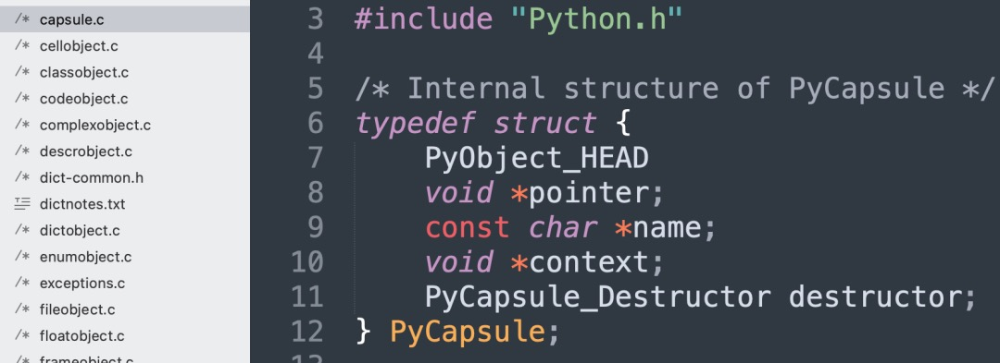
这个结构体还是有点复杂的，不过我们也不会手动创建，而是会专门调用一个函数。
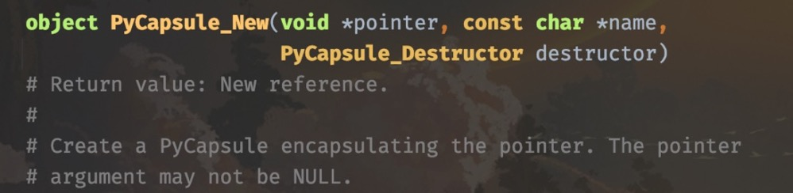
该函数调用之后会返回一个 PyCapsule 对象，而参数有三个。
- pointer：要保存的 C 指针，需要转成 void * 之后保存；
- name：创建 PyCapsule 对象之后，如果想要拿到内部的 C 指针，该怎么做呢？答案是调用 PyCapsule_GetPointer 函数，将 PyCapsule 对象和字符串 name 传进去，即可获取；
- destructor：绑定的析构函数，PyCapsule 对象被销毁时会执行此函数，显然释放 C 指针的逻辑应该写在这里面；
我们实际演示一下：
from libc.stdlib cimport free
from cpython.pycapsule cimport (
PyCapsule_New,
PyCapsule_Destructor,
PyCapsule_GetPointer,
)
cdef extern from "./rect.h":
# 这里不再使用类，因此也就没有必要起别名了
ctypedef struct Rectangle:
int x
int y
# 但我们会再定义一个 create_rectangle 函数用于暴露给 Python
# 所以这里需要起一个别名，_create_rectangle 表示内部的 C 函数
# create_rectangle 表示 Python 包装器
Rectangle *_create_rectangle "create_rectangle" (int x, int y)
def create_rectangle(int x, int y):
cdef Rectangle *rect = _create_rectangle(x, y)
return PyCapsule_New(
# C 结构体指针，需要转成 void *
<void *> rect,
# 指定一个 name，用于获取 C 指针
<const char *> b"rect",
# 析构函数，需要转成 PyCapsule_Destructor 类型
<PyCapsule_Destructor> dealloc_rectangle
)
cdef void dealloc_rectangle(object o):
# 当 PyCapsule 对象被析构时
# 会执行此函数，并将自身作为参数
# 这里通过 PyCapsule_GetPointer 拿到 C 指针
cdef void *rect = PyCapsule_GetPointer(o, <const char *>b"rect")
if rect != NULL:
free(rect)
print("堆区结构体被释放")
代码编写完成，下面进行测试。
import cython_test
rect = cython_test.create_rectangle(10, 20)
print(rect)
print(rect.__class__)
"""
<capsule object "rect" at 0x7fb2f807cb40>
<class 'PyCapsule'>
"""
del rect
print("---------------")
"""
堆区结构体被释放
---------------
"""
这个 capsule object 可能有人遇到过，比如在编写 QT 的时候。
此时借助于 PyCapsule，我们就将 C 指针封装在了胶囊中，返回给了 Python。在创建胶囊的时候，需要指定一个 C 指针和 name，会将两者关联起来。后续以 name 作参数，调用 PyCapsule_GetPointer 函数，便可拿到相应的 C 指针。
当然 name 也可以不指定，直接传一个 NULL 进去也行。
from cpython.pycapsule cimport (
PyCapsule_New,
PyCapsule_GetPointer,
)
cdef extern from "./rect.h":
ctypedef struct Rectangle:
int x
int y
Rectangle *_create_rectangle "create_rectangle" (int x, int y)
cdef Rectangle *rect = _create_rectangle(10, 20)
# 将 name 指定为 NULL（省略析构函数相关逻辑）
cdef capsule = PyCapsule_New(<void *> rect, NULL, NULL)
# 获取的时候，name 也要指定为 NULL
print(
<Py_ssize_t> PyCapsule_GetPointer(capsule, NULL),
<Py_ssize_t> rect
) # 105553170221584 105553170221584
# 因为存储的都是同一个对象的地址，所以结果是相同的
# is 也为真
print(
PyCapsule_GetPointer(capsule, NULL) is rect
) # True
# 虽然 PyCapsule_GetPointer 返回的是 void *，而 rect 是 Rectangle *
# 但是不要紧，因为 is 比较的是地址是否相同
所以你可以将 name 指定为一个你感兴趣的字符串，也可以写成 NULL。
然后关于 PyCapsule，还有一些其它的 API。
from cpython.pycapsule cimport (
PyCapsule_New,
PyCapsule_GetName,
PyCapsule_SetName,
PyCapsule_GetPointer,
PyCapsule_SetPointer,
)
cdef extern from "./rect.h":
ctypedef struct Rectangle:
int x
int y
Rectangle *_create_rectangle "create_rectangle" (int x, int y)
cdef Rectangle *rect = _create_rectangle(10, 20)
cdef capsule = PyCapsule_New(<void *> rect, <char *>"rect", NULL)
# 获取内部的 name 属性
cdef const char *name = PyCapsule_GetName(capsule)
# char * 和 bytes 对象是对应的，但必须检查是否为 NULL
# 如果为 NULL，那么就不能对它做任何操作，否则会出现段错误
if name != NULL:
print(name) # b'rect'
# 还可以重新设置内部的 name 属性
# 这里设置为 NULL，然后再重新获取
PyCapsule_SetName(capsule, NULL)
print(PyCapsule_GetName(capsule) == NULL) # True
# 不仅可以设置 name，也可以重新设置内部的 C 指针
cdef int num = 123
PyCapsule_SetPointer(capsule, <void *> &num)
PyCapsule_SetName(capsule, "num")
print(
(<int *> PyCapsule_GetPointer(capsule, "num"))[0]
) # 123
(<int *> PyCapsule_GetPointer(capsule, "num"))[0] = 777
print(num) # 777
还是很好理解的，当然啦，除了可以设置 name 和 C 指针之外，还可以重新设置析构函数。
- PyCapsule_GetDestructor：获取析构函数，析构函数的类型是 PyCapsule_Destructor，它接收一个 object，返回 void；
- PyCapsule_SetDestructor：设置析构函数；
我们测试一下：
from libc.stdlib cimport malloc, free
from cpython.pycapsule cimport (
PyCapsule_New,
PyCapsule_Destructor,
PyCapsule_GetDestructor,
PyCapsule_SetDestructor,
PyCapsule_GetPointer,
PyCapsule_SetPointer,
)
cdef int *num = <int *> malloc(sizeof(int))
# 析构函数为空
cdef capsule = PyCapsule_New(<void *> num, "num", NULL)
print(
# 指针和 NULL 之间判断是否相等，可以使用 == 和 is
# 判断是否不等，可以使用 != 和 is not
PyCapsule_GetDestructor(capsule) == NULL
) # True
cdef list lst = []
cdef void dealloc(object o):
cdef void *p = PyCapsule_GetPointer(o, "num")
if p != NULL:
free(p)
lst.append("古明地觉的编程教室")
# 设置析构函数，PyCapsule_Destructor 是一个类型别名
# ctypedef void (*PyCapsule_Destructor)(object o)
# 我们直接传递 dealloc 也可以，但是按照规范，应该转换一下
PyCapsule_SetDestructor(capsule, <PyCapsule_Destructor> dealloc)
print(
PyCapsule_GetDestructor(capsule) is dealloc
) # True
print(lst) # []
# 销毁 PyCapsule 对象，但是 del 关键字不能删除 C 级变量
# 所以我们可以让 capsule 指向其它对象，这样原来的对象就会因为引用计数为 0 而被销毁
# 然后在销毁之前，会调用 dealloc，并将自身作为参数
capsule = None
print(lst) # ['古明地觉的编程教室']
怎么样，是不是很有趣呢？
如果想再实现其它功能的话，那么只需要定义相应的函数即可。比如我们在原来的基础上定义一个 can_hold 函数，判断一个矩形是否能完全包含另一个矩形。
from libc.stdlib cimport free
from cpython.pycapsule cimport (
PyCapsule_New,
PyCapsule_GetPointer,
PyCapsule_CheckExact
)
cdef extern from "./rect.h":
ctypedef struct Rectangle:
int x
int y
Rectangle *_create_rectangle "create_rectangle" (int x, int y)
cdef void dealloc_rectangle(object o):
cdef void *rect = PyCapsule_GetPointer(o, NULL)
if rect != NULL:
free(rect)
def create_rectangle(int x, int y):
return PyCapsule_New(_create_rectangle(x, y), NULL, dealloc_rectangle)
def can_hold(object capsule1, object capsule2):
if not PyCapsule_CheckExact(capsule1) or not PyCapsule_CheckExact(capsule2):
raise ValueError("参数必须均为 capsule 对象")
cdef Rectangle *rect1 = <Rectangle *> PyCapsule_GetPointer(capsule1, NULL)
cdef Rectangle *rect2 = <Rectangle *> PyCapsule_GetPointer(capsule2, NULL)
if rect1.x >= rect2.x and rect1.y >= rect2.y:
return True
return False
编译测试一下：
import cython_test
rect1 = cython_test.create_rectangle(10, 5)
rect2 = cython_test.create_rectangle(10, 5)
rect3 = cython_test.create_rectangle(12, 6)
print(
cython_test.can_hold(rect1, rect2),
cython_test.can_hold(rect1, rect3)
) # True False
测试结果没有任何问题，以上就是 PyCapsule 对象的相关用法。
总结：当我们想返回一个 C 指针给 Python 的时候，有两种做法。一种是自定义一个类，将指针作为内部的一个属性，另一种是使用 PyCapsule 对象。当然这两种做法本质上都是一样的，都是对指针进行一层封装。
具体使用哪一种取决于你自己，使用自定义类的方式，可控程度会更高一些。当然不管哪一种，都不要忘记释放指针指向的堆内存。
35. 在 Cython 中处理 C 字符串
作者：古明地觉
公众号：古明地觉的编程教室
公众号二维码：
在介绍数据类型的时候我们说过，Python 的数据类型相比 C 来说要更加的通用，但速度却远不及 C。如果你在使用 Cython 加速 Python 时遇到了瓶颈，但还希望更进一步，那么可以考虑将数据替换成 C 的类型，特别是那些频繁出现的数据，比如整数、浮点数、字符串。
由于整数和浮点数默认使用的就是 C 的类型，于是我们可以从字符串入手。
35.1 创建 C 字符串
先来回顾一下如何在 Cython 中创建 C 字符串。
cdef char *s1 = b"abc"
print(s1) # b'abc'
C 的数据和 Python 数据如果想互相转化，那么两者应该存在一个对应关系，像整数和浮点数就不必说了。但 C 的字符串本质上是一个字符数组，所以它和 Python 的 bytes 对象是对应的，我们可以将 b"abc" 直接赋值给 s1。并且在打印的时候，也会转成 Python 的 bytes 对象之后再打印。
或者还可以这么做：
cdef char s1[4]
s1[0], s1[1], s1[2] = 97, 98, 99
cdef bytes s2 = bytes([97, 98, 99])
print(s1) # b'abc'
print(s2) # b'abc'
直接声明一个字符数组，然后再给数组的每个元素赋值即可。
Python 的 bytes 对象也是一个字符数组，和 C 一样，数组的每个元素不能超过 255，所以两者存在对应关系。在赋值的时候，会相互转化，其它类型也是同理，举个例子：
# Python 整数和 C 整数是存在对应关系的
# 因为都是整数，所以可以相互赋值
py_num = 123
# 会根据 Python 的整数创建 C 的整数，然后赋值给 c_num
cdef unsigned int c_num = py_num
# print 是 Python 的函数，它接收的一定是 PyObject *
# 所以在打印 C 的整数时，会转成 Python 的整数再进行打印
print(c_num, py_num)
"""
123 123
"""
# 但如果写成 cdef unsigned int c_num = "你好" 就不行了
# 因为 Python 的字符串和 C 的整数不存在对应关系
# 两者无法相互转化，自然也就无法赋值
# 浮点数也是同理，Python 和 C 的浮点数可以相互转化
cdef double c_pi = 3.14
# 赋值给 Python 变量时，也会转成 Python 的浮点数再赋值
py_pi = 3.14
print(c_pi, py_pi)
"""
3.14 3.14
"""
# Python 的 bytes 对象和 C 的字符串可以相互转化
cdef bytes py_name = bytes("古明地觉", encoding="utf-8")
cdef char *c_name = py_name
print(py_name == c_name)
"""
True
"""
# 注意：如果 Python 字符串所有字符的 ASCII 🐴均不超过 255
# 那么也可以赋值给 C 字符串
cdef char *name1 = "satori"
cdef char *name2 = b"satori"
print(name1, name2)
"""
b'satori' b'satori'
"""
# "satori" 会直接当成 C 字符串来处理，因为它里面的字符均为 ASCII
# 就像写 C 代码一样，所以 name1 和 name2 是等价的
# 而在转成 Python 对象的时候，一律自动转成 bytes 对象
# 但是注意：cdef char *c_name = "古明地觉" 这行代码不合法
# 因为里面出现了非 ASCII 字符，所以建议在给 C 字符串赋值的时候，一律使用 bytes 对象
# C 的结构体和 Python 的字典存在对应关系
ctypedef struct Girl:
char *name
int age
cdef Girl g
g.name, g.age = b"satori", 17
# 在打印的时候，会转成字典进行打印
# 当然前提是结构体的所有成员，都能用 Python 表示
print(g)
"""
{'name': b'satori', 'age': 17}
"""
所以 Python 数据和 C 数据是可以互相转化的，哪怕是结构体，也是可以的，只要两者存在对应关系，可以互相表示。但像指针就不行了，Python 没有任何一种原生类型能和 C 的指针相对应，所以 print 一个指针的时候就会出现编译错误。
以上这些都是之前介绍过的内容，这里专门再回顾一下。
35.2 引用计数陷阱
这里需要再补充一个关键点，由于 bytes 对象实现了缓冲区协议，所以它内部有一个缓冲区，这个缓冲区内部存储了所有的字符。而在基于 bytes 对象创建 C 字符串的时候，不会拷贝缓冲区里的内容（整数、浮点数都是直接拷贝一份），而是直接创建一个指针指向这个缓冲区。
# 合法的代码
py_name = "古明地觉".encode("utf-8")
cdef char *c_name1 = py_name
# 不合法的代码，会出现如下编译错误
# Storing unsafe C derivative of temporary Python reference
cdef char *c_name2 = "古明地觉".encode("utf-8")
为啥在创建 c_name2 的时候就会报错呢？很简单，因为这个过程中进行了函数调用，所以产生了临时对象。换句话创建的 bytes 对象是临时的，这行代码执行结束后就会因为引用计数为 0 而被销毁。
问题来了，c_name2 不是已经指向它了吗？引用计数应该为 1 才对啊。相信你能猜到原因，这个 c_name2 的类型是 char *，它是一个 C 类型的变量，不会增加对象的引用计数。这个过程就是创建了一个 C 级指针，指向了临时的 bytes 对象内部的缓冲区，而解释器是不知道的。
所以临时对象最终会因为引用计数为 0 被销毁，但是这个 C 指针却仍指向它的缓冲区，于是就报错了。我们需要先创建一个 Python 变量指向它，让其不被销毁，然后才能赋值给 C 级指针。为了更好地说明这个现象，我们使用 bytearray 举例说明。
cdef bytearray buf = bytearray("hello", encoding="utf-8")
cdef char *c_str = buf
print(buf) # bytearray(b'hello')
# 基于 c_str 修改数据
c_str[0] = ord("H")
# 再次打印 buf
print(buf) # bytearray(b'Hello')
# 我们看到 buf 被修改了
bytearray 对象可以看作是可变的 bytes 对象，它们内部都实现了缓冲区，但 bytearray 对象的缓冲区是可以修改的，而 bytes 对象的缓冲区不能修改。所以这个例子就证明了上面的结论，C 字符串会直接共享 Python 对象的缓冲区。
因此在赋值的时候，我们应该像下面这么做。
print(
"你好".encode("utf-8")
) # b'\xe4\xbd\xa0\xe5\xa5\xbd'
# 如果出现了函数或类的调用，那么会产生临时对象
# 而临时对象不能直接赋值给 C 指针，必须先用 Python 变量保存起来
cdef bytes greet = "你好".encode("utf-8")
cdef char *c_greet1 = greet
# 如果非要直接赋值，那么赋的值一定是字面量的形式
# 这种方式也是可以的，但显然程序开发中我们不会这么做
# 除非它是纯 ASCII 字符
# 比如 cdef char *c_greet2 = b"hello"
cdef char *c_greet2 = b"\xe4\xbd\xa0\xe5\xa5\xbd"
print(c_greet1.decode("utf-8")) # 你好
print(c_greet2.decode("utf-8")) # 你好
以上就是 C 字符串本身相关的一些内容。
那么重点来了，假设我们将 Python 的字符串编码成 bytes 对象之后，赋值给了 C 字符串，那么 C 语言都提供了哪些 API 让我们去操作呢？
35.3 strlen（计算字符串长度）
strlen 函数会返回字符串的长度，不包括末尾的空字符。C 字符串的结尾会有一个 \0，用于标识字符串的结束，而 strlen 不会统计 \0。
# C 的库函数，一律通过 libc 进行导入
from libc.string cimport strlen
cdef char *s = b"satori"
print(strlen(s)) # 6
注意：strlen 和 sizeof 是两个不同的概念，strlen 计算的是字符串的长度，只能接收字符串。而 sizeof 计算的是数据所占用的内存大小，可以接收所有 C 类型的数据。
from libc.string cimport strlen
cdef char s[50]
# strlen 是从头遍历，只要字符不是 \0，那么数量加 1
# 遇到 \0 停止遍历，所以 strlen 计算的结果是 0
print(strlen(s)) # 0
# 而 sizeof 计算的是内存大小，当前数组 s 的长度为 50
print(sizeof(s)) # 50
s[0] = 97
print(strlen(s)) # 1
s[1] = 98
print(strlen(s)) # 2
print(sizeof(s)) # 50
当然啦，你也可以手动模拟 strlen 函数。
from libc.string cimport strlen
cdef ssize_t my_strlen(const char *string):
"""
计算 C 字符串 string 的长度
"""
cdef ssize_t count = 0
while string[count] != b"\0":
count += 1
return count
cdef char *name = b"Hello Cruel World"
print(strlen(name)) # 17
print(my_strlen(name)) # 17
还是很简单的，当然啦，我们也可以调用内置函数 len 进行计算，结果也是一样的。只不过调用 len 的时候，会先基于 C 字符串创建 bytes 对象，这会多一层转换，从而影响效率。
35.4 strcpy（字符串拷贝）
然后是拷贝字符串，这里面有一些需要注意的地方。
from libc.string cimport strcpy
cdef char name[10]
strcpy(name, b"satori")
print(name) # b'satori'
strcpy(name, b"koishi")
print(name) # b'koishi'
# 以上就完成了字符串的拷贝，但要注意 name 是数组的名字
# 我们不能给数组名赋值，比如 name = b"satori"
# 这是不合法的，因为它是一个常量
# 我们需要通过 name[索引] 或者 strcpy 的方式进行修改
# 或者还可以这么做，创建一个 bytearray 对象，长度 10
# 注意：这里不能用 bytes 对象，因为 bytes 对象的缓冲区不允许修改
cdef buf = bytearray(10)
cdef char *name2 = buf
strcpy(name2, b"marisa")
print(buf) # bytearray(b'marisa\x00\x00\x00\x00')
print(name2) # b'marisa'
# 不过还是不建议使用 bytearray 作为缓冲区
# 直接通过 cdef char name2[10] 声明即可
char name[10] 这种形式创建的数组是申请在栈区的，如果想跨函数调用，那么应该使用 malloc 申请在堆区。
然后 strcpy 这个函数存在一些隐患，就是它不会检测目标字符串是否有足够的空间去容纳源字符串，因此可能导致溢出。
from libc.string cimport strcpy
cdef char name[6]
# 会发生段错误，解释器异常退出
# 因为源字符串有 6 个字符，再加上一个 \0
# 那么 name 的长度至少为 7 才可以
strcpy(name, b"satori")
print(name)
因此如果你无法保证一定不会发生溢出，那么可以考虑使用 strncpy 函数。它和 strcpy 的用法完全一样，只是多了第三个参数，用于指定复制的最大字符数，从而防止目标字符串发生溢出。

第三个参数 size 定义了复制的最大字符数，如果达到最大字符数以后，源字符串仍然没有复制完，就会停止复制。如果源字符串的字符数小于目标字符串的容量，则 strncpy 的行为与 strcpy 完全一致。
from libc.string cimport strncpy
cdef char name[6]
# 最多拷贝 5 个字符，因为要留一个给 \0
strncpy(name, b"satori", 5)
print(name) # b'sator'
# 当然，即使目标字符串容量很大，我们也可以只拷贝一部分
cdef char words[100]
strncpy(words, b"hello world", 5)
print(words) # b'hello'
以上就是字符串的拷贝，并且对于目标字符串来说，每一次拷贝都相当于一次覆盖，什么意思呢？举个例子。
from libc.string cimport strcpy
cdef char words[10]
strcpy(words, b"abcdef")
# 此时的 words 就是 {a, b, c, d, e, f, \0, \0, \0, \0}
# 然后我们继续拷贝，会从头开始覆盖
strcpy(words, b"xyz")
# 此时的 words 就是 {x, y, z, \0, e, f, \0, \0, \0, \0}
# 因为字符串自带 \0，所以 z 的结尾会有一个 \0
# 而 C 字符串在遇到 \0 的时候会自动停止
print(words) # b'xyz'
# 将 words[3] 改成 D
words[3] = ord("D")
print(words) # b'xyzDef'
所以要注意 \0，它是 C 编译器判断字符串是否结束的标识。
35.5 strcat（字符串追加）
strcat 函数用于连接字符串，它接收两个字符串作为参数，把第二个字符串的副本添加到第一个字符串的末尾。这个函数会改变第一个字符串，但是第二个字符串不变。
from libc.string cimport strcpy, strcat
cdef char words1[20]
strcpy(words1, b"Hello")
print(words1) # b'Hello'
strcpy(words1, b"World")
print(words1) # b'World'
cdef char words2[20]
strcat(words2, b"Hello")
print(words2) # b'Hello'
strcat(words2, b"World")
print(words2) # b'HelloWorld'
注意，strcat 会从目标字符串的第一个 \0 处开始，追加源字符串，所以目标字符串的剩余容量，必须足以容纳源字符串。否则拼接后的字符串会溢出第一个字符串的边界，写入相邻的内存单元，这是很危险的，建议使用下面的 strncat 代替。
strncat 和 strcat 的用法一致，但是多了第三个参数，用于指定追加的最大字符数。
from libc.string cimport strncat, strlen
cdef char target[10]
cdef char *source = b"Hello World"
# 追加的最大字符数等于：容量 - 当前的长度 - 1
strncat(target, source,
sizeof(target) - strlen(target) - 1)
print(target) # b'Hello Wor'
为了安全，建议使用 strncat。
35.6 strcmp（字符串大小比较）
strcmp 用于字符串的比较，它会按照字符串的字典序比较两个字符串的内容。
from libc.string cimport strcmp
# s1 == s2，返回 0
print(
strcmp(b"abc", b"abc")
) # 0
# s1 > s2，返回 1
print(
strcmp(b"abd", b"abc")
) # 1
# s1 < s2，返回 0
print(
strcmp(b"abc", b"abd")
) # -1
由于 strcmp 比较的是整个字符串，于是 C 语言又提供了 strncmp 函数。strncmp 增加了第三个参数，表示比较的字符个数。
from libc.string cimport strcmp, strncmp
print(
strcmp(b"abcdef", b"abcDEF")
) # 1
# 只比较 3 个字符
print(
strncmp(b"abcdef", b"abcDEF", 3)
) # 0
比较简单，并且比较规则和 strcmp 一样。
35.7 sprintf（格式化字符串）
sprintf 函数 printf 类似，但是用于将数据写入字符串，而不是输出到显示器。
from libc.stdio cimport sprintf
cdef char s1[25]
sprintf(s1, b"name: %s, age: %d", b"satori", 17)
print(s1)
"""
b'name: satori, age: 17'
"""
# 也可以指向 bytearray 的缓冲区
cdef buf = bytearray(25)
cdef char *s2 = buf
sprintf(s2, b"name: %s, age: %d", b"satori", 17)
print(s2)
print(buf)
"""
b'name: satori, age: 17'
bytearray(b'name: satori, age: 17\x00\x00\x00\x00')
"""
# 或者申请在堆区
from libc.stdlib cimport malloc
cdef char *s3 = <char *>malloc(25)
sprintf(s3, b"name: %s, age: %d", b"satori", 17)
print(s3)
"""
b'name: satori, age: 17'
"""
同样的，sprintf 也有严重的安全风险，如果写入的字符串过长，超过了目标字符串的长度，sprintf 依然会将其写入，导致发生溢出。为了控制写入的字符串的长度，C 语言又提供了另一个函数 snprintf。
snprintf 多了一个参数，用于控制写入字符的最大数量。
from libc.stdio cimport snprintf
cdef char s1[10]
# 写入的字符数量不能超过: 最大容量 - 1
snprintf(s1, sizeof(s1) - 1,
b"name: %s, age: %d", b"satori", 17)
print(s1)
"""
b'name: sa'
"""
建议使用 snprintf，要更加的安全，如果是 sprintf，那么当溢出时会发生段错误，这是一个非常严重的错误。
35.8 动态申请字符串内存
我们还可以调用 malloc, calloc, realloc 函数为字符串动态申请内存，举个例子：
from libc.stdlib cimport (
malloc, calloc
)
from libc.string cimport strcpy
# 这几个函数所做的事情都是在堆上申请一块内存
# 并且返回指向这块内存的 void * 指针
cdef void *p1 = malloc(4)
# 我们想用它来存储字符串，那么就将 void * 转成 char *
strcpy(<char *>p1, b"abc")
# 或者也可以这么做
cdef char *p2 = <char *>malloc(4)
strcpy(p2, b"def")
print(<char *>p1) # b'abc'
print(p2) # b'def'
# 当然，申请的内存不光可以存储字符串，其它数据也是可以的
cdef int *p3 = <int *> malloc(8)
p3[0], p3[1] = 11, 22
print(p3[0] + p3[1]) # 33
# 以上是 malloc 的用法，然后是 calloc
# 它接收两个参数，分别是申请的元素个数、每个元素占用的大小
cdef int *p4 = <int *>calloc(10, sizeof(int))
# 它和下面是等价的
cdef int *p5 = <int *>calloc(10 * 4)
如果是在 C 里面，那么 malloc 申请的内存里的数据是不确定的，而 calloc 申请的内存里的数据会被自动初始化为 0。但在 Cython 里面，它们都会被初始化为 0。
并且还要注意两点：
- 1）malloc 和 calloc 在申请内存的时候可能会失败，如果失败则返回 NULL，因此在申请完之后最好判断一下指针是否为 NULL；
- 2）malloc 和 calloc 申请的内存都在堆区，不用了之后一定要调用 free 将内存释放掉，free 接收一个 void *，用于释放指向的堆内存。当然啦，为了安全起见，在释放之前，先判断指针是否为 NULL，不为 NULL 再释放；
最后一个函数是 realloc，它用于修改已经分配的内存块的大小，可以放大也可以缩小，返回一个指向新内存块的指针。
from libc.stdlib cimport (
malloc, realloc
)
from libc.string cimport strcpy
cdef char *p1 = <char *>malloc(4)
strcpy(p1, b"abc")
# p1 指向的内存最多能容纳 3 个有效字符串
# 如果希望它能容纳更多，那么就要重新分配内存
p1 = <char *>realloc(p1, 8)
# 如果新内存块小于原来的大小，则丢弃超出的部分；
# 大于原来的大小，则返回一个全新的地址，数据也会自动复制过去
# 如果第二个参数是 0，那么会释放掉内存块
# 如果 realloc 的第一个参数是 NULL，那么等价于 malloc
cdef char *p2 = <char *>realloc(NULL, 40)
# 等价于 cdef char *p2 = <char *>malloc(40)
# 由于有分配失败的可能，所以调用 realloc 之后
# 最好检查一下它的返回值是否为 NULL
# 并且分配失败时，原有内存块中的数据不会发生改变。
在 C 里面，malloc 和 realloc 申请的内存不会自动初始化，一般申请完之后还要手动初始化为 0。但在 Cython 里面，一律会自动初始化为 0，这一点就很方便了。
35.9 memset
memset 是一个初始化函数，它的作用是将某一块内存的所有字节都设置为指定的值。
from libc.stdlib cimport malloc
from libc.string cimport memset
# 函数原型
# void *memset (void *block, int c, size_t size)
cdef char *s1 = <char *>malloc(10)
memset(<void *> s1, ord('a'), 10 - 1)
# 全部被设置成了 a
print(s1) # b'aaaaaaaaa'
cdef char *s2 = <char *>malloc(10)
# 只设置前三个字节
memset(<void *> s2, ord('a'), 3)
print(s2) # b'aaa'
在使用 memset 的时候，一般都是将内存里的值都初始化为 0。
35.10 memcpy
memcpy 用于将一块内存拷贝到另一块内存，用法和 strncpy 类似，但前者不光可以拷贝字符串，任意内存都可以拷贝，所以它接收的指针是 void *。
from libc.string cimport memcpy
cdef char target[10]
cdef char *source = "Hello World"
# 接收的指针类型是 void *，它与数据类型无关
# 就是以字节为单位，将数据逐个拷贝过去
# 并且还有第三个参数，表示拷贝的最大字节数
memcpy(<void *> target, <void *> source, 9)
print(target) # b'Hello Wor'
# 同样的，整数数组也可以
cdef int target2[5]
cdef int source2[3]
source2[0], source2[1], source2[2] = 11, 22, 33
memcpy(<void *> target2, <void *> source2, 5 * sizeof(int))
print(target2[0], target2[1], target2[2]) # 11, 22, 33
# 当然你也可以自己实现一个 memcpy
cdef void my_memcpy(void *src, void *dst, ssize_t count):
# 不管 src 和 dst 指向什么类型，统一当成 1 字节的 char
# 逐个遍历，然后拷贝过去即可
cdef char *s = <char *>src
cdef char *d = <char *>dst
# 在 Cython 里面解引用不可以通过 *p 的方式，而是要使用 p[0]
# 因为 *p 这种形式在 Python 里面有另外的含义
while count != 0:
s[0] = d[0]
s += 1
d += 1
count -= 1
# 测试一下
cdef float target3[5]
cdef float source3[3]
source3[0], source3[1], source3[2] = 3.14, 2.71, 1.732
my_memcpy(<void *> target3, <void *> source3, 5 * sizeof(float))
print(target3[0], target3[1], target3[2]) # 3.14, 2.71, 1.732
所以在拷贝字符串的时候，memcpy 和 strcpy 都可以使用，但是推荐 memcpy，速度更快也更安全。
35.11 memmove
memmove 函数用于将一段内存数据复制到另一段内存，它跟 memcpy 的作用相似，用法也一模一样。但区别是 memmove 允许目标区域与源区域有重叠。如果发生重叠，源区域的内容会被更改；如果没有重叠，那么它与 memcpy 行为相同。
from libc.string cimport memcpy, memmove
cdef char target1[20]
cdef char target2[20]
cdef char *source = "Hello World"
# target1、target2 和 source 均不重叠
# 所以 memcpy 和 memmove 是等价的
memcpy(<void *>target1, <void *>source, 20 - 1)
memmove(<void *>target2, <void *>source, 20 - 1)
print(target1) # b'Hello World'
print(target2) # b'Hello World'
# 但 &target1[0] 和 &target[1] 是有重叠的
# 将 target1[1:] 拷贝到 target1[0:]，相当于每个字符往前移动一个位置
memmove(<void *>&target1[0], <void *>&target1[1], 19 - 1)
print(target1) # b'ello World'
# 显然此时内容发生了覆盖，这时候应该使用 memmove
应该很好理解。
35.12 memcmp
memcmp 用于比较两个内存区域是否相同，前两个参数是 void * 指针，第三个参数比较的字节数，所以它的用法和 strncmp 是一致的。
from libc.string cimport memcmp, strncmp
cdef char *s1 = b"Hello1"
cdef char *s2 = b"Hello2"
# s1 == s2 返回 0；s1 >= s2 返回 1；s1 <= s2 返回 -1
print(memcmp(<void *> s1, <void *> s2, 6)) # -1
print(memcmp(<void *> s1, <void *> s2, 5)) # 0
print(strncmp(s1, s2, 6)) # -1
print(strncmp(s1, s2, 5)) # 0
# 所以 memcmp 和 strncmp 的用法是一样的
# 但 memcmp 在比较的时候会考虑 \0
cdef char s3[5]
cdef char s4[5]
# '\0' 的 ASCII 码就是 0
# 所以 s3 就相当于 {'a', 'b', 'c', '\0', 'e'}
s3[0], s3[1], s3[2], s3[3], s3[4] = 97, 98, 99, 0, 100
# s4 就相当于 {'a', 'b', 'c', '\0', 'f'}
s4[0], s4[1], s4[2], s4[3], s4[4] = 97, 98, 99, 0, 101
# strncmp 在比较的时候，如果遇到 \0，那么字符串就结束了
print(strncmp(s3, s4, 5)) # 0
# memcmp 支持所有数据类型的比较，不单单针对字符串
# 所以它在比较的时候不会关注 \0，就是逐一比较每个字节，直到达到指定的字节数
# 因为 e 的 ASCII 码小于 f，所以结果是 -1
print(memcmp(<void *> s3, <void *> s4, 5)) # -1
以上就是 memcmp 的用法，我们总结一下出现的函数。
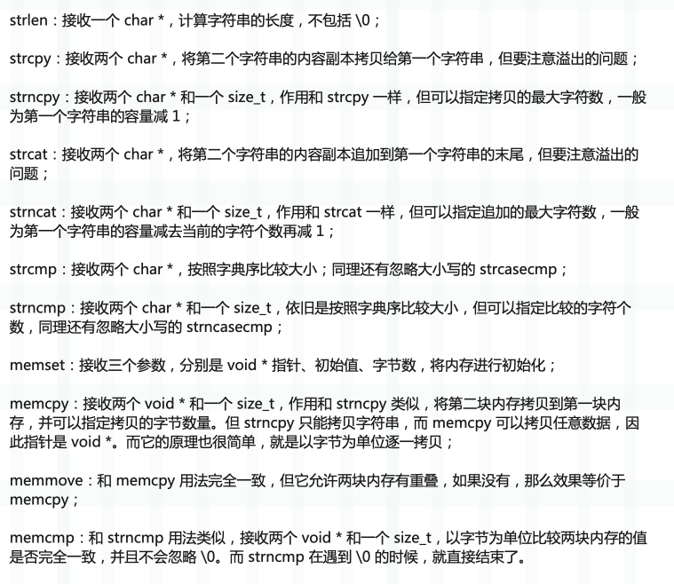
此外还有一些针对于宽字符串（wchar_t *）的 API，用法和 char * 一致，并且 API 的命名也很相似。比如 strlen 是判断 char * 的长度，那么 wcslen 就是判断 wchar_t * 的长度；strcmp 是比较两个 char * 是否相等，而 wcscmp 则是比较两个 wchar_t * 是否相等。
所有 char * 相关的 API，wchar_t * 都支持，只需要把开头的 str 换成 wcs 即可。而如果想使用宽字符相关的 API，则需要导入 wchar.h 头文件。
35.13 小结
以上就是在 Cython 中处理 C 字符串的一些操作，说实话大部分都是和 C 相关的内容，如果你熟悉 C 的话，那么这篇文章其实可以不用看。
因为 Cython 同理理解 C 和 Python，在加速的时候不妨把字符串换成 char * 试试吧。比如有一个操作 pgsql 的异步驱动 asyncpg 就是这么做的，因此速度非常快。
36. 通过 Cython 带你认清 Python 变量的本质
作者：古明地觉
公众号：古明地觉的编程教室
公众号二维码：
Python 和其它静态语言之间有一个显著的不同，就是 Python 的变量其实只是一个名字。站在 C 语言的角度来看，Python 变量本质上就是一个指针（准确的说是引用），存储的是对象的内存地址，指针指向的内存才是对象。
所以在 Python 中，我们都说变量指向了某个对象。而在其它静态语言中，变量相当于是为某个对象起的别名，获取变量就等于获取这块内存所存储的值。但 Python 变量代表的内存所存储的不是对象，而是对象的地址。
我们用两段代码，一段 C 语言的代码，一段 Python 的代码，来看一下差别。
#include <stdio.h>
void main()
{
int a = 123;
printf("address of a = %p\n", &a);
a = 456
printf("address of a = %p\n", &a);
}
//输出结果
/*
address of a = 0x7fffa94de03c
address of a = 0x7fffa94de03c
*/
可以看到前后输出的地址是一样的，再来看看 Python 的。
a = 666
print(hex(id(a))) # 0x1b1333394f0
a = 667
print(hex(id(a))) # 0x1b133339510
然而我们看到地址前后发生了变化，我们分析一下原因。
首先在 C 中，创建一个变量的时候必须规定好类型，比如 int a = 666，那么变量 a 就是 int 类型，以后在所处的作用域中就不可以变了。如果这时候，再设置 a = 777，那么等于是把内存中存储的 666 换成 777，但 a 的地址和类型是不会变化的。
而在 Python 中，a = 666 等于是先开辟一块内存，存储的值为 666，然后让变量 a 指向这片内存，或者说让变量 a 存储这块内存的地址。然后 a = 777 的时候，再开辟一块内存，然后让 a 指向存储 777 的内存，由于是两块不同的内存，所以它们的地址是不一样的。

所以 Python 的变量只是一个和对象关联的名字罢了，它是一个指针，代表的是对象的地址。换句话说 Python 变量就是个便利贴，可以贴在任何对象上，一旦贴上去了，就代表这个对象被引用了。
再来看看变量之间的传递，在 Python 中是如何体现的。
a = 666
print(hex(id(a))) # 0x1e6c51e3cf0
b = a
print(hex(id(b))) # 0x1e6c51e3cf0
我们看到打印的地址是一样的，用一张图解释一下。
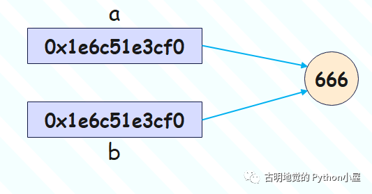
我们说 a = 666 的时候，先开辟一份内存，再让 a 存储对应内存的地址；然后 b = a 的时候，会把 a 拷贝一份给 b，所以 b 存储了和 a 相同的地址，它们都指向了同一个对象。
因此说 Python 是值传递、或者引用传递都是不准确的，准确的说 Python 是变量的赋值传递，对象的引用传递。因为 Python 变量本质上就是一个指针，所以在 b = a 的时候，等于把 a 指向的对象的地址（a 本身）拷贝一份给 b，所以对于变量来说是赋值传递；然后 a 和 b 又都是指向对象的指针，因此对于对象来说是引用传递。
另外还有最关键的一点，我们说 Python 的变量是一个指针，当传递一个变量的时候，传递的是指针；但是在操作一个变量的时候，会操作变量指向的内存。
所以 id(a) 获取的不是 a 的地址，而是 a 指向的内存的地址（在底层其实就是 a 本身）；同理 b = a 也是将 a 本身，或者说将 a 存储的、指向某个具体对象的地址传递给了 b。
在 C 的层面上，显然 a 和 b 属于指针变量，那么 a 和 b 有没有地址呢？显然是有的，也就是二级指针。只不过在 Python 中你是看不到的，Python 解释器只允许你看到对象的地址，也就是一级指针。
为了更好地理解上述内容，我们看一段 Cython 代码：
# name 是一个变量，它是一个指针
name = "古明地觉"
# 而在 C 中，指针是可以相互转化的，因此这里我们转成 void * 类型
# 而 void * 又可以转成整型（Py_ssize_t 是 ssize_t 的别名）
print(<Py_ssize_t><void *> name)
"""
2198935240400
"""
# 我们得到了一串数字，因为地址本身就是一串数字
# 所以它和我们调用 id 函数的结果是一样的
print(id(name))
"""
2198935240400
"""
如果你对解释器有一定了解的话，那么你应该知道变量是一个泛型指针 PyObject *，而指针存储的地址其实就是一串数字。我们将变量转成 void * 之后再转成整型，那么就能拿到它存储的数字，而这显然也是内置函数 id 所做的事情。
那么问题来了，如果我知道对象的地址，那么能不能反推出对象是什么呢？答案是可以的，只需要将上述过程逆转过来就可以了。

解释一下，首先这串数字虽然表示对象的地址，但它不具备指针的含义，很明显它就是一个普通的 Python 整数而已。如果想让它变成指针，那么需要先转成 void *，因为 void * 和整数是可以相互转化的。只不过这个整数是 C 的整数，因此要先转成 Py_ssize_t，再转成 void *。
具备指针的含义之后，再转成 object 即可拿到对象本身，是不是很神奇呢？如果不借助 Cython，那么你能不能基于对象的地址反推出对象是什么呢？
37. 让 Python 的属性查找具有 C 一级的性能
作者：古明地觉
公众号：古明地觉的编程教室
公众号二维码：
前面我们介绍了静态类，静态类实例在属性查找方面比动态类要高效很多，因为静态类实例的属性是通过数组存储的，一个萝卜一个坑，访问的时候基于索引访问。但无论是静态类还是动态类，其实例在查找属性时，底层都会调用 PyObject_GetAttr 这个 C API。
那么问题来了，能不能再快一点呢？因为一旦涉及到 Python/C API，效率都是不高的，而 Python 的对象在底层都是一个 C 结构体，那么在查找属性的时候能不能直接访问 C 结构体的字段呢？不要再走 Python 的 C API 了。
我们举例说明：
cdef class Score:
cdef public:
int chinese, math, english
def __init__(self, int chinese,
int math, int english):
self.chinese = chinese
self.math = math
self.english = english
s = Score(90, 98, 92)
print(
s.chinese, s.math, s.english
) # 90 98 92
以上是一段 Cython 代码，如果换成功能相同的 C 代码的话：
#include <stdio.h>
typedef struct {
int chinese;
int math;
int english;
} Score;
int main() {
Score s = {90, 98, 92};
printf("%d %d %d\n",
s.chinese, s.math, s.english); // 90 98 92
}
那么问题来了，我们能不能将 Cython 中的属性访问，转成 C 一级的属性访问呢？答案是可以的，下面来看一下具体的做法。
# 文件名：score.pyx
cdef class Score:
cdef public:
int chinese, math, english
def __init__(self, int chinese,
int math, int english):
self.chinese = chinese
self.math = math
self.english = english
我们需要先将 score.pyx 编译成扩展模块，编译方式很简单，这里不再赘述了。然后还要编写一个头文件 score.h：
#include <Python.h>
// 定义一个 C 结构体，模拟扩展类 Score
typedef struct {
PyObject_HEAD
int chinese;
int math;
int english;
} C_Score;
接下来再编写一个 Cython 源文件导入它：
# 文件名：cython_test.pyx
cdef extern from "score.h":
ctypedef class score.Score [object C_Score]:
cdef:
int chinese
int math
int english
# 这里我们使用了 ctypedef class，可以简单认为导入了一个类
# 而 ctypedef class 紧跟的是 score.Score，编译器在看到之后
# 就知道要从 score 模块里导入类 Score
# 所以我们不需要 from score import Score，会自动导入
# 但是导入了还不算完，后面还跟了一个 C_Score
# C_Score 和 score.Score 里面的成员都是一样的
# 然后 Cython 编译器会生成 C 结构体字段的直接访问
# 而不会再走 Python 的 C API
def summer(Score s):
# 进行类型声明的话，只需要使用 Score 即可
# 并且这里的 Score 只能在 Cython 内部使用
return s.chinese + s.math + s.english
然后进行编译，导入测试一下：
from score import Score
import cython_test
s = Score(99, 98, 97)
print(cython_test.summer(s)) # 294
结果没有任何问题，并且此时 Cython 是直接访问的结构体字段，而不是使用 __getattr__。
然后要说明的是，类的名字和 C 结构体的名字不要求相同，但是内部字段的名字应该是相同的。假设 C_Score 的字段如下：
#include <Python.h>
// 定义一个 C 结构体，模拟扩展类 Score
typedef struct {
PyObject_HEAD
int a;
int b;
int c;
} C_Score;
那么声明的时候就应该这么做：
# 文件名：cython_test.pyx
cdef extern from "score.h":
ctypedef class score.Score [object C_Score]:
cdef:
int chinese "a"
int math "b"
int english "c"
否则的话，在 C 结构体中就找不到对应的字段。当然啦，找不到的话会退化使用 __getattr__，不会报错。
此外该方法也适用于内置类型，不过用的不多，而且我们也很少使用 ctypedef class，因此本节的内容了解一下即可。
38. 为什么会有 GIL？如何释放 GIL 实现并行？
作者：古明地觉
公众号：古明地觉的编程教室
公众号二维码：
在前面的章节中，我们看到 Cython 可以将 Python 的性能提升数十倍甚至数百倍，而这些性能的提升只需要做一些简单的修改即可。并且我们还了解了 Cython 的类型化 memoryview，通过类型化 memoryview，我们实现了一个比内置函数 sum 快了将近 100 倍的算法。
但以上的这些改进都是基于单线程的，这一次我们来学习 Cython 的多线程特性，以及如何在 Cython 中释放 GIL 实现并行执行。并且 Cython 还提供了一个 prange 函数，它可以轻松地将普通的 for 循环转成使用多个线程的循环，接入所有可用的 CPU 核心。使用的时候我们会看到，平常令人尴尬的 CPU 并行操作，通过 prange 会有很好的表现。
但在介绍 prange 之前，我们必须要先了解 Python 的运行时（runtime）和本机线程的交互，以及全局解释器锁（GIL）。
38.1 线程并行和全局解释器锁
如果讨论基于线程的并行，那么全局解释器锁（GIL）是一个绕不开的话题。我们知道 GIL 是一个施加在解释器之上的互斥锁，用于防止本机多个线程同时执行字节码。
换句话说 ，GIL 确保解释器在程序执行期间，同一时刻只会使用操作系统的一个线程。不管你的 CPU 是多少核， 以及你开了多少个线程，但是同一时刻只会使用操作系统的一个线程、去调度一个 CPU。而且 GIL 不仅影响 Python 代码，也会影响 Python/C API。
首先我们来分析一下为什么会有 GIL 这个东⻄存在？举个例子：
import dis
dis.dis("del obj")
"""
0 DELETE_NAME 0 (obj)
2 LOAD_CONST 0 (None)
4 RETURN_VALUE
"""
当使用 del 删除一个变量的时候，对应的指令是 DELETE_NAME，这条指令做的事情非常简单：通过宏 Py_DECREF 将对象的引用计数减 1，并且判断减少之后其引用计数是否为 0，如果为 0 就进行回收。伪代码如下:
--obj->ob_refcnt
if (obj -> ob_refcnt == 0){
销毁obj
}
所以总共是两步：第一步先将对象的引用计数减 1；第二步判断引用计数是否为 0，为 0 则进行销毁。那么问题来了，假设有两个线程 A 和 B，内部都引用了某个变量 obj，此时 obj 指向的对象的引用计数为 2，然后让两个线程都执行 del obj 这行代码。
其中 A 线程先执行，A 线程在执行完 --obj -> ob_refcnt 之后，会将对象的引用计数减一，但不幸的是，这个时候调度机制将 A 挂起了，唤醒了 B。而 B 也执行 del obj，但它比较幸运，将两步一块执行完了。而由于之前 A 已经将引用计数减 1，所以 B 再减 1 之后会发现对象的引用计数为 0，从而执行了对象的销毁动作（tp_dealloc），内存被释放。
然后 A 又被唤醒了，此时开始执行第二个步骤，但由于 obj->ob_refcnt 已经被减少到 0，所以条件满足，那么 A 依旧会对 obj 指向的对象进行释放。但问题是这个对象所占的内存已经被释放了，所以 obj 此时就成了悬空指针。如果再对 obj 指向的对象进行释放，最终会引发什么后果，只有天知道，这也是臭名昭著的二次释放。
关键来了，所以 CPython 引入了 GIL，GIL 是解释器层面上的一把超级大锁，它是字节码级别的互斥锁。作用就是：在同时一刻，只让一个线程执行字节码，并且保证每一条字节码在执行的时候都不会被打断。
因此由于 GIL 的存在，会使得线程只有把当前的某条字节码指令执行完毕之后才有可能发生调度。所以无论是 A 还是 B，线程调度时，要么发生在 DELETE_NAME 这条指令执行之前，要么发生在 DELETE_NAME 这条指令执行完毕之后，但是不存在指令（不仅是 DELETE_NAME，而是所有指令）执行到一半的时候发生调度。
所以 GIL 才被称之为是字节码级别的互斥锁，它保护每条字节码指令只有在执行完毕之后才会发生线程调度。
回到上面那个 del obj 的例子当中，由于引入了 GIL，所以就不存在我们之前说的：在 A 将引用计数减一之后，挂起 A、唤醒 B 这一过程。因为 A 已经开始了 DELETE_NAME 这条指令的执行，而在没执行完之前是不会发生线程调度的，所以此时不会出现悬空指针的问题。
因此 Python 的一条字节码指令会对应多行 C 代码，这其中可能会涉及很多个 C 函数的调用，我们举个例子:
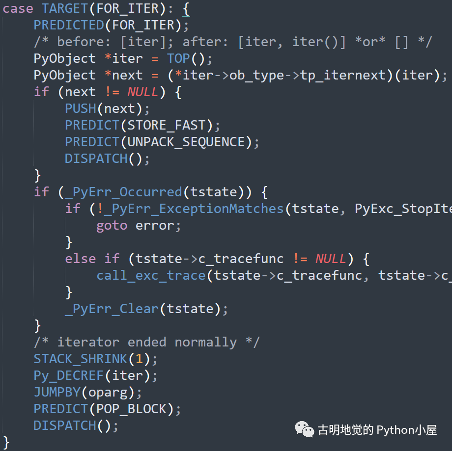
这是 FOR_ITER 指令，Python 的 for 循环对应的就是这条指令。可以看到里面的逻辑非常多，当然也涉及了多个函数调用，而且函数内部又会调用其它的函数。如果没有 GIL，那么这些逻辑在执行的时候，任何一处都可能被打断，发生线程调度。
但是有了 GIL 就不同了，它是施加在字节码层面上的互斥锁，保证每次只有一个线程执行字节码指令。并且不允许指令执行到一半时发生调度，因此 GIL 就保证了每条指令内部的 C 逻辑整体都是原子的。
而如果没有 GIL，那么即使是简单的引用计数，在计算上都有可能出问题。事实上，GIL 最初的目的就是为了解决引用计数的安全性问题。
因此 GIL 对于 Python 对象的内存管理来说是不可或缺的；但是还有一点需要注意，GIL 和 Python 语言本身没有什么关系，它只是官方在实现 CPython 时，为了方便管理内存所引入的一个实现。而对于其它种类的 Python 解释器则不一定需要 GIL，比如 JPython。
38.2 GIL 有没有可能被移除
那么 CPython 中的 GIL 将来是否会被移除呢？因为对于现在的多核 CPU 来说，GIL 无疑是进行了限制。关于能否移除 GIL，就我本人来看不太可能（针对 CPython），这都几十年了，能移除早就移除了。事实上在 Python 诞生没多久，就有人发现了这一诡异之处，因为当时的人发现使用多线程在计算上居然没有任何的性能提升，反而还比单线程慢了一点。
而 Python 的官方人员回复的是：不要使用多线程，去使用多进程。此时站在上帝视⻆的我们知道，因为 GIL 的存在使得同一时刻只有一个核被使用，所以对于纯计算的代码来说，理论上多线程和单线程是没有区别的。但由于多线程涉及上下文的切换，会有一些额外开销，反而还慢一些。
因此在得知 GIL 的存在之后，有两位勇士站了出来表示要移除 GIL，当时 Python 还是 1.5 的版本，非常的古老了。当他们在去掉 GIL 之后，发现多线程的效率相比之前确实提升了，但是单线程的效率只有原来的一半，这显然是不能接受的。因为把 GIL 去掉了，就意味着需要更细粒度的锁来解决共享数据的安全问题，这就会导致大量的加锁、解锁。而加锁、解锁对于操作系统来说是一个比较重量级的操作，所以 GIL 的移除是极其困难的。
另外还有一个关键，就是当 GIL 被移除之后，会使得扩展模块的编写难度大大增加。因为 GIL 保护的不仅仅是解释器，还有 Python/C API。像很多现有的 C 扩展，在很大程度上都依赖 GIL 提供的解决方案，如果要移除 GIL，就需要重新解决这些库的线程安全性问题。
比如我们熟知的 numpy，numpy 的速度之所以这么快，就是因为底层是 C 写的，然后封装成 Python 的扩展模块。而其它的库，像 pandas、scipy、sklearn 都是在 numpy 之上开发的，如果把 GIL 移除了，那么这些库就都不能用了。还有深度学习，像 tensorflow、pytorch 等框架所使用的底层算法也都不是 Python 编写的，而是 C 和 C++，Python 只是起到了一个包装器的作用。Python 在深度学习领域很火，主要是它可以和 C 无缝结合，如果 GIL 被移除，那么这些框架也没法用了。
因此在 2023 年的今天，生态如此成熟的 Python，几乎是不可能摆脱 GIL 了。否则这些知名的科学计算相关的库就要重新洗牌了，可想而知这是一个什么样的工作量。
小插曲：我们说去掉 GIL 的老铁有两位，分别是 Greg Stein 和 Mark Hammond，这个 Mark Hammond 估计很多人都⻅过。
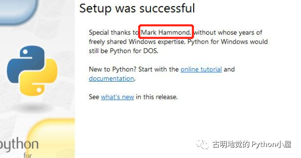
特别感谢 Mark Hammond，如果没有他这些年无偿分享的 Windows 专业技术，那么 Python 如今仍会运行在 DOS 上。
补充：这里我说 GIL 无法被移除其实有一些过于绝对，如果在移除 GIL 之后能够保证以下三点，那么 GIL 的移除就是成功的。
1. GIL 移除之后不能影响单线程的运行速度;2. GIL 移除之后不能影响 IO 密集场景下的多线程运行速度;3. GIL 移除之后不能破坏现有的 C 扩展;
如果这三点能够保证的话，那么 GIL 是可以被移除的，而只要有一点无法保证，那么就无法移除 GIL。而关于移除 GIL 的尝试，也从来都没有停止，但无一例外都失败了，原因也都是因为在移除 GIL 之后会有性能问题、以及要改变很多的 C API。
38.3 图解 GIL
Python 启动一个线程，底层会启动一个 C 线程，最终启动一个操作系统的线程。所以 Python 的线程实际上是封装了 C 的线程，进而封装了 OS 线程，一个 Python 线程对应一个 OS 线程。
实际执行的肯定是 OS 线程，而 OS 线程 Python 解释器是没有权限控制的，它能控制的只有 Python 的线程。假设有 4 个 Python 线程，那么肯定对应 4 个 OS 线程，但是解释器每次只让一个 Python 线程调用 OS 线程去执行，其它的线程只能干等着，只有当前的 Python 线程将 GIL 释放了，其它的某个线程在拿到 GIL 时，才可以调用相应的 OS 线程去执行。
总结一下就是，没有拿到 GIL 的 Python 线程，对应的 OS 线程会处于休眠状态；拿到 GIL 的 Python 线程，对应的 OS 线程会从休眠状态被唤醒。
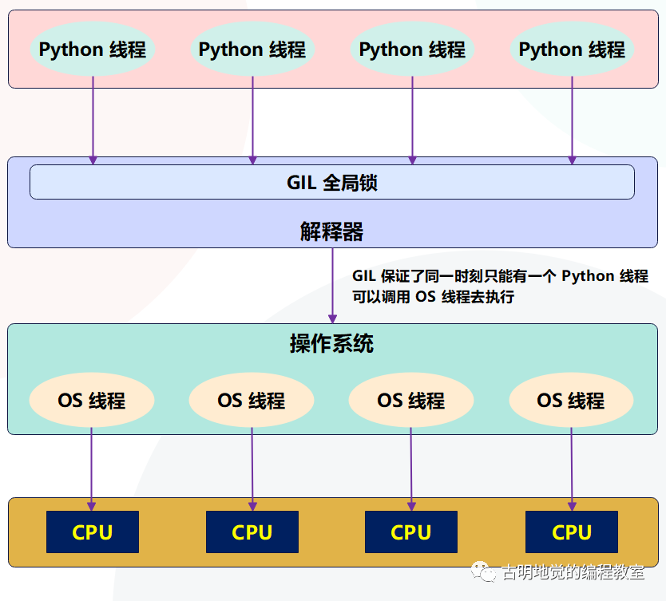
所以 Python 线程是调用 C 的线程、进而调用操作系统的 OS 线程，而 OS 线程在执行过程中解释器是控制不了的。因为解释器的控制范围只有 Python 线程，它无权干预 C 的线程、更无权干预 OS 线程。
再次强调：GIL 并不是 Python 语言的特性，它是 CPython 开发人员为了方便内存管理才加上去的。只不过解释器我们大部分用的都是 CPython，所以很多人认为 GIL 是 Python 语言本身的一个特性，但其实不是的。
Python 是一⻔语言，而 CPython 是对使用 Python 语言编写的源代码进行解释执行的一个解释器。而解释器不止 CPython 一种，还有 JPython，JPython 就没有 GIL。因此 Python 语言本身是和 GIL 无关的，只不过我们平时在说 Python 的 GIL 的时候，指的都是 CPython 里面的 GIL，这一点要注意。
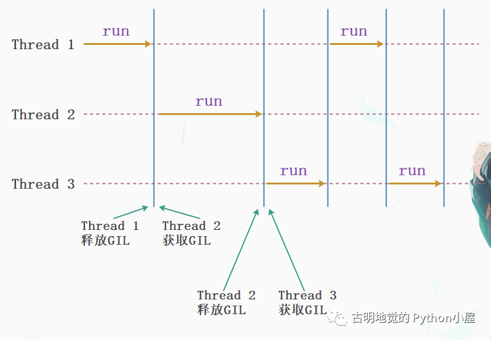
所以就类似于上图，一个线程执行一会儿，另一个线程执行一会儿，至于线程怎么切换、什么时候切换，我们后面会说。
对于 Python 而言，解释执行字节码是其核心所在，所以通过 GIL 来互斥不同线程执行字节码。如果一个线程想要执行，就必须拿到 GIL，而一旦拿到 GIL，其他线程就无法执行了，如果想执行，那么只能等 GIL 释放、被自己获取之后才可以执行。并且我们说 GIL 保护的不仅仅是 Python 解释器，还有 Python 的 C API，在使用 C/C++ 和 Python 混合开发，涉及到原生线程和 Python 线程相互合作时，也需要通过 GIL 进行互斥。
那么问题来了，有了 GIL，在编写多线程代码的时候是不是就意味着不需要加锁了呢？
答案显然不是的，因为 GIL 保护的是每条字节码不会被打断，而很多代码都是一行对应多条字节码，所以每行代码是可以被打断的。比如：a = a + 1 这样一条语句，它对应 4 条字节码：LOAD_NAME, LOAD_CONST, BINARY_ADD, STORE_NAME。
假设此时 a = 8，两个线程同时执行 a = a + 1，线程 A 执行的时候已经将 a 和 1 压入运行时栈，栈里面的 a 指向的是 8。但还没有执行 BINARY_ADD 的时候，发生线程切换，轮到线程 B 执行，此时 B 得到的 a 显然还是指向 8，因为线程 A 还没有对变量 a 做加法操作。然后 B 比较幸运，它一次性将这 4 条字节码全部执行完了，所以 a 应该指向 9。
然后线程调度再切换回 A，此时会执行 BINARY_ADD，不过注意：栈里面的 a 目前指向的还是 8，所以加完之后是 9。
因此本来 a 应该指向10，但是却指向 9，就是因为在执行的时候发生了线程调度。所以我们在编写多线程代码的时候还是需要加锁的，GIL 只是保证每条字节码执行的时候不会被打断，但是一行代码往往对应多条字节码，所以我们会通过 threading.Lock() 再加上一把锁。这样即便发生了线程调度，但由于我们在 Python 的层面上又加了一把锁，别的线程依旧无法执行，这样就保证了数据的安全。
38.4 GIL 何时被释放
那么问题来了，GIL 啥时候会被释放呢？关于这一点，Python 有一个自己的调度机制：
- 1）当遇⻅ IO 阻塞的时候会释放，因为 IO 阻塞是不耗费 CPU 的，所以此时虚拟机会把该线程的锁释放；
- 2）即便是耗费 CPU 的运算，也不会一直执行，会在执行一小段时间之后释放锁，为了保证其他线程都有机会执行，就类似于 CPU 时间片轮转的方式；
调度机制虽然简单，但是这背后还隐藏着两个问题：
- 在何时挂起线程，选择处于等待状态的下一个线程？
- 在众多处于等待状态的候选线程中，选择激活哪一个线程？
在 Python 的多线程机制中，这两个问题分别是由不同的层次解决的。对于何时进行线程调度问题，是由 Python 自身决定的。考虑一下操作系统是如何进行进程切换的，当一个进程运行了一段时间之后，发生了时钟中断，操作系统响应时钟，并开始进行进程的调度。
同样，Python 也是模拟了这样的时钟中断，来激活线程的调度。我们知道字节码的执行原理就是按照指令的顺序一条一条执行，而解释器内部维护着一个数值，这个数值就是 Python 内部的时钟。在 Python2 中如果一个线程执行的字节码指令数达到了这个值，那么会进行线程切换，并且这个值在 Python3 中仍然存在。
import sys
# 默认执行 100 条字节码之后
# 启动线程调度机制，进行切换
print(sys.getcheckinterval()) # 100
# 但是在 Python3 中，改成了时间间隔
# 表示一个线程在执行 0.005s 之后进行切换
print(sys.getswitchinterval()) # 0.005
# 上面的方法我们都可以手动设置
# sys.setcheckinterval(N) # sys.setswitchinterval(N)
sys.getcheckinterval 和 sys.setcheckinterval 在 Python3.8 的时候已经废弃了，因为线程发生调度不再取决于执行的字节码条数，而是时间间隔。
除了执行时间之外，还有就是我们之前说的遇⻅ IO 阻塞的时候会进行切换，所以多线程在 IO 密集型的场景下还是很有用处的。说实话如果 IO 都不会自动切换的话，那么 Python 的多线程才是真的没有用。
然后一个问题就是，Python 在切换的时候会从等待的线程中选择哪一个呢？很简单，Python 是借用了底层操作系统所提供的调度机制来决定下一个进入 Python 解释器的线程究竟是谁。
所以目前为止可以得到如下结论：
- GIL 对于 Python 对象的内存管理来说是不可或缺的；
- GIL 和 Python 语言本身没有什么关系，它只是 CPython 为了方便管理内存所引入的一个实现，只不过 CPython 是使用最为广泛的一种 Python 解释器，我们默认指的就是它。但是别的 Python 解释器则不一定需要 GIL，比如 JPython；
到目前为止我们介绍了很多关于 GIL 的内容，主要是为了解释 GIL 到底是个什么东⻄（底层就是一个结构体实例），以及为什么要有 GIL。然后重点来了，我们能不能手动释放 GIL 呢？
在 Python 里面不可以，但在 C 里面是可以的。因为 GIL 是为了解决 Python 的内存管理而引入的，但如果是那些不需要和 Python 代码一起工作的纯 C 代码，那么是可以在没有 GIL 的情况下运行的。
因为 GIL 是字节码级别的互斥锁，显然这是在解释器解释执行字节码的时候所施加的。而且不仅是 GIL，还有 Python 的动态性，都是在解释字节码的时候由解释器所赐予的。而 C 代码经过编译之后直接就是二进制码了，所以它相当于绕过了解释执行这一步，因此也就是失去了相应动态特性（换来的是速度的提升）。那么同理，既然能绕过解释执行这一步，那么就意味着也能绕过 GIL 的限制，因为 GIL 也是在解释执行字节码的时候施加的。
因此当我们在 C 中创建了不绑定任何 Python 对象的 C 级结构时，也就是在处理 C-Only 部分时，可以将全局解释器锁给释放掉。换句话说，我们可以使用 C 绕过 GIL，实现基于线程的并行。
注意：GIL 是为了保护 Python 对象的内存管理而设置的，如果我们尝试释放 GIL，那么一定一定一定不能和 Python 对象发生任何的交互，必须是纯 C 的数据结构。
38.5 GIL 在 C 的层面要如何释放?
首先必须要澄清一点，GIL 只有在多线程的情况下才会出现，如果是单线程，那么 CPython 是不会创建 GIL 的。而一旦我们启动了多线程，那么 GIL 就被创建了。
线程如果想安全地访问 Python 对象，就必须要持有全局解释器锁（GIL），如果没有这个锁，那么多线程基本上算是废了，即便是最简单的操作都有可能发生问题。例如两个线程同时引用了一个对象，那么这个对象的引用计数应该增加 2，但可能出现只增加 1 的情况。
因此存在一个铁打不动的规则：单线程除外，如果是多线程，只有获得了 GIL 的线程才能操作 Python 对象或者调用 Python / C API。而为了保证每个线程都能有机会执行，解释器有着自己的一套规则，可以定期迫使线程释放 GIL，让其它线程有机会执行，因为线程都是抢占式的。但当出现了 IO 阻塞，会立即强制释放。
而 Python 为了维护 OS 线程执行的状态信息，提供了一个线程状态对象：PyThreadState。虽然真正用来执行的线程以及状态肯定是由操作系统进行维护的，但虚拟机在运行的时候总需要其它的一些与线程相关的状态和信息，比如：是否发生了异常等等，这些信息显然操作系统没有办法提供。
所以 PyThreadState 对象正是 Python 为 OS 线程准备的，在虚拟机层面保存其状态信息的对象，也就是线程状态对象。在 Python 中，当前活动的 OS 线程对应的 PyThreadState 对象可以通过调用 PyThreadState_GET 获得，有了线程状态对象之后，就可以设置一些额外信息了。
当然这些都是一些概念性的东⻄，下面来看看底层是怎么做的，如果用大白话解释的话：
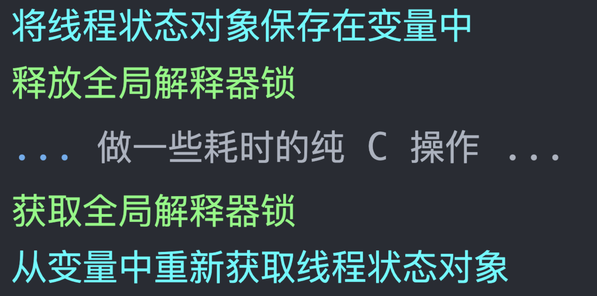
以上在编写扩展模块的时候非常常用，因此 Python 底层提供了两个宏:
// 从名字上来看, 直译就是开始允许多线程（并行执行)）
// 这一步就是释放 GIL, 表示这 GIL 不要也罢
Py_BEGIN_ALLOW_THREADS
/* 做一些耗时的纯 C 操作, 当然 IO 操作也是如此
而我们使用这两个宏很明显是为了耗时的 C 操作 */
// 执行完毕之后, 如果要和 Python 对象进行交互
// 那么必须要再度获取 GIL, 相当于结束多线程的并行执行
Py_END_ALLOW_THREADS
// 除了上面这两个宏之外，还可以使用下面这两个宏，效果是一样的
// Py_UNBLOCK_THREADS、Py_BLOCK_THREADS
我们来看一下这两个宏在底层是什么定义的？
#define Py_BEGIN_ALLOW_THREADS { \
PyThreadState *_save; \
_save = PyEval_SaveThread();
#define Py_END_ALLOW_THREADS PyEval_RestoreThread(_save); \
}
所以，如果将这两个宏展开的话，那么就是下面这个样子。
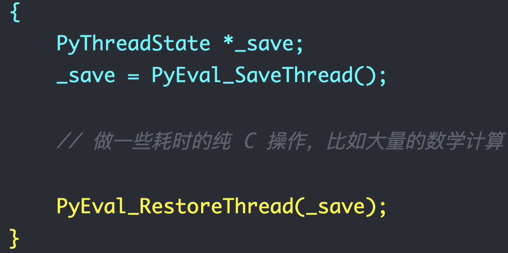
浅蓝色的部分就是 Py_BEGIN_ALLOW_THREADS，⻩色的部分则是 Py_END_ALLOW_THREADS，它们组成了一个新的代码块，我们的纯 C 逻辑也会写在里面。很明显，这两者必须同时出现，如果只出现一个，那么编译时就会出现语法错误，因为大括号没有成对出现。
- 所以 Py_BEGIN_ALLOW_THREADS 宏会打开一个新的代码块（大括号的左半部分），并定义一个隐藏的局部变量；
- Py_END_ALLOW_THREADS 宏则是关闭这个代码块（大括号的右半部分）。
如果 Python 编译为不支持线程的版本（几乎没⻅过），它们定义为空；如果支持线程，那么代码块会进行展开，而展开的结果就是上图展示的样子。
{
PyThreadState *_save;
_save = PyEval_SaveThread();
// ... ...
PyEval_RestoreThread(_save);
}
我们也可以使用更低级的 API 来实现这一点：
{
PyThreadState *_save;
_save = PyThreadState_Swap(NULL);
PyEval_ReleaseLock();
// ... ...
PyEval_AcquireLock();
PyThreadState_Swap(_save);
}
当然低级的 API 会有一些微妙的差异，因为锁操作不一定保持变量的一致性，而 PyEval_RestoreThread 可以对这个变量进行保存和恢复。同样，如果是不支持线程的解释器，那么 PyEval_SaveThread 和 PyEval_RestoreThread 就会不操作锁，然后让 PyEval_ReleaseLock 和 PyEval_AcquireLock 不可用，这就使得不支持线程的解释器可以动态加载支持线程的扩展。
如果不是很理解没有关系，我们梳理一下整个过程。首先有一个全局变量，它保存了当前活跃线程的线程状态对象（指针），这里的活跃线程显然就是获取到 GIL 的线程。换句话说，这个关键的全局变量保存的是谁的状态对象，那么获取到 GIL 的活跃线程就是谁。
然后是释放 GIL：
{
PyThreadState *_save;
// PyThreadState_Swap(NULL) 会将保存线程状态对象指针的全局变量设置为 NULL
// 也就是不让全局变量再保存自身的线程状态对象，因为要释放 GIL 了
// 并且该函数设置的时候，还会返回之前保存的线程状态对象(显然对应当前线程)
// 这里用局部变量 _save 保存起来
_save = PyThreadState_Swap(NULL);
// 释放锁
// 而锁一旦释放，就会立刻被其它线程获取
// 其它线程在获取之后，还会将自身的线程状态对象设置给那个关键的全局变量
// 设置的方式依旧是通过 PyThreadState_Swap 函数
PyEval_ReleaseLock();
// ... 当前线程在释放锁之后，就可以和其它线程并行执行了 ...
// ... 但当前线程执行的操作，一定是不涉及 Python/C API 的纯 C 操作 ...
// 当 C 级操作执行完毕之后，需要使用 Python/C API 了，那么显然要再度获取锁
// 此处会等待获取全局锁
PyEval_AcquireLock();
// 一旦获取到锁，还要将自身的线程状态对象设置给专⻔负责保存的全局变量
PyThreadState_Swap(_save);
}
所以过程就是这个样子，简化一下就是五个步骤，用大白话解释就是：
1. 通过 PyThreadState_Swap 获取当前活跃线程的线程状态对象，同时将保存线程状态对象的全局变量设置为 NULL；2. 释放全局锁；3. 做一些需要并行的纯 C 操作；4. 获取全局锁；5. 调用 PyThreadState_Swap 再将全局变量设置为自身的线程状态对象
以上就是全局解释器锁的释放逻辑，它用于保护当前的线程状态对象。但需要注意的是，1 和 2 两个步骤不能颠倒，当然 4 和 5 也是如此。也就是说，我们必须在拿到当前线程状态对象并用局部变量保存之后，才能释放锁（因为另一个线程会获取锁，全局变量会保存新的线程状态对象）；同理，在重新获取锁时，锁必须要先获取，然后才能恢复线程状态对象（将其设置给全局变量）。
到此我们就介绍完 GIL 的内容了，这些概念性的东西有一个理解即可，因为只有写原生的 C 扩展时才会遇到它。而我们现在用的是 Cython，在释放 GIL 的问题上，Cython 同样为我们提供了优雅的解决方案，也就是下面要说的 nogil 函数属性和 with nogil 上下文管理器。
38.6 nogil 函数属性
我们可以告诉 Cython，在 GIL 释放的情况下应该并行调用 C 级函数，一般这个函数来自于外部库或者使用 cdef、cpdef 声明。但是注意，def 函数不可以没有 GIL，因为它是 Python 函数。
然后我们来看看如何释放：
cdef int func(int a, double b) nogil:
pass
我们只需要在函数的结尾 （冒号之前）加上 nogil 即可，然后在调用的时候就可以通过并行的方式调用，但是注意：在函数中不可以创建任何的 Python 对象，记住是任何 Python 对象。
在编译时，Cython 尽其所能确保 nogil 函数不接收 Python 中的对象，或者以其它的方式与之交互。在实践中，这方面做得很好，如果和 Python 对象发生了交互，那么编译时会报出错误。
不过话虽如此，但 Cython 编译器并不能保证它可以百分百做到精确捕捉每一个这样的错误（事实上除非你是刻意不想让编译器捕捉，否则的话都能捕捉到），因此在编写 nogil 函数时需要时刻保持警惕。例如我们可以将 Python 对象转成 void *，从而将其偷运到 nogil 函数中（但这么做明显就是故意而为之）。
我们也可以将外部库的 C、C++ 函数声明为 nogil 的形式：
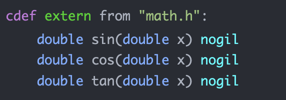
通常情况下，外部库的函数不会和 Python 对象交互，因此我们声明 nogil 函数还有另一种方式：

此时里面的所有函数都是 nogil 的。
注意：我们以上只是声明了可以不需要 GIL 的函数，然后调用的时候，还需要借助 with nogil 上下文管理器才能真正摆脱 GIL。
38.7 with nogil 上下文管理器
为了释放和获取 GIL，Cython 必须生成合适的 Python/C API 调用。一旦 GIL 被释放，那么便可以独立地执行 C 代码，而之后如果要重新和 Python 对象交互，则再度获取 GIL，因此这个过程我们很自然地想到了上下文管理器。
cdef double func(int a, double b) nogil:
return <double> a + b
def add(int a, double b):
cdef double res
# 进入 with nogil 上下文时，会释放 GIL
# 所以内部必须是不能和 Python 有任何交互的纯 C 操作
with nogil:
# res 的赋值均不涉及 Python /C API，所以它们是 C 操作
# 可以放在 with nogil 上下文中
res = 0.0
res = 3.14
# 在 with nogil: 里面如果出现了函数调用
# 那么该函数必须是使用 nogil 声明的函数
# 并且函数内部都是纯 C 操作、不能涉及 Python，否则是编译不过去的
# 但如果定义的函数不使用 nogil 声明，那么即使内部不涉及 Python
# 也不可以在 with nogil: 上下文中调用
# 而这里的 func 是一个 nogil 函数，因此它可以在此处被调用
res = func(a, b)
# with 上下文结束之后，会再度获取 GIL
return res
文件名为 cython_test.pyx，我们编译测试一下：
import pyximport
pyximport.install(language_level=3)
import cython_test
print(cython_test.add(1, 2.0)) # 3.0
结果没有任何问题，在调用 func 这个 nogil 函数之前释放掉 GIL，然后当函数执行完毕、退出上下文管理之后，再获取 GIL。而且函数的参数和返回值都要是 C 的类型，并且在 with nogil: 这个上下文管理器中也不可以使用 Python 对象，否则会编译错误。比如：我们里面加上一个 print，那么 Cython 就会很生气，因为 print 会将内部的参数强制转换为 PyObject *。
上面在 res = func(a, b) 之前，我们先在外面声明了一个 res，但如果不声明会怎么样？答案是会出现编译错误，因为如果不在外面声明的话，那么 res 就是一个 Python 变量了，因此会将结果（C 的浮点数）转成 PyFloatObject，返回其 PyObject *，这样就会涉及和 Python 的交互。那将变量的声明写在 with nogil: 内部可以吗？答案也是不行的，因为 cdef 不允许出现在 with nogil 上下文管理器中。
# 返回值如果不写的话默认是 object
# 所以必须指定一个 C 的返回值
cpdef int func(int a, int b) nogil:
return a + b
# 我们不在 with nogil 上下文中调用也是可以的
# 只不过此时将函数声明为 nogil 就没有太大意义了
print(func(1, 2)) # 3
# 我们也可以在全局使用 with nogil
cdef int res
with nogil:
res = func(22, 33)
print(res) # 55
所以 with nogil 上下文管理器的一个用途是在阻塞操作期间释放GIL，从而允许其它 Python 线程执行另一个代价昂贵的操作。
另外，还记得前面说的异常传递的问题吗？如果返回值是 C 的类型，那么函数中出现异常的时候不会向上抛，而是会把异常忽略掉。至于解决办法也很简单，通过 except ? 指定一个哨兵即可，然后该特性是可以和 nogil 结合的。
# except ? -1 要写在 nogil 的后面
cpdef double func(int a, int b) nogil except ? -1:
return a / b
编译测试一下：
import pyximport
pyximport.install(language_level=3)
import cython_test
cython_test.func(1, 0)
"""
Traceback (most recent call last):
File "D:/satori/main.py", line 5, in <module>
cython_test.func(1, 0)
File "cython_test.pyx", line 1, in cython_test.func
cpdef double func(int a, int b) nogil except ? -1:
File "cython_test.pyx", line 2, in cython_test.func
return a / b
ZeroDivisionError: float division
"""
如果我们是在 with nogil 中出现了除零错误，那么 Cython 会生成正确的错误处理代码，并且任何错误都会在重新获取 GIL 之后进行传播。
但如果一个 nogil 函数里面大部分都是纯 C 代码，只有一小部分是 Python 代码，那么我们可以在执行到 Python 代码时获取 GIL，举个例子：
cpdef int func(int a, int b) nogil:
# 由于 print 涉及到 Python/C API
# 因此该函数本来不可以声明为 nogil
# 但可以通过 with gil 上下文，让其获取 GIL
# 所以一个 nogil 函数，如果里面出现了 Python/C API
# 那么应该放在 with gil 上下文中，否则的话，编译报错
cdef int res = a + b;
with gil:
print("-------")
return res
cdef int res
with nogil:
res = func(11, 22)
# 同理在 with nogil 中如果涉及了 Python/C API
# 我们也可以使用 with gil
with gil:
print(res)
# 在 with gil 中如果有不需要 Python/C API 的操作
# 那么也可以继续 with nogil
with nogil:
res = 666
# 同理
with gil:
print(res)
"""
-------
33
666
"""
# 当然上面的做法有点神经病了
# 因为进入 with nogil 上下文会释放 GIL、上下文结束会获取 GIL
# 进入 with gil 上下文会获取 GIL，上下文结束会释放 GIL
# 所以应该写成下面这种方式：
with nogil:
res = func(11, 22) # 并行操作
with gil:
print(res)
res = 666 # 并行操作
with gil:
print(res)
"""
-------
33
666
"""
所以 Cython 支持我们自由操控 GIL，但需要注意的是：with nogil 上下文必须在已经持有 GIL 的情况下使用，表示要释放 GIL；with gil 上下文必须在已经释放 GIL 的情况下使用，表示要持有 GIL。比如下面的代码就是不合法的：
with gil:
pass
"""
Trying to acquire the GIL while it is already held.
"""
# 由于当前已经处于持有 GIL 的状态
# 而 with gil 又会获取 GIL，因此编译会报错
# 所以 with gil 上下文要么出现在 nogil 函数中
# 要么出现在 with nogil 上下文中
with nogil:
with nogil:
pass
"""
Trying to release the GIL while it was previously released.
"""
# 同样的道理，因为外层的 with nogil 已经把 GIL 释放了
# 此时已经不再持有 GIL 了，而内层的 with nogil 会再次尝试释放 GIL
# 同样会导致编译错误
自由操控 GIL 的感觉还是蛮爽的，但不建议乱用，因为 GIL 的获取和释放是一个阻塞的线程同步操作，比较昂贵。如果只是简单的 C 计算，没有必要特意释放，只有在遇到大量的 C 计算时，才建议这么做。
38.8 测试：是否真的实现了并行
我们上面虽然成功地释放了 GIL，但并没有验证是否能够利用多核，所以下面就来测试一下。
# cython_test.pyx
cdef int func() nogil:
cdef int a = 0
# 开启死循环, 执行计算操作
while 0 < 1:
a += 1
return a
def py_func():
# 一个包装器, 一旦进入了 with nogil:
# 此线程的 GIL 就会被释放掉, 被其它线程获取
# 从而实现线程的并行执行
with nogil:
res = func()
return res
编译测试一下：
import pyximport
pyximport.install(language_level=3)
import threading
import cython_test
# 开启一个线程, 执行 cython_test.py_func()
t1 = threading.Thread(target=cython_test.py_func)
t1.start()
# 主线程同样开启死循环, 执行纯计算逻辑
a = 0
while True:
a += 1
这里我测试用的系统是 Mac，查看 CPU 利用率直接使用 top 命令即可。当然代码和系统是无关的，都可以正常执行。只是用 Windows 系统的话，查看 CPU 利用率需要打开进程管理器。
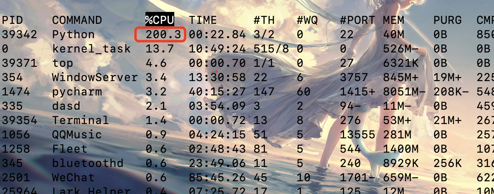
我们看到跑满了两个核心，证明确实是利用了多核，但如果我们不使用 with nogil 的话：
cdef int func() nogil:
cdef int a = 0
while 0 < 1:
a += 1
return a
def py_func():
# 直接调用, 此时是不会释放 GIL 的
# 虽然 func 是一个 nogil 函数
# 但我们还需要通过 with nogil 上下文管理器, 才能释放它
res = func()
return res
其它代码不变，再来测试一下：

我们看到只用了一个核心。
所以如果想利用多核，那么需要使用 Python/C API 主动释放，而在 Cython 中可以通过 with nogil: 上下文管理来实现。进入上下文，释放 GIL，独立执行，完事了再退出上下文并获取 GIL。
另外，我们说写 Cython 和写原生的 C 扩展本质是一样的，所以 Cython 的 with nogil: 在翻译之后，一定也会对应上面介绍的那两个宏。
Py_BEGIN_ALLOW_THREADS
Py_END_ALLOW_THREADS
// 这两组宏的效果是等价的，都是用于释放 GIL
Py_UNBLOCK_THREADS
Py_BLOCK_THREADS
然后随便写一段释放 GIL 的 Cython 代码，看看它翻译之后的 C 代码是不是我们说的那样。
# 文件名：cython_test.pyx
cpdef int func(int a, int b) nogil:
return a + b
cdef int res
with nogil:
res = func(22, 33)
print(res) # 55
我们编译一下，手动编译和自动编译均可，编译结束之后会在 cython_test.pyx 所在目录下生成 cython_test.c 文件。这个 cython_test.c 就是 Cython 编译器对 cython_test.pyx 翻译之后的结果，到此 Cython 的使命就完成了。然后再通过 gcc 将 cython_test.c 编译成扩展模块即可，当然我们不会直接输入 gcc 命令，而是通过 distutils 自动帮我们完成。
因此，如果你对自己的 C 语言水平和 Python/C API 的掌握很有自信，想要自己把握一切，那么你也可以不借助 Cython。对于当前来说，就是手动编写 cython_test.c。但如果觉得写 C 麻烦，那就写 cython_test.pyx 吧，然后让 Cython 编译器帮你翻译成 cython_test.c。
但不管哪一种，我们都要得到一个遵循标准 Python/C API 的 C 文件，然后再由 gcc 将 C 文件编译成扩展，而该扩展是解释器可以识别并导入的。
好了，扯得有点多了，这里把说过的内容又啰嗦了一遍。我们打开 cython_test.c，看看它翻译之后的 C 代码在释放 GIL 时候的逻辑。
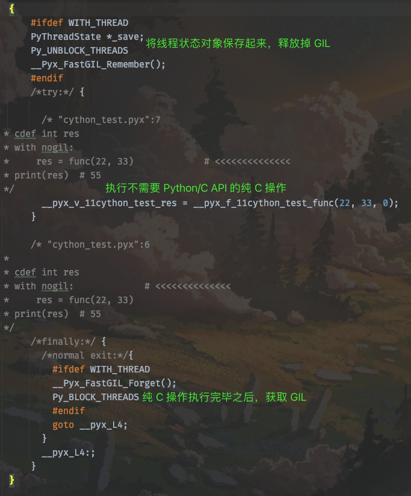
结果和我们分析的一样。
另外这里补充一点，Cython 翻译之后的 C 文件非常的大，上面截图中的代码大概在 1747 行。因为 Cython 编译器就相当于一个翻译官，但将 Cython 代码转成经过优化的 C 代码不是一件容易的事，因为编译器要考虑很多很多事情，比如兼容不同系统的编译器后端以及 ABI。所以翻译之后的 C 文件内容会非常多，但是这并不影响它的效率，况且这也不是我们需要关注的点。
38.9 小结
通过本节的内容，我们理解了 GIL 是个什么东西，以及如何释放它，从而达到并行执行的效果。
但是这还不够，假设有一个循环需要遍历 4 次，而我们的机器正好有 4 个核，然后现在希望这 4 层循环能够并行执行该怎么办呢？虽然我们也可以通过上面的方式实现，但明显会比较麻烦。而 Cython 提供了一个 prange 函数，可以非常方便地实现，只不过为了引出它做了大量的准备工作，但这一切都是值得的。那么下一节，我们就来聊聊 prange。
39. 使用 prange 实现 for 循环的并行
作者：古明地觉
公众号：古明地觉的编程教室
公众号二维码：
上一节我们探讨了 GIL 的原理，以及如何释放 GIL 实现并行，做法是将函数声明为 nogil，然后使用 with nogil 上下文管理器即可。在使用上非常简单，但如果我们想让循环也能够并行执行，那么该方式就不太方便了，为此 Cython 提供了一个 prange 函数，专门用于循环的并行执行。
这个 prange 的特殊功能是 Cython 独一无二的，并且 prange 只能与 for 循环搭配使用，不能独立存在。
Cython 使用 OpenMP API 实现 prange，用于多平台共享内存的处理。但 OpenMP 需要 C 或者 C++ 编译器支持，并且编译时需要指定特定的编译参数来启动。例如：当我们使用 gcc 时，必须在编译和链接二进制文件的时候指定一个 -fopenmp，以确保启用 OpenMP。
许多编译器均支持 OpenMP ，包括免费的和商业的。但 Clang/LLVM 则是一个最显著的例外，它只在一个单独的分支中得到了初步的支持，而为它完全实现的 OpenMP 还在开发当中。所以本节的内容，使用的操作系统是 CentOS，因为 Mac 还不支持 -fopenmp 这个选项。
而使用 prange，需要从 cython.parallel 中进行导入。但是在这之前，我们先来看一个例子：
import numpy as np
from cython cimport boundscheck, wraparound
cdef inline double norm2(double complex z) nogil:
"""
接收一个复数 z, 计算它的模的平方
由于 norm2 要被下面的 escape 函数多次调用
这里通过 inline 声明成内联函数
:param z:
:return:
"""
return z.real * z.real + z.imag * z.imag
cdef int escape(double complex z,
double complex c,
double z_max,
int n_max) nogil:
"""
这个函数具体做什么, 不是我们的重点
我们不需要关心
"""
cdef:
int i = 0
double z_max2 = z_max * z_max
while norm2(z) < z_max2 and i < n_max:
z = z * z + c
i += 1
return i
@boundscheck(False)
@wraparound(False)
def calc_julia(int resolution,
double complex c,
double bound=1.5,
double z_max=4.0,
int n_max=1000):
"""
我们将要在 Python 中调用的函数
"""
cdef:
double step = 2.0 * bound / resolution
int i, j
double complex z
double real, imag
int[:, :: 1] counts
counts = np.zeros((resolution + 1, resolution + 1), dtype="int32")
for i in range(resolution + 1):
real = -bound + i * step
for j in range(resolution + 1):
imag = -bound + j * step
z = real + imag * 1j
counts[i, j] = escape(z, c, z_max, n_max)
return np.array(counts, copy=False)
我们手动编译一下，然后调用 calc_julia 函数，这个函数做什么不需要关心，我们只需要将注意力放在那两层 for 循环（准确的说是外层循环）上即可，这里我们采用手动编译的形式。
import cython_test
import numpy as np
import matplotlib.pyplot as plt
arr = cython_test.calc_julia(1000, 0.322 + 0.05j)
plt.imshow(np.log(arr))
plt.show()
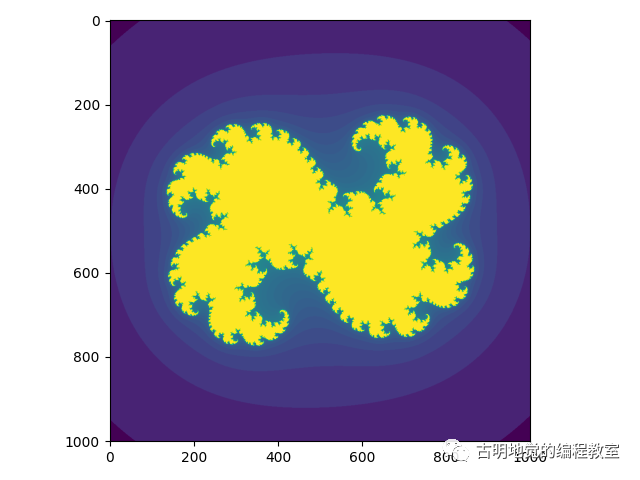
那么 calc_julia 这个函数耗时多少呢？我们来测试一下：

39.1 使用 prange
对于上面的代码来说，外层循环里面的逻辑是彼此独立的，即当前循环不依赖上一层循环的结果，因此这非常适合并行执行。所以 prange 便闪亮登场了，我们只需要做简单的修改即可：
import numpy as np
from cython cimport boundscheck, wraparound
from cython.parallel cimport prange
cdef inline double norm2(double complex z) nogil:
return z.real * z.real + z.imag * z.imag
cdef int escape(double complex z,
double complex c,
double z_max,
int n_max) nogil:
cdef:
int i = 0
double z_max2 = z_max * z_max
while norm2(z) < z_max2 and i < n_max:
z = z * z + c
i += 1
return i
@boundscheck(False)
@wraparound(False)
def calc_julia(int resolution,
double complex c,
double bound=1.5,
double z_max=4.0,
int n_max=1000):
cdef:
double step = 2.0 * bound / resolution
int i, j
double complex z
double real, imag
int[:, :: 1] counts
counts = np.zeros((resolution + 1, resolution + 1), dtype="int32")
# 只需要将外层的 range 换成 prange
for i in prange(resolution + 1, nogil=True):
real = -bound + i * step
for j in range(resolution + 1):
imag = -bound + j * step
z = real + imag * 1j
counts[i, j] = escape(z, c, z_max, n_max)
return np.array(counts, copy=False)
我们只需要将外层循环的 range 换成 prange 即可，里面指定 nogil=True，便可实现并行的效果，至于这个函数的其它参数以及用法后面会说。而且一旦使用了 prange，那么在编译的时候，必须启用 OpenMP，下面看一下编译脚本。
from distutils.core import setup, Extension
from Cython.Build import cythonize
ext = [Extension("cython_test",
sources=["cython_test.pyx"],
# 增加一些编译参数
extra_compile_args=["-fopenmp"],
extra_link_args=["-fopenmp"])]
setup(ext_modules=cythonize(ext, language_level=3))
编译测试一下：

我们看到效率大概是提升了两倍，因为我 CentOS 服务器只有两个核，因此效率提升大概两倍左右。
所以只是做了一些非常简单的修改，便可带来如此巨大的性能提升，简直妙啊。prange 是要搭配 for 循环来使用的，如果 for 循环内部的逻辑彼此独立，即第二层循环不依赖第一层循环的某些结果，那么不妨使用 prange 吧。
注意还没完，我们还能做得更好，下面就来看看 prange 里面的其它的参数，这样我们能更好地利用 prange 的并行特性。
39.2 prange 的其它参数
prange 函数的原型如下：
# 第一个参数 self 我们不需要管
# prange 实际上是类 CythonDotParallel 的成员函数
# 因为 Cython 内部执行了下面这行逻辑
# sys.modules['cython.parallel'] = CythonDotParallel()
# 所以它将一个实例对象变成了一个模块
def prange(self, start=0, stop=None, step=1,
nogil=False, schedule=None,
chunksize=None, num_threads=None):
我们先来看前三个参数，start、stop、step。
- prange(3): 相当于 start=0、stop=3；
- prange(1, 3): 相当于 start=1、stop=3；
- prange(1, 3, 2): 相当于 start=1、stop=3、step=2；
类似于 range，同样不包含结尾 stop。
然后是第四个参数 nogil，它默认是 False，但事实上我们必须将其设置为 True，否则会报出编译错误。
然后剩下的三个参数，如果我们不指定的话，那么 Cython 编译器采取的策略是将整个循环分成多个大小相同的连续块，然后给每一个可用线程一个块。然而这个策略实际上并不是最好的，因为每一层循环用的时间不一定一样，如果一个线程很快就完成了，那么不就造成资源上的浪费了吗？
我们修改一下，将 schedule 指定为 "static"，chunksize 指定为 1：
for i in prange(resolution + 1, nogil=True,
schedule="static", chunksize=1):
其它地方不变，只是加两个参数，然后重新测试一下。
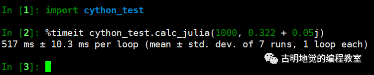
我们看到效率上是差不多的，原因是我的机器只有两个核，如果核数再多一些的话，那么速度就会明显地提升。
下面来解释一下剩余的三个参数的含义，首先是 schedule，它有以下几个选项：
"static"
整个循环在编译时会以一种固定的方式分配给多个线程，如果 chunksize 没有指定，那么会分成 num_threads 个连续块，一个线程一个块。如果指定了 chunksize，那么每一块会以轮询调度算法（Round Robin）交给线程进行处理，适用于任务均匀分布的情况。
"dynamic"
线程在运行时动态地向调度器申请下一个块，chunksize 默认为 1，当任务负载不均时，动态调度是最佳的选择。
"guided"
块是动态分布的，就像 dynamic 一样，但这与 dynamic 还不同，chunksize 的比例不是固定的，而是和 剩余迭代次数 / 线程数 成比例关系。
"runtime"
不常用。
控制 schedule 和 chunksize 可以方便地探索不同的并行执行策略、以及工作负载分配，通常指定 schedule 为 "static"，加上设置一个合适的 chunksize 是最好的选择。而 dynamic 和 guided 适用于动态变化的执行上下文，但会导致运行时开销。
当然还有最后一个参数 num_threads，很明显不需要解释，就是使用的线程数量。如果不指定，那么 prange 会使用尽可能多的线程。所以我们只是做了一点修改，便可以带来巨大的性能提升，这种性能提升与 Cython 在纯 Python 上带来的性能提升成倍增关系。
39.3 在 reductions 操作上使用 prange
我们经常会循环遍历数组计算它们的累和、累积等等，这种数据量减少的操作我们称之为 reduction 操作。而 prange 对这样的操作也是支持并行执行的，我们举个例子：
from cython cimport boundscheck, wraparound
@boundscheck(False)
@wraparound(False)
def calc_julia(int [:, :: 1] counts,
int val):
cdef:
int total = 0
int i, j, M, N
N, M = counts.shape[: 2]
for i in range(M):
for j in range(N):
if counts[i, j] == val:
total += 1
return total / float(counts.size)
显然我们是希望计算一个数组中值为 val 的元素的个数，下面测试一下：

如果改成 prange 的话，会有什么效果呢？代码的其它部分不变，只需要导入 prange，然后将 range(M) 改成 prange(M, nogil=True) 即可。
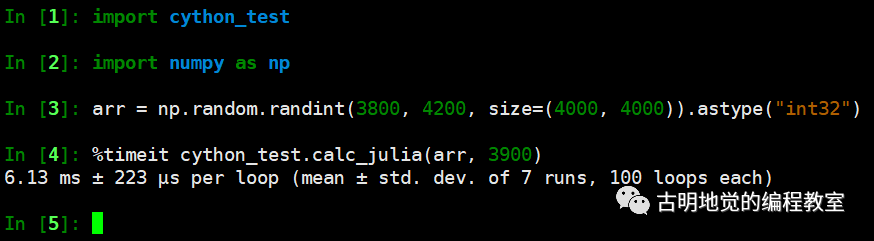
速度比原来快了两倍多，还是很可观的，如果你的 CPU 是多核的，那么效率提升会更明显。
这里我们没有使用 schedule 和 chunksize 参数，你也可以加上去。当然啦，如果占用内存过大的话，它可能无法像预期的一样显著地提升性能，因为 prange 的优化重点是在 CPU 上面。
但是可能有人会有疑问，多个线程同时对 total 变量进行自增操作，这么做不会造成冲突吗？答案是不会的，因为加法是可交换的，即无论是 a + b 还是 b + a，结果都是相同的。Cython（通过 OpenMP）生成线程代码，每个线程计算循环子集的和，然后所有线程再将各自的和汇总在一起。
如果是交给 Numpy 来做的话，那么等价于如下：
np.sum(counts == val) / float(counts.size)
但是效率如何呢？我们来对比一下：

我们采用并行计算用的是 6.13 毫秒，Numpy 用的是 20 毫秒，看样子是我们赢了，并且 CPU 核心数越多，差距越明显，这便是并行计算的威力。当然对于这种算法来说，还是直接交给 Numpy 吧，毕竟人家都帮你封装好了，一个函数调用就可以解决了。
因此有效利用计算机硬件资源确实是最直接的办法。
39.4 并行编程的局限性
虽然 Cython 的 prange 容易使用，但其实还是有局限性的，当然这个局限性和 Cython无关，因为理想化的并行扩展本身就是一个难以实现的事情。我们举个例子：
def filter(nrows, ncols):
for i in range(nrows):
for j in range(ncols):
b[i, j] = (a[i, j] + a[i - 1, j] + a[i + 1, j] +
a[i, j - 1] + a[i, j + 1]) / 5.0)
假设我们要做一个过滤器，计算每一个点加上它周围四个点的平均值。但如果这里将外层的 range 换成 prange，那么它的整体性能不会明显提升。因为内层循环访问的是不连续的数组元素，由于缺乏数据本地性，CPU 的缓存无法生效，反而导致 prange 变慢。
那么我们什么时候使用 prange 呢？遵循以下法则即可：
- 1） prange 能够很好地利用 CPU 并行操作，这一点我们已经说过了；
- 2）非本地读写的那些和内存绑定的操作很难提高速度；
- 3）用较少的线程更容易实现加速，因为对于 CPU 密集而言，即便指定了超越核心数的线程也是没有意义的；
- 4）使用优化的线程并行库是将 CPU 所有核心都用于常规计算的最佳方式；
当然，其实我们在开发的时候是可以随时使用 prange 的，只要循环体不和 Python 对象进行交互即可。
39.5 小结
Cython 允许我们绕过全局解释器锁，只要我们把和 Python 无关的代码分离出来即可。对于那些不需要和 Python 交互的 C 代码，可以轻松地使用 prange 实现基于线程的并行。
在其它语言中，基于线程的并行很容易出错，并且难以正确处理。而 Cython 的 prange 则不需要我们在这方面费心，能够轻松地处理很多性能瓶颈。
40. Cython 系列，完结撒花
到目前为止，Cython 相关的内容我们就介绍完了，不知道有没有帮到你呢？
下面回顾一下我们都学习了哪些内容：
1）了解了 Cython 是什么？以及它存在的意义，为什么 Cython 会出现。
2）通过对比 Cython, C, C 扩展以及纯 Python 之间的性能差异，了解了 Cython 如何对 Python 进行加速，以及应该在何时使用 Cython。
3）了解了编译 Cython 代码的几种方式，因为 Cython 代码是要经过编译的，编译方式可以是手动编译、也可以是自动编译。
4）通过对比静态语言和动态语言、以及编译执行和解释执行之间的差异，进一步理解了 Cython 的定位以及作用。
5）然后就是 Cython 的基础语法，包括变量的静态声明、静态函数、静态类、类型转换、异常处理、魔法方法等等。
6）Cython 同时理解 C 和 Python，在 Cython 里面可以直接声明 C 一级的结构，比如数组、指针、结构体、共同体、枚举等等。此外一些 C 级结构和 Python 结构是可以相互转换的，但是要注意内存管理相关的问题。
7）如果代码量很大、功能很复杂的话，就需要多文件编程了，所以我们还学习了 Cython 的工程化，如何将多个文件组织起来。核心就在于定义一个和 .pyx 文件具有相同基名称的 .pxd 文件，将那些想要提供给别的文件使用的 C 级结构都写在里面，然后通过 cimport 导入。
8）然后是 Cython 最核心的特性，就是包装外部的 C 代码。假设你有现成的 C 源文件，那么 Cython 可以直接对其进行包装，外界调用 Python 函数，在 Python 函数内部调用 C 函数。这样调用者就不清楚，这个功能是我们自己实现的，还是已经存在的。
9）Cython 不光可以封装 C 源文件，还可以封装动态库和静态库，而 C 已经存在大半个世纪了，拥有非常多的库。并且库的话，也可以使用 Go, Rust 编写，然后封装给 Cython 使用。
10）Python 在科学计算领域大放异彩的原因就在于，它能和 C 进行非常好的交互，并且数据之间可以共享内存，而共享内存的实现得益于缓冲区协议。Python 底层有一个结构体叫 Py_buffer，它内部有一个 buf 字段指向了缓冲区，所有实现缓冲区协议的对象一律通过 Py_buffer 来操作缓冲区，这样就屏蔽了不同对象之间的类型差异。
数据拷贝的时候，可以只拷贝 Py_buffer 结构体，但是结构体内部的 buf 字段指向的缓冲区不拷贝，从而实现共享内存。而我们也学习了缓冲区协议的具体细节，以及不同对象之间是如何共享缓冲区的，并且还通过 Cython 和 Python/C API 手动实现了缓冲区协议。
11）Python 有一个内置类型 memoryview，它存在的目的是在 Python 级别表示 C 级的缓冲区。但 Cython 提供了一个 typed memoryview，它是专门为 C 风格的访问而设计的，并且功能更加强大。
12）Numpy 数组是使用最广泛的数组，不仅具有出色的性能，还提供了大量丰富的 API 供我们使用。而 typed memoryview 和 Numpy 数组之间也是可以共享内存的，而共享内存的方式我们提供了三种。
13）最后是并行计算，上面不管再怎么优化，都是基于单线程的。这样性能的提升幅度有限，而合理地利用硬件资源是最有效的办法。所以我们介绍了 GIL 到底是个什么东西？它为什么会存在，存在的意义是什么？如何通过 Cython 将 GIL 释放掉，真正实现并行？以及 Cython 释放 GIL 的原理是什么，我们应该在何时释放 GIL，释放 GIL 又有哪些注意事项？
14）虽然 Cython 可以释放 GIL，但对于 for 循环来说其实是不够方便的。所以我们又学习了 prange，它专门用于 for 循环的并行。只需要将 range 换成 prange，即可接入所有可用的 CPU 核心，非常方便，但这个特性并不是所有的 C 编译器都支持。
总的来说，Cython 还是非常值得我们去学习的，通过学习 Cython，你也能更加深刻地了解 Python。
如果你觉得内容对你有所帮助，可以请作者喝杯咖啡。

作者：古明地觉
日期：2023-02-06